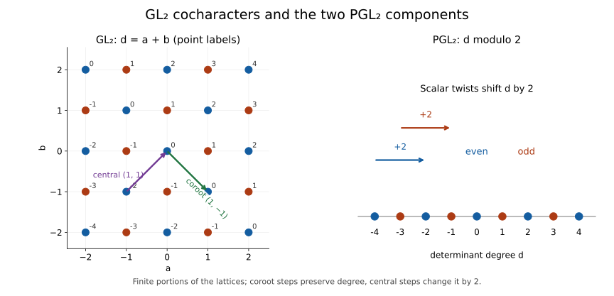
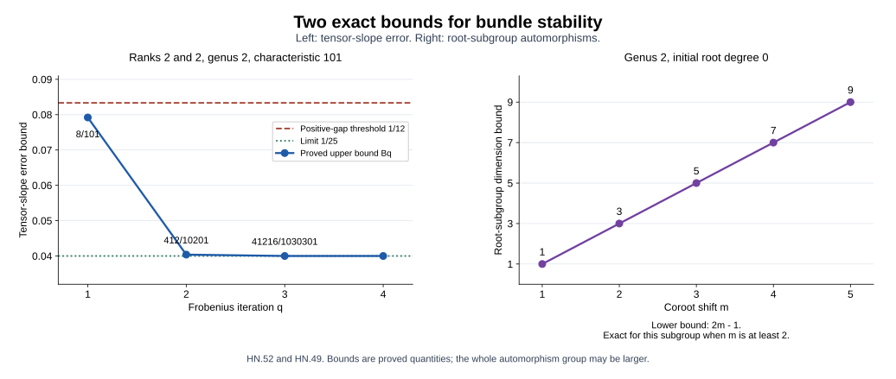
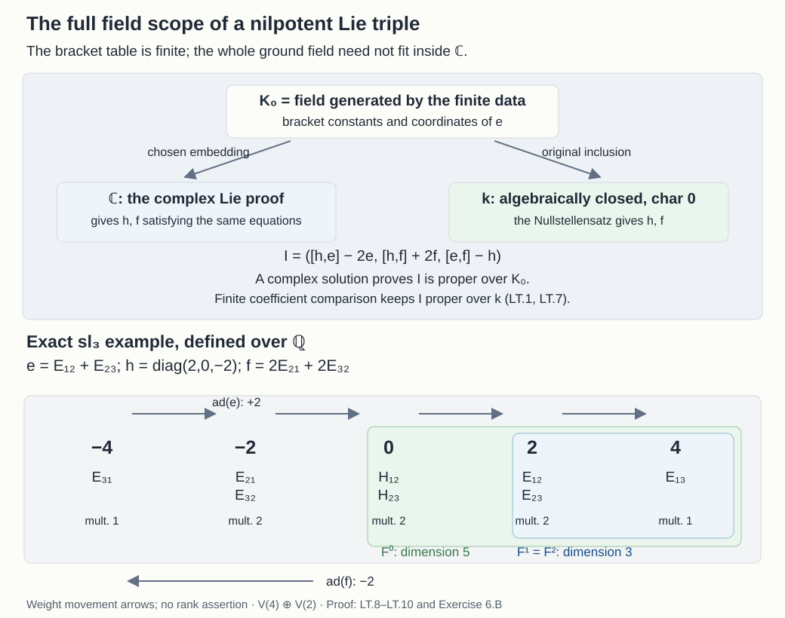
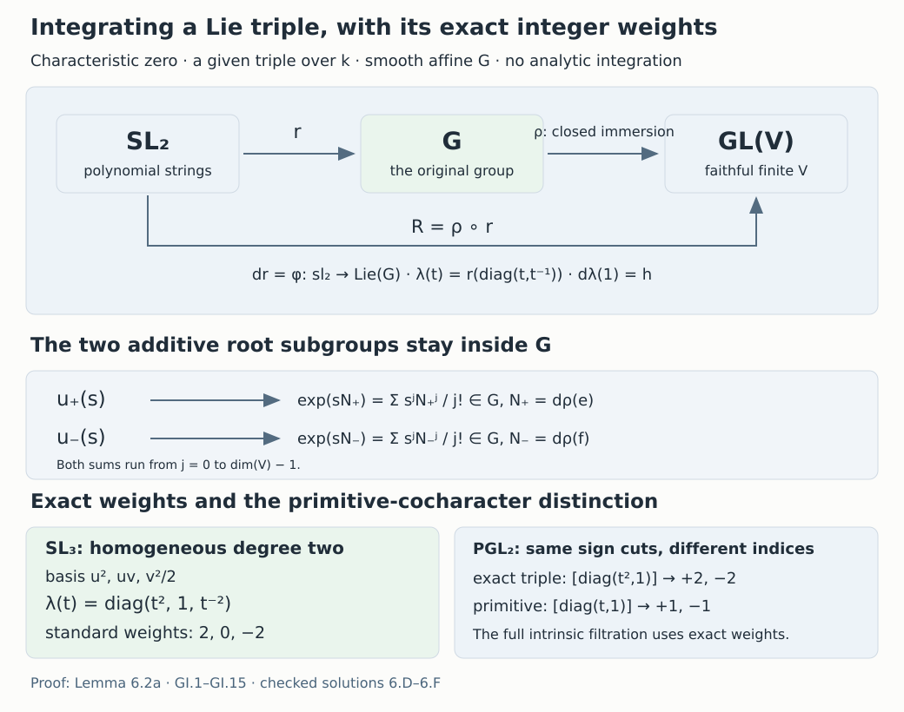
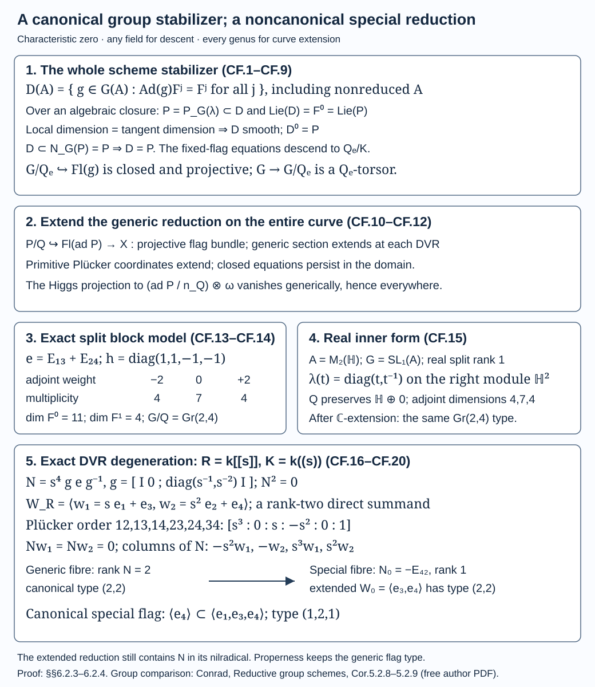
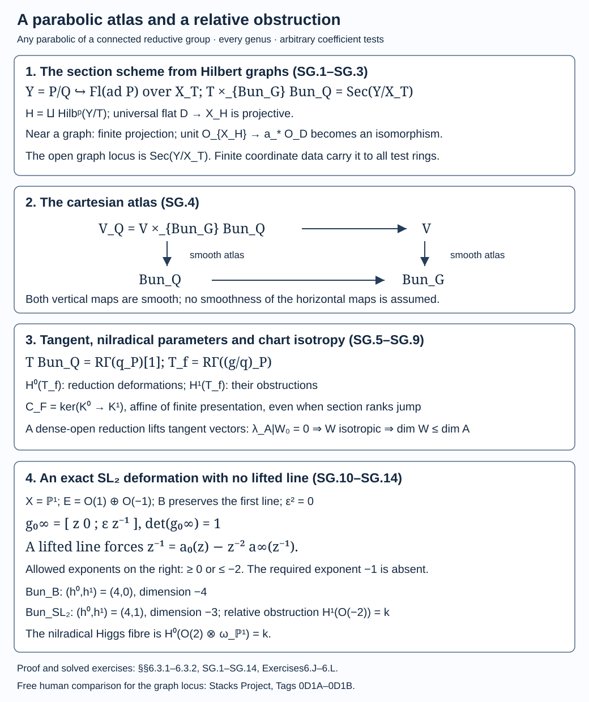

The moduli stack of bundles
Draft. CC0 1.0.
A bundle can have many automorphisms while admitting few deformations. A moduli stack records both. This is why its dimension can be negative, why the dimension of a coarse moduli space is a different calculation, and why its cotangent stack is a space of Higgs fields rather than an ordinary vector bundle of constant rank.
Throughout, \(X\) is a smooth projective connected curve over an algebraically closed field \(k\) of characteristic zero. Its genus is \(g\). The group \(G\) is connected reductive. We impose \(g\ge2\) only where it is needed and say so explicitly. A principal bundle is a right \(G\)-torsor; write \(\operatorname{ad}(P)=P\times^G\mathfrak g\) for its adjoint vector bundle. Complexes are cohomologically graded, so \(V[1]\) puts a vector space \(V\) in degree \(-1\).
Sections 1–2 construct the bundle stack and prove its deformation theory and Euler-characteristic formula. Serre duality on a curve is used later for the cotangent calculation. The previous lesson constructed bundles from lattices and identified the elementary Hecke fibres. Here we examine the stack on which those correspondences act.
1. The moduli problem, including its arrows
For a \(k\)-scheme \(S\), the groupoid \(\operatorname{Bun}_G(S)\) consists of \(G\)-torsors on \(X\times S\) and their isomorphisms. Pullback in \(S\) makes this a stack for the fppf topology: torsors, their actions, and their isomorphisms satisfy faithfully flat descent. For \(G=GL_n\), the associated standard representation identifies this groupoid with rank-\(n\) vector bundles. For \(G=\mathbb G_m\), it is the groupoid of line bundles, usually called the Picard stack.
Sections 7.1–7.7 prove formal-disc gluing, effective fppf descent of affine schemes and equivariant algebras, affineness of torsors under affine groups, and the scheme-theoretic torsor/vector-bundle dictionary. Passage from an affine cover to an arbitrary fppf family uses the explicitly linked earlier scheme-topological proofs in §7.5. Sections 1.1–1.6 supply the bundle-stack atlas, affine diagonal and formal effectivity; the remaining recursive foundations are specified in §6.4.
Sections 1.1–1.6 prove that \(\operatorname{Bun}_G\) is an algebraic stack locally of finite type over \(k\), with affine finitely presented diagonal, and prove effectivity of formal bundle families over complete Noetherian local coefficient rings. The proof constructs a smooth atlas from framed quotients and schemes of reductions. [Heinloth, Proposition 1] is a freely accessible reference for the classical algebraicity statement. Section 2 gives the deformation, smoothness and dimension calculation.
The diagonal is affine and of finite type. Here is a way to understand this assertion. Given two bundles \(P,Q\) over \(X\times S\), their isomorphism functor is the functor of sections of the affine \(X\times S\)-scheme \(\operatorname{Isom}_G(P,Q)\). Work locally on \(S\). An affine scheme of finite presentation over \(X\times S\) can be presented inside a vector bundle by finitely many equations, using a sufficiently ample twist to produce generators and relations. The section functor of that vector bundle is affine: it is represented by the degree-zero linear stack of \(R\pi_*V\), or directly by the linear equations in a two-term finite locally free presentation of that complex. Imposing the finitely many algebraic relations gives a closed affine subscheme. This represents the isomorphism functor.
For vector bundles the equations are particularly concrete. A pair of homomorphisms \(u:E\to F\) and \(v:F\to E\) is an isomorphism with its inverse precisely when \(vu=1_E\) and \(uv=1_F\). These are closed equations in the affine section functors of the two Hom bundles. Keeping the inverse as a variable explains affineness without asserting that every arbitrary open subscheme of an affine scheme is affine.
Local finite type does not mean that there is a single finite type space of all bundles. Degree and instability both produce unbounded families. We will distinguish them carefully.
1.1. Finite cohomology coordinates and all parameter changes
We begin with the parameter spaces needed for the diagonal and the atlas. Fix a very ample line bundle \(A\) on \(X\), and write \(F(m)=F\otimes A^m\). Here and below, finite presentation refers to the coefficient scheme as well as to the sheaf.
The earlier Algebra and sheaf cohomology before reductive groups, §§4–5 and 8, proves affine Čech cohomology, projective coherent finiteness, generation by high twists and Serre vanishing. Lemma 5.1 of Projective cohomology and smooth affine models proves the following algebraic step: a bounded complex of flat modules over a Noetherian ring, with finite cohomology, has a finite projective replacement which remains a quasi-isomorphism after tensoring with every module.
To apply it, let \(Z\) be projective over a Noetherian affine base \(\operatorname{Spec}R_0\), and let \(F\) be coherent and flat over \(R_0\). Choose a finite affine cover of \(Z\). Its intersections are affine since \(Z\) is separated. The section module of \(F\) on every such intersection is \(R_0\)-flat: tensor an injection of base modules with \(F\), test exactness at every stalk, and then take sections on that affine intersection. The cover complex has flat terms, finite cohomology and commutes with every base tensor. The replacement therefore gives \[ \begin{gathered} K\simeq C^\bullet(Z,F),\\ H^i(K\otimes_{R_0}M) =H^i\!\left(C^\bullet(Z,F)\otimes_{R_0}M\right). \end{gathered} \tag{BA.1} \] for every \(R_0\)-module \(M\). The interval of \(K\) is the interval of the cover complex, so it starts in degree zero.
For the fixed curve we can use just two affine opens. In its fixed projective embedding choose one hyperplane not containing the curve; its intersection with the curve is finite. A second hyperplane avoids that finite set, since \(k\) is infinite. The two affine hyperplane complements cover \(X\), and their intersection is affine. The same is true after every coefficient change. Their Čech complex is concentrated in degrees zero and one, proving that the curve has no higher coherent cohomology and giving \(K\) in those same two degrees.
For a vector bundle on \(X_R\), with arbitrary coefficient algebra \(R\), this construction is available after a finite-presentation model. Indeed, on each member of a fixed finite affine cover of \(X\), its module is the image of a finite idempotent matrix. The idempotents, the gluing maps and their inverses involve finitely many coefficients of \(R\); their equations descend to a finitely generated \(k\)-subalgebra \(R_0\subset R\). Rank \(r\) descends too: the idempotent has trace \(r\), and in characteristic zero this equality forces rank \(r\) at every field-valued point of the model. Thus these data give a vector bundle on \(X_{R_0}\). Tensor its complex in (BA.1) with \(R\). This computes the original bundle's cohomology after every coefficient change.
If all positive fibre cohomology vanishes near a parameter point, cancel each invertible differential entry of \(K\), using row and column operations. The equation \(d^2=0\) separates the corresponding contractible pair. After finitely many cancellations, all remaining differential entries vanish at the point. Their fibre terms are then the fibre cohomology, so all positive terms have rank zero; only degree zero remains. The cancellations persist after every tensor. This proves, on that neighbourhood, \[ \begin{gathered} V=\pi_*F\text{ finite locally free},\qquad R^i\pi_*F=0\quad(i>0),\\ V\otimes_R B\simeq H^0(X_B,F_B) \quad\text{for every }R\text{-algebra }B. \end{gathered} \tag{BA.2} \] The vanishing locus is open by the same cancellation argument. The Euler characteristic is the alternating sum of the finite-projective ranks, hence locally constant.
For two vector bundles \(E,F\), apply (BA.1) to \(E^\vee\otimes F\). Locally on the coefficient base, its section functor is the kernel of the first differential of a complex of finite free modules. Writing that differential as \(d:K^0\to K^1\), the functor is represented by \[ \underline{\operatorname{Hom}}_X(E,F) =\operatorname{Spec} \left(\operatorname{Sym}_R((K^0)^\vee)/ \bigl(d^\vee((K^1)^\vee)\bigr)\right). \tag{BA.3} \] The equations are linear, and remain the right equations after every tensor by (BA.1). These affine schemes glue because they represent the same functor on overlaps; the result is affine and finitely presented over the coefficient scheme.
Composition is a morphism between these represented Hom functors, obtained by composing their universal homomorphisms. In the product of the two Hom schemes impose \[ (u,v):\quad u:E\to F,\quad v:F\to E,\qquad vu=1_E,\quad uv=1_F. \tag{BA.4} \] The identity sections in the two affine finitely presented endomorphism schemes are closed immersions of finite presentation. Hence (BA.4) defines an affine finitely presented scheme. Its points are isomorphisms and their unique inverses, so it represents \(\underline{\operatorname{Isom}}_X(E,F)\), including all nonreduced coefficient changes.
1.2. A smooth atlas made from framed quotients
Fix rank \(r\geq1\) and degree \(d\), and set \(a=\deg A\). The Riemann–Roch calculation in §6.4 gives \[ P(t)=rat+d+r(1-g),\qquad N=P(m)>0. \tag{BA.5} \] Consider quotients \(\mathcal O_X(-m)^N\twoheadrightarrow E\) with polynomial \(P\). The representability construction in Hilbert and Quot schemes, Theorem 4.1, §4, gives their finite-type scheme \(Q_m\). We use its locally closed Grassmannian/flattening construction. Its uniform kernel bound is proved in Regularity and bounded families, Theorem 4.1, and its stabilized Fitting equations in Flattening stratifications, Theorem 6.1. The flat projective cohomology needed by that construction is exactly (BA.1)–(BA.2). The later valuative proof of projectivity of \(Q_m\) is unnecessary for this atlas.
Fibre cohomology is unchanged by a field extension, as follows by tensoring the affine cover complex. Thus the polynomial (BA.5), including its genus and geometric determinant degree, is the same over arbitrary parameter residue fields.
Take the open locus where the universal quotient is a vector bundle of rank \(r\). Here is the fibre-to-family check for that openness. Over the Noetherian universal base, at a point of a fibre where the quotient is free, lift a fibre basis to a map from a finite free module. Nakayama makes that map surjective near the point. Since the quotient is flat over the parameter base, its kernel remains exact on the residue field; that fibre kernel vanishes. The kernel is finite, so Nakayama makes it zero after shrinking. Thus freeness holds on a source neighbourhood. The complement of the resulting vector-bundle locus is closed; its image in the parameter scheme is closed by projectivity of \(X\). Removing that image gives the required open coefficient locus. Rank \(r\) is checked by the same finite presentations.
On it further require \(H^1(X_s,E_s(m))=0\) and that the section map of the universal quotient be an isomorphism: \[ R^N\xrightarrow{\ \sim\ }\pi_*E(m),\qquad \mathcal O_{X_R}(-m)^N\twoheadrightarrow E. \tag{BA.6} \] These are open conditions. The first uses (BA.2); the second is the nonvanishing determinant of a map between rank-\(N\) locally free modules. Call the resulting finite-type open scheme \(V_{r,d,m}\). Its universal quotient defines a map to \(\operatorname{Bun}_{GL_r}\).
For any vector bundle \(E\) over an arbitrary parameter scheme \(T\), let \(T_{d,m}\subset T\) be the open locus where it has degree \(d\), is generated after twist \(m\), and has no positive fibre cohomology after that twist. Generation is open: the evaluation cokernel is finite, and properness removes the image of its support. This argument is made on a Noetherian model and then pulled back; (BA.2) provides the section module and arbitrary base change. The fibre product with \(V_{r,d,m}\) is precisely the frame scheme of \(\pi_*E(m)\): \[ \begin{array}{ccc} \operatorname{Fr}(\pi_*E(m)) &\longrightarrow&V_{r,d,m}\\ \downarrow&&\downarrow\\ T_{d,m}&\longrightarrow&\operatorname{Bun}_{GL_r}. \end{array} \tag{BA.7} \] It is a \(GL_N\)-torsor over \(T_{d,m}\), so is smooth and surjective there. A basis of sections gives the evaluation quotient; conversely (BA.6) recovers exactly that basis. An automorphism preserving the quotient is the identity since the quotient is surjective. Thus (BA.7) is an equality of the full fibre-product functors.
Serre generation and vanishing ensure that every fibre belongs to \(T_{d,m}\) for some \(m\geq0\). Degree is locally constant by (BA.1) and the vector-bundle Riemann–Roch formula. The fibre loci therefore cover every parameter scheme. We obtain a representable smooth surjection \[ \coprod_{\substack{d\in\mathbf Z,\ m\geq0\\P(m)>0}} V_{r,d,m}\longrightarrow\operatorname{Bun}_{GL_r}. \tag{BA.8} \] The source is a scheme locally of finite type over \(k\). Effective vector-bundle descent is §7.5, and its diagonal is the affine finitely presented Isom scheme (BA.4). These establish algebraicity and local finite type of the vector-bundle stack directly.
1.3. A schematic line stabilizer and its homogeneous space
We need a projective-coordinate description of a principal-bundle reduction. We construct it for the present smooth affine \(G\).
Every element of a field comodule is contained in a finite-dimensional subcomodule. To verify this, express its coaction using linearly independent coefficients in the Hopf-algebra factor. Coassociativity, followed by linear functionals selecting those coefficients, shows that the finitely many coefficients in the vector factor span a subcomodule containing the original element. Apply this to finitely many algebra generators of \(k[G]\). Right translation gives a finite-dimensional representation containing those generators. Evaluation at the identity expresses each generator as a matrix coefficient of that representation; the antipode supplies the inverse matrix. Thus the matrix-coordinate map onto \(k[G]\) is surjective, giving a faithful closed representation \[ j:G\hookrightarrow K=GL_n. \tag{BA.9} \]
Let \(J\subset k[K]\) be its ideal. Choose a finite-dimensional right-translation subcomodule \(V\subset k[K]\) containing generators of \(J\), and put \(W=J\cap V\). For every test \(k\)-algebra \(B\), this intersection commutes with tensoring by \(B\), since \(B\) is flat over the field. Right translation by \(G(B)\) preserves \(W_B\). Conversely, an element of \(K(B)\) preserving \(W_B\) preserves the ideal generated by it, which is \(J_B\), and the same holds for its inverse. It therefore sends \(G_B\) onto itself by right translation. Applying this translation to the identity shows that the element lies in \(G(B)\). We have proved the scheme-theoretic identity \[ \operatorname{Stab}_K(W)=G. \tag{BA.10} \]
Put \(b=\dim W\), \(\mathcal W=\bigwedge^bV\), and \(D=\bigwedge^bW\). The stabilizer of this line is the stabilizer of \(W\), on every test ring. In a basis whose first \(b\) vectors span \(W\), preservation of the wedge line says that the first square minor is a unit; the minors replacing one row make the lower-left block zero after multiplying by its inverse. Thus the matrix maps \(W_B\) isomorphically onto itself. This also covers \(b=0\), when the wedge line is the trivial representation. Consequently \[ D\subset\mathcal W,\qquad \operatorname{Stab}_K([D])=G \quad\text{in }\mathbf P_{\mathrm{lines}}(\mathcal W). \tag{BA.11} \] Here the projective space parametrizes lines, equivalently rank-one quotients of \(\mathcal W^\vee\).
The orbit \(O=K[D]\) is locally closed with its reduced scheme structure by Group schemes over a field, Theorem 7.1 and its written constructible-image proof. We check that this reduced orbit has the full quotient structure needed here. It is integral because it is the image of the integral group \(K\).
Here is the nonempty smooth open used in this check. On an integral affine chart \(\operatorname{Spec}B\), Krull dimension and Noether normalization, §2, supplies a polynomial ring \(k[t_1,\ldots,t_c]\subset B\) with \(B\) finite over it. Take the fraction fields and adjoin a finite list of algebra generators of \(B\), one at a time. Each has a monic minimal polynomial over the preceding fraction field; its derivative is nonzero in characteristic zero. Start with the polynomial ring, localize to include the finitely many coefficients and denominators of the first polynomial, adjoin its root, and invert its derivative. Repeat through the finite list, localizing at each stage to include the next coefficients. Monic division shows that each intermediate algebra injects into the corresponding fraction field: a remainder of smaller degree cannot vanish at that algebraic generator. The square-zero Taylor calculation of §7.6 shows that each root adjunction with invertible derivative is étale. These finitely presented localizations and adjunctions therefore give a smooth \(k\)-algebra containing \(B\), inside \(\operatorname{Frac}B\).
All the extra generators have only finitely many denominators in \(B\). Inverting their product in both algebras makes the last algebra equal to a localization \(B_f\). Hence \(B_f\) is a nonempty smooth chart. The transitive \(K(k)\)-action transports its smooth locus across every closed point of \(O\). The smooth locus is open by the local standard presentations; a nonempty complement would have a closed point. Thus all of \(O\) is smooth.
The dominant orbit map \(q:K\to O\) has surjective differential at a generic point. Indeed, a transcendence basis of \(k(O)\) extends to one of \(k(K)\); in characteristic zero the remaining algebraic extensions are separable. Differentiating a minimal polynomial expresses the differential of an algebraic generator in terms of the basis differentials, since its derivative is nonzero. The partial derivatives in the basis variables extend uniquely through the algebraic adjunctions by the same formula. Applying those derivations detects every coefficient of a relation between the basis differentials, proving their independence. Thus pullback of the rational differential spaces is injective, giving the asserted generic rank. The rank condition is open. Left translation transports a full-rank point to every closed point of \(K\).
For a map between smooth varieties, surjectivity of its differential gives smoothness locally: choose étale coordinates on the target and supplement their pullbacks by source coordinates to obtain an invertible square Jacobian. This gives an étale map to affine space whose projection to the target coordinates is smooth. The local standard form and square-zero Jacobian calculation are Formally smooth, unramified and étale ring maps, §§3–5. Thus \(q\) is smooth everywhere. It is surjective by the orbit construction, and of finite presentation.
Finally two points of \(K\) have the same orbit line exactly when their difference belongs to the stabilizer (BA.11). This holds on all test rings, and gives \[ \begin{gathered} q:K\longrightarrow O\quad \text{smooth, surjective, finitely presented},\\ K\times G\xrightarrow{\ \sim\ }K\times_O K,\qquad (a,h)\longmapsto(a,ah). \end{gathered} \tag{BA.12} \] Its inverse is \((a,a')\mapsto(a,a^{-1}a')\). Hence \(q\) is a \(G\)-torsor and represents the fppf quotient \(K/G\). The embedding of \(O\) in projective space is equivariant and locally closed, with its schematic stabilizer preserved.
1.4. Reductions are represented by section schemes
Let \(E\) be a rank-\(n\) vector bundle on \(X_R\), and let \(\operatorname{Fr}(E)\) be its frame torsor. Twist the equivariant projective embedding in §1.3 by this torsor. The representation \(\mathcal W\) gives a vector bundle \(\mathcal W(E)\), by module descent in §7.5. Equivariant homogeneous ideals descend degree by degree, giving the closed orbit closure \(Z_E\); its invariant open orbit descends as the open \(Y_E\). Thus \[ Y_E=\operatorname{Fr}(E)\times^K O \ \subset\ Z_E\ \subset\mathbf P_{\mathrm{lines}}(\mathcal W(E)). \tag{BA.13} \] These are schemes; the last inclusion is closed and the first open. This construction of the projective ambient bundle and its ideals supplies the descent, including nilpotent test schemes.
A section of \(Y_E\to X_R\) pulls back the torsor \(\operatorname{Fr}(E)\to Y_E\) obtained from (BA.12). The resulting \(G\)-torsor has its specified \(K\)-extension \(\operatorname{Fr}(E)\). Conversely a \(G\)-reduction gives this section after a torsor cover, and effective descent glues it. The two constructions are inverse on objects and arrows: \[ \left\{(P,\ j_*P\xrightarrow{\sim}\operatorname{Fr}(E))\right\} \simeq \operatorname{Sec}_{X_R/R}(Y_E). \tag{BA.14} \] An arrow inducing the identity on the \(K\)-extension is the identity because \(j\) is a monomorphism. The left side therefore has no nonidentity automorphisms.
Over a Noetherian coefficient base, \(Z_E\) is projective over that base. For example, twist \(\mathcal W(E)^\vee\) by a sufficiently high power of \(A\) to make it generated by finitely many global sections. Projectivizing the resulting quotient embeds its line-projective bundle in a finite projective space over \(X_R\); combining with the fixed embedding of \(X\), and the Segre map, gives a projective embedding over \(R\). Thus the Hilbert construction from §1.2 applies to \(Z_E\).
Within each fixed-polynomial Hilbert scheme, the locus of graphs of sections of \(Z_E\to X_R\) is open. The precise graph-locus proof is in Beauville–Laszlo gluing and the moduli interpretation, §7.2: near a graph, remove the proper image of the non-quasi-finite locus of its projection to \(X\); that projection is then finite. Its unit map is an isomorphism on the selected fibre. Remove the supports of its finite cokernel and kernel, using flatness over the Hilbert base for the kernel fibre test. This makes the projection an isomorphism. That proof uses only projectivity and flatness of the universal Hilbert family; smoothness of the ambient projective scheme is not needed for this graph-locus argument.
A graph lands in \(Y_E\) precisely when it avoids the closed boundary \(Z_E-Y_E\). Its intersection with that boundary is closed in the universal proper graph, so removing its proper image in the parameter scheme is another open condition. Taking all polynomials gives a scheme \(\mathscr S_E\), locally of finite type, with \[ \mathscr S_E(T) =\{s:X_T\to Y_{E,T}\mid \pi s=1_{X_T}\}. \tag{BA.15} \]
This represents the functor on arbitrary coefficient schemes, not only Noetherian tests. To see this, descend \(E\), its idempotents and gluing maps to a Noetherian \(R_0\) as in §1.1, and carry out the construction there. For any \(R_0\)-algebra \(B\), write \(B\) as the filtered union of its finitely generated \(R_0\)-subalgebras \(B_i\). A section between these finitely presented schemes descends at a finite stage: on a finite affine cover its maps, inverse-image principal opens, unit-ideal relations witnessing the covers, and overlap identities involve finitely many coefficients and equalities. The identity \(\pi s=1\) descends in the same way. Conversely maps from \(\operatorname{Spec}B\) to the locally finitely presented \(\mathscr S_{E_0}\) have the identical finite-stage property; their quasi-compact images use only finitely many affine charts. Therefore \[ \begin{gathered} \operatorname{Sec}(Y_{E_0,B}) =\underset{i}{\operatorname{colim}}\, \operatorname{Sec}(Y_{E_0,B_i}),\\ \mathscr S_{E_0}(B) =\underset{i}{\operatorname{colim}}\, \mathscr S_{E_0}(B_i). \end{gathered} \tag{BA.16} \] The Noetherian identifications agree at every stage. Pulling back to \(R\) and gluing affine test schemes proves that \(\mathscr S_E\) represents (BA.14) over every parameter base, and is locally of finite presentation over it.
1.5. The reductive bundle atlas and its affine diagonal
Let \(V_{n,d,m}\) be a chart in (BA.8), with universal vector bundle \(E\). Its scheme of reductions \(\mathscr S_E\) from §1.4 gives the cartesian square \[ \begin{array}{ccc} \mathscr S_E&\longrightarrow&V_{n,d,m}\\ \downarrow&&\downarrow\\ \operatorname{Bun}_G&\xrightarrow{\ j_*\ }& \operatorname{Bun}_{GL_n}. \end{array} \tag{BA.17} \] It is cartesian as a square of groupoids, by (BA.14). For any torsor family \(P\) over \(T\), its base change on the left is the frame scheme (BA.7) for \(j_*P\) on the corresponding open coefficient locus. In particular \[ \mathscr S_E\times_{\operatorname{Bun}_G}T =V_{n,d,m}\times_{\operatorname{Bun}_{GL_n}}T. \tag{BA.18} \] These maps are representable and smooth; their images cover \(T\) by Serre generation and vanishing. The disjoint union of the \(\mathscr S_E\) is therefore a smooth surjective scheme atlas of \(\operatorname{Bun}_G\), locally of finite type over \(k\).
For completeness its diagonal is affine, not merely represented by an unspecified space of reductions. Given \(P,Q\), let \(E,F\) be their vector bundles, and let \(L_P\subset\mathcal W(E)\), \(L_Q\subset\mathcal W(F)\) be the line subbundles from their orbit sections in (BA.13). On the affine finitely presented scheme \(\underline{\operatorname{Isom}}_X(E,F)\), require \[ \begin{gathered} \left(L_P\longrightarrow\mathcal W(F) \longrightarrow\mathcal W(F)/L_Q\right)=0,\\ \left(L_Q\longrightarrow\mathcal W(E) \longrightarrow\mathcal W(E)/L_P\right)=0, \end{gathered} \tag{BA.19} \] using the universal isomorphism and its inverse. Each is a zero-section equation in a Hom scheme (BA.3) for vector bundles on \(X\). It cuts out a closed subscheme of finite presentation. Together they say that the line subbundles, and hence the \(G\)-reductions by the exact schematic stabilizer (BA.11), are identified. The resulting affine finitely presented scheme represents \(\underline{\operatorname{Isom}}_X(P,Q)\). All constructions commute with coefficient change.
The fppf stack property is effective torsor descent from §7.5. We have exhibited its diagonal and smooth scheme atlas, which are the defining algebraicity conditions. This proves \[ \begin{gathered} \operatorname{Bun}_G\text{ is an algebraic stack locally of finite type over }k,\\ \Delta_{\operatorname{Bun}_G}\text{ is affine and of finite presentation}. \end{gathered} \tag{BA.20} \] The statement includes the full connected reductive characteristic-zero scope of this lesson. The deformation and dimension calculation in §2 can now be applied to this represented stack.
1.6. Compatible formal bundles are algebraic
The same coordinates prove the formal effectivity needed for bundles. Let \(R\) be a complete Noetherian local \(k\)-algebra with maximal ideal \(\mathfrak m\), put \(R_\nu=R/\mathfrak m^{\nu+1}\), and keep the fixed projective curve \(X\).
Theorem 1.6 (formal effectivity). Restriction gives an equivalence of groupoids \[ \operatorname{Bun}_G(R) \xrightarrow{\ \sim\ } \varprojlim_{\nu\geq0}\operatorname{Bun}_G(R_\nu). \tag{BA.21} \] The inverse-limit groupoid consists of bundles with their compatible restriction isomorphisms, and of compatible systems of arrows.
Proof of existence. Start with such a formal torsor family \(P_\nu\), and take its vector bundles \(E_\nu\) under (BA.9). Choose \(m\) so that \(E_0(m)\) is generated and has zero positive cohomology. Every \(\operatorname{Spec}R_\nu\) has that single parameter point. Equations (BA.1)–(BA.2) consequently give finite free section modules of one common rank \(N\), compatible with reduction; evaluation is surjective by the fibre generation and Nakayama. Choose a basis at \(\nu=0\), and lift it successively. The reduction maps on these free section modules are surjective; a lifted basis is a basis over the local ring by Nakayama and the common rank. We obtain compatible quotients \[ \begin{gathered} R_\nu^N\xrightarrow{\sim}H^0(X_{R_\nu},E_\nu(m)),\\ \mathcal O_{X_{R_\nu}}(-m)^N\twoheadrightarrow E_\nu. \end{gathered} \tag{BA.22} \] They define compatible points \(v_\nu\) of the single chart \(V_{n,d,m}\).
Choose an affine open \(\operatorname{Spec}C\subset V_{n,d,m}\) containing \(v_0\). Every \(v_\nu\) factors through it, because the underlying parameter point is the same. Their compatible coordinate maps give \[ C\longrightarrow\varprojlim_\nu R_\nu=R. \tag{BA.23} \] The resulting \(R\)-point supplies a vector bundle \(E\) whose framed quotients restrict to (BA.22). The isomorphisms with \(E_\nu\) preserving those quotients are unique, so are compatible.
Using those identifications, each \(P_\nu\) is a reduction of \(E|_{X_{R_\nu}}\), hence a point of \(\mathscr S_E(R_\nu)\) by (BA.14). Choose an affine open of \(\mathscr S_E\) containing the special point. Again every formal point factors through it. Its coordinate maps have a limit in \(R\), giving an actual reduction of \(E\), thus a \(G\)-torsor \(P\) on \(X_R\). Its restriction is identified with every \(P_\nu\), with the given compatibility, because the reduction functor has retained the specified \(K\)-extension and all arrows.
Proof of full faithfulness. For two actual torsors \(P,Q\), their Isom scheme is affine by (BA.19), say \(\operatorname{Spec}D\) over \(R\). Its coordinate algebra gives \[ \operatorname{Hom}_{R\text{-alg}}(D,R) =\varprojlim_\nu \operatorname{Hom}_{R\text{-alg}}(D,R_\nu). \tag{BA.24} \] This follows directly from the ring limit defining completeness: a compatible family of maps has a unique map into the limit, and conversely. Thus every compatible system of torsor isomorphisms comes from a unique actual isomorphism. Composition commutes with restriction and with that limit. This proves (BA.21). \(\square\)
The proof algebraizes the particular formal bundle and its reductions through finite-type scheme coordinates. Its hypotheses are the fixed projective curve and the complete Noetherian local coefficient ring displayed above.
| Construction | Coordinates | Result |
|---|---|---|
| Bundle Hom and Isom | Finite cohomology complex and inverse equations | Affine schemes of finite presentation, (BA.3)–(BA.4) |
| Vector-bundle atlas | A high-twist quotient with a basis of sections | Smooth \(GL_N\)-torsor charts, (BA.7)–(BA.8) |
| Principal-bundle reductions | Schematic orbit line and proper graphs | Section schemes on every coefficient base, (BA.13)–(BA.16) |
| Reductive bundle stack | Pullback of the vector-bundle charts | Smooth scheme atlas and affine diagonal, (BA.17)–(BA.20) |
| Formal torsor family | Compatible bases and affine coordinate maps | Effectivity and all arrows, (BA.21)–(BA.24) |
The cartesian squares (BA.7) and (BA.17) identify the frame atlas and its reduction atlas. The line stabilizer (BA.11) and the two equations (BA.19) ensure that reductions and arrows retain their scheme structures. For the classical algebraicity statement, Heinloth, Proposition 1 is freely accessible further reading; the atlas and formal effectivity proofs used here are §§1.1–1.6.
2. Deformations and the dimension formula
Proposition 2.1. At a bundle \(P\), the tangent complex of \(\operatorname{Bun}_G\) is
\[ T_P\operatorname{Bun}_G\simeq R\Gamma(X,\operatorname{ad}(P))[1]. \]
Its degree \(-1\) cohomology is the Lie algebra of automorphisms, its degree zero cohomology gives first-order deformations, and degree one gives obstructions. In particular,
\[ H^{-1}(T_P)=H^0(X,\operatorname{ad}(P)),\qquad H^0(T_P)=H^1(X,\operatorname{ad}(P)),\qquad H^1(T_P)=0. \]
Proof. Choose an affine étale cover trivializing \(P\), with transition functions \(g_{ij}\). For a square-zero thickening with ideal \(I\), smoothness of \(G\) lets us lift each transition function. The failure of the lifted functions to satisfy the cocycle equation on triple overlaps is an additive Čech 2-cocycle with coefficients in \(\operatorname{ad}(P)\otimes I\). Conjugation by the transition functions gives precisely the adjoint bundle, rather than the constant Lie algebra sheaf.
Changing the lifts by 1-cochains changes that failure by a coboundary. Consequently its cohomology class is the obstruction. If it vanishes, correcting the lifts produces a bundle. The set of lift classes is a torsor under \(H^1(\operatorname{ad}(P)\otimes I)\), and an automorphism inducing the identity before thickening is a 0-cocycle, in \(H^0(\operatorname{ad}(P)\otimes I)\). Section 2.1 constructs the lifted cover and proves the affine étale Čech comparison with ordinary coherent cohomology. Section 2.2 proves the additive kernel, cocycle corrections, all arrows and universal tensor compatibility used in this argument. These groups and their cochain-level maps identify the deformation complex with \(R\Gamma(\operatorname{ad}(P))[1]\). On a curve coherent cohomology vanishes above degree one, proving the last assertion. \(\square\)
The same argument applies to families and successive square-zero extensions. The relative coherent cohomological dimension is one. Thus the infinitesimal lifting criterion, combined with the algebraicity and local finite presentation already stated, proves that \(\operatorname{Bun}_G\to\operatorname{Spec}k\) is smooth.
Theorem 2.2. The stack \(\operatorname{Bun}_G\) is smooth and has pure dimension
\[ \dim\operatorname{Bun}_G=(g-1)\dim G. \]
Proof. A smooth algebraic stack with the tangent complex above has local dimension
\[ \dim H^1(X,\operatorname{ad}(P))- \dim H^0(X,\operatorname{ad}(P))=-\chi(X,\operatorname{ad}(P)). \]
The minus sign is the contribution of infinitesimal stabilizers. It also follows by taking a smooth presentation \(U\to\operatorname{Bun}_G\) and subtracting its relative dimension from \(\dim U\).
The character \(\det\operatorname{Ad}:G\to\mathbb G_m\) is trivial. The algebraic-hull and trace proof in §2.3 establishes this for every connected reductive group in the stated characteristic-zero scope. Hence \(\det\operatorname{ad}(P)\) is trivial and \(\deg\operatorname{ad}(P)=0\). The Euler-characteristic formula proved in §2.4 gives
\[ \chi(X,\operatorname{ad}(P))=(1-g)\dim G. \]
This is independent of \(P\), so the stated dimension is pure. \(\square\)
For \(GL_n\), the answer is \(n^2(g-1)\). For the Picard stack it is \(g-1\). The Picard scheme of a fixed degree instead has dimension \(g\), because it has forgotten the scalar automorphisms. For \(X=\mathbb P^1\), the Picard stack has dimension \(-1\): each degree component is \(B\mathbb G_m\). Negative stack dimension records the stabilizer; it is not a negative number of parameters in a scheme.
Further reading: [Beilinson–Drinfeld, §2.1.1] describes the tangent and cotangent complexes in the semisimple case with \(g>1\). The proof just given also explains the reductive and low-genus cases without importing that restriction.
2.1. An affine étale nerve computes the required cohomology
Here are the cover and cohomology details behind Proposition 2.1. Let \(R'\twoheadrightarrow R\) have square-zero kernel \(I\), with no Noetherian or flatness assumption on \(R\) or \(I\). Let \(P_0\) be a \(G\)-bundle on \(X_R\). The two affine curve opens of §1.1 will be denoted \(V_1,V_2\), after any coefficient change.
The affine torsor dictionary of §7.5 and the smoothness argument of §7.6 make \(P_0\) affine, smooth and finitely presented over \(X_R\). Lemma 7.9, applied on each affine curve open, gives affine étale local sections. Choose finitely many such opens \(U_i\to X_R\), each lying over one \(V_j\), that cover \(X_R\) and trivialize \(P_0\). Finiteness follows from quasi-compactness. Refine by finitely many standard étale affine charts. In such a chart the algebra is a localized polynomial quotient with equally many variables and equations and invertible Jacobian determinant. This form and its infinitesimal criterion are proved in Formally smooth, unramified and étale ring maps, §§3–5; finite presentations descend to a Noetherian coefficient model as in §§1.1 and 7.6.
Lift the finitely many coefficients of those equations and their localizing elements to the corresponding curve open over \(R'\), and invert the lifted Jacobian determinant. This gives affine étale \(U_i'\to X_{R'}\) with reduction \(U_i\). Their images cover: a nilpotent closed immersion is a homeomorphism on underlying spaces, so every point is still covered. Set \(U=\coprod_iU_i\) and \(U'=\coprod_iU_i'\). Write \(U^{q+1}_X\) for the \((q+1)\)-fold fibre product over \(X_R\), and likewise for \(U'\).
Every nerve term is affine. Indeed, an affine \(R\)-scheme mapping to the separated \(R\)-scheme \(X_R\) has affine inverse images of affine opens: its graph on such an open is closed in a product of affine schemes. The same graph argument makes the finite fibre products affine. Every lifted nerve term is flat over \(R'\), because it is étale over the \(R'\)-flat curve. If \(C_q'\) and \(C_q\) are their rings, therefore,
\[ 0\longrightarrow I\otimes_R C_q \longrightarrow C_q'\longrightarrow C_q\longrightarrow0, \qquad (I\otimes_R C_q)^2=0. \tag{DS.1} \]
Flatness gives the injection by tensoring \(0\to I\to R'\to R\to0\); the identification uses \(I^2=0\). This does not require tensoring a nonflat module to preserve an unrelated injection.
For any quasi-coherent \(F\) on \(X_R\), the étale Čech complex \(C_U^\bullet(F)\) computes its coherent-sheaf cohomology. To prove this, form the double complex whose term in bidegree \((q,p)\) is the section module on \(U_X^{q+1}\) restricted to \(V_1\amalg V_2\) when \(p=0\), and to \(V_1\cap V_2\) when \(p=1\). There are only these two vertical degrees. For fixed \(q\), the vertical augmented complex is exact because the nerve term is affine, both restricted opens and their intersection are affine, and affine quasi-coherent cohomology vanishes. The all-ring affine-vanishing and finite-cover proofs are Algebra and sheaf cohomology before reductive groups, §§4–5.
For fixed \(p\), the horizontal augmented complex is the Amitsur complex of the faithfully flat affine cover \(U\times_XV_p\to V_p\), with the module \(F(V_p)\). Its exactness is the all-module contraction proved in §7.5. Taking these two augmented complexes in either order gives
\[ C_U^\bullet(F)\ \longrightarrow\operatorname{Tot}D^{\bullet,\bullet} \ \longleftarrow\ \bigl[\Gamma(V_1,F)\oplus\Gamma(V_2,F) \longrightarrow\Gamma(V_1\cap V_2,F)\bigr]. \tag{DS.2} \]
Both arrows are quasi-isomorphisms. One may compute this directly by eliminating a horizontal coboundary and then a vertical one; the double-complex proof is the finite-cover calculation in the cited §4. There are two vertical degrees and finitely many summands in each total degree, so no convergence or infinite-product issue occurs. In particular, for \(F=\operatorname{ad}(P_0)\otimes_R I\), (BA.1) identifies the right-hand complex with \(K^\bullet\otimes_R I\), for a finite projective complex \(K^\bullet\) in degrees \(0,1\). Thus \(H^2(X_R,F)=0\), even when \(I\) is not flat.
2.2. The square-zero groupoid and smoothness
The additive kernel used in deformation theory has explicit coordinates. Let \(A_G=k[G]\), let \(\epsilon:A_G\to k\) be evaluation at the identity, and put \(\mathfrak a=\ker\epsilon\). For a square-zero ideal \(J\subset B'\), a \(B'\)-point of \(G\) reducing to the identity is a homomorphism \(f=\epsilon+\delta\), with values of \(\delta\) in \(J\). Multiplicativity is exactly \(\delta(ab)=\epsilon(a)\delta(b)+\epsilon(b)\delta(a)\), since \(J^2=0\). Hence
\[ \ker\bigl(G(B')\longrightarrow G(B'/J)\bigr) =\operatorname{Hom}_k(\mathfrak a/\mathfrak a^2,J) =\operatorname{Lie}(G)\otimes_kJ. \tag{DS.3} \]
The last equality uses the finite dimension of the cotangent space. Comultiplication makes this group law addition: the product of two derivations has no quadratic term. Conjugation is the adjoint action, as follows by differentiating the conjugation morphism. These identifications hold for every square-zero \(J\); there is no reduced-test restriction.
Use the trivializations on \(U\) from §2.1, with transition functions \(g_{ij}\) written as maps from chart \(j\) to chart \(i\). Smoothness of the affine group and the affine lifting criterion of §7.6 lift each \(g_{ij}\) to the corresponding term of the lifted nerve. Choose the lifts \(\widetilde g_{ij}\) independently; they need not yet satisfy the cocycle condition. Their defect is
\[ 1+c_{ijk} =\widetilde g_{ij}\widetilde g_{jk}\widetilde g_{ik}^{-1}, \qquad c_{ijk}\in \bigl(\operatorname{ad}(P_0)\otimes_RI\bigr)(U_i\times_XU_j\times_XU_k), \tag{DS.4} \]
expressed in frame \(i\). The symbol \(1+c\) denotes the point of the kernel (DS.3), not an assumption that \(G\) is a general linear group. Associativity on a quadruple overlap gives
\[ c_{ijk}+c_{ikl} =\operatorname{Ad}(g_{ij})c_{jkl}+c_{ijl}. \tag{DS.5} \]
To check the equality, expand \((\widetilde g_{ij}\widetilde g_{jk})\widetilde g_{kl}\) and \(\widetilde g_{ij}(\widetilde g_{jk}\widetilde g_{kl})\), move every kernel term to frame \(i\), and discard products of two elements of \(I\). This is exactly the twisted Čech 2-cocycle equation.
Replace a lift by \((1+a_{ij})\widetilde g_{ij}\). Its defect changes by \(a_{ij}+\operatorname{Ad}(g_{ij})a_{jk}-a_{ik}\), the Čech coboundary \(da\). The vanishing of \(H^2\) proved in §2.1 supplies \(a\) with \(da=-c\). The corrected transition functions satisfy the cocycle equation, including its identity and inverse relations, and effective torsor descent from §7.5 supplies a \(G\)-bundle on \(X_{R'}\) together with the specified reduction to \(P_0\).
All lifts and all their arrows are described by the same calculation. Fix one corrected lift as origin. A second lift can be trivialized on \(U'\) with the prescribed frames on \(U\): a frame is a section of a smooth affine torsor, so the affine square-zero lifting criterion lifts that section. Its transition functions differ from the origin by a 1-cochain \(a\), and the cocycle equation says \(da=0\). A change of lifted frames by \(1+b_i\) replaces \(a\) by \(a-db\), where \((db)_{ij}=\operatorname{Ad}(g_{ij})b_j-b_i\). Every isomorphism reducing to the identity has this form, since it is determined on the trivializing cover. Descent checks its agreement on overlaps. Consequently
\[ \operatorname{Lift}(P_0;R'\to R) \simeq [\,Z^1(C_U^\bullet(F))/C_U^0(F)\,], \qquad a\longmapsto a-db, \quad F=\operatorname{ad}(P_0)\otimes_RI. \tag{DS.6} \]
This equivalence uses the chosen origin; the resulting isomorphism classes form a torsor under \(H^1(X_R,F)\), and each object's automorphisms reducing to the identity are \(H^0(X_R,F)\). The obstruction before choosing an origin is the \(H^2\)-class of (DS.4), which is always zero here.
Equation (DS.2) and the tensor-compatible complex of §1.1 give the two-term linearized deformation complex
\[ T_{P_0}\operatorname{Bun}_G\simeq K^\bullet[1], \qquad K^\bullet\simeq R\Gamma(X_R,\operatorname{ad}(P_0)), \qquad K^\bullet\text{ in degrees }0,1. \tag{DS.7} \]
Indeed the groupoid of a two-term complex in degrees \(-1,0\) has vectors in degree zero as objects and degree \(-1\) vectors as arrows given by its differential. Applying this to the cocycle groupoid (DS.6) gives (DS.7); the quasi-isomorphism (DS.2) induces the same objects modulo boundaries and the same automorphism kernel. The construction is compatible with every \(R\)-module \(I\) and with coefficient changes by (BA.1). It is this linearized complex that is meant by the tangent complex in Proposition 2.1.
The represented stack of §1.5 is smooth over \(k\). Here is the connection with a scheme atlas, rather than an appeal to a criterion for an unrepresented functor. Let \(V\to\operatorname{Bun}_G\) be that smooth atlas. Given an affine infinitesimal lifting problem for \(V\), lift its underlying bundle by the argument above. The pullback of \(V\) along the lifted bundle is smooth over the extended coefficient ring, so its prescribed reduced section lifts locally on the coefficient scheme. Work in an affine neighborhood \(W\subset V\) containing the reduced image. All lifts factor through \(W\), since the coefficient thickening has the same underlying space. Differences of two local lifts are derivations from \(k[W]\) into the square-zero ideal. They form a Čech 1-cocycle in the module \(\operatorname{Hom}(\Omega_{W/k}\otimes B,I)\) on the affine coefficient scheme \(\operatorname{Spec}B\). This is a quasi-coherent module: \(\Omega_{W/k}\) is finitely presented, so its Hom commutes with localization. Affine vanishing from §2.1 makes the cocycle a coboundary. Subtract those derivations from the local lifts and glue; adding a derivation into a square-zero ideal preserves the ring-homomorphism equations. Thus affine infinitesimal problems for \(W\) have lifts. The atlas is locally of finite presentation by §1.5, and the scheme criterion is proved in Formally smooth, unramified and étale ring maps, §§3–5. It makes \(V\) smooth over \(k\), and the smooth presentation proves smoothness of \(\operatorname{Bun}_G/k\). A general nilpotent thickening is handled by its successive square-zero powers.
| Step | Actual mathematical object | What its equation proves |
|---|---|---|
| Lift affine covers | Étale polynomial charts over \(R'\) | The same curve and torsor cover is available on the thickening |
| Linearize the group | Derivations of \(k[G]\) at its augmentation | The square-zero kernel is additive, with adjoint transition action |
| Repair transitions | The 2-cocycle \(c\) and a 1-cochain \(a\) | \(c+da=0\) gives an effective bundle lift |
| Keep arrows | The action \(a\mapsto a-db\) | \(H^1\) gives lift classes and \(H^0\) gives their infinitesimal automorphisms |
2.3. Why the adjoint determinant is trivial without root classification
We prove the character assertion in Theorem 2.2 for the original connected reductive characteristic-zero group. Two earlier Lie results are used at their exact hypotheses: Nilpotent and solvable Lie algebras: Engel's and Lie's theorems, Theorem 3.1 and Proposition 4.1, prove triangularization of a solvable Lie algebra and existence of its solvable radical; The Killing form and Cartan's criteria, Corollary 4.2, proves that a semisimple Lie algebra is perfect. We also use the finite-type characteristic-zero Cartier theorem, proved in Lie algebras and smoothness of group schemes, Theorem 4.3. Only its finite-type case is needed.
Write \(\mathfrak g=\operatorname{Lie}G\), and let \(\mathfrak r\) be its solvable radical. Take the closed faithful representation from (BA.9), adjoining a trivial line if necessary to give it positive dimension. Lie's theorem puts \(\mathfrak r\) in the upper triangular matrix algebra in a suitable basis. Let \(B\) be the upper triangular group. Among all closed subgroup schemes of the ambient \(GL_n\) whose Lie algebra contains \(\mathfrak r\), take their scheme-theoretic intersection \(H\). This is a finite intersection: the sum of their defining ideals in the Noetherian ring \(k[GL_n]\) is generated by finitely many elements, and each generator uses finitely many of those ideals.
Tangent vectors satisfy the equations of an intersection exactly when they satisfy each set of equations; hence \(\mathfrak r\subset\operatorname{Lie}H\). In particular
\[ H\subset G\cap B,\qquad \mathfrak r\subset\operatorname{Lie}H. \tag{DS.8} \]
Cartier makes \(H\) smooth. Its identity component has the same Lie algebra and is a closed subgroup, by Group schemes over a field, Lemma 7.0. Minimality of \(H\) therefore makes \(H\) connected. Every \(\operatorname{Ad}(g)\) preserves \(\mathfrak r\), since the radical is characterized as the largest solvable ideal. Thus conjugation by every \(g\in G(k)\) preserves \(H\). This holds schematically: \(G\times H\) is reduced, and every pulled-back defining equation vanishes at all its \(k\)-points, so it vanishes by the Nullstellensatz. Therefore \(H\) is normal in \(G\).
Let \(U=H\cap U_B\), with \(U_B\) the upper unitriangular group. We need its connectedness, not an assumption that all subgroups of a unipotent group are connected. The finite polynomials \(\log(1+N)=\sum_{j=1}^{n-1}(-1)^{j+1}N^j/j\) and \(\exp(N)=\sum_{j=0}^{n-1}N^j/j!\) are inverse isomorphisms of varieties between strictly upper triangular matrices and \(U_B\). This follows by substitution in the usual formal series modulo degree \(n\); all denominators are invertible.
For \(u\in U(k)\), the curve \(t\mapsto\exp(t\log u)\) belongs to \(U\). Each defining polynomial restricts to a polynomial in \(t\) vanishing at every nonnegative integer, because those points are powers of \(u\); characteristic zero makes that an infinite set. Differentiating at zero gives \(\log u\in\operatorname{Lie}U\). Cartier makes \(U\) smooth and reduced. Hence its reduced closed image under \(\log\) is contained in the vector space \(\operatorname{Lie}U\) and has the same dimension as that vector space. A proper closed subset of an affine space has smaller dimension. Thus
\[ \log U=\operatorname{Lie}U,\qquad U=\exp(\operatorname{Lie}U)\text{ is connected}. \tag{DS.9} \]
Within \(H\subset B\), the elements of \(U(k)\) are exactly the unipotent matrices. Conjugation by \(G(k)\) preserves unipotence and \(H(k)\), and therefore preserves \(U(k)\). The same reduced-product argument makes \(U\) a normal subgroup scheme of \(G\). It is a connected unipotent subgroup. Reductivity, namely the absence of a nontrivial connected normal unipotent subgroup, forces \(U=1\).
The diagonal map \(q:H\to(\mathbb G_m)^n\) now has trivial scheme-theoretic kernel. Let \(J\) be the reduced closure of its image. The closure of a subgroup of torus points is a subgroup: pull a defining equation back by multiplication and use density in each variable, and likewise use inversion. Reduced products make this a scheme-theoretic statement. Cartier makes \(J\) smooth; it is connected, as the closure of the image of connected \(H\). The differential of \(q:H\to J\) is injective because its kernel is \(\operatorname{Lie}U=0\). Dominance gives \(\dim J\le\dim H\), and injectivity of this differential between smooth groups gives the reverse inequality. Thus the differential is an isomorphism, everywhere by translation. The Jacobian criterion used in §1.3 makes \(q\) étale.
Its image is an open subgroup containing a nonempty open \(W\) of the integral group \(J\). For any \(j\in J(k)\), the opens \(W\) and \(jW\) meet, so \(j\) is a quotient of two image points. All closed points are therefore in the image. The open image is all of \(J\), since a nonempty closed complement would have a closed point. The trivial kernel makes \(q\) a monomorphism on every test ring: two points with the same image differ by a point of \(U\). A monomorphic étale cover is an isomorphism, by the effective descent proved in §7.5. Thus \(H\) is a closed connected subgroup of a split torus.
Such a subgroup is itself a split torus. Here is the relevant character calculation. Its coordinate algebra is a Hopf quotient of \(k[\mathbb Z^n]\). The images of the monomials are units and group-like elements. Distinct group-like elements are linearly independent: a shortest nontrivial relation, after applying comultiplication and subtracting its tensor with the last group-like element, makes all the other group-like elements equal to the last one, a contradiction. If \(M\subset\mathbb Z^n\) consists of exponents whose image is \(1\), it follows that this quotient is exactly \(k[\mathbb Z^n/M]\). Integer row and column division puts a finite relation matrix in diagonal form, so this finitely generated abelian group is a free group plus a finite torsion group. In characteristic zero a nonzero torsion summand gives a nontrivial finite étale factor, contradicting connectedness. The quotient exponent group is therefore free, and \(H\) is a split torus. This also proves the needed special case of Diagonalizable groups and groups of multiplicative type, Theorem 4.1.
A normal torus in a connected affine group is central, including on nonreduced test rings. To see this directly, for a character \(z^\lambda\) of \(H\), pull it back by conjugation to \(\sum_\mu c_\mu z^\mu\) in \(k[G]\otimes k[H]\). The assertion that conjugation is a group homomorphism in its second variable gives
\[ c_\mu^2=c_\mu,\qquad c_\mu c_\nu=0\ (\mu\ne\nu),\qquad \sum_\mu c_\mu=1. \tag{DS.10} \]
Connectedness of \(G\) allows only the idempotents \(0,1\), so exactly one coefficient is \(1\). At the identity of \(G\) the pullback is \(z^\lambda\); hence it is \(z^\lambda\) everywhere. Every character is fixed, and the coordinate algebra is generated by characters. Conjugation is the identity morphism on \(H\), proving centrality. In particular \(\mathfrak r\) is central in \(\mathfrak g\).
The quotient \(\mathfrak g/\mathfrak r\) has zero solvable radical by the earlier Proposition 4.1, so it is semisimple and perfect. Therefore
\[ \mathfrak g=[\mathfrak g,\mathfrak g]+\mathfrak r, \qquad \operatorname{tr}_{\mathfrak g}(\operatorname{ad}x)=0 \quad(x\in\mathfrak g). \tag{DS.11} \]
The trace vanishes on \(\mathfrak r\) because it is central, and on each commutator because \(\operatorname{ad}[y,z]=[\operatorname{ad}y,\operatorname{ad}z]\) and the trace of a matrix commutator is zero.
For \(\chi=\det\operatorname{Ad}:G\to\mathbb G_m\), the coefficient of \(\varepsilon\) in \(\det(1+\varepsilon\operatorname{ad}x)\) is this trace. Thus \(d\chi_e=0\), and translations make \(d\chi\) zero everywhere. A rational function with zero differential on an integral characteristic-zero \(k\)-variety is algebraic over \(k\): if it were transcendental, extend it to a transcendence basis of the function field, differentiate with respect to it, and extend that derivation through the remaining finite separable extension by differentiating minimal polynomials. The resulting derivative would be \(1\), a contradiction. This is also the field-differential argument of §1.3. Since \(k\) is algebraically closed, \(\chi\) is constant, and \(\chi(e)=1\). We have proved
\[ \det\operatorname{Ad}=1,\qquad \det\operatorname{ad}(P)\simeq\mathcal O_X,\qquad \deg\operatorname{ad}(P)=0. \tag{DS.12} \]
The first equality is an equality of morphisms, so the associated determinant line is trivial in every bundle family. No root classification or choice of a maximal torus of \(G\) is used in this determinant proof.
2.4. Euler characteristics from divisors and line filtrations
For completeness, the numerical curve formula needed here has a short proof that works in genus zero and one as well. Work first over any extension field \(K/k\). The connected smooth curve \(X\) is integral: its regular local rings are domains, so distinct irreducible components cannot meet; the finitely many components are then open and closed, and connectedness leaves one. Its affine coordinate domains remain domains after every field extension. For if two nonzero elements of \(A\otimes_kK\) had zero product, all their coefficients and that equality would lie over a finitely generated subalgebra \(R_0\subset K\). Pick a nonzero coefficient from each factor in a \(k\)-basis of \(A\), invert their product, and take a \(k\)-point of that nonzero finitely generated algebra by the Nullstellensatz. Specialization would give two nonzero elements of the domain \(A\) with zero product, a contradiction. Thus \(X_K\) is integral; applying the same argument to larger extension fields makes it geometrically integral.
The curve \(X_K\) is smooth and projective by coefficient change. Its closed-point local rings are discrete valuation rings: a regular one-dimensional local domain has principal maximal ideal \((t)\) by Nakayama. Every nonzero element is \(t^m\) times a unit. Indeed, infinite divisibility by \(t\) would give an ascending chain of ideals generated by \(a/t^j\); stabilization would give \(a/t^j=t r(a/t^j)\), impossible for a nonzero element because \(1-tr\) is a unit. This proves the required valuation assertion. The regular-domain and dimension-one hypotheses follow from the proved scheme criteria in Regular local rings, Theorem 1.1, and Smooth algebras over a field and the Jacobian criterion, Theorem 2.1.
An invertible sheaf \(L\) has a nonzero rational section \(s\). Its orders in those discrete valuation rings are zero off finitely many closed points: the section is a regular frame on a nonempty open, and its complement on a Noetherian integral curve is finite. The local orders give a divisor \(D=\sum_pn_pp\) and identify \(L\) with \(\mathcal O(D)\): the local generator \(t_p^{-n_p}\) is sent to \(t_p^{-n_p}s\), a regular frame of \(L\). Define \(\deg D=\sum_pn_p[K(p):K]\).
For a closed point \(p\), multiplication by its local parameter gives \(0\to\mathcal O(D-p)\to\mathcal O(D)\to K(p)\to0\), where the last term is a skyscraper line over \(K(p)\). Its only cohomology is its section space: the two-open complex of §1.1 is exact in positive degree for a sheaf supported at a point. Finite-dimensional cohomology and vanishing above degree one are already proved in §1.1. The long exact sequence therefore gives \(\chi(\mathcal O(D))-\chi(\mathcal O(D-p))=[K(p):K]\). Repeating this equality, with subtraction for negative coefficients, proves
\[ \chi(X_K,L)=\deg L+1-g. \tag{DS.13} \]
Here \(H^0(X,\mathcal O_X)=k\): a regular function defines a map to \(\mathbb P^1\) whose image is closed because \(X\) is proper, lies in \(\mathbb A^1\), and is irreducible; it cannot be all of \(\mathbb P^1\), so it is a point. The section is constant. The flat field-change calculation (BA.1) gives \(H^0(X_K,\mathcal O)=K\) and \(\dim_KH^1(X_K,\mathcal O)=g\). Thus \(\chi(\mathcal O)=1-g\), including both small genera. The divisor degree is independent of the rational frame because (DS.13) computes it from \(L\).
Every vector bundle \(E\) has a filtration with line-bundle quotients. Choose a nonzero vector in its generic fibre. On a trivializing affine chart, multiply its coordinates by a common denominator and take the kernel of their pairwise wedge equations; this is the saturated rank-one subsheaf whose generic fibre is the chosen rational line. These finite equations give a coherent subsheaf and agree on overlaps. At a closed point, write the rational vector as \(t^m\) times a vector with at least one unit coordinate. The intersection of its rational line with the local free module is the span of that primitive vector; elementary row operations make it the first basis vector. Hence the subsheaf is an invertible sheaf \(L\), and \(E/L\) is locally free of rank one less. Induction on the rank constructs the filtration.
Euler characteristic is additive in a short exact sequence by the finite long exact cohomology sequence. Determinants multiply in a vector-bundle exact sequence: locally split the sequence, take wedge products of a basis of the subbundle and lifts of a quotient basis, and observe that changing those lifts does not change the top wedge. Apply (DS.13) to the line quotients. The result is
\[ \chi(X_K,E)=\deg\det E+\operatorname{rank}(E)(1-g). \tag{DS.14} \]
This proves precisely the Euler-characteristic form of Riemann–Roch consumed in Theorem 2.2. It does not infer individual \(H^0\) or \(H^1\) dimensions from degree alone.
2.5. The tangent exact sequence measures stack dimension
Let \(\Omega\supset k\) be algebraically closed, \(P\) a bundle on \(X_\Omega\), and choose a point \(v\) over \(P\) in the smooth scheme atlas \(V\). Such a point exists: the smooth surjective atlas fibre is nonempty and locally of finite type, and a nonempty finite-type affine open has an \(\Omega\)-point. Put \(F=V\times_{\operatorname{Bun}_G}\operatorname{Spec}\Omega\), using \(P\), and let \(f\) include the chosen identification at \(v\). This fibre is a smooth scheme over \(\Omega\).
Set \(A^i=H^i(X_\Omega,\operatorname{ad}P)\). A tangent vector to \(F\) is a first-order point of \(V\) together with an isomorphism from its underlying bundle to the constant deformation of \(P\), reducing to the chosen identification. Forgetting that isomorphism gives a tangent vector to \(V\). The kernel consists exactly of infinitesimal automorphisms of \(P\), which are \(A^0\) by (DS.6). The map from \(T_vV\) to \(A^1\) sends a first-order point to its underlying deformation class. Its kernel consists of the points for which an isomorphism to the constant deformation exists, precisely the image of \(T_fF\). It is surjective because the atlas is smooth and hence lifts a prescribed reduced atlas point over each first-order bundle. Thus
\[ 0\longrightarrow A^0\longrightarrow T_fF \longrightarrow T_vV\longrightarrow A^1\longrightarrow0. \tag{DS.15} \]
All maps are linear: their formulas are the additive kernel and coboundary calculations (DS.3)–(DS.6). Since the schemes \(V\) and \(F\) are smooth, their tangent dimensions are their local dimensions. Consequently the local stack dimension, the atlas dimension minus its relative fibre dimension, is
\[ \begin{gathered} \dim_vV-\dim_fF=\dim_\Omega A^1-\dim_\Omega A^0 =-\chi(X_\Omega,\operatorname{ad}P),\\ \dim_P\operatorname{Bun}_G=(g-1)\dim G. \end{gathered} \tag{DS.16} \]
The second equality uses (DS.12) and (DS.14), and the rank of the adjoint bundle is \(\dim G\) because \(G\) is smooth. This dimension convention is independent of the chosen atlas: the fibre product of two atlases is smooth over both, and local dimensions of a smooth morphism add as they do in its étale-local affine-space coordinates. Subtracting the corresponding fibre dimensions therefore gives the same difference. It is constant at every geometric bundle point, so the dimension is pure. This proves all assertions of Theorem 2.2, with no assumption \(g>1\).
2.6. A rank-two example with changing stabilizers
On \(\mathbb P^1\), use \(t\) on the first affine chart and \(t^{-1}\) on the second. With the second frame of \(\mathcal O(m)\) equal to \(t^m\) times the first, the Čech complex has section images \(k[t]\) and \(t^mk[t^{-1}]\) inside \(k[t,t^{-1}]\). Their intersection has basis \(1,t,\ldots,t^m\) for \(m\ge0\), and is zero otherwise. Their quotient has basis the monomials \(t^j\) with \(m<j<0\). Thus
\[ h^0(\mathcal O(m))=\max(m+1,0),\qquad h^1(\mathcal O(m))=\max(-m-1,0). \tag{DS.17} \]
Take \(E=\mathcal O(a)\oplus\mathcal O(b)\), with \(a\ge b\), and put \(d=a-b\). Its endomorphism bundle is \(\mathcal O^{\oplus2}\oplus\mathcal O(d)\oplus\mathcal O(-d)\), so
\[ h^0(\operatorname{End}E)=d+3+\max(1-d,0), \qquad h^1(\operatorname{End}E)=\max(d-1,0). \tag{DS.18} \]
| Degree difference \(d\) | Infinitesimal automorphisms \(h^0\) | Bundle deformations \(h^1\) | Stack dimension \(h^1-h^0\) |
|---|---|---|---|
| \(0\) | \(4\) | \(0\) | \(-4\) |
| \(1\) | \(4\) | \(0\) | \(-4\) |
| \(d\ge2\) | \(d+3\) | \(d-1\) | \(-4\) |
The stabilizer and deformation dimensions vary together. Their difference remains the dimension of \(\operatorname{Bun}_{GL_2}\) on the genus-zero curve. For the split torus \((\mathbb G_m)^r\), the adjoint bundle is \(\mathcal O_X^r\), so the same exact sequence gives \(rg-r=r(g-1)\). On a genus-one curve every reductive adjoint bundle has equal \(h^0\) and \(h^1\), by (DS.12)–(DS.14); this asserts a zero stack dimension, without asserting that either space vanishes.
Exercise 2.A. If \(E\) has rank \(r\) and \(L\) is an invertible sheaf, compute \(\chi(E\otimes L)-\chi(E)\). Explain why it does not require separate formulas for either cohomology dimension.
Solution 2.A. Taking the determinant of a local tensor-product basis gives \(\det(E\otimes L)\simeq\det E\otimes L^{\otimes r}\). Degrees add by the divisor construction of §2.4. Equation (DS.14) therefore gives \(\chi(E\otimes L)-\chi(E)=r\deg L\). This is an equality of alternating dimensions obtained from the exact-sequence argument; it puts no separate constraint on \(h^0\) and \(h^1\).
Exercise 2.B. Let \(B=\{\left(\begin{smallmatrix}a&b\\0&1\end{smallmatrix}\right):a\ne0\}\), the connected affine group \(\mathbb G_a\rtimes\mathbb G_m\). Compute its adjoint determinant. For a bundle induced from a line bundle \(L\) through \(a\mapsto\operatorname{diag}(a,1)\), compute the adjoint bundle and its Euler characteristic. Locate the reductivity hypothesis in §2.3.
Solution 2.B. With \(h=E_{11}\) and \(e=E_{12}\), direct matrix multiplication gives \(\operatorname{Ad}(a,b)h=h-be\) and \(\operatorname{Ad}(a,b)e=ae\). The matrix of the adjoint action in the ordered basis \(h,e\) has determinant \(a\). On the diagonal subgroup its weights are \(1,a\), so the associated adjoint bundle is \(\mathcal O_X\oplus L\). Equation (DS.14) gives Euler characteristic \(2(1-g)+\deg L\). The upper unitriangular subgroup is a nontrivial connected normal unipotent subgroup of \(B\); the inference \(U=1\) in §2.3 therefore fails for this group. The determinant conclusion of that proof uses reductivity essentially.
3. Why degree gives exactly the components of \(\operatorname{Bun}_{GL_n}\)
Degree is locally constant in a family of vector bundles on a proper curve. Indeed, Euler characteristic is locally constant for a flat proper family, and Riemann–Roch expresses it as \(\deg E+n(1-g)\). Thus there are disjoint open and closed substacks \(\operatorname{Bun}_n^d\). The work is to prove each is connected.
Lemma 3.1. The scheme \(\operatorname{Pic}^d(X)\) is connected for every integer \(d\).
Proof. Choose \(m\ge\max(0,2g-1)\). Riemann–Roch gives \(h^0(L)=m+1-g>0\) for every line bundle of degree \(m\). Every such \(L\) therefore has the form \(\mathcal O(D)\) for an effective divisor of degree \(m\). The Abel map \(\operatorname{Sym}^mX\to\operatorname{Pic}^mX\) is surjective: its proper image contains every closed point. The source is connected, since it is the image of the connected scheme \(X^m\). Hence the target is connected. Tensoring by \(\mathcal O((m-d)x)\), for any \(x\in X(k)\), identifies \(\operatorname{Pic}^d\) with \(\operatorname{Pic}^m\). \(\square\)
The scheme and its normalized universal line are constructed in The Picard functor and the Picard scheme of a curve, §§2 and 4–7. Section 3.1 below also gives a direct connected parameter for every degree of the Picard stack. The Picard stack in a fixed degree has the same connectedness: its map to the Picard scheme is a gerbe with connected fibre \(B\mathbb G_m\). A choice of a point of \(X\) gives a normalized Poincaré bundle and a neutralization, though connectedness does not require a chosen neutralization.
Lemma 3.2. Every vector bundle is connected, through algebraic families of the same rank and degree, to a direct sum of line bundles.
Proof. A nonzero vector in the generic fibre determines a rank-one subsheaf. Saturating it gives a line subbundle \(L\subset E\) with locally free quotient \(Q\): on a nonsingular curve, a torsion-free coherent sheaf is locally free. The extension class
\[ \eta\in\operatorname{Ext}^1(Q,L) \]
can be multiplied by the coordinate \(t\) on \(\mathbb A^1\). The class \(t\eta\) defines a family of extensions on \(X\times\mathbb A^1\), with fibres \(E\) at \(t=1\) and \(L\oplus Q\) at \(t=0\). One may construct the family by multiplying the off-diagonal terms in transition matrices by \(t\); the extension cocycle equations are linear in those terms. The middle term remains locally free. Repeat with \(Q\) by induction on the rank. Each step keeps total degree fixed and has a connected parameter scheme. \(\square\)
Lemma 3.3. For line bundles \(L,M\) and \(x\in X(k)\), the bundles \(L\oplus M\) and \(L(-x)\oplus M(x)\) lie in the same connected component.
Proof. Start with \(V=L\oplus M(x)\). Its elementary modifications of length one at \(x\) are parameterized by the projective line of one-dimensional quotients of \(V_x\), with the universal-kernel and determinant calculation given explicitly in §3.1 below. The universal kernel is a vector bundle on \(X\times\mathbb P(V_x^*)\). At the quotient supported on the second summand its kernel is \(L\oplus M\). At the quotient supported on the first summand it is \(L(-x)\oplus M(x)\). Both are fibres of this connected family. \(\square\)
Theorem 3.4. The degree map induces a bijection
\[ \pi_0(\operatorname{Bun}_{GL_n})\simeq\mathbb Z. \]
Proof. Lemma 3.2 connects any \(E\in\operatorname{Bun}_n^d\) to \(L_1\oplus\cdots\oplus L_n\). Apply Lemma 3.3, in either direction and as many times as necessary, to transfer degrees from the last \(n-1\) summands to the first. This connects the sum to one with degree list \((d,0,\ldots,0)\). By Lemma 3.1, each degree-zero summand can be varied to \(\mathcal O_X\), and the first can be varied to the fixed line bundle \(\mathcal O_X(dx)\). Products of the corresponding Picard stacks are connected, and direct sum gives a morphism from that product to the bundle stack. Thus all \(k\)-points in degree \(d\) belong to one connected component. Every nonempty component of a stack locally of finite type over an algebraically closed field contains such a point. The degree-\(d\) stack is therefore connected. Every integer occurs, through \(\mathcal O_X(dx)\oplus\mathcal O_X^{n-1}\), and local constancy separates distinct degrees. \(\square\)
For a general connected reductive group the component theorem is
\[ \pi_0(\operatorname{Bun}_G)\simeq \pi_{1,\mathrm{alg}}(G):=X_*(T)/\langle\text{coroots}\rangle. \]
Here \(T\) is a maximal torus. This is the algebraic fundamental group from the root datum, not the étale fundamental group of the variety \(G\). Sections 3.1–3.8 prove the full theorem in our characteristic-zero setting, including arbitrary connected reductive groups and every genus. The cited free works of Drinfeld–Gaitsgory (§7.2.4), Beilinson–Drinfeld (§2.1.1) and Heinloth (Theorem 2, for semisimple groups) give further reading.
3.1. Torus degrees and fixed determinants
Fix a point \(x\in X(k)\). All connectedness assertions below concern the topology of the algebraic stack, including points over extension fields. The parameter schemes we use define bundles over every coefficient algebra; a connectedness argument may then inspect their geometric points.
For a line bundle of degree \(g\) over an algebraically closed extension \(K/k\), (DS.13) gives \(h^0-h^1=1\), hence a nonzero section. Its zero divisor is effective of degree \(g\). Order its points, with repetitions for multiplicities. The sum of the \(g\) point graphs on \(X\times X^g\) is a relative effective Cartier divisor: each graph is Cartier because \(X\) is a smooth curve. Tensoring its divisor line by \(\mathcal O_X((d-g)x)\) gives a family \[ X^g\longrightarrow\operatorname{Bun}_{\mathbb G_m}^{\,d}, \qquad (p_1,\ldots,p_g)\longmapsto \mathcal O_X\bigl(p_1+\cdots+p_g+(d-g)x\bigr). \tag{CT.1} \] For \(g=0\), the source is a point and the sum is empty. Every geometric line bundle of degree \(d\) occurs in this family. The scheme \(X^g\) is geometrically connected, since \(X\) is geometrically integral as proved in §2.4. Its image therefore proves connectedness of the degree-\(d\) Picard stack without using representability of the Picard scheme. For a split torus \(T\simeq\mathbb G_m^r\), take products of these families. Its bundles have a degree in \(X_*(T)\); every degree occurs and every degree substack is connected.
Degree is locally constant on arbitrary coefficient schemes. Indeed, the universal finite projective cohomology complex in (BA.1)–(BA.2) has locally constant Euler rank; (DS.13) identifies that rank with line-bundle degree plus \(1-g\) over every residue field. Apply this to every character of the torus. Thus these connected substacks are open and closed, including on nonreduced bases.
The high-degree equality in Lemma 3.1 follows from duality, in addition to the Euler formula. The local Koszul calculation in the curve foundations below identifies the dualizing line with \(\omega_X=\Omega_X^1\). Theorems 4.1–4.2 of Dualizing sheaves and Serre duality for projective schemes give \(h^0(\omega_X)=g\) and \(h^1(\omega_X)=1\); (DS.13) gives \(\deg\omega_X=2g-2\). If \(\deg L>2g-2\), a section of \(\omega_X\otimes L^{-1}\) would have a divisor of negative degree and is therefore zero. Duality then gives \(H^1(L)=0\), which proves the stated equality. The weaker inequality used in (CT.1) needs no such vanishing.
We also make the determinant control in the vector-bundle argument explicit. Saturation and the locally free quotient in Lemma 3.2 are proved over every extension field in §2.4. Scaling the off-diagonal extension cocycle keeps the diagonal transitions fixed, so it supplies a canonical constant determinant, not just a constant degree.
For Lemma 3.3, choose local frames of \(V=L\oplus M(x)\) at \(x\), and a parameter \(t\) for its ideal. On a chart of the projective line of quotients, the quotient row is \((1,z)\). Its kernel is freely generated by \[ t e_1,\quad e_2-z e_1,\qquad \det(\ker(V\to i_*Q))\simeq\det V\otimes\mathcal O_X(-x) \simeq L\otimes M. \tag{CT.2} \] Here \(i:x\times\mathbf P(V_x^*)\hookrightarrow X\times\mathbf P(V_x^*)\), and \(Q\) is the universal quotient line on the parameter space. To check freeness over any chart algebra, solve \(a+zb\in(t)\) as \(a=tc-zb\). The two generators are independent because \(t\) is a nonzerodivisor after every coefficient extension. The other quotient chart has the analogous basis. The determinant isomorphism is canonical across the charts: the resolution of \(i_*Q\) by the pullback of \(Q\), twisted by \(-x\) in degree \(-1\), has determinant \(\mathcal O_X(x)\); the two copies of \(Q\) cancel. This proves the universal-kernel and determinant assertions, including nilpotent parameters.
Consequently the fibre of \(\det:\operatorname{Bun}_{GL_n}\to\operatorname{Bun}_{\mathbb G_m}\) over any fixed line \(D\), with a specified determinant isomorphism, is connected. First split into lines while retaining that isomorphism, then transfer degrees to obtain degree list \((\deg D,0,\ldots,0)\). Vary the last \(n-1\) degree-zero lines in the connected product above and set the first equal to \(D\otimes(L_2\otimes\cdots\otimes L_n)^{-1}\). Their direct sum has its canonical determinant \(D\). Every geometric split bundle with determinant \(D\) occurs up to an isomorphism preserving the chosen determinant: any discrepancy is a scalar, and a scalar automorphism of the bundle corrects it using an \(n\)-th root over the algebraically closed field. For \(n=1\) the fibre is a point. In particular \(\operatorname{Bun}_{SL_n}\) is connected.
3.2. A central torus extension
We now treat arbitrary connected reductive \(G\). The precise group constructions used here are proved in Roots and reductive groups of rank one, Theorems 1.1 and 7.1; Root data, Weyl chambers and the Bruhat decomposition, §§4–5 and Theorem 7.1; and Pinnings and the classification of split reductive groups, §6, Theorem 10.1 and the derived-group calculation following it. They provide the simply connected semisimple group, its compatible rank-one homomorphisms, the central isogeny, and affine central quotients as schemes over all base algebras.
In particular there is a finite central isogeny \(A=G_{\mathrm{sc}}\times Z_0\to G\), where \(Z_0\) is a split torus and \(G_{\mathrm{sc}}\) is simply connected semisimple. Write its finite diagonalizable kernel as \(C\). Choose a closed embedding \(i:C\hookrightarrow S=\mathbb G_m^r\): generators of \(X^*(C)\) give a surjection \(\mathbb Z^r\to X^*(C)\), and hence this embedding by the group-algebra description of diagonalizable groups. Form \[ H=(A\times S)/\{(c,i(c)^{-1}):c\in C\}, \qquad 1\longrightarrow S\longrightarrow H \xrightarrow{p}G\longrightarrow1. \tag{CT.3} \] If \(C=1\), \(S\) may be trivial. The central-quotient theorem just cited makes \(H\) an affine connected reductive group, with a quotient \(A\times S\to H\) which is a \(C\)-torsor and commutes with base change. Projection to \(G\) descends. Its kernel is \(S\), embedded by \(s\mapsto[1,s]\): over the faithfully flat cover on which a representative exists, a kernel element is \([c,s]=[1,s\,i(c)]\). This equality proves the assertion on every test ring, and descends. The map \(p\) is an \(S\)-torsor, thus smooth and surjective.
The subgroup \(G_{\mathrm{sc}}\to H\), \(a\mapsto[a,1]\), is a closed embedding. Its kernel is trivial because \(i\) is faithful. One can also check closedness directly on coordinate rings. A function on \(G_{\mathrm{sc}}\), extended constantly over \(Z_0\), decomposes into \(C\)-character summands. For each summand choose a character of \(S\) that cancels its \(C\)-weight, possible by the surjection \(X^*(S)\to X^*(C)\). Multiplying by that character produces a \(C\)-invariant function on \(A\times S\) restricting to the original summand on \(G_{\mathrm{sc}}\times\{1\}\). Restriction from \(k[H]\) is therefore surjective.
The simply connected semisimple group is perfect as an fppf group sheaf: the cited derived-group proof writes root elements as commutators after a faithfully flat torus-parameter cover and uses the big cell to generate the group. Its closed image in \(H\) is therefore perfect. The quotient by that image is the split torus obtained by taking the finite central quotient of \(Z_0\times S\) by the projected image of \(C\). Thus \[ H_{\mathrm{der}}=G_{\mathrm{sc}},\qquad H_{\mathrm{ab}}:=H/H_{\mathrm{der}}\text{ is a split torus}. \tag{CT.4} \] This also proves that \(H_{\mathrm{der}}\) is simply connected.
Choose maximal tori \(T_H\to T_G\), with kernel \(S\). The central quotient preserves the root groups and carries each coroot of \(H\) to the corresponding coroot of \(G\), by the cited root-coordinate theorem. A simply connected semisimple group's torus has cocharacter lattice equal to its coroot lattice. The quotient \(T_H\to H_{\mathrm{ab}}\) has kernel the maximal torus in \(H_{\mathrm{der}}\). Exactness of character lattices of split tori, and freeness of their quotient lattices, therefore give \[ \begin{gathered} 0\longrightarrow X_*(S)\longrightarrow X_*(T_H) \longrightarrow X_*(T_G)\longrightarrow0,\\ X_*(T_H)/Q_H^\vee\simeq X_*(H_{\mathrm{ab}}),\qquad \operatorname{coker}\bigl(X_*(S)\to X_*(H_{\mathrm{ab}})\bigr) \simeq X_*(T_G)/Q_G^\vee. \end{gathered} \tag{CT.5} \] Here \(Q^\vee\) means the subgroup generated by all coroots. To verify the last isomorphism, quotient the first exact sequence by the coroot lattice: \(Q_H^\vee\) maps onto \(Q_G^\vee\), so the resulting cokernel is exactly the indicated quotient. The map from \(X_*(S)\) to \(X_*(H_{\mathrm{ab}})\) need not have saturated image; its nonsaturation is precisely where finite component groups enter.
3.3. Borel reductions and contraction
Work temporarily over an algebraically closed extension \(K/k\), and set \(F=K(X)\). The Tsen and simply connected torsor proofs in Beauville–Laszlo gluing and the moduli interpretation, §§6.2–6.7, give \(\operatorname{Br}(F)=0\), Hilbert 90 for split tori and \(H^1(F,G_{\mathrm{sc}})=1\). Their central-defect argument applies to (CT.3), including the central torus already present in \(A\): \[ H^1(F,H)=1,\qquad H^1(F,G)=1. \tag{CT.6} \] Indeed, an \(H\)-cocycle has an \(H_{\mathrm{ab}}\)-cocycle as image. Hilbert 90 kills that image; lift the correcting element over a separable closure through the smooth surjection \(H\to H_{\mathrm{ab}}\). The corrected cocycle lies in \(G_{\mathrm{sc}}\), where it is a coboundary. For a \(G\)-cocycle, lift its finitely many values to \(H\) over a finite separable extension. The lift's central associativity defect is an \(S\)-valued 2-cocycle. Its class vanishes because \(H^2(F,S)=\operatorname{Br}(F)^r=0\). Correcting by an \(S\)-cochain gives an \(H\)-cocycle and proves (CT.6). This uses the Brauer statement for the field \(F\); it makes no claim about Brauer groups of arbitrary coefficient curves.
Let \(B=T_GU\) be a Borel subgroup. The flag quotient \(G/B\) is projective by Automorphisms, forms and parabolic subgroups, Theorem 1.1. The ample-character construction in its proof gives an equivariant projective embedding. Twist that embedding by \(P\): vector-bundle descent and the homogeneous ideal descend it to a closed embedding of \(P/B\) in an associated projective bundle. Thus the twisted quotient is a proper scheme. Generic triviality from (CT.6) supplies a generic section. At each missing closed point, trivialize the ambient vector bundle over the local DVR and scale the homogeneous coordinates of the generic section so that their minimum valuation is zero. All coordinates then belong to the DVR and at least one is a unit. The homogeneous equations vanish there because they vanish in its fraction field. This extends the section; its finitely many coordinates and equations also extend to a neighbourhood of the point. The local sections agree with the generic section and glue: equality of maps to a separated target follows on the integral curve from equality at the generic point. Hence every geometric \(G\)-bundle has a Borel reduction. The same reasoning applies to \(H\).
Choose an integral cocharacter \(\tau\) strictly positive on every positive root; a rational point of the positive chamber can be multiplied by an integer to obtain one. The ordered root coordinates from the cited root-data lesson identify \(U\) with a product of its positive root groups. Conjugation by \(\tau(s)\), for invertible \(s\), extends polynomially to \[ \phi_s:B\longrightarrow B,\qquad t_0\prod_{\alpha>0}x_\alpha(u_\alpha) \longmapsto t_0\prod_{\alpha>0} x_\alpha\bigl(s^{\langle\alpha,\tau\rangle}u_\alpha\bigr). \tag{CT.7} \] It fixes \(T_G\), is the identity at \(s=1\), and is projection to \(T_G\) followed by inclusion at \(s=0\). These maps are homomorphisms over the whole parameter line. The multiplication and inversion identities hold after inverting \(s\), where they are conjugation identities; their polynomial coordinate equalities then hold before inverting \(s\), since \(s\) is a nonzerodivisor in the coordinate algebras of \(B\times B\times\mathbb A^1\). This also proves the identities after any coefficient extension, including nilpotents.
Apply \(\phi_s\) to the transition maps of a Borel reduction. The effective torsor descent in §7.6 makes this an actual \(B\)-bundle on \(X_K\times\mathbb A^1\). Extension of structure group gives \[ P\ \text{at }s=1,\qquad Q_T\times^{T_G}G\ \text{at }s=0, \tag{CT.8} \] where \(Q_T\) is the torus quotient of the reduction. By §3.1, its degree-\(\lambda\) torus bundle lies in the same connected component as the bundle induced from \(\mathcal O_X(x)^\times\) by \(\lambda:\mathbb G_m\to T_G\). Denote the latter induced \(G\)-bundle by \(P_\lambda\). Every geometric \(G\)-bundle is therefore connected to some \(P_\lambda\).
There is also a geometric \(H\)-lift of every \(G\)-bundle. The inverse-image Borel \(B_H\to B\) has central kernel \(S\), and its unipotent radical maps isomorphically to \(U\). The split-torus sequence \(T_H\to T_G\) has a section, since (CT.5) splits as a sequence of free lattices. Combine this section with the inverse on unipotent radicals. The torus action on the root groups agrees under this map, so it gives a homomorphism \(B\to B_H\) splitting \(B_H\to B\). A Borel reduction then extends along this homomorphism to an \(H\)-lift. This assertion is for geometric bundles; §3.6 proves the coefficient-local lifting statement.
3.4. Connected parameters for positive loops
Choose a formal parameter \(t\) at \(x\). By (BL.35), the clutching loop of \(P_\lambda\) is \(t^{-\lambda}\). We will connect such bundles using actual finite-type parameter schemes, rather than assuming a representability theorem about Grassmannian orbit closures.
For \(m\geq1\), let \(J_m(G)\) represent \(A\mapsto G(A[t]/t^m)\). This is an affine scheme of finite type: substitute \(m\) coefficients for each coordinate in a finite presentation of \(k[G]\), and impose the coefficients of its finitely many equations. \(J_1(G)=G\). The reduction \(J_{m+1}(G)\to J_m(G)\) has square-zero kernel, and (DS.3) identifies it as \[ \ker(J_{m+1}(G)\to J_m(G)) =\operatorname{Lie}(G)\otimes_k t^m k, \tag{CT.9} \] with the additive group law. The smooth affine algebra \(k[G]\) is formally smooth by §7.6. Apply this to the universal jet over \(k[J_m(G)]\); it lifts to an \((m+1)\)-jet over that same algebra. This is a global scheme section of the reduction. Multiplication by the additive kernel therefore gives a scheme isomorphism \[ J_{m+1}(G)\simeq J_m(G)\times \mathbb A^{\dim G},\qquad J_m(G)\text{ is geometrically connected}. \tag{CT.10} \] Induct from the geometrically connected smooth group \(G\). This is an isomorphism of schemes using the chosen section; no splitting as a group is asserted.
Use the faithful closed representation proved in §1.3 and choose a \(T_G\)-weight basis, with weights \(w_1,\ldots,w_N\). For a fixed \(\lambda\), set \[ M_\lambda=\max\left(1, \max_{i,j}|\langle w_i-w_j,\lambda\rangle|\right). \tag{CT.11} \] If \(\kappa\in G(A[[t]])\) is the identity modulo \(t^{M_\lambda}\), then \[ t^\lambda\kappa t^{-\lambda}\in G(A[[t]]) \quad\text{for every }k\text{-algebra }A. \tag{CT.12} \] In the chosen matrix basis, its off-diagonal entry \(i,j\) has \(t\)-valuation at least \(M_\lambda+\langle w_i-w_j,\lambda\rangle\geq0\); its diagonal entry is the unchanged unit-diagonal perturbation. The determinant is the unit \(\det\kappa\), so the conjugate is invertible over \(A[[t]]\). The equations of the closed subgroup \(G\subset GL_N\) hold after inverting \(t\), where this is conjugation by an element of \(G\). They hold already in \(A[[t]]\), because multiplication by \(t\) is injective there. Thus the argument retains all nilpotent coefficients.
Lift the universal \(M_\lambda\)-jet successively to higher jets over \(A=k[J_{M_\lambda}(G)]\), using formal smoothness at each square-zero step. The compatible coordinate maps define \(q_{\mathrm{univ}}\in G(A[[t]])\); affine coordinates commute with this inverse limit. Clutching by \(q_{\mathrm{univ}}t^{-\lambda}\), using the proven all-coefficient gluing in §§7.4–7.7, defines a family \[ J_{M_\lambda}(G)\longrightarrow\operatorname{Bun}_G. \tag{CT.13} \] Its image contains the bundles obtained by clutching with \(q\,t^{-\lambda}\) for every positive loop \(q\), over every field extension. Indeed, \(q\) and the specialized universal lift \(q_0\) have the same \(M_\lambda\)-jet. Write \(q=q_0\kappa\). Then \(q\,t^{-\lambda}=q_0t^{-\lambda}(t^\lambda\kappa t^{-\lambda})\), and the last factor in (CT.12) changes only the formal frame. The image also contains \(P_\lambda\), by taking the identity jet and making this same frame change. Since the parameter scheme is connected, all these bundles lie in one connected subset.
3.5. Root curves and coroot shifts
For a root \(\alpha\), the compatible \(SL_2\to G\) of the rank-one theorem gives parameters \(x_\alpha,x_{-\alpha}\), the coroot \(\alpha^\vee\), and \(w_\alpha\), the image of \(\left(\begin{smallmatrix}0&1\\-1&0\end{smallmatrix}\right)\). Direct matrix multiplication gives, for every invertible \(z\), \[ x_\alpha(z)=x_{-\alpha}(z^{-1})\, \alpha^\vee(z)\,w_\alpha\,x_{-\alpha}(z^{-1}). \tag{CT.14} \] For example, in \(SL_2\), multiply the lower triangular matrix with lower-left entry \(z^{-1}\), then \(\operatorname{diag}(z,z^{-1})\), then the displayed \(w\), then the same lower triangular matrix. The product is \(\left(\begin{smallmatrix}1&z\\0&1\end{smallmatrix}\right)\). The group homomorphism carries this polynomial identity into \(G\).
Put \(\ell=\langle\alpha,\lambda\rangle\), choose \(N\geq\max(1,\ell+1)\), and set \(q=N-\ell\geq1\). All coefficients of \[ g(s)=x_\alpha(s\,t^{-N})\,t^{-\lambda} \quad\text{belong to }G(k[s]((t))). \tag{CT.15} \] The gluing theorem gives an actual family over \(\mathbb A^1_s\), whose zero fibre is \(P_\lambda\). Over \(s\ne0\), (CT.14) and the torus conjugation law give \[ \begin{gathered} \nu=\lambda+q\alpha^\vee,\qquad g(s)=q_L(s)t^{-\nu}q_R(s),\\ q_L(s)=x_{-\alpha}(s^{-1}t^N)\alpha^\vee(s),\qquad q_R(s)=w_\alpha x_{-\alpha}(s^{-1}t^{N-\ell}). \end{gathered} \tag{CT.16} \] Both \(q_L,q_R\) are positive loops. To check the exponent, move \(t^{-\lambda}\) past the final negative-root element, multiplying its parameter by \(t^{-\ell}\). Then use \(w_\alpha t^{-\lambda}=t^{-s_\alpha\lambda}w_\alpha\) and \(s_\alpha\lambda=\lambda-\ell\alpha^\vee\). The middle exponent becomes \(-N\alpha^\vee-s_\alpha\lambda=-\nu\), with the asserted sign.
The right positive factor changes only the formal frame. At \(s=1\), (CT.13) connects the resulting bundle \(q_L(1)t^{-\nu}\) to \(P_\nu\). Thus (CT.15) and (CT.13) connect \(P_\lambda\) to \(P_\nu\).
Repeat this construction starting from \(\lambda+\alpha^\vee\), and replace \(N\) by \(N+1\). Since \(\langle\alpha,\alpha^\vee\rangle=2\), its positive-loop exponent is now \(q-1\geq0\), and its middle degree is still \[ (\lambda+\alpha^\vee)+(q-1)\alpha^\vee =\lambda+q\alpha^\vee=\nu. \tag{CT.17} \] The calculation remains valid when \(q-1=0\): the negative-root factor is then a constant positive loop. It follows that \(P_\lambda\) and \(P_{\lambda+\alpha^\vee}\) lie in the same connected component. Reversing the relation and iterating proves the same assertion whenever two degrees differ by an element of \(Q_G^\vee\).
Together with §3.3, this already proves the following assertion for \(H\): two geometric \(H\)-bundles whose \(H_{\mathrm{ab}}\)-degrees agree lie in the same connected component. Their Borel torus degrees differ by \(Q_H^\vee\), by (CT.5); the contractions, torus families and root curves supply the connection. Every \(H_{\mathrm{ab}}\)-degree occurs, since \(X_*(T_H)\to X_*(H_{\mathrm{ab}})\) is surjective.
3.6. Lifting families and the full difference groupoid
We need the lifting statement over coefficient schemes to prove that distinct degree classes cannot become connected in \(\operatorname{Bun}_G\). The map \[ p_*:\operatorname{Bun}_H\longrightarrow\operatorname{Bun}_G \] is smooth and surjective, and every \(G\)-bundle lifts after an étale cover of its coefficient scheme. Here is the proof.
Let \(R'\to R\) have square-zero kernel \(I\). Suppose an \(H\)-bundle on \(X_R\), its specified image isomorphism, and a \(G\)-bundle on \(X_{R'}\) lifting that image are given. Lift a finite affine étale trivializing cover of the \(H\)-bundle as in §2.1. On each lifted affine, choose a frame of the \(G\)-bundle lifting the given quotient frame; smooth affine torsors admit these infinitesimal section lifts by §7.6. Lift the \(H\)-transitions through the smooth map \(H\to G\), keeping their prescribed \(G\)-images. Their triple-overlap defect lies in the square-zero kernel of \(S\). Its coefficient sheaf is untwisted because \(S\) is central: \[ \operatorname{Lie}(S)\otimes_k(\mathcal O_{X_R}\otimes_R I), \qquad H^2\bigl(X_R,\operatorname{Lie}(S)\otimes_k (\mathcal O_{X_R}\otimes_R I)\bigr)=0. \tag{CT.18} \] The all-module Čech comparison in §2.1 and the two-term curve complex prove this vanishing without flatness of \(I\). Associativity makes the defect a 2-cocycle, exactly as in (DS.4). Correct its lifts by an \(S\)-valued 1-cochain whose coboundary is the opposite defect. This keeps every prescribed \(G\)-transition fixed and gives an \(H\)-cocycle. Effective descent produces an \(H\)-lift together with the required image isomorphism.
The bundle stacks of both groups are algebraic and locally of finite type by §1.5. Their diagonals are affine of finite presentation by §§1.2–1.3. Taking scheme atlases \(V_H,V_G\), the space \(V_H\times_{\operatorname{Bun}_G}V_G\) is a scheme affine of finite presentation over \(V_H\times V_G\), so locally of finite type over \(k\). Its map to \(V_G\) is locally of finite presentation. The square-zero lifting just proved, followed by lifting into a smooth atlas, makes this map formally smooth locally. These atlas lifts exist on affines by the same derivation and affine-vanishing argument used in §2.2. The smoothness criterion proved in §7.6 then applies. Smoothness descends along the atlas, proving \[ p_*\text{ is smooth and geometrically surjective}. \tag{CT.19} \] Geometric surjectivity was established by the Borel lift in §3.3. Compose with a scheme atlas of \(\operatorname{Bun}_H\). After pulling back along any coefficient scheme mapping to \(\operatorname{Bun}_G\), it is a smooth surjective scheme cover; representability follows from the affine diagonal of \(\operatorname{Bun}_G\). The coefficient étale-section construction in §7.9 supplies étale-local sections of this cover. They give the asserted local \(H\)-lifts. In particular no vanishing of a global Brauer group on \(X_R\) is being used.
The differences between lifts retain their automorphisms. If \(Q\) is an \(S\)-bundle, define central twisting by \[ P\otimes Q=(P\times Q)/S,\qquad (p_0,q_0)\cdot s=(p_0i_S(s),q_0s^{-1}). \tag{CT.20} \] Here \(i_S:S\hookrightarrow H\) is the kernel embedding in (CT.3). Locally trivialize \(Q\); the transition maps multiply those of \(P\) by central \(S\)-elements. They descend to an \(H\)-bundle, whose \(G\)-image is canonically the original image of \(P\).
Conversely, suppose \(P,P'\) are \(H\)-lifts and \(\beta:p_*P\simeq p_*P'\) is a specified \(G\)-isomorphism. On \(X\), the sheaf of \(H\)-isomorphisms from \(P\) to \(P'\) mapping to \(\beta\) is an \(S\)-torsor \(Q_\beta\). This can be checked after trivializing both bundles and lifting the matrix for \(\beta\) through the \(S\)-torsor \(H\to G\); any two lifts differ by exactly one \(S\)-element. Give \(Q_\beta\) its right action \(f\cdot s:p_0\mapsto f(p_0)i_S(s)\). Evaluation descends to an isomorphism \(P\otimes Q_\beta\simeq P'\). These constructions are inverse and recover all arrows: a commuting pair of \(H\)-bundle isomorphisms carries \(f\) to its composite with that pair, and a compatible torsor map recovers the commuting pair by evaluation. Thus, over every coefficient scheme, there is an equivalence of groupoids \[ \operatorname{Bun}_H\times\operatorname{Bun}_S \xrightarrow{\ \sim\ } \operatorname{Bun}_H\times_{\operatorname{Bun}_G} \operatorname{Bun}_H. \tag{CT.21} \] The right side includes the specified image isomorphism. Forgetting it would lose precisely the information needed for this equivalence.
3.7. Descent of the component invariant
The torus bundle induced from \(P\) by \(H\to H_{\mathrm{ab}}\) has a degree \[ \nu(P)\in L:=X_*(H_{\mathrm{ab}}). \tag{CT.22} \] Section 3.1 proves that this is locally constant over every coefficient scheme and compatible with arbitrary base change. The fibres \(\operatorname{Bun}_H^\nu\) are open and closed. They are nonempty and connected by the end of §3.5: if such a fibre had a separation into nonempty open and closed substacks, geometric points in the two pieces would contradict the connections constructed there.
Write \(i_*:X_*(S)\to L\) for the map induced by the central inclusion. For every twist in (CT.20), character-by-character tensoring gives \[ \nu(P\otimes Q)=\nu(P)+i_*\deg(Q). \tag{CT.23} \] Every degree of \(S\)-bundle occurs, by applying its cocharacter to \(\mathcal O_X(x)^\times\). The quotient group is \[ \Gamma:=L/i_*X_*(S) \simeq X_*(T_G)/Q_G^\vee. \tag{CT.24} \] An arbitrary \(G\)-bundle has coefficient-étale-local \(H\)-lifts by §3.6. On overlaps, (CT.21) and (CT.23) show that the degrees of any two lifts have the same image in \(\Gamma\). Locally constant maps to the discrete constant scheme \(\underline\Gamma\) descend uniquely: their open and closed labelled pieces agree on the faithfully flat overlap, so their characteristic idempotents, and hence those pieces, descend by the affine descent proof in §7.6. This defines a natural morphism \[ \delta:\operatorname{Bun}_G\longrightarrow\underline\Gamma, \qquad \delta(p_*P)=\nu(P)\bmod i_*X_*(S). \tag{CT.25} \] It is defined on families and isomorphisms, including all nonreduced coefficient schemes. Each fibre is open and closed.
Fix \(\gamma\in\Gamma\). Its underlying topology is the union \[ |\delta^{-1}(\gamma)|= \bigcup_{\nu\bmod i_*X_*(S)=\gamma} \operatorname{image}\bigl( |\operatorname{Bun}_H^\nu|\to|\operatorname{Bun}_G| \bigr). \tag{CT.26} \] The surjectivity in (CT.19) proves the equality. Each image is connected. Any two of the images intersect: if \(\nu'-\nu=i_*\eta\), choose \(P\) of degree \(\nu\) and an \(S\)-bundle \(Q\) of degree \(\eta\). The lift \(P\otimes Q\) has degree \(\nu'\), and its \(G\)-image is isomorphic to that of \(P\). A union of connected subsets with pairwise intersections is connected; a separation would have to put each subset in one piece, and intersection prevents different choices. Every \(\gamma\) occurs. Hence the fibres of \(\delta\) are exactly the connected components.
Theorem 3.5 (the full component theorem). For a smooth projective connected curve over an algebraically closed field of characteristic zero, in every genus, and a constant connected reductive group \(G\), \[ \pi_0(\operatorname{Bun}_G) \simeq X_*(T_G)/Q_G^\vee. \tag{CT.27} \] The invariant on families is the locally constant map (CT.25); every component is nonempty and connected.
The identification is canonical. For the standard bundle \(P_\lambda\), a torus lift to \(T_H\) in (CT.5) gives \(\delta(P_\lambda)=\lambda\bmod Q_G^\vee\). For any geometric bundle, a Borel reduction and (CT.8) give the same formula from its torus degree. Consequently this formula is independent of the chosen central extension and Borel reduction. Agreement on every geometric point determines the same locally constant map on every coefficient scheme, since its labelled pieces are open and closed. Maximal tori are conjugate by the earlier group theory. Changing the conjugating element acts through the Weyl group; its root reflections act by \(s_\alpha\lambda=\lambda-\langle\alpha,\lambda\rangle\alpha^\vee\), hence trivially on the quotient. Thus the canonical quotient does not depend on that choice either.
3.8. Examples, the lattice picture and exercises
For \(GL_n\), the coroots are the differences of coordinate cocharacters, so summing the coordinates induces \(X_*(T)/Q^\vee\simeq\mathbb Z\). The invariant is determinant degree. Section 3.1 proves the stronger connectedness statement for a fixed determinant line with a specified isomorphism.
For \(PGL_n\), take \(H=GL_n\), \(S=\mathbb G_m\) embedded as scalar matrices, and \(H_{\mathrm{ab}}=\mathbb G_m\) by determinant. The central cocharacter has determinant exponent \(n\). For the standard classical groups and tori this gives \[ \begin{array}{c|c|c} G&\pi_0(\operatorname{Bun}_G)&\text{invariant}\\ \hline GL_n&\mathbb Z&\deg\det E\\ PGL_n&\mathbb Z/n\mathbb Z&\deg\det E\bmod n\\ SL_n&0&\text{one component}\\ \mathbb G_m^r&\mathbb Z^r&\text{the }r\text{ line degrees} \end{array} \tag{CT.28} \] Here a \(GL_n\)-lift \(E\) of a family of projective bundles exists coefficient-étale locally by §3.6, and its degree modulo \(n\) is independent of the lift. Every geometric projective bundle has a vector-bundle lift by §3.3. Two lifts differ by tensoring with a line bundle, by the full groupoid equivalence (CT.21). Their determinant degrees differ by \(n\) times the line's degree. Representatives for all classes are \[ \mathbf P\bigl(\mathcal O_X(dx)\oplus \mathcal O_X^{\,n-1}\bigr), \qquad d\in\mathbb Z/n\mathbb Z. \tag{CT.29} \] The convention for \(\mathbf P\) can be either lines or quotients, chosen consistently; the underlying \(PGL_n\)-torsor here is the image of the indicated frame torsor.

Figure 3.1. The left panel shows the integer pairs \((a,b)\) with \(-2\leq a,b\leq2\). Their \(GL_2\) degree is \(d=a+b\); colour marks its parity. The coroot step \((1,-1)\) preserves \(d\). The scalar central step \((1,1)\) changes \(d\) by \(2\). The right panel shows the degrees \(-4,\ldots,4\) and the central shift by \(2\). Thus \(PGL_2\) has an even and an odd component, as computed in (CT.5) and (CT.28). Only a finite portion of each lattice is drawn. The arrows denote component relations and central twists; (CT.14)–(CT.17) realize a coroot relation by a chain of two root families and connected jet families.
Exercise 3.A. A rank-\(n\) vector bundle \(E\) has determinant degree \(d\). Determine when some line-bundle twist \(E\otimes L\) has determinant degree zero. Determine separately when its projective bundle lies in the neutral component. Does the second condition imply that the projective bundle is trivial?
Solution 3.A. The determinant identity is \(\det(E\otimes L)=\det E\otimes L^{\otimes n}\), so its degree is \(d+n\deg L\). Such a twist exists exactly when \(n\mid d\), since \(\mathcal O_X(mx)\) supplies every integer line degree. The neutral-component condition for the projective bundle is also \(d=0\bmod n\), by (CT.28). It does not imply triviality. On \(\mathbf P^1\), the bundle \(\mathcal O(1)\oplus\mathcal O(-1)\) has degree zero but its \(PGL_2\)-bundle is nontrivial. Otherwise (CT.21) would make it isomorphic to \(L\oplus L\). Degree then forces \(\deg L=0\), and (CT.1) in genus zero gives \(L\simeq\mathcal O\). The original bundle has a nonzero map from \(\mathcal O(1)\), whereas \(\operatorname{Hom}(\mathcal O(1),\mathcal O^2)=H^0(\mathcal O(-1))^2=0\), by the divisor-degree argument. This is a contradiction.
Exercise 3.B. For \(GL_2\) and \(\lambda=(a,b)\), calculate a sufficient jet bound in (CT.11). Verify the nilpotent coefficient case of (CT.12) directly. Explain why discarding that case would be inadequate for (CT.25).
Solution 3.B. The two weights are the coordinate characters, so \(M=\max(1,|a-b|)\) suffices. Over \(A=k[\epsilon]/(\epsilon^2)\), write \(\kappa=I+t^M B(t)\), \(B(t)\in M_2(A[[t]])\), assuming its determinant is a unit. Conjugation multiplies its upper-right perturbation by \(t^{a-b}\) and lower-left perturbation by \(t^{b-a}\); the smallest possible exponent is \(M-|a-b|\geq0\). Diagonal entries are unchanged and determinant is unchanged, so the conjugate is in \(GL_2(A[[t]])\). This calculation did not use reducedness and applies to arbitrary \(A\). For example \(B(t)=\left(\begin{smallmatrix}0&\epsilon\\0&0\end{smallmatrix}\right)\) has a nonzero perturbation although its reduction is the identity. The all-coefficient frame change is needed for the jet family and for compatibility of the descended invariant with nonreduced families; checking reduced points alone would not supply either construction.
Exercise 3.C. Let \(G=SL_2\), \(\lambda=a\alpha^\vee\), and \(N\geq\max(1,2a+1)\). Write the two root curves used to connect \(\lambda\) with \(\lambda+\alpha^\vee\), and check that they have the same intermediate degree. On \(\mathbf P^1\), interpret the case \(a=0,N=1\).
Solution 3.C. Since \(\langle\alpha,\lambda\rangle=2a\), the first curve is \(x_\alpha(s t^{-N})t^{-a\alpha^\vee}\), with intermediate degree \((N-a)\alpha^\vee\). The second is \(x_\alpha(s t^{-(N+1)})t^{-(a+1)\alpha^\vee}\); its pairing is \(2a+2\) and its positive-loop exponent is \(N-2a-1\geq0\). Its intermediate degree is again \[ (a+1+N+1-2a-2)\alpha^\vee =(N-a)\alpha^\vee. \tag{CT.30} \] For \(a=0,N=1\), the first matrix is \(\left(\begin{smallmatrix}1&s t^{-1}\\0&1\end{smallmatrix}\right)\). On \(\mathbf P^1\) it is a change of frame on \(U=\operatorname{Spec}k[t^{-1}]\), so its underlying bundle is trivial for every \(s\). At \(s=1\), its rank-one factorization nevertheless lies in the positive-loop image attached to \(\alpha^\vee\). The connected jet family then joins that trivial bundle to \(\mathcal O(1)\oplus\mathcal O(-1)\), with the determinant orientation retained. Thus a coroot relation is a connection through the families constructed above; it need not be a nonconstant root curve on the underlying bundle stack by itself.
4. Stability, bounded pieces, and growing stabilizers
A vector bundle \(E\) of positive rank has slope \(\mu(E)=\deg E/\operatorname{rk}E\). It is semistable if every nonzero proper subbundle \(F\) satisfies \(\mu(F)\le\mu(E)\), and stable if every such inequality is strict. Saturation lets us use subbundles rather than all subsheaves: saturation increases degree without changing rank, so it supplies the strongest test.
For a principal bundle, reductions to maximal proper parabolics replace subbundles. If \(P_0\subset G\) is such a parabolic and \(P_{P_0}\) is a reduction, let \(\mathfrak n_{P_0}\) be the Lie algebra of its unipotent radical. Our sign convention defines semistability by
\[ \deg\bigl((\mathfrak n_{P_0})_{P_{P_0}}\bigr)\le0 \]
for every reduction, and stability by strict inequality. For \(GL_n\), the reduction belonging to \(F\subset E\), with rank \(r\), has unipotent Lie bundle \(\operatorname{Hom}(E/F,F)\), of degree
\[ n\deg F-r\deg E. \]
Thus the convention recovers slope stability. In root notation this degree is \(\langle2\rho_{P_0},\deg P_{P_0}\rangle\). This is the convention in [Gaitsgory–Raskin, §9.1]. For a torus there are no proper parabolics, so the stability test is vacuous.
Sections 4.1–4.12 prove the vector and principal Harder–Narasimhan statements, their relative schematic strata, openness of semistability and stability, and quasicompactness of both loci in a fixed component. The vector filtration is constructed in §N3.1; the new arguments give tensor semistability, canonical parabolic reductions, coefficient-family flags and the finite-type bounds. Drinfeld–Gaitsgory, Theorem 7.4.3, §7.3.2 and Proposition 7.3.5, gives further reading. The fixed-component qualification matters: the semistable locus of the entire Picard stack is an infinite disjoint union of degree components and is not quasicompact.
Consider now \(X=\mathbb P^1\) and \(E_d=\mathcal O\oplus\mathcal O(d)\), with \(d>0\). Relative to this order of summands,
\[ \operatorname{Aut}(E_d)= \left\{\begin{pmatrix}a&0\\s&b\end{pmatrix}: a,b\in k^\times,\quad s\in H^0(\mathbb P^1,\mathcal O(d))\right\}. \]
Its dimension is \(2+(d+1)=d+3\). The diagonal entries must be units; their nonzero product is also sufficient for invertibility, since the lower triangular inverse is again of the displayed form. For \(d=0\) the group is \(GL_2\), of dimension four. For \(d<0\) interchange the summands, obtaining dimension \(|d|+3\).
This example varies degree. To see unboundedness even in a fixed degree, use
\[ E_m=\mathcal O(m)\oplus\mathcal O(-m),\qquad m>0. \]
These all have degree zero, and their automorphism groups have dimension \(2m+3\). A quasicompact algebraic stack locally of finite type with finite type diagonal has a uniform bound on stabilizer dimensions: cover it by finitely many finite type charts, pull back the inertia, and use the bound on fibre dimensions of a finite type morphism. The dimensions \(2m+3\) contradict such a bound. Hence \(\operatorname{Bun}_2^0(\mathbb P^1)\) is not quasicompact.
The same mechanism works on any \(X\) in rank at least two: take \(L_m\oplus L_m^{-1}\oplus\mathcal O^{n-2}\), with \(\deg L_m=m\to\infty\). Riemann–Roch gives \(h^0(L_m^2)=2m+1-g\) once \(2m>2g-2\), yielding unbounded stabilizers in degree zero. This argument is sufficient for the vector-bundle example. It does not say that each fixed-degree Picard stack is nonquasicompact.
4.1. Slopes, Quot parameters and bounded vector bundles
We use the vector filtration proved in §N3.1. Its argument applies to a smooth projective connected curve over an algebraically closed field in any characteristic: saturation is a calculation over its local DVRs, the maximum degree is bounded by a determinant injection into a fixed twist, and the quotient construction is an induction on rank. Write \(\mu_{\max}(E)\) and \(\mu_{\min}(E)\) for the largest and smallest slopes of that filtration. Its uniqueness gives \[ \mu_{\max}(E^\vee)=-\mu_{\min}(E),\qquad \operatorname{Hom}(E,F)=0 \quad\text{if }\mu_{\min}(E)>\mu_{\max}(F). \tag{HN.1} \] For the second assertion, filter both bundles and use the semistable Hom vanishing of §N3.1 on the graded terms, then induct through the two filtrations. Tensoring by a line of degree \(d\) adds \(d\) to every slope. The maximum slope of a direct sum is the maximum of the two maximum slopes: its filtrations combine after arranging all graded slopes in descending order, and combining equal-slope terms preserves semistability.
The same elementary argument proves semistability of extensions of bundles of one slope, and of the dual of a semistable bundle. A nonzero direct summand of a semistable bundle has that same slope and is semistable. Indeed, its subbundle description bounds its slope above, and its quotient description bounds it below.
Here are the family details used below. In a finite-type family of smooth projective curves and vector bundles, work over a finite affine cover of the parameter space and choose a uniform embedding \(E\hookrightarrow A^m{}^{\oplus b}\), where \(A\) is relatively ample and has fixed fibre degree \(a>0\). Relative generation of \(E^\vee\otimes A^m\) supplies this embedding with locally free quotient. The generation and projective finiteness proofs are Theorem 2.1 and Corollary 2.3 of Coherent sheaves on projective schemes: Serre's theorems; the universal cohomology coordinates are (BA.1)–(BA.2). For rank \(i\), the degree \(e\) of a destabilizing subsheaf has to satisfy \[ i\mu(E)<e\leq im a. \tag{HN.2} \] These are finitely many integers. The projective relative Quot scheme, constructed in Hilbert and Quot schemes, Theorem 4.1 and Corollary 4.2, parameterizes the quotients of rank \(\operatorname{rk}E-i\) and degree \(\deg E-e\). Its proper image is closed. A quotient in this scheme may have torsion, but its kernel is torsion-free on the smooth curve and hence a vector bundle; saturation increases its degree. Its image therefore consists exactly of parameters with a destabilizing subbundle of the tested rank and degree range. The finite union of the images is the nonsemistable locus. This proves openness. Replacing the strict lower inequality in (HN.2) by the weak one proves openness of vector-bundle stability. This argument also works for a varying curve; no constant-curve hypothesis entered the Quot construction.
We will need an explicit uniform generation bound. Put \(\alpha=\mu_{\max}(E)\), and choose \[ m=\lfloor\alpha\rfloor+2g. \tag{HN.3} \] For every point \(y\), the minimum slope of \(E^\vee(mx-y)\) is \(m-1-\alpha>2g-2=\deg\omega_X\). Equation (HN.1) and the projective duality proved in Dualizing sheaves and Serre duality for projective schemes, Theorems 4.1–4.2, give \(H^1(E^\vee(mx-y))=0\). Evaluation of global sections therefore generates \(E^\vee(mx)\) at every point. Its dual gives \(E\hookrightarrow\mathcal O(mx)^{\oplus b}\), with locally free quotient. The duality and divisor computation of §3.1 giving \(\deg\omega_X=2g-2\) also apply in positive characteristic; the cited duality theorem is over an arbitrary field.
In particular, for any two vector bundles \(E,F\), tensor this injection with \(F\) and apply the direct-sum and line-twist slope facts: \[ \mu_{\max}(E\otimes F) \leq \mu_{\max}(E)+\mu_{\max}(F)+2g. \tag{HN.4} \] This estimate is deliberately uniform in their ranks. It has not used semistability of tensor products.
If \(V\) is semistable of rank \(n\) and degree \(d\), choose an integer \(m\) with \(\mu(V)+m>2g-1\). The same duality calculation gives \(H^1(V(mx))=0\) and generation at every point. Then \[ h^0(V(mx))=d+nm+n(1-g). \tag{HN.5} \] Thus all semistable bundles of fixed rank and degree occur in one of the finite-type framed Quot atlases of §1.2. The condition on \(m\) is uniform for that rank and degree. Semistability is open on this atlas, so the semistable stack in a fixed vector-bundle degree is quasicompact.
4.2. Horizontal subbundles under Frobenius
For the next two subsections, let the field have characteristic \(p>0\), be algebraically closed, and let \(F_X\) be absolute Frobenius. It need not be a morphism over that field's chosen scalar structure; its pullback of a vector bundle is nevertheless defined. It has transition matrices obtained by raising all entries to their \(p\)-th powers. The derivative of those matrices is zero. Consequently \(F_X^*E\) has a canonical connection which, in these frames, differentiates the coefficient functions. We prove the descent property needed for its subbundles.
At a closed point, let \(B\) be the curve's local DVR, with fraction field \(K\), and choose a uniformizer \(t\) whose differential is nonzero. Smoothness makes \(dt\) a local basis of differentials, and the derivation \(D\) specified by \(D(t)=1\) preserves \(B\). The extension \(K/k(t)\) is finite separable: \(t\) gives a nonconstant map of curves, and its nonzero differential excludes inseparability. Frobenius identifies \(K^p/k(t^p)\) with \(K/k(t)\), so the degree tower gives \([K:K^p]=p\). Since \(D(t)=1\), \(t\notin K^p\). Therefore \[ K=\bigoplus_{i=0}^{p-1}K^p t^i,\qquad B=\bigoplus_{i=0}^{p-1}B^p t^i. \tag{HN.6} \] For the local-ring equality, the summands of \(\sum_i a_i^p t^i\) have valuations \(p\,v(a_i)+i\), all distinct modulo \(p\). The least valuation cannot cancel. If the sum is in \(B\), every \(v(a_i)\) is nonnegative, hence every \(a_i\) lies in \(B\). This proves the equality and makes Frobenius finite free of rank \(p\) locally on the curve. Also \(\ker D=B^p\) and \(D^p=0\), as is seen on (HN.6).
In a Frobenius frame, \(D\) acts on each coefficient of \(B^r\). Define the finite coefficient operators \[ \Pi_0=\sum_{j=0}^{p-1}\frac{(-t)^jD^j}{j!}, \qquad \Pi_i=\frac{\Pi_0D^i}{i!}\quad(0\leq i<p). \tag{HN.7} \] All denominators are units. The binomial identity gives \(\Pi_0(t^l)=0\) for \(1\leq l<p\) and \(\Pi_0(1)=1\). Thus if \(u=\sum_i t^i u_i\), \(u_i\in(B^p)^r\), then \(\Pi_i(u)=u_i\). In particular these are actual coefficient projections, not an infinite Taylor series.
Suppose a subbundle \(N\subset F_X^*E\) is preserved by the canonical connection. Over \(B\), its module is preserved by \(D\), so (HN.7) sends each section of \(N\) into \(N\cap(B^p)^r\). Equation (HN.6) then gives \[ N=B\otimes_{B^p}N^{D},\qquad N^{D}=N\cap(B^p)^r. \tag{HN.8} \] The tensor map is injective by uniqueness of the coefficient expansion and surjective by those projections. The quotient \(B^r/N\) inherits \(D\), with \(D^p=0\) and \(D(tu)=u+tD(u)\). The same operators apply to it: expansion of the products in \(\sum_i t^i\Pi_i\) makes the coefficient of \(D^q\), \(0<q<p\), equal to \(\sum_{i+j=q}(-1)^j/(i!j!)=0\), and terms of degree at least \(p\) vanish. Thus the sum is the identity on the quotient as well. Its horizontal sections are exactly the quotient of \((B^p)^r\) by \(N^D\): a horizontal class represented by \(u\) is also represented by \(\Pi_0(u)\), since \(D(u)\in N\). Hence \[ B^r/N=B\otimes_{B^p}\bigl((B^p)^r/N^D\bigr). \tag{HN.9} \] The finite-projectivity descent proved in §§7.2 and 7.5 makes \(N^D\) and this quotient finite projective over \(B^p\). Identify the source local ring of Frobenius with \(B^p\). On overlaps the Frobenius transition matrices already have their entries in this ring, so the horizontal submodules glue to a subbundle \(N_0\subset E\), with locally free quotient. Equivalently, one can take the descended generic subspace and saturate it in \(E\); (HN.8)–(HN.9) identify that saturation at every DVR. We have proved \[ N=F_X^*N_0,\qquad \deg N=p\,\deg N_0. \tag{HN.10} \] The degree identity follows on determinants, since Frobenius pulls a line to its \(p\)-th tensor power.
4.3. Frobenius controls the slope error
Put \(c=\max(0,2g-2)\). For every vector bundle \(E\) of rank \(r\), \[ \mu_{\max}(F_X^*E) \leq p\,\mu_{\max}(E)+(r-1)c. \tag{HN.11} \] To prove this, write the descending slopes of \(F_X^*E\) as \(\lambda_1>\cdots>\lambda_l\), with their positive ranks; \(l\leq r\). Suppose the first slope exceeds the right side of (HN.11). If every adjacent gap were at most \(c\), the last slope would exceed \(p\mu_{\max}(E)\). The average would then exceed \(p\mu(E)\), contradicting the determinant degree of the pullback.
Take the first gap \(\lambda_j-\lambda_{j+1}>c\), and let \(N\) be the HN prefix above that gap. Its smallest slope exceeds \(p\mu_{\max}(E)\), since all earlier gaps were at most \(c\). Projecting the connection gives an \(\mathcal O_X\)-linear second fundamental map \[ N\longrightarrow(F_X^*E/N)\otimes\omega_X. \tag{HN.12} \] It is linear because the Leibniz term remains in \(N\). Its target has maximum slope \(\lambda_{j+1}+2g-2<\lambda_j\), so (HN.1) makes it zero. Thus \(N\) is horizontal and descends by (HN.10). Its slope is \(p\mu(N_0)\leq p\mu_{\max}(E)\), contradicting the lower bound on its smallest slope. This proves (HN.11), also when \(g=0\) or \(1\).
Iterating it gives, for \(q\geq1\), \[ \mu_{\max}(F_X^{q*}E) \leq p^q\mu_{\max}(E) +(r-1)c\,\frac{p^q-1}{p-1}. \tag{HN.13} \] Induction uses the geometric sum; it does not assume that a Frobenius pullback is semistable.
Now let \(E,F\) be semistable, of ranks \(r,s\), and put \(R=rs\). Pull back a maximum-slope subbundle of \(E\otimes F\); its slope is multiplied by \(p^q\), so it supplies a lower bound for the maximum slope of \(F_X^{q*}(E\otimes F)\). Apply (HN.4) to the two pulled-back factors and (HN.13) to each factor. The result is \[ \begin{gathered} \mu_{\max}(E\otimes F)-\mu(E)-\mu(F) \leq C\frac{1-p^{-q}}{p-1}+2g\,p^{-q},\\ C=(r+s-2)\max(0,2g-2). \end{gathered} \tag{HN.14} \] Letting \(q\) increase gives the upper bound \(C/(p-1)\).
The tensor determinant identity gives \(\deg(E\otimes F)=s\deg E+r\deg F\), hence \(\mu(E\otimes F)=\mu(E)+\mu(F)\). One can verify that identity on triangular matrices over characteristic zero, where the diagonal products give the indicated exponents; it is an identity of integral determinant polynomials, so holds in every characteristic and in every coefficient algebra. If \(R>1\) and a subbundle of rank \(h<R\) has larger slope than \(E\otimes F\), the positive slope difference is an integer divided by \(hR\). It is therefore at least \(1/(R(R-1))\). Consequently \[ p-1>C\,R(R-1) \quad\Longrightarrow\quad E\otimes F\text{ is semistable}. \tag{HN.15} \] When \(R=1\), the tensor is a line bundle and is semistable. If \(g\leq1\), \(C=0\), and (HN.14) proves tensor semistability in every positive characteristic.
4.4. Tensor semistability in characteristic zero
Theorem 4.1. Over our characteristic-zero field, the tensor product of semistable vector bundles is semistable, in every genus.
Suppose it were false for \(E,F\), and choose a saturated destabilizing subbundle \(D\subset E\otimes F\). All the data use finitely many equations and transition-matrix coefficients. They therefore have models over a finitely generated characteristic-zero domain \(A\) over \(\mathbb Z\). After restricting to a nonempty open in \(\operatorname{Spec}A\), the curve is smooth projective with geometrically connected fibres, \(E,F,D\) and the quotient are vector bundles, the genus and their ranks and degrees are constant, and the fibres of \(E,F\) are semistable.
Here are the points in that restriction argument. Smoothness is detected by the finitely many Jacobian charts on the projective model; exclude the proper image of their complement. The image of the resulting smooth proper curve is open, by smoothness, and closed, by properness. It contains the original model point, so it is the whole connected affine base; every fibre is nonempty. The finite locally free cohomology coordinates for a flat projective family make Euler ranks constant and \(h^0(\mathcal O)\leq1\) an open condition. Together with the constant section \(1\) on a nonempty smooth fibre, this forces \(h^0(\mathcal O)=1\), hence geometric connectedness: distinct components of a smooth proper curve give independent constant idempotents. Those same Euler ranks and the divisor formula fix the degrees. Local freeness of the finite presentations of the bundles and quotient is detected by minors, and their closed bad loci again have proper image from the projective curve. Finally (HN.2), valid for this varying-curve family, supplies the open semistability conditions. All these opens contain the characteristic-zero model point, since its scalar extension is the original curve and bundles.
Such an open model has geometric fibres in arbitrarily large positive characteristic. To see this without assuming a density theorem about primes, apply Krull dimension and Noether normalization, §§2–3, to \(A_{\mathbb Q}\): after choosing algebraically independent elements, it is finite over a polynomial algebra over \(\mathbb Q\). The elementary construction repeatedly makes a polynomial relation monic by high-power changes of variables and then inducts on the number of generators. Clearing the finitely many coefficients and denominators makes \(A[1/n]\) finite over \(\mathbb Z[1/n][z_1,\ldots,z_d]\) for one nonzero integer \(n\). This argument applies to the already restricted affine open model, including its inverted functions.
For every prime \(p\nmid n\), choose a maximal ideal in the polynomial ring with residue field \(\mathbb F_p\). The finite algebra above it has a nonzero residue algebra: otherwise Nakayama would annihilate its localized module, contradicting the inclusion of the localized polynomial ring. A maximal ideal of that nonzero finite algebra has finite residue field of characteristic \(p\). Extend it to an algebraic closure. This supplies the required geometric fibre.
Choose \(p\) satisfying (HN.15). The reductions of \(E,F\) are semistable and have the same ranks and genus, so their tensor is semistable by that inequality. But \(D\) and its locally free quotient have also specialized, and their fixed ranks and degrees preserve its strict slope inequality. It is still a destabilizing subbundle. This contradiction proves the theorem. The positive-characteristic estimates were auxiliary calculations, not an assumption that semistability survives every Frobenius pullback.
Combining the tensor theorem with duality, direct sums and the uniqueness of the HN filtration yields the exact tensor filtration rule: \[ \operatorname{gr}_{a+b}(E\otimes F) =\bigoplus_{\lambda+\eta=a+b} \operatorname{gr}_{\lambda}(E)\otimes \operatorname{gr}_{\eta}(F). \tag{HN.16} \] On the right, take the sum over the actual HN weights. Form the convolution filtration from the two filtrations. Locally choose bases adapted to both bundle flags; their tensor bases show that this convolution consists of subbundles and has the displayed associated graded. Its successive pieces are semistable with the indicated slopes. Combine equal slopes; extensions at one slope remain semistable. The resulting descending filtration therefore has semistable quotients and is the unique HN filtration. In particular, morphisms respect the slope filtration by (HN.1). The slopes of an endomorphism bundle include the difference of its extreme slopes, so \[ \mu_{\max}(\mathcal E nd E) =\mu_{\max}(E)-\mu_{\min}(E). \tag{HN.17} \] Thus \(\mathcal E nd E\) is semistable of degree zero exactly when \(E\) is semistable.
4.5. Reductive representations and their central slopes
We return to characteristic zero. Finite-dimensional rational representations of a connected reductive group are completely reducible. Here is how the Lie result supplies the group statement we use. The central diagonalizable subgroup decomposes a representation into character pieces. On each piece, apply Weyl's invariant-complement construction for the derived semisimple Lie algebra, proved in Complete reducibility: Casimir elements and Weyl's theorem, §§2–4. The central Lie algebra acts by scalars, so the complement is invariant under the entire reductive Lie algebra. Its closed stabilizer in the connected group has that whole Lie algebra. The characteristic-zero stabilizer smoothness proved in §6.11 makes its dimension equal to the group's dimension. It is therefore the entire connected group. Thus the complement is a rational-group complement as well.
Every vector of a rational module lies in a finite-dimensional subcomodule, by the coefficient argument of §1.4. The trivial and nontrivial simple summands therefore define a canonical projection onto invariants in every rational module \(M\). Denote it by \(\mathcal R_M\). It is natural for equivariant maps; a map from a nontrivial simple module to a trivial one is zero. If \(M\) is an algebra and \(a\) invariant, multiplication by \(a\) is equivariant, so \[ \mathcal R_M(a m)=a\,\mathcal R_M(m),\qquad \mathcal R_M|_{M^G}=1. \tag{HN.18} \] Invariants are exact: for an invariant element in a quotient, lift it arbitrarily and apply this projection. These facts will also construct the affine quotient in §4.9.
We need the representation-theoretic tensor generator in a precise form. For an adjoint semisimple group \(D\), its adjoint representation is a faithful closed embedding. First, the kernel of the adjoint representation of any connected reductive group is its centre as a scheme. For a geometric kernel element, its centralizer has the whole Lie algebra; characteristic-zero smoothness and connectedness make that centralizer the whole group. Kernel and centre have the same points. Both are reduced: the kernel by the group smoothness theorem and the centre by its diagonalizable description in Pinnings and the classification of split reductive groups, the derived-group and centre calculations after Theorem 10.1. Thus they are equal as closed schemes, including all coefficient tests.
For completeness, an injective homomorphism of these characteristic-zero groups is a closed embedding onto its image. Its constructible image has a reduced closed group closure \(J\), by Group schemes over a field, Theorem 7.1. It contains a nonempty open of the integral group \(J\). Intersect that open with any translate of it; the intersection is nonempty, so expressing a point as a quotient of two image points shows that every closed point of \(J\) is in the image. Separability gives full differential rank generically, as calculated in §1.3; translation gives it everywhere. A trivial scheme kernel gives an injective differential, so source and target have equal dimension and the map is étale. Its open image contains every closed point, hence is all of \(J\). Its overlap with itself is the diagonal, because its kernel is the trivial group functor. Faithfully flat algebra descent then makes it an isomorphism onto \(J\). Applied to \(D\), whose centre is trivial, this proves the closed embedding assertion.
Its determinant is one by §2.3. Hence \(k[D]\) is generated by the matrix coefficients of \(\operatorname{Ad}\): the determinant inverse in the coordinates of \(GL(\mathfrak d)\) restricts to \(1\). Every finite-dimensional \(D\)-representation embeds, by its coaction, in finitely many copies of the regular comodule \(k[D]\). Its finitely many coefficient functions have bounded polynomial degree in those adjoint matrix coefficients. The space of polynomials of bounded degree is a finite-dimensional stable quotient of a finite sum of tensor powers of \(\mathfrak d\), with harmless trivial multiplicities. Complete reducibility makes all the subquotients into direct summands. Thus every finite \(D\)-representation is a direct summand of such a finite tensor sum. One may also use dual tensor factors; the invariant nondegenerate form identifies the adjoint module with its dual.
The tensor theorem, duals and direct summands therefore prove \[ \begin{gathered} \operatorname{ad}(P)\text{ semistable of degree }0 \ \Longrightarrow\ W(P)\text{ semistable of degree }0\\ \text{for every representation }W\text{ of }G/Z(G). \end{gathered} \tag{HN.19} \] Here use the derived adjoint summand of \(\operatorname{ad}(P)\). The central summand is a trivial bundle, and the quotient \(G/Z(G)\) is adjoint semisimple by the same central-isogeny calculation. The tensor construction above is over the ground field, so its equivariant projections remain actual bundle projections after every field extension.
Let \(V\) be a representation on which the centre acts by one character. Its endomorphism representation is trivial on that centre and descends to \(G/Z(G)\). If \(\operatorname{ad}(P)\) is semistable, (HN.19) makes \(\mathcal E nd(V(P))\) semistable of degree zero. Equation (HN.17) gives \[ V(P)\text{ semistable},\qquad \mu(V(P))=\frac{\deg(\det V)(P)}{\dim V}. \tag{HN.20} \] In particular this applies to each irreducible representation. It also applies to a representation with one connected-central character: decompose it further under the finite part of the centre; the summands satisfy (HN.20) and have the same rational slope, so their direct sum is semistable.
We spell out that last degree assertion. For a connected reductive \(L\), characters of \(L\) restrict to a finite-index sublattice of the character lattice of \(Z(L)^0\). Indeed, the finite central isogeny \(L_{\mathrm{sc}}\times Z(L)^0\to L\) identifies characters of \(L\) with the finite-index characters of the torus that are trivial on its finite kernel; \(L_{\mathrm{sc}}\) has no nontrivial characters by its perfectness. Thus an \(L\)-bundle \(F_L\) defines a unique rational cocharacter \[ \nu(F_L)\in X_*(Z(L)^0)\otimes\mathbb Q,\qquad \langle\chi,\nu(F_L)\rangle=\deg\chi(F_L) \quad(\chi\in X^*(L)). \tag{HN.21} \] If \(V\) has connected-central character \(\zeta\), the determinant restricts to \(\zeta^{\dim V}\). Equation (HN.21) identifies its slope in (HN.20) with \(\langle\zeta,\nu(F_L)\rangle\). Finite-central characters do not change this rational degree.
A faithful representation can have several connected-central characters. Its associated bundle then splits into semistable character pieces with their respective slopes, provided the adjoint is semistable. Those slopes may differ. This is the form that gives a uniform bound in each topological component in §4.11.
4.6. The canonical parabolic in every genus
If \(G=1\), its bundle stack is a point and all stability tests and reductions here are vacuous. Assume henceforth that the adjoint bundle has positive rank. The adjoint bundle \(E=\operatorname{ad}(P)\) is self-dual and has degree zero. The finite central isogeny of §3.2 decomposes its Lie algebra into the semisimple derived part and the centre. Use the nondegenerate Killing form on the first part and any nondegenerate form on the second. Both are invariant; the central bundle is constant. The tensor filtration theorem gives \[ [F^{\geq a}E,F^{\geq b}E]\subset F^{\geq a+b}E, \qquad (F^{>0}E)^\perp=F^{\geq0}E. \tag{HN.22} \] For the bracket, its source has all slopes at least \(a+b\), while the quotient by the proposed target has all slopes strictly less; (HN.1) makes the violating map zero. The form identity follows from the reversed dual filtration and uniqueness.
Set \[ \mathcal U=F^{>0}E,\qquad \mathcal Q=F^{\geq0}E=\mathcal U^\perp. \tag{HN.23} \] The polynomial integration, Grassmannian stabilizer and root-weight arguments of §6.8 now apply with the tensor theorem of §4.4. We give their essential steps with the genus-independent hypotheses.
At each fibre, elements of \(\mathcal U\) strictly raise the finite filtration under the adjoint action and hence are nilpotent. Projection to the constant centre is zero by (HN.1). Representation preservation of Jordan decomposition, proved in Complete reducibility: Casimir elements and Weyl's theorem, Theorem 5.1, makes these elements nilpotent in a faithful representation of the derived group. Engel triangularization and the finite exponential/logarithm calculation of §6.8 integrate them to a connected unipotent subgroup inside \(G\). The inclusion in \(G\) follows there by exponentiating the locally nilpotent left-invariant derivations preserving its defining ideal. Put that subgroup in a Borel \(B\). It lies in its unipotent radical, so \(\mathcal U_x\subset\mathfrak n_B\) and \(\mathcal Q_x\supset\mathfrak n_B^\perp=\mathfrak b\).
The Lie normalizer of \(\mathfrak q=\mathcal Q_x\) is \(\mathfrak q\): an invariant class in \(\mathfrak g/\mathfrak q\) would have to have weight zero under the Cartan contained in \(\mathfrak b\), whereas that quotient has no such weight. Its closed Grassmannian stabilizer is smooth in characteristic zero, with Lie algebra \(\mathfrak q\). Its intersection with \(B\) has the whole Lie algebra of \(B\), hence contains \(B\). Its identity component is consequently a parabolic \(Q\), by Automorphisms, forms and parabolic subgroups, Theorem 1.1. The full stabilizer equals \(Q\): every component normalizes that identity component, and the same theorem proves \(N_G(Q)=Q\) schematically. Thus the orbit \(G/Q\) in the Grassmannian is a closed projective orbit, with its full scheme stabilizer.
Every term of the HN flag is \(\mathfrak q\)-stable by (HN.22), hence \(Q\)-stable by the same smooth-stabilizer argument. Choose a maximal torus in \(Q\). Its Cartan algebra has filtration weight zero: it is contained in \(\mathfrak q\) and meets the nilpotent positive part trivially. Each root line has a single rational filtration weight \(s_\alpha\). Pairing opposite root lines and applying their brackets gives \[ s_{-\alpha}=-s_\alpha,\qquad s_{\alpha+\beta}=s_\alpha+s_\beta \quad\text{when }\alpha+\beta\text{ is a root}. \tag{HN.24} \] For the second equality, the bracket gives one inequality, and bracketing \(\alpha+\beta\) with \(-\beta\) gives the reverse one.
The nonzero root brackets and height induction here have a direct rank-one check. In the compatible root \(SL_2\), a highest vector of weight \(m\) satisfies \(e f^jv=j(m-j+1)f^{j-1}v\), by the three commutator identities. Termination of the string forces \(m\) to be its nonnegative integer length. Weyl's theorem decomposes the root-string module \(\bigoplus_n\mathfrak g_{\beta+n\alpha}\) into these strings. Its weight spaces have dimension at most one, and all weights have the same parity; two strings would overlap at weight \(0\) or \(1\). It is therefore one string, and consecutive root spaces have nonzero brackets. For a nonsimple positive root, choose a simple root with positive inner product: such a choice exists by expressing its positive norm as the sum of its simple-root coefficients times those inner products. In the corresponding string the lowering operation is nonzero, so subtracting that simple root leaves a positive root of smaller height. This proves the induction that extends (HN.24) to an additive function on the root lattice. The positive basis and invariant positive form are those constructed in Root data, Weyl chambers and the Bruhat decomposition, §§1–4; averaging over its finite Weyl group gives the invariant form.
The weights thus give a dominant rational cocharacter with zero central part, zero on the Levi roots and positive on the nilradical roots. For the fixed list of HN ranks and weights there are only finitely many assignments to the finitely many roots. The entire weighted flags have the same stabilizer \(Q\), so their conjugacy orbits are the projective schemes \(G/Q\). They are disjoint closed orbits. The map from the reduced curve to the associated flag variety factors through their finite union because its defining equations vanish at every geometric point. Connectedness of the curve makes the orbit type constant. Its section in the corresponding twisted \(G/Q\) gives a \(Q\)-reduction on the whole curve. This is the field construction; §4.8 below proves the coefficient-scheme statement.
Let \(F_L\) be its Levi bundle. Its adjoint bundle is the zero graded piece of \(E\), hence semistable of degree zero. Each root graded piece \(V_s(F_L)\) is semistable of slope \(s\). Decompose the \(L\)-representation \(V_s\) into irreducible representations. Complete reducibility makes their associated bundles direct summands, all of slope \(s\). Equations (HN.20)–(HN.21) therefore show that the actual degree cocharacter \(\nu=\nu(F_L)\), embedded in \(X_*(T)\otimes\mathbb Q\), satisfies \[ \langle\alpha,\nu\rangle=s_\alpha \quad\text{for every root }\alpha,\qquad Q=P_G(N\nu) \quad\text{for an integer }N>0. \tag{HN.25} \] Indeed each root restricts to the connected-central character of its Levi summand. Its rational degree is that summand's slope. Clearing denominators supplies \(N\). The central part of \(\nu\) is fixed by the degrees of the characters of \(P\); the adjoint filtration measures its derived part.
We also identify our parabolic semistability convention. If a maximal-parabolic reduction has nilradical of positive degree, that nilradical is a subbundle of the degree-zero adjoint bundle and violates its semistability. Conversely, if the adjoint is unstable, the \(Q\) just constructed is proper. Choose a simple root outside its Levi and extend to the maximal parabolic \(P_i\) omitting that root. Every root of \(\mathfrak n_{P_i}\) has positive weight under \(\nu\), since its simple-root coefficient at the omitted root is positive. This \(Q\)-stable subrepresentation is filtered by positive adjoint HN pieces. Its graded Levi subrepresentations are direct summands of those pieces by complete reducibility, so all their slopes are positive. Consequently \[ \deg(\mathfrak n_{P_i})_{F_{P_i}}>0,\qquad P\text{ semistable}\ \Longleftrightarrow\ \operatorname{ad}(P)\text{ semistable}. \tag{HN.26} \] This proves the equivalence without importing a semistability-preservation theorem for representations. It also shows that \(F_L\) is semistable.
Theorem 4.3 (canonical reduction). Every principal \(G\)-bundle has a unique reduction to a parabolic \(Q\) with semistable Levi bundle and rational degree \(\nu\) dominant and strictly positive on the roots of its unipotent radical: \[ Q=P_G(N\nu),\qquad \operatorname{gr}_s\operatorname{ad}(P)=V_s(F_L), \qquad \mu(V_s(F_L))=s=\langle\alpha,\nu\rangle \text{ on its root summands}. \tag{HN.27} \] When the bundle is semistable, \(Q=G\). To prove uniqueness, start with any reduction having these properties. Equation (HN.26), applied to its Levi, makes \(\operatorname{ad}(F_L)\) semistable. Equations (HN.20)–(HN.21) then make every central-character summand of its root graded representations semistable at the degree prescribed by \(\nu\). Combine equal slopes. Its adjoint flag is the unique vector HN flag. The faithful closed parabolic orbit above then recovers exactly the same reduction. The character degrees recover its central part as well. This proves uniqueness, and every bundle isomorphism preserves the reduction.
All these statements hold after every extension of the ground field. If a bundle is defined over a field that is not algebraically closed, construct the reduction over an algebraic closure. It and its finitely presented flag are defined over a finite extension. Uniqueness makes the descent isomorphisms agree over a finite normal extension, and the effective vector/section descent of §7.5 descends the reduction. Thus the canonical reduction is defined over the original field too. The rational cocharacter records slopes, but it can forget finite component data. The integral type of the reduction is therefore the pair \(\tau=(Q,\lambda_L)\), where \(\lambda_L\in X_*(T)/Q_L^\vee\) is the component of its Levi bundle from (CT.27). Its rational image is \(\nu(F_L)\). We retain this integral type when constructing strata.
4.7. Relative vector HN flags as locally closed schemes
Let \(E\) be a vector bundle on \(X\times S\), with \(S\) noetherian, and fix its rank \(n\) and degree \(d\). A polygon \(\mathsf P\) has endpoints \((0,0),(n,d)\), integral strict breakpoints \((r_i,D_i)\), and strictly decreasing slopes between them. Write \(\mathsf P_E\) for the vector HN polygon. First, \[ S_{\leq\mathsf P}=\{s:\mathsf P_{E_s}\leq\mathsf P\} \quad\text{is open in }S. \tag{HN.28} \] Work locally with the uniform embedding used in (HN.2). For every integer rank \(r\), only finitely many integer subbundle degrees can exceed \(\mathsf P(r)\). The corresponding proper Quot images give a closed union. Their complement is the desired open: a subbundle of rank \(r\) has degree at most \(\mathsf P_E(r)\), by intersecting it with the HN filtration and adding the semistable degree bounds. Conversely, if \(\mathsf P_E\) exceeds \(\mathsf P\), it does so at some breakpoint of \(\mathsf P_E\). Otherwise concavity of \(\mathsf P\) would bound every segment between those breakpoints. That breakpoint is realized by an actual HN prefix, so one of the tested Quot images contains the parameter.
Over this open, form the projective flag Quot scheme \(\mathcal F\) with compatible quotients \(E\to Q_i\) of ranks \(n-r_i\) and degrees \(d-D_i\). Concretely, take the first relative Quot scheme and then the Quot scheme of its universal quotient with the next prescribed polynomial, and continue. Every universal quotient is flat over its parameter scheme, so Theorem 4.1 of Hilbert and Quot schemes, linked in §4.1, applies at each step. The composite is projective.
On a geometric fibre its kernels \(F_i\) are torsion-free and have degree \(D_i\). If a quotient had torsion, saturation would increase that kernel's degree beyond \(\mathsf P(r_i)=D_i\), contrary to (HN.28). The quotients are therefore bundles. Their subbundle degree inequalities give \(\mathsf P_E(r_i)\geq D_i\). Together with \(\mathsf P_E\leq\mathsf P\), concavity then forces equality on every segment: \[ \mathsf P_E=\mathsf P,\qquad F_i=F^{\geq a_i}E \quad\text{at the corresponding strict breaks}. \tag{HN.29} \] Here is the asserted equality of prefixes. Intersect \(F_i\) with the HN filtration, and let \(h_j\) be its ranks in the graded pieces of slopes \(\lambda_j\). Its degree is at most \(\sum_jh_j\lambda_j\). Among ranks summing to \(r_i\), this sum is at most the degree of the first \(r_i\) HN ranks. At a strict breakpoint equality forces every higher-slope rank and no lower-slope rank. The resulting generic inclusion in the HN prefix is an actual inclusion, since its map to the quotient is generically zero. Equal rank and degree, with both subbundles saturated, make this inclusion an equality.
The universal \(Q_i\) and \(F_i\) are bundles on \(X\times\mathcal F\), including its nonreduced part. We give the fibre criterion used here and later. A finitely presented module \(M\), flat over the parameter ring \(R\), with locally free geometric fibres on a flat finitely presented \(R\)-scheme is locally free on that scheme. At a local point lift a basis of its fibre to a map \(B^a\to M\), where \(B\) is the local ring of the scheme. Nakayama makes the map surjective. Parameter flatness makes its finite kernel inject after passage to the residue fibre. There it is zero, since the lifted basis is a basis; Nakayama makes the kernel zero. The kernel in our flag sequence is parameter-flat because the source and quotient are parameter-flat. This proves the criterion for every term. The resulting bundles persist under arbitrary base change.
There is at most one geometric flag in each fibre. We next prove that \(\mathcal F\to S_{\leq\mathsf P}\) is unramified. A first-order difference between two lifts of the same subbundle \(F_i\) is a section of \[ \mathcal H om(F_i,E/F_i)\otimes I, \qquad \mu_{\min}(F_i)>\mu_{\max}(E/F_i), \tag{HN.30} \] where \(I\) is the square-zero coefficient module. This description follows by writing both lifts as graphs in local splittings; differences agree on overlaps and lie in the indicated Hom module. Compatibility of a flag can only restrict these differences.
Each Hom bundle has zero \(H^0\) on every geometric fibre by (HN.1). Its universal finite cohomology complex (BA.1)–(BA.2) has amplitude \([0,1]\), say \(K^0\to K^1\). The differential is injective on every residue fibre. Inverting a maximal-rank minor makes it a split injection locally; these opens cover the base. It remains injective after tensoring any \(I\), so its \(H^0\) with those coefficients is zero. All lifts are unique, which is the infinitesimal unramified criterion for our finitely presented flag scheme.
We finish the scheme argument explicitly. A projective unramified morphism with at most one geometric point in each fibre is a closed immersion locally on its base. A nonempty fibre is one reduced point with residue field equal to the base residue field: unramifiedness gives separable residue extensions and reduced zero-dimensional fibres; an extension of degree greater than one would give several geometric points. Choose a projective coordinate hyperplane avoiding that point and remove from the base the proper image of its intersection with the total scheme. The remaining projective scheme lies entirely in the complementary affine chart. It is closed in that chart, hence affine over this base open. Its coordinate algebra is finite over the base ring, by the projective coherent-finiteness theorem linked in §4.1. Each fibre algebra is the residue field or zero, generated by \(1\). Nakayama applied to the finite cokernel of the base-ring map makes that map surjective. Thus it is a closed immersion. At an empty fibre, remove the proper image itself.
Consequently \(\mathcal F\) is a closed subscheme of \(S_{\leq\mathsf P}\) and a locally closed subscheme of \(S\). Denote it by \(S_{\mathsf P}\). It has the following coefficient-level property: \[ R\longrightarrow S\text{ factors through }S_{\mathsf P} \ \Longleftrightarrow\ E_R\text{ has the relative HN flag of polygon }\mathsf P. \tag{HN.31} \] On the right the flag consists of subbundles with the prescribed ranks and degrees and fibrewise semistable graded pieces of the prescribed decreasing slopes. It is unique, by (HN.30) and the closed immersion just proved. Both implications follow from the universal flag Quot property and (HN.29). Arbitrary coefficient rings are included by base change of the noetherian universal construction; the finite presentations of any other test family descend to a noetherian model. When the polygon is one segment there is no flag parameter, and the stratum is precisely the semistable open.
4.8. Parabolic flags over nilpotent coefficient rings
We now apply §4.7 to \(E=\operatorname{ad}(P)\). On a relative vector HN stratum, the bracket, form and central-summand conditions of (HN.22) hold over the whole coefficient scheme. For example the forbidden bracket component is a section of a Hom bundle from a convolution prefix to a lower-slope quotient. The source has fibre slopes at least \(a+b\), while that quotient has slopes less than \(a+b\). Its fibre \(H^0\) vanishes. The split-injection argument following (HN.30) makes the section zero over every coefficient ring. Pairing constraints are obtained in the same way; equal-rank orthogonal complements agree by Nakayama. The constant centre has weight zero because maps from a positive prefix to it and from it to a negative quotient vanish by (HN.1) and the same cohomology argument.
Fix the list of adjoint HN weights and ranks. Inside the projective weighted flag variety of \(\mathfrak g\), let \(Y\) be the closed scheme defined by \[ [F^{\geq a},F^{\geq b}]\subset F^{\geq a+b}, \qquad (F^{>a})^\perp=F^{\geq -a}, \qquad \mathfrak z(\mathfrak g)\text{ has weight }0. \tag{HN.32} \] There are finitely many relevant pairs of weights; inclusions are zero maps between universal bundles and are polynomial closed equations. Orthogonality can equivalently be imposed by vanishing pairings and the fixed complementary ranks. At every geometric point, the argument of §4.6 makes the positive part nilpotent, the zero-and-positive part a parabolic algebra, and the root weights additive. There are finitely many root-weight assignments. Thus the geometric points of \(Y\) are the disjoint union of finitely many closed projective orbits \(G/Q\). We must prove this statement for schemes.
At a flag with \(\mathfrak q=F^{\geq0}\), a first-order change of this subspace is a linear map \(u:\mathfrak q\to\mathfrak g/\mathfrak q\). The Lie-subalgebra equation in (HN.32) says \[ u([x,y])=x\cdot u(y)-y\cdot u(x). \tag{HN.33} \] It is the degree-one cocycle equation. Choose a Cartan \(\mathfrak t\subset\mathfrak q\). In the cochain complex for \(\mathfrak q\) acting on \(\mathfrak g/\mathfrak q\), its weight-zero degree-one space is zero: the roots in the quotient are precisely the roots absent from \(\mathfrak q\), and the quotient has no Cartan part. On a nonzero weight \(\chi\), choose \(h\in\mathfrak t\) with \(\chi(h)\ne0\). Expansion of the cocycle differential gives the contraction identity \[ \mathcal L_h=d\,\iota_h+\iota_h\,d, \qquad u=d\bigl(u(h)/\chi(h)\bigr) \quad(du=0,\ \mathcal L_hu=\chi(h)u). \tag{HN.34} \] For degree one the expansion is \(h\cdot u(x)-u([h,x]) =x\cdot u(h)+(du)(h,x)\), which verifies the signs. Summing its weight pieces makes every cocycle inner. The invariant space \(H^0(\mathfrak q,\mathfrak g/\mathfrak q)\) is also zero, because even its \(\mathfrak t\)-invariants are zero. The conjugating vector in \(\mathfrak g/\mathfrak q\) is therefore unique.
The dual-number element \(1+\epsilon v\) of \(G\), interpreted through the tangent-kernel calculation (DS.3), removes that change by conjugation with the appropriate sign. Keep \(\mathfrak q\) fixed after doing so. Since every flag term is \(\mathfrak q\)-stable, a remaining change lies in \(\operatorname{Hom}(F_i,\mathfrak g/F_i)^{\mathfrak q}\). This space is zero: every root line appears on exactly one side, and the whole Cartan space appears on exactly one side at weight zero. There is no torus-weight-zero map. Thus \[ T_yY=T_y(G/Q),\qquad \dim T_yY=\dim G/Q. \tag{HN.35} \] The full scheme stabilizer is \(Q\), as proved in §4.6, so the orbit differential has precisely this dimension and is injective.
The local dimension of \(Y\) at \(y\) is at least the dimension of its closed orbit. It is at most its tangent dimension. Equation (HN.35) makes both equal; the local ring is regular. Over our perfect characteristic-zero field the regularity/Jacobian calculation in §1.3 makes \(Y\) smooth near every geometric point. The same holds for \(G/Q\). The closed orbit immersion has identical tangent spaces. Its conormal sequence therefore has zero \(I/I^2\), and the finite ideal \(I\) vanishes locally by Nakayama: \(I=I^2\subset\mathfrak m I\). Each orbit is open as well as closed. Since these orbits contain every geometric point, their complement is empty. We have proved the actual scheme identity \[ Y=\coprod_{\text{compatible root-weight types}}G/Q. \tag{HN.36} \] This identity includes all nilpotent coefficient tests. It is stronger than an identification of reduced points.
Twist (HN.36) by the \(G\)-bundle \(P\). The relative adjoint HN flag gives a section into this twisted scheme, hence a parabolic reduction over its coefficient base. Its finite orbit label descends from the curve to a clopen decomposition of that base: an orbit label is an idempotent, and \(H^0(X_R,\mathcal O)=R\), by (BA.1) and connectedness. On each piece take the Levi component \(\lambda_L\) supplied by the clopen component map (CT.25)–(CT.27), applied to \(L\). Splitting those clopen pieces retains its possible finite torsion.
Theorem 4.4 (schematic HN strata). For an integral type \(\tau=(Q,\lambda_L)\) whose rational degree \(\nu\) is dominant and \(Q\)-regular, the map \[ \operatorname{Bun}_Q^{\lambda_L,\ \mathrm{Levi\ semistable}} \longrightarrow\operatorname{Bun}_G \tag{HN.37} \] is a locally closed schematic immersion onto the stratum of canonical reductions of that type.
Indeed a reduction on the left gives the root-weight flag with fibrewise semistable graded pieces by (HN.20)–(HN.27). Conversely (HN.31)–(HN.36) construct its reduction over every coefficient ring. The integral Levi component picks a clopen subspace. On a noetherian atlas the construction is a clopen part of the locally closed vector HN stratum, so is a locally closed scheme. Every bundle isomorphism preserves its unique relative flag and its reduction; the fibre has no extra automorphisms. The universal descriptions glue on atlas overlaps, proving the schematic assertion and all arrows, not just bijectivity of geometric points.
Only finitely many such types occur on a quasicompact finite-type chart. A uniform embedding bounds the maximum slope of its adjoint bundles; self-duality bounds the minimum slope by the negative of that bound. Ranks are at most \(\dim G\), and the degrees are integers, so there are finitely many polygons and root-weight assignments. The \(G\)-component is locally constant and takes finitely many values on that chart. Given it and the rational Levi degree, the integral Levi class is determined: the kernel of \[ X_*(T)/Q_L^\vee\longrightarrow X_*(T)/Q_G^\vee \quad\text{is }Q_G^\vee/Q_L^\vee, \tag{HN.38} \] which is free on the simple coroots outside the Levi. Its rational map to the Levi centre is injective, since the Levi simple coroots are exactly the kernel of projection to that centre. Thus no hidden infinite torsion choice remains. This proves local finiteness of the HN stratification. A description of closures of strata would require an additional argument; it has not been used here.
4.9. An affine quotient for a reductive subgroup
Let \(G\hookrightarrow H=GL_N\) be a faithful closed representation, provided by §1.4. We prove that \(H/G\) is affine and that its quotient map is a torsor over arbitrary coefficient rings. Put \(B=k[H]\), with the right \(G\)-action. It is an equivariant quotient of the polynomial algebra \[ S=k[x_{ij},z],\qquad B=S/(z\det(x)-1), \tag{HN.39} \] where right multiplication acts linearly on matrix entries and \(z\) has character \((\det\rho)^{-1}\).
First \(S^G\) is finitely generated. In the graded noetherian algebra \(S\), take the ideal generated by all positive-degree homogeneous invariants. Finitely many of those invariants \(f_1,\ldots,f_b\) generate the ideal. For a homogeneous invariant \(f\) of positive degree, write \(f=\sum_i h_i f_i\) with homogeneous \(h_i\) of the complementary degrees. Apply (HN.18): \[ f=\sum_i\mathcal R_S(h_i)f_i. \tag{HN.40} \] Each nonzero coefficient has smaller degree than \(f\). Induction proves \(S^G=k[f_1,\ldots,f_b]\). Exactness of invariants makes \(S^G\to B^G\) surjective, so \(C=B^G\) is a finitely generated integral reduced algebra. Write \(Z=\operatorname{Spec}C\), and \(q:H\to Z\).
Right cosets are closed, since \(G\) is closed. Distinct cosets are separated by invariant functions: their stable ideals are comaximal, so choose a function restricting to \(0\) and \(1\). Applying the natural Reynolds projection preserves those two restrictions. Also every closed point of \(Z\) has a point above it. For a maximal ideal \(\mathfrak m\subset C\), the ideal \(\mathfrak m B\) is proper: an expression \(1=\sum_i c_i b_i\), \(c_i\in\mathfrak m\), would become \(1=\sum_i c_i\mathcal R_B(b_i)\in\mathfrak m\). A maximal ideal of the nonzero finite-type algebra \(B/\mathfrak m B\) gives a point above it. Thus each closed fibre has exactly the point set of one coset.
These assertions hold after any extension to an algebraically closed field, including the algebraic closure of \(k(Z)\). Indeed each rational module is the union of finite-dimensional modules, and invariants on each such module are the kernel of the coaction minus the trivial coaction. Flat field extension preserves that kernel. It follows that invariant rings commute with field extension, and the same Reynolds and coset arguments apply. Every geometric fibre therefore has the underlying closed set of a coset of \(G\).
Left multiplication by \(H\) acts on \(C\) and on \(Z\), and is transitive on its closed points. An integral reduced finite-type characteristic-zero scheme has a nonempty smooth open: the Noether-normalization and separable-field differential calculation in §1.3 gives such an open after inverting the finitely many Jacobian denominators. Translate it to each closed point. The complement of the smooth locus is closed and has no closed point, hence is empty. Thus \(Z\) is smooth.
The same separable-field differential calculation makes the dominant map \(q\) submersive on a nonempty open. Translation in \(H\) and \(Z\) makes it submersive at every closed point, hence everywhere. Since source and target are smooth, the Jacobian criterion proved in §1.3 makes \(q\) smooth. Its image is open and contains every closed point, so it is surjective. The geometric generic coset and the dimension calculation from Noether normalization give \(\dim Z=\dim H-\dim G\).
Finally consider \[ H\times G\longrightarrow H\times_ZH,\qquad (h,g)\longmapsto(h,hg). \tag{HN.41} \] It is a closed immersion: inside \(H\times H\), its equation is \(h^{-1}h'\in G\). Both sides are smooth over the first \(H\) and have relative dimension \(\dim G\). The relative differential of (HN.41) is injective and hence an isomorphism, since the infinitesimal right \(G\)-action is the Lie algebra of the coset. The same Jacobian criterion makes this closed immersion étale, thus open as well. It contains all geometric points by the coset calculation, so its open complement is empty and it is an isomorphism. Consequently \[ q:H\longrightarrow Z\text{ is a smooth surjective }G\text{-torsor}, \qquad H/G=Z\text{ is affine of finite presentation}. \tag{HN.42} \] The torsor identity is a scheme identity and therefore holds on all coefficient algebras.
We also need finite coordinates for sections of this quotient. Choose a finite-dimensional left-\(H\)-stable subspace of \(C\) containing algebra generators, by the finite-comodule argument of §1.4. It gives an equivariant closed embedding \(Z\hookrightarrow W\) into a finite-dimensional \(H\)-representation. The ideal has finitely many generators; put them in a finite-dimensional \(H\)-stable subspace \(M\) of the polynomial coordinate ring. Evaluation gives an equivariant polynomial map \(W\to M^\vee\) whose zero scheme is \(Z\). These are equations of schemes, so twisting by any \(H\)-bundle preserves their universal property.
4.10. Semistable and stable principal bundles form open substacks
Equation (HN.26) and the vector-family proof in §4.1 immediately give \[ \operatorname{Bun}_G^{ss}\subset\operatorname{Bun}_G \quad\text{open}. \tag{HN.43} \] We prove the stable assertion too. Work on a finite-type chart of this semistable open. Its adjoint bundles \(E\) are semistable of degree zero. For each standard maximal parabolic \(P_i\), put \(a_i=\dim\mathfrak n_{P_i}\), and take the proper Quot scheme with kernel rank \(a_i\) and degree zero.
Every geometric kernel is saturated: its saturation cannot have positive degree in a semistable degree-zero bundle. Its subbundle and quotient are semistable of degree zero. For the quotient this follows by pulling a positive-degree subbundle back to \(E\); for the subbundle it follows by testing its subbundles directly. The universal kernels and quotients are actual bundles by the flat-fibre criterion of §4.7.
The nilradicals of \(P_i\) form a closed projective orbit \[ G/P_i\hookrightarrow\operatorname{Gr}_{a_i}(\mathfrak g). \tag{HN.44} \] Its scheme stabilizer is \(P_i\): the invariant form identifies \(\mathfrak n_{P_i}^{\perp}=\operatorname{Lie}P_i\), whose full scheme normalizer is \(P_i\) by Automorphisms, forms and parabolic subgroups, Theorem 2.1, linked in §4.6. Its proper monomorphic orbit map is a closed immersion, also by the projective unramified argument of §4.7.
Impose that the universal kernel is a section of the twisted orbit (HN.44) along the entire curve. This is a closed condition on the Quot parameter scheme, not merely a condition on its points. To see the equations, take finitely many homogeneous generators of the orbit's ideal in its Plücker embedding and the finite representation containing them. Evaluating on the determinant line of the universal kernel gives polynomial sections of vector bundles on the curve. The equation that each section is zero is represented by a closed subscheme of the parameter base. Locally embed each bundle in \(\mathcal O(bx)^{\oplus c}\), using relative generation of its dual as in §4.1, with \(b>2g-2\). The line's \(H^0\) is finite locally free and commutes with every base change by (BA.1)–(BA.2). Vanishing of all these finitely many coefficient functions is exactly vanishing of the original section, since the embedding stays injective after base change. This is also the section-equation construction of §1.4.
The resulting closed subscheme of the proper Quot scheme has closed image. Its points are exactly the parameters with a \(P_i\)-reduction whose nilradical has degree zero. In the semistable locus all maximal-parabolic nilradical degrees are nonpositive; failing strict stability means that one of them is zero. There are finitely many standard maximal types. Their images form a closed union, and its complement proves \[ \operatorname{Bun}_G^{st}\subset\operatorname{Bun}_G^{ss} \quad\text{open}. \tag{HN.45} \] For a torus there are no proper parabolic tests, so both loci are the whole stack. This statement concerns openness; it does not assert that a stable bundle has finite automorphisms when its centre has positive dimension.
4.11. Bounded semistable components and unbounded full components
Choose a faithful completely reducible representation \(\rho=\bigoplus_j V_j\) into \(GL_N\), with each \(V_j\) irreducible. Fix a component \(\gamma\in X_*(T)/Q_G^\vee\). If \(P\) is semistable in that component, (HN.20) makes each \(V_j(P)\) semistable. Its degree \(d_j=\deg(\det V_j)(P)\) is determined by \(\gamma\): a character kills every coroot, and (CT.25)–(CT.27) identify its degree with the corresponding pairing. Hence \[ \mu_{\min}(\rho(P))=\min_j\frac{d_j}{\dim V_j} \quad\text{is fixed in this component}. \tag{HN.46} \] Choose one integer \(m\) with this number plus \(m\) greater than \(2g-1\). Duality as in (HN.5) makes every \(\rho(P)(mx)\) globally generated with \(H^1=0\) and fixed \(h^0\). Let \(V_m\) be the ordinary framed Quot atlas for this open of \(\operatorname{Bun}_{GL_N}\) from §1.2. It is a finite-type scheme and smooth over that open.
The pullback \(T_m=V_m\times_{\operatorname{Bun}_{GL_N}}\operatorname{Bun}_G\) parameterizes reductions of its universal frame bundle, hence sections of the twisted affine quotient of §4.9. It is affine of finite presentation over \(V_m\). Here are its coordinates. Sections of the representation bundle \(W\) in §4.9 are represented by the affine scheme of vectors in \(K^0\) satisfying the linear equations \(d:K^0\to K^1\), using the universal two-term cohomology complex. The polynomial equations \(W\to M^\vee\) evaluated on that universal section must vanish. Embed the resulting coefficient bundle into a sufficiently positive sum of lines as in §4.10, and set its finitely many section coefficients to zero. These closed polynomial equations give exactly the section scheme of the twisted quotient on every coefficient ring. Thus \(T_m\) is a finite-type scheme over \(k\).
Its component-\(\gamma\), semistable subspace is open: the component condition is clopen by (CT.27), and semistability is open by (HN.43). An open in a noetherian finite-type scheme is quasicompact and finite type. The map from this subspace to \(\operatorname{Bun}_G^{\gamma,ss}\) is smooth, as the base change of \(V_m\)'s atlas, and surjective. Indeed the uniform generation and \(H^1\)-vanishing supply a frame of global sections after an fppf-local base change; the cohomology rank condition also makes the atlas pullback work over nonreduced bases. The same reasoning with (HN.45) applies to the stable locus. We have proved \[ \operatorname{Bun}_G^{\gamma,ss} \text{ and }\operatorname{Bun}_G^{\gamma,st} \quad\text{are quasicompact}. \tag{HN.47} \] They are allowed to be empty. The theorem makes no nonemptiness assertion in every component and genus.
There is a precise opposite result for the full component. Suppose \(G\) has a root \(\alpha\). Choose a cocharacter \(\lambda_0\) representing any given \(\gamma\), and form the \(T\)-bundles of degrees \(\lambda_0+m\alpha^\vee\), then extend to \(G\). Their \(G\)-components stay equal to \(\gamma\). The actual root parametrization is equivariant for \(T\), so it gives a closed additive subgroup of their automorphism scheme: \[ \mathbb G_a^{\,h^0(\mathcal O((\langle\alpha,\lambda_0\rangle+2m)x))} \ \subset\ \operatorname{Aut}(P_{\lambda_0+m\alpha^\vee}). \tag{HN.48} \] This is an all-ring assertion: twist the polynomial closed root embedding by the \(T\)-transition functions; its section functor is the vector space of that line's sections after every base change. The closed section equations are the ones just proved. By the divisor Euler formula, \[ h^0(\mathcal O((\langle\alpha,\lambda_0\rangle+2m)x)) \geq\langle\alpha,\lambda_0\rangle+2m+1-g. \tag{HN.49} \] These automorphism dimensions are unbounded.
A quasicompact algebraic stack with affine finitely presented diagonal has bounded stabilizer dimension. To verify this directly, choose a smooth atlas and finitely many finite-type affine opens whose images cover the quasicompact stack. Its inertia over each such open is affine of finite presentation, by base change of the diagonal. Present its coordinate algebra with finitely many polynomial variables. Every fibre dimension is at most the number of those variables; the finite maximum bounds all stabilizers. Our bundle diagonal has precisely these properties by §1.3. Equations (HN.48)–(HN.49) therefore prove that every full component is nonquasicompact if \(G\) has a root.
If \(G\) is a torus, the degree parameter \(X^{gr}\) constructed in §3.1 is quasicompact and maps onto all geometric points of the fixed-degree stack. A smooth atlas gives an open covering; its pullback to this parameter has a finite subcover, whose images cover the stack. Thus that component is quasicompact. For \(G=1\) it is a point. Consequently, in every genus, \[ \text{every component of }\operatorname{Bun}_G \text{ is quasicompact} \quad\Longleftrightarrow\quad G\text{ is a torus}. \tag{HN.50} \] The centre-character bound in (HN.46), the semistable restriction in (HN.47), and the unrestricted root growth in (HN.49) explain why this does not conflict with boundedness of semistable components.
4.12. Exact examples, the slope-bound figure and exercises
On \(\mathbb P^1\), semistability already forces a strong classification without assuming a splitting theorem for arbitrary vector bundles. Let \(E\) be semistable of rank \(n\), write \(\mu(E)=m+\delta\), \(m\in\mathbb Z\), \(0\leq\delta<1\), and suppose \(\delta>0\). The minimum slope of \(E(-m-1)\) is \(\delta-1>-2=\deg\omega_{\mathbb P^1}\). Duality gives \(H^1=0\), while Euler gives \(h^0=n\delta>0\). A nonzero section supplies \(\mathcal O(m+1)\to E\), whose saturated line has degree at least \(m+1>\mu(E)\), a contradiction. Hence \(\delta=0\). The bundle \(E(-m)\) is semistable of slope zero, has \(h^0=n\), and is globally generated by the same duality test after subtracting one point. Its surjection \(\mathcal O^{\oplus n}\to E(-m)\) has equal ranks and is an isomorphism. Thus \[ E\text{ semistable on }\mathbb P^1 \ \Longleftrightarrow\ E\simeq\mathcal O(m)^{\oplus n}, \qquad \operatorname{Bun}_{GL_n}^{d,ss}\ne\varnothing \ \Longleftrightarrow\ n\mid d. \tag{HN.51} \] For \(n>1\) these bundles are not stable, since a line summand has equal slope.
Every \(PGL_n\)-bundle on our curve has a \(GL_n\)-lift over a geometric field. One can see the lift explicitly after its Borel reduction from §3.3: upper triangular matrices modulo scalars have a unique representative whose last diagonal entry is \(1\); these representatives form a subgroup. This is a section of the \(GL_n\)-Borel map to the \(PGL_n\)-Borel. Extending the lifted Borel bundle gives the lift. The full difference groupoid (CT.21), applied to this central \(\mathbb G_m\)-extension, says that two lifts differ by tensoring a line, with the specified projective-bundle isomorphism retained.
For a lift \(E\), its endomorphism bundle is the direct sum of the trace-free adjoint bundle and \(\mathcal O\), since the field has characteristic zero. Equations (HN.17) and (HN.26) identify projective semistability with semistability of \(E\). Therefore on \(\mathbb P^1\) only the neutral component of \(\operatorname{Bun}_{PGL_n}\), indexed by \(d\bmod n\), has semistable bundles. Connectedness of every component from §3.7 did not assert semistable nonemptiness.
For an exact numerical slope comparison, take \(r=s=2\), \(g=2\), \(p=101\). Then \(R=4\), \(C=4\), and the guaranteed positive destabilizing gap is \(1/12\). The upper bounds from (HN.14) are \[ \begin{gathered} B_q=\frac1{25}(1-101^{-q})+4\,101^{-q},\\ B_1=\frac8{101},\quad B_2=\frac{412}{10201},\quad B_3=\frac{41216}{1030301},\\ \lim_qB_q=\frac1{25}<\frac1{12}. \end{gathered} \tag{HN.52} \] Already \(B_1<1/12\). The plotted quantities are rational upper bounds, not measured or presumed slopes of Frobenius pullbacks.

Figure 4. Two explicit bounds. The left panel plots the exact values of \(B_q\) in (HN.52), together with its limit \(1/25\) and the positive-gap threshold \(1/12\). The proof is (HN.6)–(HN.15), using local coefficient descent and repeated Frobenius. The right panel takes \(g=2\) and \(\langle\alpha,\lambda_0\rangle=0\) in (HN.48)–(HN.49), and plots the lower bound \(2m-1\) for the dimension of the indicated root subgroup of automorphisms. At \(m=1\) it is a lower bound; for \(m\geq2\), the line has degree \(2m>2g-2\), so duality makes that root-subgroup dimension exactly \(2m-1\). The whole automorphism group may be larger. The line degree uses \(\langle\alpha,\alpha^\vee\rangle=2\), proved in Root data, Weyl chambers and the Bruhat decomposition, §2, linked in §4.6; Euler and duality are proved in §§2.4 and 3.1 with the titled projective-duality lesson. The figure explains these proved estimates.
Exercise 4.A. In the local decomposition (HN.6), verify the coefficient projections when \(p=3\). If a subbundle is preserved by \(D\), explain why its quotient also descends.
Solution 4.A. Write \(u=u_0+t u_1+t^2u_2\), with \(D(u_i)=0\). Then \(D u=u_1+2tu_2\), \(D^2u=2u_2\), and \[ \Pi_0u=u-tDu+\tfrac12t^2D^2u=u_0,\qquad \Pi_1u=u_1,\qquad \Pi_2u=u_2 \quad\text{in characteristic }3. \tag{HN.53} \] The denominators \(1,2\) are units. A \(D\)-stable module contains each of these projections of each of its sections, so is generated over \(B\) by its horizontal sections. For the quotient, \(D^3=0\) and the Leibniz identity remain true; the polynomial identity \(\sum_{i=0}^2t^i\Pi_i=1\) supplies the same expansion. A horizontal quotient class represented by \(v\) is represented by \(\Pi_0v\), because \(Dv\) lies in the submodule. Thus its horizontal module is \((B^p)^r/N^D\); faithful-flat finite-projectivity descent makes both the submodule and quotient bundles before pullback. This is the coefficient reason that the descended subbundle is saturated.
Exercise 4.B. Check the numbers in (HN.52) and the large-prime cutoff. Explain exactly what is specialized in the proof of Theorem 4.1.
Solution 4.B. The ranks give \(R(R-1)=12\) and \(C=4\), so (HN.15) asks for \(p-1>48\), satisfied by \(101\). Multiplying \(B_q\) by \(25\cdot101^q\) gives \(101^q+99\); at \(q=1,2,3\) cancellation of \(25\) gives the three displayed fractions. The comparison \(8/101<1/12\) is \(96<101\). In the specialization argument one preserves the curve's genus, the ranks and degrees of both semistable factors, and the rank and degree of the chosen destabilizing subbundle, together with its locally free quotient. Semistability of the factors persists on the chosen open by proper Quot images. Arbitrarily large characteristic fibres of that open exist by the finite polynomial model. Their tensor is semistable by the cutoff, whereas the subbundle still has the same strict rational slope inequality. No assertion that every Frobenius pullback is semistable is needed.
Exercise 4.C. For \(n=2\) on \(\mathbb P^1\), compare degree \(1\) and degree \(2\) in \(\operatorname{Bun}_{GL_2}\), and their projective components. Do connected components and semistable components coincide?
Solution 4.C. Degree \(1\) cannot contain a semistable rank-two bundle by (HN.51). Degree \(2\) contains \(\mathcal O(1)^{\oplus2}\), semistable but not stable. Their projective components are respectively \(1\) and \(0\) in \(\mathbb Z/2\). All projective components are connected by (CT.27), but only component \(0\) has semistable bundles on this curve. The bundle \(\mathcal O(m)\oplus\mathcal O(1-m)\) stays in degree \(1\) for all integers \(m\); its slope gap and root automorphisms grow. Thus an empty semistable locus is consistent with a nonempty connected full component.
Exercise 4.D. Let \(G=\mathbb G_m^2\), and take the faithful sum of its two coordinate characters. A principal bundle gives lines \(L_1,L_2\) of degrees \(0,2\). Compare principal stability, vector semistability, and boundedness.
Solution 4.D. There is no proper parabolic in a torus, so this principal bundle is stable and semistable under our convention. Its associated rank-two bundle \(L_1\oplus L_2\) has slope \(1\) and a degree-\(2\) line summand, so is unstable. The central-character pieces separately satisfy (HN.20) and have fixed slopes \(0,2\); their minimum slope supplies the uniform bound (HN.46). Thus a faithful sum need not itself be semistable, even though its separate character slopes give boundedness. Each torus degree component is quasicompact by (HN.50).
5. Cotangent vectors are Higgs fields
Dualizing Proposition 2.1 gives the cotangent complex. Its degree-zero cohomology at \(P\) is
\[ H^0(T_P^*\operatorname{Bun}_G) =H^1(X,\operatorname{ad}(P))^* \simeq H^0(X,\operatorname{ad}(P)^*\otimes\omega_X), \]
by Serre duality. A cotangent vector is therefore a coadjoint-valued one-form, called a Higgs field. For \(GL_n\), the trace pairing identifies \(\operatorname{End}(E)^*\) with \(\operatorname{End}(E)\), so it is a map
\[ \phi:E\longrightarrow E\otimes\omega_X. \]
This identifies the classical cotangent stack \(T^*\operatorname{Bun}_G\) with the stack of pairs \((P,\phi)\). It is more than a pointwise dimension calculation. For a family, relative Serre duality identifies a linear functional on \(R\pi_*\operatorname{ad}(P)[1]\) with a global section of \(\operatorname{ad}(P)^*\otimes\omega_{X\times S/S}\). This description commutes with base change and gives the required equivalence of moduli functors. It also explains why jumping \(h^0\) need not give an ordinary vector bundle over the whole stack. See [Beilinson–Drinfeld, §2.2.3] for the construction.
For \(GL_n\), expand the characteristic polynomial as
\[ \det(t-\phi)=t^n+a_1t^{n-1}+\cdots+a_n, \qquad a_i\in H^0(X,\omega_X^i). \]
The powers of \(\omega_X\) follow from homogeneity: the coefficient is homogeneous of degree \(i\) in the matrix entries of a one-form-valued endomorphism. The Hitchin map is
\[ h:T^*\operatorname{Bun}_n\longrightarrow \mathcal A_n:=\bigoplus_{i=1}^nH^0(X,\omega_X^i), \qquad (E,\phi)\longmapsto(a_1,\ldots,a_n). \]
For general \(G\), choose homogeneous generators of \(k[\mathfrak g^*]^G\), with degrees \(d_1,\ldots,d_r\). They give a presentation of the Hitchin base as \(\bigoplus_jH^0(X,\omega_X^{d_j})\). The base itself is canonical; the choice of polynomial generators need not be. An invariant nondegenerate pairing can identify adjoint and coadjoint bundles, but the definition should not depend on an unstated choice of pairing.
For \(GL_2\), Riemann–Roch and Serre duality give
\[ \dim\mathcal A_2= \begin{cases} 4g-3,&g\ge2,\\ 2,&g=1,\\ 0,&g=0. \end{cases} \]
Indeed \(h^0(\omega_X)=g\). For \(g\ge2\), \(h^1(\omega_X^2)=h^0(\omega_X^{-1})=0\) and \(h^0(\omega_X^2)=3g-3\). In genus one the canonical bundle is trivial, so both summands have dimension one. On the projective line they are \(\mathcal O(-2)\) and \(\mathcal O(-4)\), with no sections.
When \(g\ge2\), the base has dimension one more than \(\dim\operatorname{Bun}_2=4g-4\). This is compatible with the generic Higgs fibre: it is a Picard stack of a smooth spectral curve, not its Picard scheme. The double spectral cover has genus \(4g-3\), so its Picard stack has dimension \(4g-4\). On the stable bundle locus the coarse moduli dimension is also \(4g-3\), because scalar automorphisms have dimension one. Forgetting the scalar stabilizer in just one of these calculations creates the apparent discrepancy.
The spectral-curve statement in this paragraph is explanatory background: for a smooth spectral cover, the spectral correspondence identifies Higgs bundles with line bundles on it. The genus follows from Riemann–Hurwitz: a generic discriminant is a section of \(\omega_X^2\), with \(4g-4\) simple zeros, and \(2g_{\Sigma}-2=2(2g-2)+(4g-4)\). We use neither a spectral correspondence nor smoothness of a generic spectral curve in the proofs above.
6. The global nilpotent cone
The global nilpotent cone is the zero fibre
\[ \operatorname{Nilp}_G=h^{-1}(0)\subset T^*\operatorname{Bun}_G. \]
For \(GL_n\), its points are Higgs fields with characteristic polynomial \(t^n\). Cayley–Hamilton then gives \(\phi^n=0\), interpreted as a map \(E\to E\otimes\omega_X^n\). Conversely a nilpotent Higgs field has all characteristic coefficients zero. If it is nilpotent over the function field, those coefficients vanish there and hence everywhere on the integral curve. Thus generic nilpotence and everywhere nilpotence agree for individual fields. A family is defined scheme-theoretically by the invariant-polynomial equations, retaining the zero fibre's possibly nonreduced structure.
The target theorem is that the reduced global nilpotent cone is Lagrangian in the cotangent stack for every connected reductive \(G\) and every genus. [Beilinson–Drinfeld, Theorem 2.10.4] gives the semisimple comparison in every genus; [Ginzburg, Main Theorem] gives the \(g>1\) argument and its reductive qualification. Sections 6.1–6.3 give the nilpotent Lie triple, canonical parabolic reduction and isotropy; §§6.1.1–6.1.4 prove the Lie field transfer and centralizer steps over the full stated characteristic-zero scope. Sections 6.4–6.12 prove the dimension equality in every genus, including the reductive central correction and an algebraic elliptic tensor/reduction argument. Bundle-stack algebraicity is proved in §1.5; the remaining recursive Lie/flag/cohomology foundations retain the explicit boundary in §6.4.
The word Lagrangian has a precise stack interpretation. If \(U\to\operatorname{Bun}_G\) is a smooth presentation, then
\[ \operatorname{Nilp}_G\times_{\operatorname{Bun}_G}U \hookrightarrow T^*\operatorname{Bun}_G\times_{\operatorname{Bun}_G}U \hookrightarrow T^*U \]
is Lagrangian after taking its reduction. The symplectic form vanishes on its smooth locally closed subvarieties, and its components have half the ambient dimension. This is independent of the presentation. A zero fibre of an arbitrary map from a symplectic space need not have these properties; the theorem is additional geometry.
For a torus, the invariant linear coordinates already force the Higgs field to be zero. The nilpotent cone is the zero section, which is Lagrangian in this presentation sense. For example, locally \(\operatorname{Bun}_{\mathbb G_m}^d\simeq\operatorname{Pic}^d\times B\mathbb G_m\). In a presentation \(\operatorname{Pic}^d\to\operatorname{Pic}^d\times B\mathbb G_m\), the cone becomes the zero section of \(T^*\operatorname{Pic}^d\), of dimension \(g\), even though the original stack has dimension \(g-1\).
Write \(M=\operatorname{Bun}_G(X)\), and let \(\mathcal N_G\) denote the reduced zero fibre of the invariant-polynomial Hitchin map. The theorem to prove is:
For every smooth presentation \(a:A\to M\), the image of \(\mathcal N_G\times_M A\) in \(T^*A\) is isotropic and every one of its irreducible components has dimension \(\dim A\).
One uses reductions throughout. The scheme-theoretic zero fibre need not be reduced; “Lagrangian” here concerns its reduction. No stable-locus restriction is imposed.
Choose a \(G\)-invariant nondegenerate symmetric pairing on \(\mathfrak g\). Such a pairing is obtained from the Killing form on the semisimple derived algebra and any nondegenerate pairing on the centre. It identifies \(\operatorname{ad}(P)^*\) with \(\operatorname{ad}(P)\). The theorem and the zero fibre are independent of this auxiliary identification.
The cotangent description already proved in the lesson gives
\[ T^*M(S)=\{(P,\phi):\phi\in H^0(X_S,\operatorname{ad}(P)\otimes\omega_{X_S/S})\}. \]
The form on \(T^*A\) is \(d\lambda_A\), where \(\lambda_A\) is the tautological one-form: on a tangent vector to a pair \((u,\xi)\), it evaluates \(\xi\) on the variation of \(u\). All later isotropy calculations use this formula, so there is no implicit sign convention.
6.1. The nilpotent Lie triple
The Lie argument uses Jordan decomposition, the Killing form, Cartan root spaces and the representation strings of \(\mathfrak{sl}_2\). Relevant arguments include The Killing form and Cartan's criteria Theorem 3.3 and Lemma 6.1/Theorem 6.2, the Jordan and complete-reducibility arguments in Complete reducibility: Casimir elements and Weyl's theorem, and the algebraic rank-one module construction in Representations of sl(2) Proposition 2.2. The root space decomposition of a semisimple Lie algebra's Cartan/root-space proof is written over \(\mathbb C\). Sections 6.1.1–6.1.4 give the full finite-equation transfer to every algebraically closed characteristic-zero field, verify the semisimple-centralizer induction input, and prove the required finite strings and intrinsic filtration descent. The flag/parabolic, torsor-stack and curve-duality foundations retain their stated hypotheses and recursive obligations.
Lemma 6.1. Let \(\mathfrak s\) be a semisimple Lie algebra over an algebraically closed field of characteristic zero. For every nonzero nilpotent \(e\in\mathfrak s\), there are \(h,f\in\mathfrak s\) with
\[ [h,e]=2e,\qquad [h,f]=-2f,\qquad [e,f]=h. \]
Proof. Induct on \(\dim\mathfrak s\). First suppose that the centralizer \(\mathfrak s^e\) contains a nonzero semisimple element \(s\). The root-space decomposition, after putting \(s\) in a Cartan subalgebra, shows that \(\mathfrak l=\mathfrak s^s\) is a proper reductive algebra. Its centre is toral, and its derived algebra is semisimple. The nilpotent element \(e\) lies in \([\mathfrak l,\mathfrak l]\): its central component would otherwise be a nonzero commuting semisimple summand in its Jordan decomposition. Apply the induction hypothesis in \([\mathfrak l,\mathfrak l]\).
It remains to consider the case in which \(\mathfrak s^e\) has no nonzero semisimple element. Every element of \(\mathfrak s^e\) is then nilpotent, because its semisimple Jordan summand also centralizes \(e\).
Let \(\kappa\) be the Killing form. If \(z\in\mathfrak s^e\), then \(\operatorname{ad}e\) and \(\operatorname{ad}z\) commute; their product is nilpotent since \(\operatorname{ad}e\) is nilpotent. Consequently
\[ \kappa(e,z)=\operatorname{tr}(\operatorname{ad}e\operatorname{ad}z)=0. \]
Invariance and nondegeneracy of \(\kappa\) give
\[ (\mathfrak s^e)^\perp=[e,\mathfrak s]. \]
Indeed the annihilator of \([e,\mathfrak s]\) is exactly the kernel of \(\operatorname{ad}e\), so the equality follows by taking annihilators. There is therefore an \(h_0\) such that \([h_0,e]=2e\). Replace \(h_0\) by its semisimple Jordan part \(h\). The Jordan decomposition of \(\operatorname{ad}h_0\) preserves its eigenvector \(e\), and on that eigenvector the semisimple part has eigenvalue \(2\) and the nilpotent part is zero. Thus \([h,e]=2e\).
Decompose \(z\in\mathfrak s^e\) into the eigenspaces of \(\operatorname{ad}h\). Every component \(z_m\) still centralizes \(e\), because \([e,z_m]\) has weight \(m+2\). For \(m\ne0\), invariance gives \(m\kappa(h,z_m)=\kappa(h,[h,z_m])=0\). The weight-zero component commutes with \(h\), and is nilpotent by the case assumption. Hence \(\operatorname{ad}h\operatorname{ad}z_0\) is nilpotent and \(\kappa(h,z_0)=0\). We obtain \(h\perp\mathfrak s^e\), so \(h=[e,y]\) for some \(y\). Taking the weight \(-2\) component of \(y\) gives \(f\) with \([e,f]=h\) and \([h,f]=-2f\). These are the required relations. \(\square\)
For a reductive algebra, nilpotent elements have zero central component, and the lemma applies to the derived algebra.
6.1.1. Solving finite polynomial systems over another algebraically closed field
The Lie calculation must hold over the stated algebraically closed characteristic-zero field, rather than only over \(\mathbb C\). We supply that step and the centralizer calculation it uses. Group and flag constructions are still used at their separate recorded hypotheses in §6.2.
Lemma 6.1a (finite-equation transfer). Let \(K_0\) be a finitely generated extension of \(\mathbb Q\), and let \(K_0\hookrightarrow k\) and \(K_0\hookrightarrow\mathbb C\) be field embeddings, where \(k\) is algebraically closed. For a finite polynomial system with coefficients in \(K_0\), solvability after the second embedding implies solvability after the first. Finitely many nonvanishing conditions may be included.
Proof. Replace the nonvanishing conditions \(g_i(x)\ne0\) by one additional variable \(u\) and the equation \(u\prod_i g_i(x)-1=0\). For the equations alone let \[ I=(f_1,\ldots,f_b)\subset K_0[x_1,\ldots,x_a]. \tag{LT.1} \] A complex solution implies \(I\ne(1)\). Extension to \(k\) still gives a proper ideal. Indeed, if \(1=\sum_j h_j f_j\) over \(k\), that particular identity uses finitely many monomials in the \(h_j\). Comparing polynomial coefficients gives a finite linear system over \(K_0\) for their coefficients, with the fixed right side the coefficient vector of one. Gaussian elimination over \(K_0\) shows that a system soluble over a field extension is already soluble over \(K_0\): an inconsistent zero row stays inconsistent after extension. The identity would therefore exist over \(K_0\), a contradiction. Choose a maximal ideal containing \(I\,k[x]\). The weak Nullstellensatz makes its residue field a finite extension of the algebraically closed \(k\), hence \(k\) itself, and its coordinate images give a solution. The weak Nullstellensatz and its finite-field lemma are proved in The Nullstellensatz and Jacobson rings, Theorems 1.3 and 2.1. \(\square\)
Every finitely generated characteristic-zero field \(K_0\) admits the second embedding. Choose a finite transcendence basis. Its existence and the finite algebraic extension over the generated rational-function field follow from Krull dimension and Noether normalization, Lemma 1.3: a maximal independent subcollection of finite field generators is such a basis, and the other finitely many generators are algebraic. Choose equally many algebraically independent complex numbers. They exist by induction, because the field generated over \(\mathbb Q\) by finitely many fixed complex numbers is countable, as is its algebraic closure inside \(\mathbb C\), whereas \(\mathbb C\) is uncountable. The latter follows from Cantor's diagonal argument on infinite binary sequences, embedded injectively into the real line by ternary expansions with digits zero and two. Sending the basis to these numbers embeds the rational-function field. Adjoin the remaining generators successively; their minimal polynomials remain irreducible over the embedded field and have roots in the algebraically closed \(\mathbb C\), extending the embedding. This proves the required embedding without an assumption on the cardinality of \(k\).
An important boundary is that this argument concerns existence of solutions over an algebraically closed field. It neither supplies a rational solution over \(K_0\) nor chooses one compatible with arbitrary coefficient-ring changes.
The algebraic closedness of the complex numbers needed in the embedding can be seen directly. A nonconstant complex polynomial has modulus tending to infinity at infinity, so its continuous modulus has a global minimum at some \(z_0\). If its value \(a_0\) there were nonzero, write the first nonconstant term of its expansion as \(a_m w^m\). Choose a complex number \(c\) with \(a_mc^m=-a_0\), using polar coordinates for an \(m\)-th root. For positive real \(t\) tending to zero, its value at \(z_0+tc\) is \(a_0(1-t^m)+O(t^{m+1})\), whose modulus is less than \(|a_0|\). This contradicts the minimum. Thus every such polynomial has a root; dividing by its linear factor and inducting proves algebraic closedness. Only the usual compactness of a closed real disk and continuity are used in this auxiliary complex calculation, not in the field \(k\).
6.1.2. The semisimple centralizer used by the induction
We give the complex centralizer argument explicitly before transferring the nilpotent-triple equations. It is independent of that triple theorem. Let \(\mathfrak s\) be a complex semisimple Lie algebra, let \(s\in\mathfrak s\) be semisimple, and extend its span to a maximal toral subalgebra \(\mathfrak h\). The actual root-space and rank-one arguments of The root space decomposition of a semisimple Lie algebra, §§1–5, give one-dimensional root spaces, coroots and the rational coroot space. They use Weyl's complete reducibility and the finite \(\mathfrak{sl}_2\)-module strings, rather than the general nilpotent-triple theorem. Put \[ \begin{gathered} \Phi_0=\{\alpha:\alpha(s)=0\},\qquad H_0=\operatorname{span}_{\mathbb C}\{h_\alpha:\alpha\in\Phi_0\},\\ Z_0=\{H\in\mathfrak h:\alpha(H)=0\text{ for all }\alpha\in\Phi_0\},\qquad \mathfrak l=\mathfrak s^s. \end{gathered} \tag{LT.2} \] The Killing form on the real coroot span is positive definite by the trace computation in Theorem 5.1 of that earlier lesson. Thus its restriction to the complexification \(H_0\) of the real span of the indicated coroots is nondegenerate. To see that no dimension assumption is hidden here, the earlier theorem gives an integer, invertible evaluation matrix between chosen root and coroot bases. All remaining coroot coordinates are rational by its inverse-matrix calculation. Linear independence of any selected coroots is therefore the same over \(\mathbb Q\), \(\mathbb R\) and \(\mathbb C\), since ranks of a rational matrix agree over these fields. A basis of the real span complexifies to a basis of \(H_0\). A real positive definite Gram matrix has nonzero determinant, hence remains nondegenerate over \(\mathbb C\).
Killing-duality of roots and nonzero multiples of coroots identifies \(Z_0\) with the orthogonal complement of \(H_0\). Consequently \[ \mathfrak l=Z_0\oplus\mathfrak l_0, \qquad \mathfrak l_0=H_0\oplus\bigoplus_{\alpha\in\Phi_0}\mathfrak s_\alpha, \qquad Z_0\text{ is central in }\mathfrak l. \tag{LT.3} \] The bracket rules make \(\mathfrak l_0\) an ideal: the sum of two roots vanishing on \(s\) still vanishes on \(s\); opposite root lines bracket into their coroot; and \(H_0\) preserves each root line. Every root line belongs to \([\mathfrak l_0,\mathfrak l_0]\), since its own coroot acts on it with eigenvalue two. Their opposite brackets generate \(H_0\). Hence \(\mathfrak l_0\) is perfect.
Its own Killing form is nondegenerate. On \(H_0\) it is \[ \kappa_{\mathfrak l_0}(H,K) =\sum_{\alpha\in\Phi_0}\alpha(H)\alpha(K). \tag{LT.4} \] If every \(\alpha\in\Phi_0\) vanishes on a real \(H\in H_0\), then \(H\in H_0\cap Z_0=0\). Thus (LT.4) is positive definite on that real span and nondegenerate on its complexification. Weight invariance makes \(H_0\) perpendicular to the nonzero root lines and makes distinct root lines perpendicular unless their roots are opposite. Normalize root vectors by \([e_\alpha,f_\alpha]=h_\alpha\). Invariance gives \[ \kappa_{\mathfrak l_0}(h_\alpha,h_\alpha) =\kappa_{\mathfrak l_0}(e_\alpha,[f_\alpha,h_\alpha]) =2\kappa_{\mathfrak l_0}(e_\alpha,f_\alpha)\ne0. \tag{LT.5} \] The first expression is the positive trace sum of the integer root eigenvalues squared and includes the two nonzero eigenvalues \(2,-2\). Thus opposite one-dimensional root lines pair nondegenerately. Together with (LT.4), this proves nondegeneracy on all of \(\mathfrak l_0\). Cartan's semisimplicity criterion, proved in The Killing form and Cartan's criteria, Theorem 3.3, makes \(\mathfrak l_0\) semisimple. We have proved that \(\mathfrak s^s\) is reductive with toral centre \(Z_0\) and semisimple derived algebra \(\mathfrak l_0\). If \(s\ne0\), this centralizer is proper: otherwise \(s\) would be central in the semisimple \(\mathfrak s\), whose centre is zero.
This verifies the induction input in Lemma 6.1 over \(\mathbb C\). In its first case the nilpotent \(e\) has zero \(Z_0\)-component. Indeed the components in (LT.3) commute, the central component is semisimple in \(\mathfrak s\), and the intrinsic Jordan parts of the derived component remain its operator Jordan parts in the representation on \(\mathfrak s\), by Complete reducibility: Casimir elements and Weyl's theorem, Theorem 5.1. Their commuting semisimple parts lie in the direct summands of (LT.3); nilpotence forces both to vanish. The induction therefore applies in the smaller semisimple \(\mathfrak l_0\), exactly as claimed there.
6.1.3. Nilpotent triples over the actual ground field
Now let \(\mathfrak s\) be semisimple over any algebraically closed characteristic-zero \(k\), and let \(0\ne e\in\mathfrak s\) be nilpotent. Choose a basis of size \(D\). The finitely many bracket constants and coordinates of \(e\) generate a field \(K_0\subset k\) finitely generated over \(\mathbb Q\). They define a Lie algebra \(\mathfrak s_0\) and \(e_0\) over \(K_0\), because skew symmetry and Jacobi are polynomial identities in those constants and hold already in the subfield. The Killing matrix is defined by finite traces of their adjoint matrices. Its determinant is nonzero, since it becomes the nondegenerate Killing matrix over \(k\). Therefore \(\mathfrak s_0\) and its complex scalar extension are semisimple, by the all-field Cartan criterion just linked. Nilpotence is the identity \[ (\operatorname{ad}e_0)^D=0. \tag{LT.6} \] It survives every field embedding. The same is true of \(e_0\ne0\), witnessed by a nonzero coordinate.
The complete complex proof of Lemma 6.1, with its verified centralizer input in §6.1.2, supplies a complex pair \(h,f\). Their coordinate equations are the finite polynomial system \[ [h,e_0]=2e_0,\qquad [h,f]=-2f,\qquad [e_0,f]=h. \tag{LT.7} \] Apply Lemma 6.1a with the original inclusion \(K_0\subset k\). It gives \(h,f\in\mathfrak s\) satisfying (LT.7). Thus Lemma 6.1 holds over the full stated algebraically closed characteristic-zero field, including countable fields and fields admitting no embedding into \(\mathbb C\). For a reductive algebra, its nilpotent elements have zero central component and the same proof applies to the semisimple derived algebra. No ordering, analytic topology or compact real form on \(k\) has been introduced.
For completeness, the representation strings used subsequently have the same generality. A finite \(\mathfrak{sl}_2\)-module over algebraically closed characteristic-zero \(k\) is completely reducible by the all-field Weyl theorem in Complete reducibility: Casimir elements and Weyl's theorem. Preservation of Jordan decomposition makes \(h\) diagonalizable and \(e,f\) nilpotent. A highest-weight eigenvector \(v\) exists by taking the last nonzero \(e\)-iterate of an eigenvector. The commutator induction gives \[ h f^jv=(a-2j)f^jv, \qquad e f^jv=j(a-j+1)f^{j-1}v. \tag{LT.8} \] If \(n\) is the last nonzero \(f\)-iterate, applying the second identity to \(f^{n+1}v=0\) gives \((n+1)(a-n)f^nv=0\), so \(a=n\in\mathbb Z_{\ge0}\). The preceding iterates have distinct eigenvalues and are independent. Their span is a submodule, hence the whole simple module. Conversely the polynomial model \(e=u\partial_t,f=t\partial_u,h=u\partial_u-t\partial_t\) on homogeneous degree-\(n\) polynomials constructs it; the nonzero coefficients in (LT.8) prove irreducibility by weight projection. Thus the decomposition into strings of weights \(-n,-n+2,\ldots,n\) used in §6.2 is valid over this \(k\), with all factorials invertible.
The finite-equation argument also transfers the root-space data actually used here. For a given complex scalar extension choose a coroot basis of its maximal toral subalgebra, one root vector for each root, and record its finite root table. Existence of a basis with that table consists of finitely many bracket equations; its basis determinant, the nondegenerate Cartan Killing matrix, and the nonzero opposite-root brackets are finitely many inequalities. The root eigenvalues in the coroot basis and its nonsingular root-evaluation matrix are integers or rational numbers, as proved in the inverse-matrix step of The root space decomposition of a semisimple Lie algebra, §5. With these fixed rational eigenvalues the system prescribes the Cartan brackets and allows the other bracket coefficients as variables. The opposite-root bracket is prescribed to be a nonzero multiple of its rational coroot coordinate column. Jacobi follows from the given bracket on \(\mathfrak s_0\), not from an assumed classification. This is a finite system over \(K_0\), so Lemma 6.1a supplies it over \(k\). Distinct nonzero root columns and an invertible basis determinant make this an actual root decomposition with one-dimensional root spaces and zero space the chosen Cartan, rather than merely candidate eigenvectors.
A chosen semisimple element can be included in its Cartan span by adjoining its span coordinates to the equations and including its coordinates in \(K_0\). Its minimal polynomial is square-free, and that fact remains true after the embedding into \(\mathbb C\): the Bézout identity with its derivative is preserved. Thus it lies in a maximal toral subalgebra of the complex extension as required. The transferred root table supplies its centralizer by selecting precisely the roots vanishing on it. The rational Gram determinant argument of (LT.4)–(LT.5), for any selected root subsystem, remains nonzero in characteristic zero. Hence the semisimple-centralizer and root-data steps also hold over \(k\). This is an algebraic existence argument; it makes no rational splitting claim over a non-algebraically-closed field.
6.1.4. What descends intrinsically, and a checked triple
The filtration of §6.2 does not require a chosen triple to descend. For a nilpotent operator \(N\) on a finite vector space \(V\), every term of \[ F^jV=\sum_{i\ge\max(0,-j)} \bigl(\ker N^{i+1}\cap\operatorname{im}N^{i+j}\bigr) \tag{LT.9} \] is intrinsic. On a Jordan chain \(v_0,\ldots,v_n\) with \(Nv_r=v_{r+1}\), the intersection in its \(i\)-th term is spanned by indices \(r\ge\max(n-i,i+j)\), with lower indices truncated at zero and exponents past the block giving the empty span. Taking the sum over the permitted \(i\) gives exactly the indices \(r\) with \(-n+2r\ge j\). If \(j>n\) it gives zero; if \(j\le-n\) it gives the whole block. Thus (LT.9) is the decreasing weight filtration of the \(\mathfrak{sl}_2\) strings, and it is independent of the chosen triple.
Kernels and images of linear maps commute with any field extension, as do their finite sums and intersections; intersections are kernels of a map to the corresponding quotient. Replacing \(N\) by a nonzero scalar multiple changes none of them. It follows that this filtration is defined over the original characteristic-zero field, for inner forms as well, even if the triple was constructed only over an algebraic closure. On the adjoint representation the bracket adds weights, so \([F^a,F^b]\subset F^{a+b}\). Invariance of a nondegenerate pairing matches opposite weights and gives \((F^0)^\perp=F^1\). The passage from this Lie filtration to its parabolic subgroup uses the algebraic group/cocharacter and flag arguments explicitly retained in §6.2; descent of the linear filtration alone does not prove that separate group statement.
For a concrete example in \(\mathfrak{sl}_3\), put \[ e=E_{12}+E_{23},\qquad h=\operatorname{diag}(2,0,-2),\qquad f=2E_{21}+2E_{32}. \tag{LT.10} \] Direct matrix multiplication gives all three relations in (LT.7). The adjoint \(h\)-weights are \(4\) on \(E_{13}\), \(2\) on \(E_{12},E_{23}\), zero on the trace-zero diagonal plane, \(-2\) on \(E_{21},E_{32}\), and \(-4\) on \(E_{31}\). Their multiplicities \(1,2,2,2,1\) give \(V(4)\oplus V(2)\). Hence \(F^0\) is the upper-triangular trace-zero algebra of dimension five and \(F^1=F^2\) is its strictly upper-triangular nilradical of dimension three. Its orthogonal complement under the trace pairing is exactly that nilradical. These data are all defined over \(\mathbb Q\).

Figure 6.1. The upper arrows are field embeddings and scalar extensions of the same finite bracket table; the conclusion is existence of solutions of (LT.7), proved by (LT.1) and the Nullstellensatz, not a map from all of \(k\) into \(\mathbb C\). The lower diagram shows the exact adjoint weights and multiplicities for (LT.10). The brackets with \(e\) raise by two and those with \(f\) lower by two; the arrows indicate weight movement, not injectivity on every weight space. The filtration cuts are (LT.9). Proofs: §§6.1.1–6.1.4; the complex root-table input has its complete earlier programme proof cited in §6.1.2.
Exercise 6.A. Transfer the complex solution of (LT.7) when \(k\) is algebraically closed of characteristic zero but has larger cardinality than \(\mathbb C\). Explain why this does not require an embedding \(k\hookrightarrow\mathbb C\), and why the same argument cannot promise a real solution of arbitrary equations.
Solution 6.A. Only the finite field \(K_0\) generated by the bracket constants and the coordinates of \(e\) is embedded into \(\mathbb C\). The complex solution makes the ideal of the triple equations proper over \(K_0\). The finite coefficient comparison keeps that ideal proper after the original inclusion into \(k\), and a maximal ideal has residue field \(k\) because it is algebraically closed. The cardinality of the rest of \(k\) is irrelevant. For \(k=\mathbb R\), the proper ideal \((x^2+1)\) has no real zero; its residue field is \(\mathbb C\). The final Nullstellensatz step requires algebraic closedness.
Exercise 6.B. Check (LT.10), the five adjoint weights, the decomposition \(V(4)\oplus V(2)\), and \((F^0)^\perp=F^1\). Why is the coefficient two in \(f\) necessary?
Solution 6.B. The two diagonal differences in \(h\) are two, so \([h,e]=2e\) and \([h,f]=-2f\). The cross commutators \([E_{12},E_{32}]\) and \([E_{23},E_{21}]\) vanish. The other two give \([e,f]=2(E_{11}-E_{22})+2(E_{22}-E_{33})=h\). Omitting the factors two would give \(h/2\). Each \(E_{ij}\) has weight \(h_{ii}-h_{jj}\); the trace-zero diagonal plane has weight zero. Subtracting one copy of the five weights of \(V(4)\) leaves weights \(-2,0,2\), so complete reducibility gives \(V(2)\) as the remaining summand. The trace pairing pairs \(E_{ij}\) with \(E_{ji}\), and is nondegenerate on the diagonal plane. A matrix perpendicular to every trace-zero upper-triangular matrix must therefore have zero diagonal and zero lower-triangular entries, hence be strictly upper triangular. This is \(F^1\).
Exercise 6.C. For a single Jordan block of size \(n+1\), compute (LT.9) at every integer \(j\), including the two tails. Verify that scalar multiplication of \(N\) and field extension preserve the result.
Solution 6.C. If \(-n<j\le n\), the lowest index that occurs in the sum is \(\lceil(n+j)/2\rceil\): for every term the maximum of \(n-i\) and \(i+j\) is at least this bound, and one of the minimizing adjacent integers \(i\ge\max(0,-j)\) attains it. Thus the span is \(v_r\) with \(r\ge\lceil(n+j)/2\rceil\), equivalently weight \(-n+2r\ge j\). For \(j>n\), each intersection vanishes; for \(j\le-n\), the allowed index \(i=-j\) gives the whole block. Multiplying \(N\) by a nonzero scalar leaves its kernels and images unchanged. The basis calculation, or exactness of field extension on the kernels and images defining (LT.9), gives the same filtration after extending the field.
6.2. The canonical parabolic and its extension over the curve
Lemma 6.2. A nilpotent element in a reductive Lie algebra has a canonical decreasing filtration \(F^j\), and \(F^0\) is a parabolic algebra whose nilradical contains the element. The filtration is preserved by scalar multiplication of the element and descends over any characteristic-zero field and any inner form.
Proof. Put \(N=\operatorname{ad}e\). For a nilpotent linear operator define, using only kernels, images, intersections, and sums,
\[ F^j V=\sum_{i\ge\max(0,-j)}\bigl(\ker N^{i+1}\cap\operatorname{im}N^{i+j}\bigr). \tag{6.1} \]
Terms with exponent larger than the nilpotence index vanish, so this is a finite sum. On a Jordan block of length \(n+1\), choose the weights \(-n,-n+2,\ldots,n\), with \(N\) raising the weight by two. Direct inspection of that block shows that (6.1) is the span of the vectors of weight at least \(j\). The calculation is independent of a chosen Jordan basis, because the right side of (6.1) is intrinsic.
Use Lemma 6.1 on \(\mathfrak g\). The decomposition into \(\mathfrak{sl}_2\)-modules shows that \(F^j\mathfrak g\) is precisely the sum of the \(h\)-weight spaces with weight at least \(j\). In particular, \(e\in F^2\mathfrak g\). Lemma 6.2a below constructs an algebraic cocharacter \(\lambda\) with exact differential \(h\), by integrating the triple through its polynomial \(\operatorname{SL}_2\)-representation. Its adjoint weights are exactly the integer \(h\)-weights, with no Cartan-lattice assumption or rescaling. The root-space description of the parabolic of that cocharacter gives its Lie algebra \(F^0\mathfrak g\) and its nilradical \(F^1\mathfrak g\). Moreover
\[ (F^0\mathfrak g)^\perp=F^1\mathfrak g, \tag{6.2} \]
because an invariant pairing matches only opposite \(h\)-weights.
The scheme stabilizer in \(G\) of the complete filtration is this parabolic. Lemma 6.2b below proves this by checking the subgroup functor, computing its Lie algebra as \(F^0\mathfrak g\), identifying its smooth identity component and using the scheme normalizer of that parabolic. Formula (6.1) is defined over the field of definition of \(e\), and is unchanged when \(e\) is multiplied by a nonzero scalar. Lemma 6.2b descends the fixed-flag equations, the projective closed orbit and its torsor, including for an inner form. No generic trivialization of the original torsor is required. \(\square\)
Lemma 6.3. Every nilpotent Higgs field \((P,\phi)\) has a reduction to some parabolic \(Q\subset G\) such that \(\phi\) lies in the nilradical bundle of that reduction.
Proof. At the function field of \(X\), trivialize the canonical line and apply Lemma 6.2 in the inner Lie algebra \(\operatorname{ad}(P)\). Scalar invariance removes dependence on that trivialization. The resulting parabolic is a point of the associated projective flag bundle \(P/Q\). Properness extends its section across each missing point of the nonsingular curve, by the valuative criterion for the local DVRs. The projection of \(\phi\) to the quotient by the nilradical vanishes generically, and is a regular section of a vector bundle. It therefore vanishes everywhere. \(\square\)
The same construction has the following spreading property. If a reduced irreducible finite-type scheme \(S\) carries a nilpotent Higgs family, perform the construction on the curve over \(k(S)\). The reduction, defined on the entire generic fibre of the curve, spreads to \(X\times S_0\) for some nonempty open \(S_0\subset S\), since the flag bundle and the section have finite presentation. After shrinking \(S_0\), the vanishing in the quotient by the nilradical also spreads. Noetherian induction gives a finite stratification of a finite-type parameter scheme with a reduction on every stratum. This argument replaces the countable-cover argument in Ginzburg and works over countable algebraically closed fields as well.
6.2.1. Integrating the triple, with its exact weights
There is an algebraic way to obtain the cocharacter needed in Lemma 6.2 without identifying a Lie Cartan with a group torus or clearing a root-lattice denominator. It also keeps the normalization of the entire integer filtration, rather than only its nonnegative part.
Lemma 6.2a. Let \(k\) be any field of characteristic zero and let \(G\) be a smooth affine algebraic group of finite type over \(k\). Every Lie algebra homomorphism \[ \varphi:\mathfrak{sl}_2(k)\longrightarrow\operatorname{Lie}(G) \tag{GI.1} \] extends uniquely to a homomorphism of algebraic \(k\)-groups \(r:\operatorname{SL}_{2,k}\to G\). In particular, for a triple \(e,h,f\) satisfying the three relations of Lemma 6.1, \[ \lambda(t)=r\begin{pmatrix}t&0\\0&t^{-1}\end{pmatrix}, \qquad d\lambda(1)=h. \tag{GI.2} \] Here the differential uses the tangent vector \(1\) at the identity of \(\mathbf G_m\). This is existence given a triple over \(k\); it does not assert that every nilpotent element over a smaller non-algebraically-closed field already has such a triple.
Proof, first step: a faithful finite-dimensional representation. Write \(A=k[G]\), with comultiplication \(\Delta\), counit \(\epsilon\) and antipode. For any \(a\in A\), write \[ \Delta(a)=\sum_i a_i\otimes b_i \tag{GI.3} \] with the \(b_i\) linearly independent. Coassociativity implies \(\Delta(a_i)\in\operatorname{span}\{a_j\}\otimes A\): apply a linear functional on the third tensor factor selecting \(b_i\) to \((\Delta\otimes1)\Delta(a)=(1\otimes\Delta)\Delta(a)\). The counit identity puts \(a\) in that same span. Thus every \(a\) belongs to a finite-dimensional right subcomodule. Apply this to a finite algebra-generating set of \(A\), and take the sum of their subcomodules and \(k1\). We obtain a finite-dimensional subcomodule \(V\subset A\) containing those generators.
Choose a basis \(v_1,\ldots,v_m\) of \(V\) and write \[ \Delta(v_i)=\sum_j v_j\otimes c_{ji}. \tag{GI.4} \] These matrices give right translations on functions: \((\rho(g)v)(x)=v(xg)\). Composition gives \(\rho(g)\rho(g')=\rho(gg')\); the antipode supplies inverse matrices. Thus \(\rho:G\to\operatorname{GL}(V)\) is an algebraic group homomorphism. Moreover \(v_i=\sum_j\epsilon(v_j)c_{ji}\), by applying the counit on the first factor. Every chosen algebra generator of \(A\) is therefore a linear combination of its matrix coefficients. The coordinate-ring map from \(\operatorname{GL}(V)\) to \(G\) is surjective, so \(\rho\) is a closed immersion. This proves the required faithful embedding, rather than assuming it.
Second step: the polynomial \(\operatorname{SL}_2\)-representation. Restrict the differentiated representation on \(V\) through (GI.1). Over an algebraic closure, the finite-string proof of §6.1.3 makes the \(h\)-operator diagonalizable with integral eigenvalues and the \(e,f\)-operators nilpotent. These facts descend to \(k\): their annihilating polynomial identities descend, and the minimal polynomial of the \(h\)-operator divides a product of distinct linear factors with integer roots. Consequently its eigenspaces are defined over \(k\).
The all-field Weyl complete-reducibility theorem proved in Complete reducibility: Casimir elements and Weyl's theorem, §§3–4, decomposes \(V\) into simple \(\mathfrak{sl}_2(k)\)-modules. In each summand choose an eigenvector in the largest integral eigenspace. It is killed by \(e\). The calculation (LT.8), with the last nonzero \(f\)-iterate, proves that its weight is a nonnegative integer \(n\), and its string spans that simple summand. The string is isomorphic over \(k\) to the degree-\(n\) homogeneous polynomial representation \[ \operatorname{Sym}^n(k^2),\qquad e=u\partial_v,\quad f=v\partial_u,\quad h=u\partial_u-v\partial_v. \tag{GI.5} \] On this polynomial space a matrix acts on the two variables by its ordinary two-dimensional representation. Its coefficients are polynomials in the four matrix entries. Transporting the direct sum of these actions to \(V\) gives an algebraic homomorphism \[ R:\operatorname{SL}_{2,k}\longrightarrow\operatorname{GL}(V) \tag{GI.6} \] with the prescribed differential. This construction has so far been made in \(\operatorname{GL}(V)\); the next step proves that it lands in \(G\).
Third step: nilpotent exponentials stay in the original group. We prove the exact elementary assertion being used. If \(N\in\operatorname{Lie}(G)\subset\operatorname{End}(V)\) is nilpotent, then \[ E_N(s)=\exp(sN)= \sum_{j=0}^{m-1}\frac{s^jN^j}{j!} \quad\text{defines }\mathbf G_a\longrightarrow G. \tag{GI.7} \] The displayed sum is polynomial, its determinant is one, and its exponential multiplication law follows by multiplying the two finite sums.
It remains to check the defining equations of \(G\). This may be checked after the faithfully flat extension \(k\subset\bar k\). Let \(I\) be the ideal of \(G\) in \(\bar k[\operatorname{GL}(V)]\). Smoothness makes this ideal radical. The invariant vector field \[ (D_Nq)(x)=\left.\frac{d}{ds}q\bigl(x(1+sN)\bigr)\right|_{s=0} \tag{GI.8} \] preserves \(I\). Indeed, at every \(g\in G(\bar k)\) the vector \(gN\) is tangent to \(G\), being the left translate of \(N\in T_1G\). Hence \(D_Nq\) vanishes on all these points whenever \(q\in I\). Here is the precise consequence of the weak Nullstellensatz being used: in a finitely generated algebra \(B\) over an algebraically closed field, if \(J\) is radical and \(b\notin J\), then \((B/J)[b^{-1}]\) is nonzero and is finitely generated, since it can be written with one new variable and the equation \(ub-1=0\). A maximal ideal of this algebra gives a field-valued point on which \(b\) is nonzero, by the weak Nullstellensatz. Thus a function vanishing on every such point belongs to \(J\). Apply this to the radical ideal \(I\). We obtain \(D_Nq\in I\), and inductively \(D_N^j q\in I\) for every \(j\).
Now \(q(E_N(s))\) is a polynomial, even when \(q\) has a denominator which is a power of the determinant, since \(\det E_N(s)=1\). Its \(j\)-th derivative at zero is \((D_N^j q)(1)=0\), because \(E_N'(s)=E_N(s)N\). In characteristic zero every coefficient of this polynomial is therefore zero. This proves all the defining equations of \(G\) on the whole exponential morphism. Faithful flatness descends the conclusion to \(k\). No analytic exponential or integration of a Lie group has been invoked.
Fourth step: factorization into the two root subgroups. Put \[ u_+(s)=\begin{pmatrix}1&s\\0&1\end{pmatrix}, \qquad u_-(s)=\begin{pmatrix}1&0\\s&1\end{pmatrix}. \tag{GI.9} \] The polynomial representations (GI.5) give \(R(u_+(s))=E_{\rho_*(e)}(s)\) and \(R(u_-(s))=E_{\rho_*(f)}(s)\). This follows either by direct substitution of the variables or by the coefficient identity in (GI.7). Both morphisms therefore land in \(G\).
For \(a\ne0\), define \[ w(a)=u_+(a)u_-(-a^{-1})u_+(a) =\begin{pmatrix}0&a\\-a^{-1}&0\end{pmatrix}, \qquad w(a)w(-1)=\begin{pmatrix}a&0\\0&a^{-1}\end{pmatrix}. \tag{GI.10} \] For a determinant-one matrix with upper-left entry \(a\ne0\), direct multiplication gives \[ \begin{pmatrix}a&b\\c&d\end{pmatrix} =u_-(c/a) \begin{pmatrix}a&0\\0&a^{-1}\end{pmatrix} u_+(b/a). \tag{GI.11} \] If \(a=0\), then \(c\ne0\), and left multiplication by \(u_+(1)\) makes the upper-left entry nonzero. Thus the two root subgroups generate every geometric point of \(\operatorname{SL}_2\). Equations (GI.10)–(GI.11) show that \(R\) sends all those points into \(G\).
This is also a scheme-theoretic factorization. The charts where \(a\ne0\) or \(c\ne0\) cover \(\operatorname{SL}_2\), because \(ad-bc=1\). They are Laurent-polynomial charts: solve for \(d\) in the first, and for \(b\) in the second. In particular \(\operatorname{SL}_2\) is reduced. Pulling back any equation of \(G\) gives a regular function on \(\operatorname{SL}_{2,\bar k}\) vanishing at every geometric point. The Nullstellensatz on the two affine charts makes that function zero. Faithful flatness descends this factorization to \(k\), giving \(r\) as asserted.
Uniqueness and the cocharacter. For any algebraic homomorphism \(M:\mathbf G_a\to\operatorname{GL}(V)\), the identity \(M(s+t)=M(s)M(t)\) implies \(M'(s)=M(s)M'(0)\). Its polynomial coefficient recursion is \[ (j+1)M_{j+1}=M_jN,\qquad M_0=1,\qquad N=M'(0). \tag{GI.12} \] Hence it is the unique finite exponential of its differential. Any two proposed extensions of (GI.1) agree on \(u_+\) and \(u_-\), by (GI.12), and agree on the whole reduced \(\operatorname{SL}_2\) by (GI.10)–(GI.11) and the same chart argument. Faithfulness of \(\rho\) gives uniqueness in \(G\). In particular the extension does not depend on the chosen faithful representation or decomposition into strings.
The diagonal torus of \(\operatorname{SL}_2\) now gives (GI.2) by differentiating at \(t=1\). On every finite string it has the exact characters \(t^{-n},t^{-n+2},\ldots,t^n\). The adjoint representation consequently has the same integer weights as \(\operatorname{ad}h\). It follows that \[ F^j\mathfrak g =\bigoplus_{\ell\ge j}\mathfrak g_{\lambda,\ell}, \qquad \mathfrak g_{\lambda,\ell} =\{z:\operatorname{Ad}(\lambda(t))z=t^\ell z\}. \tag{GI.13} \] This is the intrinsic filtration of (LT.9), with no rescaling of its integer indices. The properness and self-normalizer statements for the resulting cocharacter parabolic, and descent of its subgroup scheme from an inner form, are separate group statements in Lemma 6.2; integration alone is not a proof of those statements. \(\square\)
6.2.2. Two exact integrations and three exercises
For the \(\mathfrak{sl}_3\) triple in (LT.10), use the ordered polynomial basis \(u^2,uv,v^2/2\). The integrated representation is \[ r\begin{pmatrix}a&b\\c&d\end{pmatrix} = \begin{pmatrix} a^2&ab&b^2/2\\ 2ac&ad+bc&bd\\ 2c^2&2cd&d^2 \end{pmatrix}, \qquad \lambda(t)=\operatorname{diag}(t^2,1,t^{-2}). \tag{GI.14} \] Its determinant is \((ad-bc)^3=1\); multiplication of these matrices agrees with multiplication in \(\operatorname{SL}_2\), by substitution in homogeneous degree-two polynomials. The differentials on \(u_+,u_-\) are exactly \(E_{12}+E_{23}\) and \(2E_{21}+2E_{32}\). The resulting adjoint weights are precisely \(-4,-2,0,2,4\), as in Figure 6.1.
For \(G=\operatorname{PGL}_2\), the integrated standard triple is the quotient homomorphism \(\operatorname{SL}_2\to\operatorname{PGL}_2\). Its cocharacter is \[ t\longmapsto[\operatorname{diag}(t,t^{-1})] =[\operatorname{diag}(t^2,1)]. \tag{GI.15} \] It is twice the primitive cocharacter \(t\mapsto[\operatorname{diag}(t,1)]\). Thus the exact triple cocharacter need not be primitive. Replacing it by the primitive one preserves its nonnegative parabolic cut, but changes the full integer-weight normalization.

Figure 6.2. All three arrows in the upper triangle are algebraic group homomorphisms, with \(R=\rho\circ r\) and \(\rho\) a closed immersion. The middle formulas show the images of the two additive root subgroups. The bottom records the standard representation weights for (GI.14) and the two different adjoint weight normalizations in (GI.15). The exact triple weights give (GI.13); the primitive replacement in \(\operatorname{PGL}_2\) only preserves the sign cuts. Proofs: Lemma 6.2a and (GI.1)–(GI.15); checked computations: Exercises 6.D–6.F.
Exercise 6.D. Verify the multiplication and determinant of (GI.14), the two nilpotent exponentials, and the differential of its diagonal torus.
Solution 6.D. The images of \(u^2,uv,v^2/2\) under \(u\mapsto au+cv,\ v\mapsto bu+dv\) are the three columns of (GI.14). Two substitutions compose according to the product of their \(2\times2\) matrices, so the displayed matrix map is multiplicative. Expanding its determinant gives \((ad-bc)^3\). For \(a=d=1,c=0,b=s\), it is \(1+se+s^2e^2/2\). For \(a=d=1,b=0,c=s\), it is \(1+sf+s^2f^2/2\); here \(f^2=4E_{31}\). Substituting \(a=t,d=t^{-1},b=c=0\) gives \(\operatorname{diag}(t^2,1,t^{-2})\). Its derivative at one is \(\operatorname{diag}(2,0,-2)=h\).
Exercise 6.E. In \(\operatorname{PGL}_2\), compare (GI.15) with the primitive cocharacter on the positive and negative root lines. Explain which part of the filtration is preserved by making that replacement.
Solution 6.E. Conjugation by \([\operatorname{diag}(t^2,1)]\) multiplies \(E_{12}\) by \(t^2\) and \(E_{21}\) by \(t^{-2}\), while the primitive cocharacter multiplies them by \(t\) and \(t^{-1}\). Both leave the diagonal line at weight zero. Their nonnegative spaces are the same upper-triangular Lie algebra, and their positive spaces are the same strictly upper-triangular line. But the primitive cocharacter has no weight at least two, whereas the exact triple cocharacter has \(E_{12}\) in weight two. Only the latter therefore gives the full filtration with the indices of (LT.9).
Exercise 6.F. Show that every algebraic character of \(G\) is trivial on the image of \(r\). Does this imply that the image of \(r\) is all of \(G\)?
Solution 6.F. An algebraic homomorphism \(\mathbf G_a\to\mathbf G_m\) is an invertible polynomial in \(k[s]\). The only such polynomials are nonzero constants, and the identity condition makes the constant one. Thus a character composed with \(r\) is one on both root subgroups. The generation and reduced-chart argument of (GI.10)–(GI.11) makes it one on all of \(\operatorname{SL}_2\). This does not imply surjectivity. For example, \(\operatorname{SL}_2\to\operatorname{SL}_2\times\mathbf G_m,\ g\mapsto(g,1)\), has that property and misses every point whose second coordinate is not one.
6.2.3. The scheme stabilizer and its descent
We give the group and flag argument needed in Lemmas 6.2–6.3. The ground field in this paragraph may be any characteristic-zero field \(K\). Let \(G/K\) be connected reductive, let \(\mathfrak g=\operatorname{Lie}G\), and let \(e\in\mathfrak g(K)\) be geometrically nilpotent. This includes inner forms. Define the intrinsic filtration \(F^\bullet\mathfrak g\) by (LT.9), using \(N=\operatorname{ad}e\). It has finitely many distinct terms, and those terms commute with field extension.
The group input has its complete earlier programme proofs in Tori, maximal tori and their conjugacy, Lemma 3.3, and Automorphisms, forms and parabolic subgroups, Theorem 1.1. Over an algebraically closed field, the cocharacter subgroup \(P_G(\lambda)\) is smooth and connected, its Lie algebra consists of the nonnegative weights, its unipotent radical has the positive weights, its scheme normalizer is itself, and \(G/P_G(\lambda)\) is smooth and projective. The graded coordinate and root-product proofs are in Root data, Weyl chambers and the Bruhat decomposition, §§5 and 8; the construction of the projective homogeneous quotient is in Roots and reductive groups of rank one, Lemma 5.1. These are the actual group statements being used, rather than an assertion that a Lie subalgebra has an unspecified group normalizer. For comparison with a freely readable human source, the same parabolic and normalizer statements appear in Brian Conrad's author-posted Reductive group schemes, Corollaries 5.2.8–5.2.9; the proofs consumed here are the preceding programme proofs.
Lemma 6.2b. The scheme stabilizer of \(F^\bullet\mathfrak g\) in \(G\) is a canonical parabolic subgroup \(Q_e/K\). Its Lie algebra is \(F^0\mathfrak g\), and its unipotent radical has Lie algebra \(F^1\mathfrak g\). Moreover \(e\in F^2\mathfrak g\subset F^1\mathfrak g\). The subgroup and filtration are invariant under multiplying \(e\) by a nonzero scalar, and commute with field extension. The quotient \(G/Q_e\) has a closed embedding in the partial flag scheme of this intrinsic filtration, and is projective.
Proof. The stabilizer is an actual closed subgroup scheme: \[ D(A)=\{g\in G(A): \operatorname{Ad}(g)(F^j\mathfrak g\otimes_K A) =F^j\mathfrak g\otimes_K A\text{ for every }j\}. \tag{CF.1} \] For each distinct filtration term choose a basis adapted to it. Its preservation is the vanishing of the matrix entries from that subspace to its quotient. Impose the same equations on the inverse matrix to express equality. There are finitely many terms and entries. These equations define \(D\) on every \(K\)-algebra \(A\), including algebras with nilpotents, and commute with every base change of this fixed flag.
Extend to an algebraic closure. If \(e=0\), all adjoint strings have weight zero, \(F^0=\mathfrak g\), \(F^1=0\), and \(D=G\). Otherwise §§6.1.1–6.1.4 give a triple, and Lemma 6.2a integrates it to the exact cocharacter \(\lambda\). Write \[ \mathfrak g=\bigoplus_m\mathfrak g_m,\qquad F^j=\bigoplus_{m\ge j}\mathfrak g_m,\qquad P=P_G(\lambda). \tag{CF.2} \] The group input above gives \(\operatorname{Lie}P=F^0\) and \(\operatorname{Lie}R_u(P)=F^1\).
We check \(P\subset D\) as schemes. In the adjoint representation, the matrix entry of a group element from weight \(b\) to weight \(a\) is multiplied by \(t^{a-b}\) under conjugation by \(\lambda(t)\). A matrix with a regular limit at zero therefore has no entries with \(a<b\). This holds over any test algebra, since Laurent monomials are a free basis over that algebra. Consequently it preserves all the decreasing weight subspaces. Its inverse belongs to \(P\) as well, so equality of the subspaces follows. Thus \[ P\subset D,\qquad \operatorname{Lie}D =\{x\in\mathfrak g:[x,F^j]\subset F^j\text{ for all }j\}. \tag{CF.3} \] The tangent formula follows by putting \(g=1+\epsilon x\), with \(\epsilon^2=0\), in (CF.1).
If \(x=\sum_m x_m\in\operatorname{Lie}D\), then \(h\in F^0\) forces \[ [x,h]=-\sum_m m x_m\in F^0. \tag{CF.4} \] Every negative \(m\) is a nonzero, invertible scalar in characteristic zero. Hence all negative components of \(x\) vanish. Conversely, the bracket adds weights, so every \(x\in F^0\) preserves each \(F^j\). We have proved \[ \operatorname{Lie}D=F^0=\operatorname{Lie}P. \tag{CF.5} \]
This tangent equality also controls possible infinitesimal thickening and extra components. At the identity of \(D\), the closed smooth subgroup \(P\) gives \[ \dim P\le\dim_1D\le\dim T_1D=\dim P. \tag{CF.6} \] Equality of local dimension and embedding dimension makes the local ring regular. Over the algebraically closed characteristic-zero field it is smooth. Translations give smoothness at every geometric point of \(D\). Its connected identity component is an irreducible smooth group of dimension \(\dim P\). The connected closed subgroup \(P\) has that same dimension, so \[ D^0=P,\qquad D\subset N_G(D^0)=N_G(P)=P. \tag{CF.7} \] The middle inclusion is scheme-theoretic: conjugation preserves the identity component of a smooth group, and the normalizer is the subgroup functor. Together with (CF.3) it gives \(D=P\) as group schemes. We did not use a separate normalizer theorem for \(F^0\) as a Lie algebra.
The equations (CF.1) were defined over \(K\). Therefore their base change is the parabolic just identified. Smoothness and the Lie-algebra identities descend faithfully under field extension. They give \(Q_e=D\) over the original \(K\). The same intrinsic equations give scalar invariance. The nilpotent element is in weight two by its triple relation, so \(e\in F^2\); this also descends.
We spell out quotient and projectivity descent rather than assuming that a rational triple exists over \(K\). Over an algebraic closure the orbit map \[ G/P\longrightarrow \operatorname{Fl}_{\dim F^\bullet}(\mathfrak g), \qquad gP\longmapsto\operatorname{Ad}(g)F^\bullet \tag{CF.8} \] is a monomorphism on all test schemes, because the stabilizer is exactly \(P\). It is proper, since \(G/P\) is projective and the flag scheme is separated. Here is the closed-immersion step. A finite-type monomorphism is quasi-finite, since its geometric fibres have at most one point, and separated, since its diagonal is an isomorphism. The normalization factorization proved in Affine descent, Zariski Main and recognition of spaces, Theorem E9.1, factors it as an open immersion followed by an integral morphism. Its open immersion is also proper: the integral target is separated over the base, so the graph argument gives properness. It is therefore open and closed, making the original morphism integral. Finite type makes it finite: finitely many algebra generators each satisfy a monic relation, so products with exponents below those relation degrees span a finite module. On an affine target let its finite algebra be \(B\) over \(A\). Monomorphism gives \(B\otimes_A B=B\). A nonzero fibre over a field has finite dimension \(d\) with \(d^2=d\), so \(d=1\) and it is generated by its unit. Nakayama applied locally to the finite module \(B/\operatorname{im}A\) makes that module zero. Thus \(A\to B\) is surjective. This proves that (CF.8) is a closed embedding.
This closed orbit descends. Its equations and their relations involve finitely many coefficients in the algebraic closure, so are defined over a finite Galois extension \(L/K\). Every Galois conjugate is the same closed orbit: both the group and the original flag are defined over \(K\). Equality of their ideal sheaves can be checked after the faithful extension to the algebraic closure. Thus these ideals have descent data under \(L/K\). On affine charts of the flag scheme, the affine faithfully flat module descent proved in §7.4 descends the ideals and their products; their quotient algebras glue to a closed \(K\)-subscheme \(Z\) of the flag scheme. Its pullback is (CF.8). The orbit map \(G\to Z\) is a \(D\)-torsor after field extension and hence before extension: its smooth surjectivity and its identity \[ G\times_ZG\simeq G\times D \tag{CF.9} \] are checked faithfully after that extension. Consequently \(Z\) represents the fppf quotient \(G/D\), and it is projective as a closed subscheme of a projective flag scheme. This proves that \(D\) is parabolic over \(K\), including for inner forms, without trivializing the original torsor over its function field. \(\square\)
6.2.4. Proper curve reduction, spreading, and a type-changing example
Return to the constant connected reductive group \(G/k\) of the lesson, with \(k\) algebraically closed of characteristic zero. A parabolic type is a conjugacy class of parabolic subgroups; the finite set of types is given by subsets of the simple roots. Inner automorphisms preserve each type, by the field classification just used.
Let \(P\) be a \(G\)-bundle and let \(\phi\) be a nilpotent Higgs field on a smooth projective connected curve \(X\). At \(K=k(X)\), a frame of \(\omega_X\) gives a nilpotent element of the inner Lie algebra of \(P_K\). Lemma 6.2b produces its parabolic, independently of that frame. Its geometric type is some fixed parabolic \(Q\subset G\). The conjugate-subgroup functor is \(G/Q\), because \(N_G(Q)=Q\). Under a local trivialization of the torsor, the intrinsic subgroup therefore gives a point of \(G/Q\). Inner transition maps preserve the type and carry the intrinsic subgroup to itself. These points descend to a \(K\)-point of \[ P/Q=P\times^G(G/Q)\longrightarrow X. \tag{CF.10} \] This is a projective flag bundle. Indeed (CF.8), for a representative filtration of type \(Q\), embeds \(G/Q\) equivariantly and closedly in a partial flag scheme of \(\mathfrak g\). The associated vector bundle is \(\operatorname{ad}(P)\). The corresponding closed ideals descend on its flag charts by the same affine module descent, giving a closed embedding of (CF.10) into the partial flag bundle of \(\operatorname{ad}(P)\).
Here is the curve extension argument explicitly. At any missing point of \(X\), its smooth one-dimensional local ring is a DVR \(R\). Trivialize the vector bundle over \(R\), and use Plücker coordinates for the projective flag bundle. For any one projective coordinate vector over \(\operatorname{Frac}R\), multiply it by a common power of a uniformizer so that every coordinate is integral and at least one is a unit. It then defines a point over \(R\). All the homogeneous closed equations of the flag bundle and \(P/Q\) still vanish: their values lie in the domain \(R\) and vanish in its fraction field. Separatedness gives uniqueness.
The generic section is defined on a nonempty open by finite presentation; its complement is finite because \(X\) is a Noetherian integral curve. Each DVR extension spreads to a neighbourhood, by clearing the finitely many denominators in its coordinates and equations. Uniqueness glues these neighbourhoods to a section on all of \(X\). Thus it gives a reduction to \(Q\) on the entire curve. Its nilradical is a vector subbundle, and the projected Higgs section in \[ \bigl(\operatorname{ad}(P)/\mathfrak n_Q\bigr)\otimes\omega_X \tag{CF.11} \] vanishes at the generic point. A section of a vector bundle on an integral curve which vanishes generically is zero: in a local frame every coefficient lies in a domain and maps to zero in its fraction field. Hence the Higgs field belongs everywhere to the nilradical bundle. This is the reduction assertion of Lemma 6.3 in every genus.
For a family of nilpotent Higgs bundles over a reduced irreducible finite-type parameter scheme \(S\), apply the same argument on the curve over \(k(S)\). Its flag reduction is defined on the entire generic curve. It spreads to \(X\times S_0\) for some nonempty open \(S_0\): first restrict to an affine neighbourhood of the generic point of \(S\), choose a finite affine cover of the generic curve, spread its finitely many maps and relations by finite presentation, and clear their finitely many coefficient denominators in \(S\). The complement of that spread cover has empty generic fibre. Since \(X\times S\to S\) is proper, its closed image misses the generic point; remove that image as well. Equality on overlaps spreads by the same finite relation witnesses. Finally the zero projection (CF.11) spreads after shrinking, on this finite cover. Thus the reduction and nilradical membership hold on the whole \(X\times S_0\).
For a general reduced finite-type \(S\), take the finitely many irreducible components, first remove their intersections, and perform this construction on each remaining dense component open. Their complement is a closed set of smaller dimension. Repeat on its reduced components. Finite dimension and finitely many components at each stage make the resulting stratification finite. We have obtained \[ S=\coprod_{\alpha=1}^r S_\alpha,\qquad P|_{X\times S_\alpha}\text{ has a }Q_\alpha\text{-reduction}, \quad \phi|_{X\times S_\alpha}\in \Gamma(X\times S_\alpha,\mathfrak n_{Q_\alpha}\otimes\omega_X). \tag{CF.12} \] No countable union of reductions or uncountability of \(k\) is used. The construction does not claim that the fibrewise canonical parabolic has one fixed type across a degeneration. The following exact example explains why that stronger claim would be wrong.
In \(\mathfrak{sl}_4\), put \[ e=E_{13}+E_{24},\qquad f=E_{31}+E_{42},\qquad h=\operatorname{diag}(1,1,-1,-1). \tag{CF.13} \] The triple integrates as two standard two-dimensional strings. The adjoint weights are \(2\) with multiplicity four, zero with multiplicity seven, and \(-2\) with multiplicity four. Its parabolic preserves \(W=\langle e_1,e_2\rangle\): \[ Q=\left\{ \begin{pmatrix}A&B\\0&D\end{pmatrix}: \det(A)\det(D)=1\right\},\qquad \dim F^0=11,\quad\dim F^1=4,\quad G/Q=\operatorname{Gr}(2,4). \tag{CF.14} \] Every such block matrix preserves the intrinsic Lie filtration. It need not preserve the line spanned by \(e\): the diagonal matrix \(\operatorname{diag}(2,1,1/2,1)\) sends \(e\) to \(4E_{13}+E_{24}\).
There is also a nonsplit real example of the same geometric type. Let \(\mathbb H\) be the Hamilton quaternion algebra, let \(A=M_2(\mathbb H)\), and let \(G=\operatorname{SL}_1(A)\). The norm of \(a+bi+cj+dk\) is \(a^2+b^2+c^2+d^2\), so every nonzero quaternion is invertible by conjugation divided by that norm. The algebra \(A\) is not \(M_4(\mathbb R)\): the matrix-unit decomposition makes every simple left \(A\)-module a copy of \(\mathbb H^2\), of real dimension eight, whereas every simple left \(M_4(\mathbb R)\)-module has dimension four. To see the first assertion directly, a simple module has a nonzero \(E_{11}\)-part; a one-dimensional quaternionic subspace of that part and its \(E_{21}\)-translate generate a nonzero submodule, hence the whole module. The group \(G\) becomes \(\operatorname{SL}_4\) over \(\mathbb C\). The matrices \[ e=\begin{pmatrix}0&1\\0&0\end{pmatrix},\quad f=\begin{pmatrix}0&0\\1&0\end{pmatrix},\quad h=\begin{pmatrix}1&0\\0&-1\end{pmatrix},\quad \lambda(t)=\begin{pmatrix}t&0\\0&t^{-1}\end{pmatrix} \tag{CF.15} \] are quaternionic matrices with real coefficients. To verify the complex splitting explicitly, send the quaternion generators \(i,j,k\) to the matrices \(\operatorname{diag}(\mathrm i,-\mathrm i)\), \(\left(\begin{smallmatrix}0&1\\-1&0\end{smallmatrix}\right)\), and \(\left(\begin{smallmatrix}0&\mathrm i\\\mathrm i&0\end{smallmatrix}\right)\). They satisfy the quaternion relations, and together with the identity span \(M_2(\mathbb C)\). Thus \(\mathbb H\otimes_{\mathbb R}\mathbb C=M_2(\mathbb C)\); the block embedding identifies \(A\otimes\mathbb C\) with \(M_4(\mathbb C)\), and its reduced norm with the determinant, proving the claimed group splitting. In these coordinates its real descent acts by complex conjugation followed by conjugation with the block diagonal matrix formed from the image of \(j\), so the group form is inner.
The group is not split over \(\mathbb R\). A split real torus in \(G\) has weight spaces in \(\mathbb H^2\); each is a right quaternionic submodule, since the action commutes with right multiplication. There can be at most two nonzero weight spaces. Their quaternionic dimensions add to two. In a quaternionic basis of these spaces, reduced norm gives the character relation \(\prod_\chi\chi^{2\dim_{\mathbb H}V_\chi}=1\). Faithfulness of the action and this relation bound the torus rank by one. The displayed cocharacter realizes rank one, whereas a split \(\operatorname{SL}_4\) has a rank-three diagonal torus.
The displayed triple has reduced trace zero, satisfies the three bracket relations, and \(\lambda(t)\) has reduced norm one. The adjoint Lie algebra is the kernel of \(2\operatorname{Re}(a+d)\) on the two diagonal quaternion entries. Its zero-weight part has real dimension seven; each off-diagonal quaternion block has dimension four and weight \(2\) or \(-2\). The canonical parabolic preserves the right quaternionic line \(\mathbb H\oplus0\). After scalar extension it is exactly the type \((2,2)\) in (CF.14). This is an explicit inner-form reduction, with no real splitting of \(A\).
For the degeneration, take \(R=k[[s]]\), \(K=k((s))\), and set \[ N(s)= \begin{pmatrix} -s^3&0&s^4&0\\ 0&-s^2&0&s^4\\ -s^2&0&s^3&0\\ 0&-1&0&s^2 \end{pmatrix}. \tag{CF.16} \] It is trace zero and \(N(s)^2=0\). Over \(K\), conjugating \(e\) of (CF.13) by the lower block unitriangular matrix with lower-left block \(\operatorname{diag}(s^{-1},s^{-2})\), and multiplying by \(s^4\), gives \(N(s)\). Thus its generic parabolic has the same type \((2,2)\). It has rank two, and its image and kernel are \[ W_K=\langle e_1+s^{-1}e_3,\ e_2+s^{-2}e_4\rangle_K. \tag{CF.17} \] Their Plücker coordinates, in order \(12,13,14,23,24,34\), extend as \[ [s^3:0:s:-s^2:0:1], \qquad p_{12}p_{34}-p_{13}p_{24}+p_{14}p_{23}=0. \tag{CF.18} \] Thus the unique extended plane is the direct summand \[ W_R=\langle se_1+e_3,\ s^2e_2+e_4\rangle_R, \qquad W_0=\langle e_3,e_4\rangle. \tag{CF.19} \] Writing its two basis vectors as \(w_1,w_2\), direct multiplication gives \[ Nw_1=Nw_2=0,\qquad Ne_1=-s^2w_1,\quad Ne_2=-w_2,\quad Ne_3=s^3w_1,\quad Ne_4=s^2w_2. \tag{CF.20} \] The extended reduction therefore contains the Higgs field in its nilradical on the whole DVR, even after specialization. But \(N(0)=-E_{42}\) has rank one. Take its triple with \(f_0=-E_{24}\) and \(h_0=\operatorname{diag}(0,-1,0,1)\). The positive and nonnegative weight subspaces in the standard representation are the line \(\langle e_4\rangle\) and the three-plane \(\langle e_1,e_3,e_4\rangle\). Its canonical flag therefore has type \((1,2,1)\). The extended generic reduction retains type \((2,2)\). This is exactly the distinction allowed in the proper curve reduction and finite stratification proof.

Figure 6.3. The scheme argument is (CF.1)–(CF.9), and the proper curve extension is (CF.10)–(CF.12). The block weights and the DVR plane use the exact example (CF.13)–(CF.20); the six displayed Plücker entries are homogeneous coordinates in the stated order. The specialized two-plane is the extension of the generic reduction, while the canonical special flag has dimensions one and three. For the group input, compare Conrad's freely readable Reductive group schemes, Corollaries 5.2.8–5.2.9, and the full earlier programme proofs specified above.
Exercise 6.G. Check (CF.13)–(CF.14), including the multiplicities, the two dimensions and the failure of \(Q\) to preserve \(ke\).
Solution 6.G. The positive and negative off-diagonal \(2\times2\) blocks give weights \(2,-2\), each of dimension four. The two diagonal blocks have total dimension eight, with one trace equation, giving the seven-dimensional zero space. Thus \(F^0\) is the upper block algebra of dimension \(7+4=11\), and \(F^1=F^2\) is the upper block of dimension four. Matrix multiplication gives \([e,f]=h\) and the other two relations. The block stabilizer of the first two-plane is precisely (CF.14), and its homogeneous flags are the two-planes in \(k^4\). The indicated determinant-one diagonal matrix multiplies \(E_{13}\) by four and \(E_{24}\) by one, so preserves the filtration and fails to preserve \(ke\).
Exercise 6.H. Check the quaternionic example and its two filtration dimensions. Explain how its flag can exist over \(\mathbb R\) although \(A\) has not been trivialized there.
Solution 6.H. The three matrices in (CF.15) use central real entries, so their multiplication gives the ordinary \(\mathfrak{sl}_2\) relations. Reduced trace is \(2\operatorname{Re}(a+d)\), and reduced norm of \(\lambda(t)\) is \(t^2t^{-2}=1\). On diagonal blocks the weight is zero and that trace equation leaves dimension seven. The upper and lower quaternion blocks each have dimension four and weights \(2,-2\). Hence the two dimensions are again eleven and four. The nilpotent acts on the right \(\mathbb H\)-module \(\mathbb H^2\) with image and kernel \(\mathbb H\oplus0\); its stabilizer is the stated block parabolic. It is defined by that right-module line over \(\mathbb R\). The complex splitting identifies the resulting projective flag variety with \(\operatorname{Gr}(2,4)\), but that splitting was not required to define the real flag.
Exercise 6.I. Verify (CF.16)–(CF.20) and the type jump. Does properness require the extended reduction to be canonical on the special fibre?
Solution 6.I. The four column formulas (CF.20) give image in \(W_R\), and the first two formulas show that \(N\) kills it, so \(N^2=0\). Over \(K\), the coefficients \(-s^2\) and \(-1\) of the first two columns are invertible, giving rank two and image \(W_K\); its kernel is the same plane by dimension. The wedge of \(w_1,w_2\) gives (CF.18), including the negative sign in \(p_{23}\). Its \(p_{34}\)-coordinate is a unit, so it is a rank-two direct summand with special plane \(W_0\). At zero only the second column survives, giving \(-E_{42}\). This rank-one nilpotent has image \(\langle e_4\rangle\) and kernel \(\langle e_1,e_3,e_4\rangle\), hence canonical type \((1,2,1)\); the extended two-plane reduction has type \((2,2)\). Properness extends the generic section in its fixed flag bundle. It does not change that bundle's type to make the special section canonical. Its required nilradical membership holds by (CF.20).
6.3. Vanishing of the tautological one-form
For a fixed parabolic \(Q\), let \(f:\operatorname{Bun}_Q\to\operatorname{Bun}_G\) forget the reduction. The deformation calculation of the lesson applies to \(Q\) as a smooth affine group as well: its obstruction group is \(H^2(X,\mathfrak q_P)=0\), so \(\operatorname{Bun}_Q\) is smooth by the projective section atlas and square-zero groupoid proved in §§6.3.1–6.3.2 below. Duality identifies the pullback of a Higgs covector along \(df\) with its image in
\[ H^0(X,\mathfrak q_P^*\otimes\omega_X). \]
By (6.2), this pullback is zero when the Higgs field belongs to the nilradical bundle.
Take a smooth presentation \(A\to M\), and write \(N=A\times_M\operatorname{Bun}_Q\). It is smooth, because \(N\to\operatorname{Bun}_Q\) is the smooth base change of \(A\to M\). Let \(F:N\to A\) be the projection. A covector \(\xi\in T_u^*A\) coming from the cotangent stack pulls back to zero along \(dF\) exactly when the original Higgs field pulls back to zero along \(df\).
Now let \(W\) be an irreducible smooth locally closed subvariety of \(\mathcal N_G\times_M A\). The spreading argument gives a nonempty open \(W_0\subset W\) and a map \(r:W_0\to N\) carrying its canonical parabolic reduction. At a tangent vector \(v\in T_wW_0\),
\[ (\lambda_A|_{W_0})(v) =\xi\bigl(dF(dr(v))\bigr)=0. \]
Thus \(d\lambda_A\) vanishes on \(W_0\). It vanishes on all of \(W\), because it is a regular two-form and \(W_0\) is dense. Repeating on irreducible components proves isotropy on every smooth locally closed subvariety. In particular every irreducible component of the reduced cone in \(T^*A\) has dimension at most \(\dim A\).
This proves isotropy for every connected reductive \(G\), in every genus, in algebraic characteristic zero. It does not appeal to Steinberg's generic torsor-triviality theorem or to a countable-union assertion.
The cone controls allowed automorphic singularities in later lessons. Its role here is to give a geometric condition on covectors; it is not yet the spectral singular-support condition on the derived stack of local systems.
The ground field in the main statement is algebraically closed of characteristic zero. The curve \(X\) is smooth, projective and connected, and \(G\) is connected reductive. Put \(M=\operatorname{Bun}_G(X)\). For a smooth presentation \(a:A\to M\), work on an open on which \(A\) is a smooth finite-type scheme and the relative dimension of \(a\) is \(m\). Write \(n=\dim A\). The cotangent pullback has its usual closed immersion into \(T^*A\). Let \(N_A\) be the reduction of the image of the global nilpotent cone under this immersion.
Dimension theorem, conditional on the exact stack and programme foundations in N0. Every irreducible component of \(N_A\) has dimension \(n\). Together with the already written chartwise isotropy proof, this says that the reduced global nilpotent cone is Lagrangian for every genus and every connected reductive \(G\).
We prove the three genus cases below. In genus one, we construct the necessary adjoint Harder–Narasimhan reduction from vector bundles. We do not assume the principal Harder–Narasimhan theorem, the equivalence between Ramanathan semistability and adjoint semistability, or a theorem about tensor products of semistable bundles. No countability argument is used.
6.3.1. A section atlas for the parabolic bundle stack
The parabolic in §6.3 is usually not reductive. We therefore construct its bundle stack rather than applying the reductive atlas of §1.5 to it without a new argument. Fix any parabolic subgroup \(Q\subset G\), including \(Q=G\). The field, group and curve retain the full hypotheses of the lesson, and coefficient schemes below are arbitrary.
Proposition 6.3a. The stack \(\operatorname{Bun}_Q\) is algebraic and locally of finite type over \(k\), with affine finitely presented diagonal. The extension map to \(\operatorname{Bun}_G\) is representable by separated schemes locally of finite presentation. The stack \(\operatorname{Bun}_Q\) is smooth over \(k\); the extension map need not be smooth.
Proof of the atlas. Write \(f\) for extension of structure group. For a \(G\)-bundle \(P\) on \(X_T\), its fibre is a functor of sections: \[ T\times_{\operatorname{Bun}_G}\operatorname{Bun}_Q \simeq \operatorname{Sec}_{X_T/T}(P/Q),\qquad P/Q=P\times^G(G/Q). \tag{SG.1} \] Here the left side includes a specified identification of the extended bundle with \(P\). A section pulls back the \(Q\)-torsor \(P\to P/Q\). Conversely, a \(Q\)-torsor with that identification gives a section after a torsor cover, and §7.5 descends it. These operations are inverse on objects and arrows. An arrow inducing the identity on \(P\) is the identity, since \(Q\to G\) is a monomorphism. Thus (SG.1) is a set-valued functor, not a quotient by extra reduction automorphisms.
The target \(P/Q\) is a projective scheme over \(X_T\). To see the scheme structure on every test base, choose a cocharacter with \(Q=P_G(\lambda)\), using the field classification in §6.2.3. The fixed adjoint weight flag has scheme stabilizer \(Q\): the test-algebra and tangent argument (CF.1)–(CF.7) uses only the cocharacter and its differential, and applies to this weight flag as well. Its closed projective orbit embeds in the partial flag scheme of \(\mathfrak g\). Twisting the closed equivariant embedding gives a closed subscheme of the flag bundle of \(\operatorname{ad}P\), by the ideal descent of §7.4. The orbit torsor gives exactly the quotient in (SG.1).
First work over a Noetherian affine \(T\). The relative Plücker and Segre embeddings make \(P/Q\) projective over \(T\). Explicitly, twist the finitely many associated exterior-power vector bundles by a high power of the fixed very ample line on \(X\), use relative Serre generation from §1.1, and combine their projective embeddings with the fixed embedding of \(X\). The complete Hilbert construction in Hilbert and Quot schemes, Theorem 4.1 and Corollary 4.2, supplies the universal flat subscheme on \[ H=\coprod_p\operatorname{Hilb}^{p}(P/Q,/T), \qquad D\subset (P/Q)\times_T H. \tag{SG.2} \] The polynomial refers to this projective embedding. No single polynomial or degree is imposed on all reductions.
We need the open locus where the projective projection \(a:D\to X_H\) is an isomorphism. The complete graph-locus and finite-fibre proofs are in Beauville–Laszlo gluing and the moduli interpretation, §7.2; the local quasi-finite neighbourhood is Zariski's Main Theorem, Theorem 3.1. Here is how they apply. At a parameter point whose fibre is a graph, that projection is quasi-finite on the whole fibre. Its quasi-finite locus is open. The complementary closed subset of the proper family \(D/H\) has closed parameter image missing the point. Delete that image. The projection now has finite fibres. Locally at a target point, choose a projective hyperplane avoiding its finitely many fibre points; the residue field is infinite because it contains \(k\). Removing the proper image of the hyperplane intersection puts the whole projection in an affine projective chart. Projective coherent finiteness, already proved for §1.1, makes its coordinate algebra a finite module. Hence \(a\) is finite.
Consider its unit map \[ u:\mathcal O_{X_H}\longrightarrow a_*\mathcal O_D. \tag{SG.3} \] Its cokernel is coherent and zero on the selected fibre. Nakayama kills it near that fibre; remove the proper image in \(H\) of its remaining support. The map is then surjective. Both its source and target are flat over \(H\): the first by the curve, the second by the universal Hilbert family and finiteness of \(a\). Its coherent kernel therefore injects into the source after taking a parameter fibre. On the selected fibre this injection has zero image. Nakayama kills the kernel there, and removing its proper support image kills it on a parameter neighbourhood. Now \(u\) is an isomorphism, so \(a\) is an isomorphism and its inverse gives the section. This is the required open graph locus in each part of (SG.2).
These open loci represent sections on every test scheme over the Noetherian base. Indeed a section has a closed graph, flat over its parameter because it is a copy of the curve. Conversely the inverse of the graph projection recovers exactly that section. If a test family has graph fibres, its map to the Hilbert scheme factors through the open just constructed; a map factors through an open precisely when its point images lie there. The unit is already an isomorphism on that open before any pullback. The union over polynomials is separated and locally of finite presentation, as an open subscheme of the separated Hilbert union.
For an arbitrary affine coefficient algebra, finite-presentation descent supplies the same representation. The associated vector bundles descend by the finite idempotent and gluing equations of §1.1. The \(G\)-reduction descends with them by (BA.14)–(BA.16): its locally closed orbit section uses a finite affine cover, finitely many coordinate maps, finite unit-ideal witnesses for the cover and finite overlap identities. Thus \(P\), its specified group action and the twisted projective flag quotient have a model over a finitely generated \(k\)-subalgebra. Construct the section scheme there and pull it back. Its section functor and its scheme-point functor commute with filtered unions by the same finite coordinate witnesses in (BA.16). They therefore agree on every algebra, including nonreduced and non-Noetherian algebras. Uniqueness of the represented functor glues the resulting schemes over affine coefficient opens. This proves the asserted representability of \(f\).
Let \(V\to\operatorname{Bun}_G\) be the smooth scheme atlas of §1.5. Its pullback gives \[ \begin{array}{ccc} V_Q=V\times_{\operatorname{Bun}_G}\operatorname{Bun}_Q &\longrightarrow&V\\ \downarrow&&\downarrow\\ \operatorname{Bun}_Q&\xrightarrow{f}&\operatorname{Bun}_G. \end{array} \tag{SG.4} \] The top left is the section scheme just constructed. Its map to \(\operatorname{Bun}_Q\) is smooth and surjective by base change of the atlas; it is not necessary that its top horizontal map be smooth. Effective descent for affine torsors, proved in §7.5, gives the stack property for \(Q\) as well.
Its diagonal is affine and finitely presented. Given two reductions, first take the affine finitely presented scheme of isomorphisms of their extended \(G\)-bundles from §1.5. On it require the induced adjoint isomorphism to preserve every term of the associated flag, and impose the inverse conditions too. Each condition is the vanishing of a map from one flag subbundle to the corresponding quotient. The Hom schemes and their linear zero equations are (BA.3), so these conditions define a closed finitely presented subscheme. The exact scheme flag stabilizer makes this precisely the scheme of \(Q\)-bundle isomorphisms. We have both an atlas and a diagonal, establishing algebraicity. Its atlas is locally of finite type over \(k\), giving that property for the stack. \(\square\)
For a freely readable human comparison, the graph injection and its open-locus property are The Stacks Project, Tags 0D1A–0D1B. Here their role is comparison; the full programme Hilbert and graph-locus proofs, and the preceding application, supply the argument being used.
6.3.2. Smoothness, the nilradical cone and a nonsmooth forgetting map
Proof of smoothness and the tangent calculation. The group \(Q\) is smooth affine and of finite presentation. No reductivity enters the affine étale-nerve and square-zero transition calculation (DS.3)–(DS.7). Replace its augmentation algebra by \(k[Q]\) and its adjoint bundle by \(\mathfrak q_{P_Q}\). The defect of three lifted transitions is a Čech 2-cocycle. The two-affine curve calculation of §1.1 makes its \(H^2\) zero for every coefficient module; a 1-cochain corrects it. Effective affine torsor descent produces the lift. Differences of lifts and all arrows are still the 1-cocycles modulo the action of 0-cochains, including arbitrary square-zero coefficients. Applying the affine atlas argument of §2.2 to (SG.4) makes the atlas smooth over \(k\), and hence makes \(\operatorname{Bun}_Q\) smooth. \[ \begin{gathered} T_{P_Q}\operatorname{Bun}_Q=R\Gamma(X,\mathfrak q_{P_Q})[1],\\ df:R\Gamma(X,\mathfrak q_{P_Q})[1] \longrightarrow R\Gamma(X,\mathfrak g_{P_G})[1],\\ T_f=R\Gamma\bigl(X,(\mathfrak g/\mathfrak q)_{P_Q}\bigr). \end{gathered} \tag{SG.5} \] The last line is the fibre of the preceding map. It follows by applying the tensor-compatible affine complex to the short exact sequence of associated vector bundles. Its degree-zero cohomology parametrizes deformations of a reduction with fixed extended bundle; its degree-one cohomology is the obstruction space. Absolute smoothness used \(H^2\) of the adjoint bundle. It does not force this different degree-one obstruction to vanish.
The nilradical parameters are also actual finite-presentation schemes on atlas charts. Set \(F=\mathfrak n_{P_Q}\otimes\omega_X\), and take its universally tensor-compatible two-term complex \(K^0\xrightarrow{d}K^1\) from (BA.1). Over an affine coefficient chart \(\operatorname{Spec}R\), the scheme \[ \mathscr C_F= \operatorname{Spec} \left(\operatorname{Sym}_R((K^0)^\vee)/ d^\vee((K^1)^\vee)\right), \qquad \mathscr C_F(B)=H^0(X_B,F_B) \tag{SG.6} \] represents the sections. This is the same linear-kernel construction as (BA.3), with source the trivial line bundle. It does not assume that the section dimensions are constant. The schemes glue under coefficient change because their represented functors agree. With the bundle and its arrows they define an algebraic stack \(\mathscr Z_Q\), affine and finitely presented over \(\operatorname{Bun}_Q\), parametrizing a \(Q\)-bundle and a nilradical Higgs section. The universal section gives \[ \mathscr Z_Q\longrightarrow T^*\operatorname{Bun}_G, \qquad (P_Q,\eta)\longmapsto(P_Q\times^QG,\eta). \tag{SG.7} \] The restriction of its covector to the \(Q\)-deformation is zero by (6.2), or directly by the invariant-pairing calculation: \(\mathfrak q\) has nonnegative cocharacter weights and \(\mathfrak n\) strictly positive weights, while a nonzero invariant pairing requires opposite weights.
Here is the precise smooth-chart consequence, with no countability argument. Let \(A\to M\) be a smooth finite-type presentation piece, and let \(W\) be a reduced irreducible component of the nilpotent cone pulled back as a closed subvariety of \(T^*A\). Its nonempty smooth locus exists in characteristic zero by the generic smooth-chart proof of §1.3. The universal bundle and Higgs field on a dense open of \(W\) are a nilpotent family. Section 6.2.4 gives a further nonempty open \(W_0\), a fixed \(Q\)-reduction there and its nilradical Higgs section. Put \(N=A\times_M\operatorname{Bun}_Q\), which is a smooth scheme by (SG.1), (SG.4) and the absolute smoothness just proved. The reduction gives \(r:W_0\to N\), and write \(F:N\to A\). The tautological one-form satisfies \[ (\lambda_A|_{W_0})(v)= \xi\bigl(dF(dr(v))\bigr)=0. \tag{SG.8} \] The first equality is its definition at the covector \(\xi\); the second is its vanishing on the lifted \(Q\)-deformation from (SG.7). Taking the exterior differential makes the symplectic form vanish on \(W_0\). In smooth coordinates the cotangent form is \(\sum_i dp_i\wedge dx_i\), hence nondegenerate. If \(L\) is an isotropic subspace of its \(2\dim A\)-dimensional tangent space, then \(L\subset L^\perp\), and nondegeneracy gives \(\dim L^\perp=2\dim A-\dim L\). Thus \[ \dim W=\dim W_0\le\dim A. \tag{SG.9} \] A regular two-form zero on a dense open of a smooth integral subvariety is zero everywhere on it, since its coefficients are sections of a vector bundle over domains. Applying the same dense-open reduction to any smooth irreducible locally closed subvariety proves the isotropy assertion of §6.3. This establishes the chartwise upper bound in (N0) through genuine parabolic-stack and finite-family parameters. It does not by itself give the lower bound, the later spectral action, or nilpotent regularity of D-modules.
We calculate why the forgetful morphism in (SG.4) can fail to be smooth. Take \(X=\mathbf P^1\), \(G=SL_2\), and the upper triangular Borel \(B\). Put \(L=\mathcal O(1)\) and \(E=L\oplus L^{-1}\), with the reduction preserving \(L\). At this split reduction, \[ \mathfrak g_E=\mathcal O\oplus L^2\oplus L^{-2}, \qquad \mathfrak b_{P_B}=\mathcal O\oplus L^2, \qquad(\mathfrak g/\mathfrak b)_{P_B}=L^{-2}. \tag{SG.10} \] The summands are the diagonal, upper and lower matrix entries. Cover the curve by coordinates \(z\) and \(z^{-1}\), choosing line frames with transition \(z^n\) for \(\mathcal O(n)\). Its affine Čech calculation is \[ H^1(\mathbf P^1,\mathcal O(n))= k[z,z^{-1}]\big/\bigl(k[z]+z^nk[z^{-1}]\bigr). \tag{SG.11} \] For \(n=-2\) only the class of \(z^{-1}\) remains, while for \(n=0,2\) the quotient is zero. The section equation \(p(z)=z^nq(z^{-1})\) gives section dimensions zero, one and three respectively for those three values.
Over \(R=k[\epsilon]/(\epsilon^2)\), define a determinant-one bundle by the overlap matrix \[ g_{0\infty}=\begin{pmatrix}z&0\\\epsilon&z^{-1}\end{pmatrix}. \tag{SG.12} \] It reduces to \(E\). A line reduction lifting its first summand would have local generators \((1,\epsilon a_0(z))\) and \((1,\epsilon a_\infty(z^{-1}))\). Any deformation of \(\mathcal O(1)\) is isomorphic to the constant one: its transition perturbations are a Čech 1-cocycle in \(\mathcal O\), whose \(H^1\) vanishes by (SG.11). Normalizing the first coordinate of each local generator is therefore legitimate. The first row of (SG.12) forces their overlap multiplier to be \(z\); its second row then forces \[ z^{-1}=a_0(z)-z^{-2}a_\infty(z^{-1}). \tag{SG.13} \] The right side has exponents at least zero or at most \(-2\). It cannot have a \(z^{-1}\)-coefficient. Thus this square-zero deformation of the extended bundle has no lifted reduction. The morphism \(\operatorname{Bun}_B\to\operatorname{Bun}_{SL_2}\) fails the smooth lifting property, even though both stacks are smooth.
The dimensions and the nilradical fibre keep the automorphisms visible: \[ \begin{array}{c|cc|c} &h^0(\text{adjoint})&h^1(\text{adjoint})&h^1-h^0\\\hline P_B&4&0&-4\\ E&4&1&-3 \end{array} \qquad H^0(\mathbf P^1,L^2\otimes\omega_{\mathbf P^1})=k. \tag{SG.14} \] Indeed \(\omega_{\mathbf P^1}=\mathcal O(-2)\), as the coordinate change \(d(z^{-1})=-z^{-2}dz\) shows. Thus the nilradical Higgs fibre is one-dimensional. These are stack dimensions, not the dimensions of coarse orbit spaces. The fixed-bundle reduction has zero tangent space and a one-dimensional obstruction space in (SG.5).

Figure 6.4. The cartesian atlas is (SG.1)–(SG.4), the relative deformation complex is (SG.5), and the nilradical cone and chart isotropy are (SG.6)–(SG.9). The lower panel uses the actual overlap matrix (SG.12); the missing exponent in (SG.13) detects its obstruction. For the graph comparison see the freely readable Stacks Project graph lemmas, Tags 0D1A–0D1B; the programme proof and its application are written above.
Exercise 6.J. Explain why the section functor in (SG.1) has no automorphisms while its source bundle stack usually does. Which morphism in (SG.4) is the smooth atlas?
Solution 6.J. The fibre includes an identification with a fixed extended bundle. An automorphism in that fibre becomes the identity in its \(G\)-extension and hence in the \(Q\)-torsor, since the inclusion is a monomorphism. A \(Q\)-bundle considered without that identification can have its ordinary bundle automorphisms. The left vertical map in (SG.4) is the smooth atlas, because it is the base change of the right vertical atlas. No smoothness of the top horizontal section-scheme map is needed.
Exercise 6.K. Check the determinant, obstruction and all four adjoint cohomology numbers in (SG.12)–(SG.14). Why does absolute smoothness not solve this lifting problem?
Solution 6.K. The matrix determinant is \(zz^{-1}=1\). Its lower-entry equation is (SG.13), and comparison of the \(z^{-1}\)-coefficient proves impossibility. The two affine charts give (SG.11): \(\mathcal O\) contributes one section, \(\mathcal O(2)\) three sections, and both have zero first cohomology; \(\mathcal O(-2)\) has no section and first cohomology spanned by \(z^{-1}\). The Borel has the first two adjoint summands, yielding \((4,0)\), and \(SL_2\) has all three, yielding \((4,1)\). Absolute smoothness lifts an unspecified Borel bundle; the relative problem requires its extension to equal the prescribed deformation (SG.12). Its obstruction is the nonzero class in the last line of (SG.5).
Exercise 6.L. Show that (SG.6) can represent jumping section dimensions. Explain why (SG.9) needs neither a smooth forgetful morphism nor a countable union of reduction images.
Solution 6.L. Over \(k[s]\), the two-term complex \(k[s]\xrightarrow{s}k[s]\) gives the section scheme \(\operatorname{Spec}k[s,x]/(sx)\). Its nonzero-\(s\) fibre has only the zero section, while its zero fibre is an affine line. The kernel equations remain the correct tensor equations, so constant rank was never assumed. For (SG.9), one starts with the universal family on a fixed reduced irreducible component. The generic curve reduction spreads to one dense open of that component by §6.2.4. This supplies the map \(r\) in (SG.8) directly. The atlas is smooth over the Borel or parabolic stack by base change; the vanishing of the one-form uses its lifted tangent vector, rather than any relative smoothness of the forgetful map. Nondegenerate symplectic linear algebra then gives the bound on that dense open and hence on the component.
6.4. Precise foundations and the chart (N0)
The argument uses the local Lie/parabolic and isotropy proofs above and the earlier mathematical arguments specified below. Their remaining recursive foundations retain the stated proof obligations.
- The algebraicity of \(M\), its affine finitely presented diagonal and local finite presentation are proved by the explicit atlas in §1.5. Section 1.6 also proves effectivity and full faithfulness for complete Noetherian local formal bundle families. Smoothness and the tangent complex are the lesson's Čech deformation calculation: \(T_{M,P}=R\Gamma(X,\operatorname{ad}P)[1]\). On a curve the obstruction \(H^2\) is zero.
- The local canonical nilpotent filtration and its isotropy proof are proved in §§6.1–6.3 at the stated hypotheses. Thus every component of \(N_A\) has dimension at most \(n\), after its indicated Lie/group and geometric foundations are supplied. N7 below gives an algebraic torus argument for the Lie-of-\(G\) semisimple centralizer step, using the all-field AG-RG arguments, so a complex-only Cartan argument need not be transferred silently.
- Cohomology of affine schemes and Serre's criterion supplies affine vanishing and finite affine Čech computation; Coherent sheaves on projective schemes: Serre's theorems, Theorem 2.1 and Corollary 2.3, supplies relative Serre generation and projective cohomological finiteness; Base change and the Grothendieck complex, Lemma 3.1 and Theorem 3.2, supplies the universal finite projective cohomology complex for flat coherent families. Dualizing sheaves and Serre duality for projective schemes, Theorems 4.1–4.2, supplies projective duality. The local Koszul calculation identifying the dualizing line of a smooth curve with \(\Omega_X^1\) is recalled below. Hilbert and Quot schemes, Theorem 4.1 and Corollary 4.2, supplies the projective Quot and Hilbert schemes. The Picard functor and the Picard scheme of a curve, Theorem 2.1, Proposition 5.1 and Theorem 6.2, supplies normalized line bundles and the smooth Picard scheme. These calculations retain the stated hypotheses and the remaining algebraic and geometric foundations listed below.
- The Lie and group ingredients used here are Nilpotent and solvable Lie algebras: Engel's and Lie's theorems, The Killing form and Cartan's criteria, Complete reducibility: Casimir elements and Weyl's theorem, Representations of sl(2) and the characteristic-zero extension sections of The isomorphism theorem and Serre's theorem and Weights, Verma modules and the theorem of the highest weight, together with Tori, maximal tori and their conjugacy, Roots and reductive groups of rank one, Root data, Weyl chambers and the Bruhat decomposition, Pinnings and the classification of split reductive groups, Automorphisms, forms and parabolic subgroups. In particular, Engel's triangularization is Nilpotent and solvable Lie algebras: Engel's and Lie's theorems, Theorem 2.1; the all-base parabolic parameter scheme and its projective quotient are Automorphisms, forms and parabolic subgroups, Theorems 1.1–2.1. Their remaining mathematical foundations are stated explicitly below.
For a smooth morphism \(A\to M\), let \(E=T_{A/M}\), a vector bundle of rank \(m\), and let \(\rho:E\to T_A\) be its differential. The classical cotangent pullback is
\[ T^*M\times_M A=\{(x,\xi):\xi\circ\rho_x=0\}\subset T^*A. \tag{N0.1} \]
Indeed the cotangent triangle \(a^*L_M\to L_A\to L_{A/M}\), dualized, says precisely that a functional on \(T_A\) comes from a degree-zero cotangent vector of \(M\) if and only if it kills the relative tangent bundle. This identifies the functors on arbitrary ordinary test schemes, rather than just their geometric fibres. Locally (N0.1) is the zero locus of \(m\) scalar functions, with relations whenever \(\rho\) has a kernel.
Let \(z=\dim Z(G)^0\). The invariant decomposition \(\mathfrak g=\mathfrak z\oplus[\mathfrak g,\mathfrak g]\) gives a constant central summand \(\mathfrak z\otimes\mathcal O_X\) in every adjoint bundle. The boundary map in the tangent triangle embeds \(\mathfrak z\otimes\mathcal O_A\) into \(E\), and its composite with \(\rho\) is zero. Its fibre is the injection of the infinitesimal central automorphisms into the relative tangent space; hence it is a locally direct summand of \(E\). Consequently (N0.1) needs at most \(m-z\) equations locally. This is an identity of bundle maps over \(A\), including nonreduced test schemes.
For later use, here is the elementary Riemann–Roch calculation. A rational nonzero section of a line bundle \(L\) identifies it with \(\mathcal O_X(D)\). The exact sequence for adding one point changes its Euler characteristic by one. Since \(\chi(\mathcal O_X)=1-g\), this proves \(\chi(L)=\deg L+1-g\). A vector bundle has a saturated line subbundle: extend a nonzero vector of its generic fibre, then saturate; torsion-free sheaves on a nonsingular curve are locally free. Induction on rank and additivity prove
\[ \chi(V)=\deg V+(1-g)\operatorname{rk}V. \tag{N0.2} \]
The identification of the dualizing line with \(\Omega_X^1\) is local: embed \(X\) in a smooth projective space, use the regular conormal sequence, and resolve its ideal by the local Koszul complex. Its top dual term is \(\det(I/I^2)^\vee\otimes\omega_{\mathbf P}|_X\). The determinant of \(0\to I/I^2\to\Omega_{\mathbf P}|_X\to\Omega_X\to0\) identifies that line with \(\Omega_X\); the Koszul identifications agree under change of regular generators. Thus Dualizing sheaves and Serre duality for projective schemes duality gives \(h^0(\omega_X)=g\), \(h^1(\omega_X)=1\), and (N0.2) gives \(\deg\omega_X=2g-2\). In genus one a nonzero section of \(\omega_X\) has no zeros, so \(\omega_X\simeq\mathcal O_X\).
For arbitrary ordinary bases, the finite cohomology complex just cited still applies to the vector bundles used here. On an affine \(\operatorname{Spec}A\), choose a finite affine cover \(\operatorname{Spec}R_i\) of the fixed curve. Refine its base changes by finitely many distinguished opens on which the vector bundle is trivial. The distinguished-open equations, transition matrices, their inverses, and cocycle relations involve only finitely many coefficients of \(A\). Include also the finitely many unit-ideal identities proving that these opens cover each \(\operatorname{Spec}(R_i\otimes_kA)\). All this data is defined over a finitely generated \(k\)-subalgebra \(A_0\subset A\). The unit-ideal identities ensure that the descended opens still cover, and the matrix identities glue a vector bundle on \(X_{A_0}\) whose pullback is the original one. The Base change and the Grothendieck complex argument gives a finite projective \(K_0\) computing cohomology after every \(A_0\)-algebra change. Pull it back to \(A\). Whenever fibre cohomology is zero outside degree zero, split off the contractible pairs corresponding to invertible differential entries near each parameter point. The remaining terms have zero fibre rank except in degree zero, so disappear there; the degree-zero term is locally free. Every cancellation remains valid after every tensor. This proves the locally free pushforward and arbitrary base-change claims used later, even for non-Noetherian or nonreduced \(A\). The construction concerns the cohomology complex; it never assumes that its individual cohomology sheaves always commute with base change.
The adjoint determinant of connected reductive \(G\) is trivial: on a maximal torus its weights are the roots in opposite pairs and zero weights, and root groups admit no nontrivial multiplicative character. Therefore every \(\operatorname{ad}P\) has degree zero. The Čech tangent calculation and (N0.2) give
\[ \dim M=(g-1)\dim G=:d,\qquad n=d+m. \tag{N0.3} \]
6.5. Genus at least two, including the centre (N1)
We include the invariant degree calculation so that the required count is explicit. For the simply connected semisimple group with the same derived Lie algebra, let \(T\) be a maximal torus and \(W\) its Weyl group. Its fundamental representation characters \(\chi_i\) freely generate \(k[T]^W\). To prove this, use orbit sums of dominant weights as a basis. A monomial in the fundamental characters has a unique highest dominant weight, of coefficient one, and lower remaining weights. Induction in the dominance order proves generation, and distinct leading weights prove independence. The induction is finite because an interior positive coroot bounds the dominant weights below a fixed weight. The required fundamental representations and their characteristic-zero group realizations remain the highest-weight and group foundations of this argument.
Complete at \(1\in T\). The formal exponential is \(W\)-equivariant and identifies this completed invariant algebra with \(k[[\mathfrak t^*]]^W\). It is a regular local ring of dimension \(r=\operatorname{rk}G_{\mathrm{der}}\), because the character algebra is polynomial. Hence the graded algebra \(k[\mathfrak t]^W\) has \(r\) indecomposable positive-degree generators. Choose a homogeneous basis of its maximal ideal modulo its square. Induction on degree shows that it generates; the dimension shows algebraic independence.
They extend to the Lie algebra: the homogeneous coefficients in
\[ \chi_i(\exp H)=\sum_{j\ge0}\operatorname{tr}(\rho_i(H)^j)/j! \]
are restrictions of invariant polynomials on \(\mathfrak g\), and span the indecomposable quotient just used. Regular semisimple elements are dense and conjugate into \(\mathfrak t\), so restriction is injective as well. We obtain homogeneous invariant generators \(Q_i\), of degrees \(d_i\ge2\), for the derived Lie algebra.
The Jacobian of the quotient \(\mathfrak t\to\mathfrak t/W\) has simple zeros exactly on the root hyperplanes. Off these hyperplanes stabilizers are trivial; generically on one hyperplane the stabilizer is its order-two reflection, whose local quotient is \((u_1,u_2,\ldots)\mapsto(u_1^2,u_2,\ldots)\). Thus the Jacobian divisor gives
\[ \sum_i(d_i-1)=|\Phi^+|,\qquad \sum_i(2d_i-1)=\dim G_{\mathrm{der}}. \tag{N1.1} \]
These stabilizer assertions can be checked in the real reflection representation of the rational root datum. If a Weyl element fixes a regular complex vector, it fixes its real and imaginary parts, hence a regular real combination, and therefore a chamber, whose stabilizer is trivial. Generically on a single wall only its reflection remains. The matrices and closed exceptional loci are defined over the rational root datum, so their verified identities extend to every characteristic-zero field; no embedding of the given \(k\) into \(\mathbb C\) is assumed.
Add \(z\) central degree-one generators. Their common zero locus with the derived generators is the nilpotent cone. For completeness, the local Jacobson–Morozov proof gives a cocharacter contracting a nilpotent element and forces every positive-degree invariant to vanish there. For the converse, take the Jordan decomposition and contract the nilpotent part inside the reductive centralizer of the semisimple part. Every invariant has the same value on the element and its semisimple part. Finite Weyl invariants have zero fibre only at zero: for a nonzero vector choose a linear form nonzero on every point of its finite orbit and take the product of its Weyl translates. Thus the semisimple part and the central part must vanish.
For \(g\ge2\), duality and (N0.2) give
\[ \begin{aligned} D:=\dim\mathcal A_G &=\sum_i(2d_i-1)(g-1)+zg\\ &=(g-1)\dim G+z=d+z. \end{aligned} \tag{N1.2} \]
Each higher-degree differential has no first cohomology because its Serre-dual line has negative degree. The centre contributes \(zg\), rather than \(z(g-1)\).
The zero Hitchin fibre imposes \(D\) scalar equations on (N0.1). After lifting these functions locally to \(T^*A\), its ideal has at most
\[ (m-z)+(d+z)=m+d=n \]
generators. The Krull height theorem is Dimension theory of Noetherian local rings, Theorem 3.1: a prime minimal over an ideal generated by \(n\) elements has height at most \(n\). Applied in the smooth \(2n\)-dimensional chart, with the finite-type dimension formula of Krull dimension and Noether normalization, it shows that every component has dimension at least \(n\). Isotropy gives the reverse bound. This proves the theorem for \(g\ge2\).
6.6. Genus zero on an arbitrary smooth presentation (N2)
In genus zero \(\deg\omega_X<0\), so every \(H^0(X,\omega_X^j)\), \(j>0\), vanishes. Hence the Hitchin base is zero and the global nilpotent cone is the full classical cotangent stack, after reduction.
We prove the needed lower bound without assuming a quotient presentation or classifying all bundles on a rational curve.
Smooth groupoid lemma. Let \(Y\) be a smooth algebraic stack locally of finite type over an algebraically closed characteristic-zero field, with finite-type diagonal and affine stabilizers. In a smooth finite-type presentation \(A\to Y\), every irreducible component of the image of \(T^*Y\times_Y A\) in \(T^*A\) has dimension at least \(\dim A\). The affine stabilizers of bundle stacks have the matrix smoothness proof in N7.
Proof. Put \(R=A\times_Y A\), with its smooth source and target maps; if it is an algebraic space use étale scheme charts for the following local constructions. For \(x\in A(k)\), its groupoid orbit \(O_x\subset A\) is smooth and locally closed. Here are the details of this assertion. Its image from the finite-type source fibre \(R_x\) is constructible, so contains a dense open in its reduced closure. At an arrow of \(R\), the kernels of the source and target differentials have the same dimension. Choose a common complementary tangent subspace and cut out a smooth local slice through the arrow with that tangent space. Both maps from this slice to \(A\) are étale after shrinking. Such local correspondences preserve the condition of belonging to \(O_x\); because étale maps are open they also preserve its reduced closure. They transport the dense open just found to a neighbourhood of every orbit point. Thus \(O_x\) is open in its closure and is locally closed. Generic smoothness in characteristic zero, followed by the same correspondences, transports a smooth open to every point of the orbit, proving smoothness. Finally the differential of \(R_x\to O_x\) is surjective: its rank is constant, since its fibres are translates of the same smooth stabilizer, and generic smoothness gives the rank equal to \(\dim O_x\).
At \(x\), the image of \(T_{A/Y,x}\to T_{A,x}\) is exactly \(T_{O_x,x}\). The equation (N0.1) therefore says that its cotangent fibre consists of the annihilator of this orbit tangent space. Consequently the entire conormal bundle \(T^*_{O_x}A\) belongs to the cotangent pullback. Each of its components has dimension \(\dim A\).
To deduce a bound for each component of the whole closed cone, select a closed point on that component outside the other components. The conormal bundle through this point has an irreducible component of dimension \(\dim A\). Its closure in \(T^*A\) lies in one component of the cone; the selected point forces that component to be the one selected. Its dimension is at least \(\dim A\). This avoids the invalid inference from a maximum of local component dimensions at an intersection. The existence of the selected closed point follows from the Jacobson property of a finite-type scheme over the algebraically closed field. \(\square\)
Apply the lemma to \(M\). Isotropy bounds every component by \(n\), so every component has dimension \(n\). The central torus and negative stack dimension cause no exception. No finiteness of the number of orbits, no principal-bundle classification on \(\mathbf P^1\), and no assertion of a quotient chart was used.
6.7. Vector bundles on a genus-one curve (N3)
Choose a nonzero differential and identify \(\omega_X\) with \(\mathcal O_X\). All bundles and morphisms in this section are algebraic. The slope of a nonzero bundle \(V\) is \(\mu(V)=\deg V/\operatorname{rk}V\); it is semistable if every subbundle has slope at most \(\mu(V)\).
N3.1. Slope facts and existence of the vector filtration
If \(V,W\) are semistable and \(\mu(V)>\mu(W)\), every morphism \(V\to W\) is zero. For a nonzero image \(I\), its quotient description in \(V\) gives \(\mu(I)\ge\mu(V)\), while its saturation in \(W\) gives \(\mu(I)\le\mu(W)\), a contradiction. The same argument proves that a dual of a semistable bundle is semistable, and that an extension of semistable bundles of one slope is semistable: intersect any subbundle with the first term and take its image in the quotient, and add the degree inequalities.
The vector Harder–Narasimhan filtration follows directly from the maximum-slope construction. Embed \(V\) in \(\mathcal O_X(N)^b\) using global generation of a sufficiently large twist of \(V^\vee\). A rank-\(i\) subbundle has degree at most \(i\deg\mathcal O_X(N)\), by its determinant injection into the corresponding exterior power. The possible ranks are finite, and the degrees are integers bounded above, so a maximum slope is attained. Choose a subbundle of maximum slope and, among those, maximum rank. It is saturated, since saturation would increase its slope. It is semistable. Every nonzero subbundle of the quotient has smaller slope; otherwise its inverse image would contradict maximum slope or maximum rank. Induction constructs a filtration with semistable quotients of strictly decreasing slope.
Uniqueness uses the vanishing just proved. A maximum-slope subbundle maps to zero in the quotient by another such maximal-rank subbundle, whose maximum slope is strictly smaller. Thus the two first terms coincide. Repeat in the quotient. In particular, every automorphism of \(V\) preserves its filtration, and dualizing reverses the slopes and the filtration.
For a finite-type family, the same embedding can be chosen uniformly on a finite affine cover of the parameter scheme, by relative Serre generation. Semistability is open, with an parameter-space proof: for each rank \(i\), only finitely many integers
\[ i\mu(V)<e\le i\deg\mathcal O_X(N) \]
can occur as the degree of a destabilizing subsheaf. The projective Quot scheme of quotients of rank \(\operatorname{rk}V-i\) and degree \(\deg V-e\) has closed image on the parameter scheme. A kernel of one of these quotients is torsion-free, and its saturation still destabilizes. Conversely every destabilizing subbundle supplies such a quotient. Therefore the finite union of these closed images is exactly the nonsemistable locus. This proves openness over schemes, including their nonreduced structure; no representability of a principal semistability locus has been assumed.
N3.2. Degree-zero semistable bundles have line filtrations
Lemma. Every degree-zero semistable vector bundle \(V\) on \(X\) has a filtration by degree-zero line bundles.
Proof. Fix \(y\in X(k)\). The bundle \(V(y)\) is semistable of slope one. Duality and slope vanishing give \(H^1(V(y))=\operatorname{Hom}(V(y),\mathcal O_X)^\vee=0\). Riemann–Roch gives \(h^0(V(y))=r=\operatorname{rk}V\).
Take the evaluation map \(H^0(V(y))\otimes\mathcal O_X\to V(y)\). If it has generic rank less than \(r\), it has a nonzero kernel at some point \(x\). If it has generic rank \(r\), its determinant is a nonzero section of the line \(\det V(y)\), of degree \(r>0\), and so vanishes at some point \(x\). Again the evaluation at \(x\) has a nonzero kernel. In either case there is a nonzero section of \(V(y-x)\).
Its image from \(\mathcal O_X\) has a saturated line bundle of nonnegative degree. Semistability of the degree-zero bundle \(V(y-x)\) bounds that degree by zero. Thus the image was already saturated and has degree zero. Untwisting gives a degree-zero line subbundle in \(V\). The quotient has degree zero and is semistable: a positive-degree subbundle of the quotient would have a positive-degree inverse image in \(V\). Induction proves the lemma. \(\square\)
Tensor products of two such bundles consequently have filtrations by degree-zero lines: tensor the first filtration with the second and refine it by the second filtration. The extension slope argument proves semistability of their tensor product.
N3.3. A finite étale cover clearing any denominator
We need tensor semistability also for rational, possibly nonzero, slopes. The following construction supplies the cover without importing a degree formula for multiplication on an elliptic curve.
With an origin \(o\), the map \(x\mapsto\mathcal O_X(x)\) identifies \(X\) with \(\operatorname{Pic}^1_X\) on all ordinary test schemes. Indeed every degree-one line has exactly one section and zero first cohomology. Its pushforward in a family is a line bundle, compatible with arbitrary base change. Evaluation defines a relative effective Cartier divisor finite flat of degree one. Such a divisor is the graph of a unique section: its rank-one finite flat algebra is the base algebra, since its unit is an isomorphism on every fibre and hence an isomorphism. The normalized line recovered from that divisor is the original one. This is also the genus-one specialization of the evaluation argument in The Picard functor and the Picard scheme of a curve, Proposition 5.1. Tensoring by \(\mathcal O_X(-o)\) identifies \(X\) with the proper group scheme \(J=\operatorname{Pic}^0_X\).
For any prime \(\ell\), multiplication \([\ell]:J\to J\) is étale, since its differential is multiplication by the nonzero scalar \(\ell\), at the identity and therefore at every point by translation. It is nonconstant, proper and finite. It cannot have degree one. To see this without an isogeny-degree theorem, the line \(\mathcal O_X(3o)\) is very ample: Riemann–Roch and duality separate every subscheme of length two. It embeds \(X\) as a smooth plane cubic. Every automorphism fixing \(o\) acts projectively on this embedding and belongs to the closed subgroup of \(\operatorname{PGL}_3\) preserving the cubic and \(o\). Its tangent space injects into \(H^0(X,T_X(-o))=H^0(X,\mathcal O_X(-o))=0\). This algebraic group has dimension zero, hence finitely many geometric points. Thus every origin-preserving automorphism has finite order. Were \([\ell]\) an automorphism, some power would be the identity, whereas its differential would be \(\ell^a\), impossible in characteristic zero.
The nontrivial finite étale kernel of \([\ell]\) therefore contains a point of exact order \(\ell\), yielding a nontrivial line bundle \(L\in\operatorname{Pic}^0_X\) of exact order \(\ell\). A choice \(L^{\ell}\simeq\mathcal O_X\) defines
\[ Y=\operatorname{Spec}_X\left(\bigoplus_{j=0}^{\ell-1}L^j\right)\longrightarrow X. \tag{N3.1} \]
Locally its equation is \(u^\ell=a\), with \(a\) invertible; its derivative is invertible, so it is finite étale of degree \(\ell\). It is connected because every nontrivial degree-zero \(L^j\) has no section, giving \(H^0(Y,\mathcal O_Y)=k\). It is a smooth proper connected genus-one curve: \(\omega_Y=p^*\omega_X\simeq\mathcal O_Y\), and duality gives genus one. It is a cyclic Galois cover, with deck transformations multiplying the local root by an \(\ell\)-th root of unity.
Repeating (N3.1) on successive genus-one curves produces a finite étale tower whose total degree is divisible by any prescribed integer. Pullback across each cyclic cover preserves semistability. If the pullback were unstable, its unique first Harder–Narasimhan subbundle would be deck-invariant; its inherited descent datum satisfies the cocycle because the subbundle is uniquely determined as a subbundle. Here is the descent as an subbundle. On an affine open \(\operatorname{Spec}A\subset X\), write its cyclic cover as \(\operatorname{Spec}B\), with deck group \(\Gamma\) of order \(\ell\). For the invariant subbundle \(W\subset B\otimes_AV\), put \(N=W^\Gamma\). Averaging by \(\ell^{-1}\sum_{\gamma\in\Gamma}\gamma\) is an \(A\)-linear idempotent. Thus \(N\) is finite projective over \(A\): \(W\) is finite projective over the finite projective \(A\)-algebra \(B\), and averaging makes \(N\) a direct summand. The quotient \((B\otimes_AV)/W\) is also finite projective, and exactness of averaging gives a finite projective quotient of \(V\) by \(N\). The map \(B\otimes_AN\to W\) is an isomorphism. This can be checked after the faithfully flat change \(A\to B\): the explicit cyclic-root identity \(B\otimes_AB\simeq\prod_{\gamma\in\Gamma}B\) splits the cover, its deck action permutes the factors, and invariants are the diagonal copy with the prescribed deck identifications. Faithful flatness detects the kernel and cokernel of the map. These invariant subbundles glue on overlaps and recover \(W\) after pullback. Finally the degree of a pulled-back line is \(\ell\) times its degree, since the pullback of a divisor has \(\ell\) points counted with multiplicity above each point. Apply this to determinants. The descended destabilizing subbundle therefore has slope equal to the upstairs slope divided by \(\ell\), contradicting semistability below. Conversely a destabilizing subbundle below pulls back to a destabilizing one, so semistability of the pullback also implies semistability below.
Choose such a tower of degree \(D\) clearing the denominators of the slopes of semistable \(V,W\). On its top curve, twist \(p^*V\) and \(p^*W\) by lines of respective degrees \(-D\mu(V)\) and \(-D\mu(W)\), which exist by using multiples of one point. The results are degree-zero semistable bundles. By N3.2 their tensor product is semistable of degree zero. Undo the twists and descend to prove:
Tensor lemma. On a genus-one curve in algebraic characteristic zero, the tensor product of semistable bundles is semistable, of the sum of their slopes.
Finally, the tensor filtration of any two Harder–Narasimhan filtrations has graded pieces which are these tensor products. Order the sums of slopes and group equal sums. The extension slope argument shows that this convolution is itself the Harder–Narasimhan filtration. A map from a bundle all of whose slopes are at least \(a\) to a bundle all of whose slopes are below \(a\) is zero, by successive use of the slope vanishing in N3.1.
6.8. The adjoint filtration gives the elliptic parabolic reduction (N4)
Let \(E=\operatorname{ad}P\), and use a nondegenerate invariant form, the Killing form on the derived algebra and any nondegenerate form on the centre. Write \(F^{\ge a}E\) for the part of its Harder–Narasimhan filtration of slopes at least \(a\), with \(F^{>a}\) defined similarly. The central summand is constant and has slope zero.
The tensor lemma and the uniqueness of the tensor filtration imply
\[ [F^{\ge a}E,F^{\ge b}E]\subset F^{\ge a+b}E. \tag{N4.1} \]
Indeed the source of the bracket has all slopes at least \(a+b\), and the quotient by the proposed target has all slopes below \(a+b\). Its induced morphism to that quotient is zero. Self-duality of the filtration gives
\[ (F^{>0}E)^\perp=F^{\ge0}E. \tag{N4.2} \]
Put \(\mathcal U=F^{>0}E\) and \(\mathcal Q=F^{\ge0}E\). Fibrewise, \(\mathcal U_x\) is a Lie algebra of nilpotent elements: its elements strictly raise the finite filtration of \(E_x\) under the adjoint action, by (N4.1). It has zero intersection with the reductive centre. The representation-preservation of Jordan decomposition, actually proved in Complete reducibility: Casimir elements and Weyl's theorem, therefore makes it nilpotent in a faithful representation of the derived group as well.
Here is the algebraic integration used at this point. Engel triangularization puts its nilpotent representation in strictly upper triangular matrices. The finite polynomial exponential and logarithm identify its Lie algebra with a closed connected unipotent matrix group; closure and the group law follow from the finite Baker–Campbell–Hausdorff formula. That group belongs to \(G\). For a nilpotent \(v\in\mathfrak g\), the left invariant derivation defined by \(v\) preserves the defining ideal of \(G\) in a faithful matrix embedding, and its finite exponential on matrix coordinates proves \(\exp(tv)\in G\). Apply this to every \(v\in\mathcal U_x\). This is a polynomial calculation, not an analytic exponential.
A connected unipotent group is contained in a maximal connected solvable subgroup \(B\), by increasing dimension among connected solvable subgroups. Its projection to the torus quotient of \(B\) is trivial. Thus \(\mathcal U_x\) lies in the nilradical \(\mathfrak n_B\). By (N4.2), \(\mathcal Q_x\) contains \(\mathfrak n_B^\perp=\mathfrak b\).
Here is a group-level proof that this Lie subalgebra \(\mathfrak q=\mathcal Q_x\) is parabolic, avoiding a tacit integration assertion for an arbitrary subalgebra. Let \(H\) be its closed Grassmannian stabilizer in \(G\). Its Lie algebra is the Lie normalizer of \(\mathfrak q\). The latter equals \(\mathfrak q\): its quotient by \(\mathfrak q\) is annihilated by \(\mathfrak q\), whereas a Cartan algebra in \(\mathfrak b\) has no zero weights in \(\mathfrak g/\mathfrak q\), since \(\mathfrak q\) contains the whole Cartan algebra and is stable under it. The formal matrix argument in N7 makes \(H\), and \(H\cap B\), smooth. Their Lie-algebra intersection is \(\mathfrak b\), so \(H\cap B\) has the full dimension of the connected \(B\), and equals \(B\). Hence \(Q=H^0\) contains \(B\). Automorphisms, forms and parabolic subgroups, Theorem 1.1, classifies such connected subgroups as standard parabolic groups. We have \(\operatorname{Lie}Q=\mathfrak q\). Its nilradical is \(\mathfrak q^\perp\), which is exactly \(\mathcal U_x\).
Let \(H\) be the full Grassmannian stabilizer of \(\mathfrak q\). The preceding argument gives \(H^0=Q\). Every element of \(H\) normalizes its identity component \(Q\). Automorphisms, forms and parabolic subgroups, Theorem 1.1, proves the scheme-theoretic equality \(N_G(Q)=Q\); hence \(H=Q\). Thus the orbit map \(G/Q\to\operatorname{Gr}(\mathfrak g)\) is a monomorphism, with injective differential. It is proper because \(G/Q\) is projective, so is a closed immersion. The parameter scheme of parabolic Lie algebras is the finite disjoint union of these closed conjugacy orbits. Since \(X\) is connected, the type is constant. The map from the reduced curve to the Grassmannian factors scheme-theoretically through that orbit, because its defining equations vanish at all geometric points. It defines a \(Q\)-reduction of \(P\), on the entire curve. This is a construction from the existing vector filtration, not an assumed principal reduction theorem.
We need the other terms of the filtration as well. At one fibre choose a maximal torus \(T\subset Q\). By (N4.1), every \(F^{\ge a}E_x\) is stable under \(\mathfrak q\), hence under the connected group \(Q\); in characteristic zero Lie stability implies group stability by differentiating the Grassmannian stabilizer. Torus stability decomposes each term into root lines and, at weight zero, the Cartan algebra. The entire Cartan has filtration weight zero. It is contained in \(F^{\ge0}E_x=\mathfrak q\), while its intersection with \(F^{>0}E_x\) is zero: the latter consists of nilpotent elements, and every Cartan element is semisimple. Assign to each root \(\alpha\) its filtration weight \(s_\alpha\). Pairing with its opposite root gives \(s_{-\alpha}=-s_\alpha\). If \(\alpha,\beta,\alpha+\beta\) are roots, their nonzero bracket gives
\[ s_{\alpha+\beta}\ge s_\alpha+s_\beta. \]
Bracketing \(\alpha+\beta\) with \(-\beta\) gives the reverse inequality. Therefore equality holds. Root-height induction now makes the weights an additive function on the root lattice. They define a rational cocharacter \(\mu\) in the derived torus, uniquely after imposing zero central part. It is dominant for \(B\subset Q\), is zero on the Levi roots, and is positive on the nilradical roots. Clearing denominators makes \(Q=P_G(N\mu)\), and gives exactly the filtration by the \(\mu\)-weights.
There are only finitely many \(Q\)-stable root-line filtrations with a given finite list of weights. Consequently the weights and their assignment are locally constant along the connected curve in a \(Q\)-trivialization, and the global filtration is the one associated to this fixed \(Q\)-module filtration. Its zero graded piece is \(\operatorname{ad}F_L\) for the induced Levi bundle \(F_L\), and is semistable of degree zero. Its positive graded pieces \(V_s(F_L)\), \(s>0\), are semistable of slope \(s\). Its negative graded pieces are semistable of negative slope. In particular
\[ H^0(X,\mathfrak g_P/\mathfrak q_{F_Q})=0, \qquad H^1(X,V_s(F_L))=0\quad(s>0). \tag{N4.3} \]
The first assertion follows from negative slopes; the second follows by duality, \(\omega_X=\mathcal O_X\), and positive slopes. Hence every Higgs field of \(P\) lies in \(H^0(X,\mathfrak q_{F_Q})\).
Conversely, fix a dominant rational \(\mu\), \(Q=P_G(N\mu)\) and its Levi \(L\). Let \(\mathcal D_\mu\subset\operatorname{Bun}_L\) be the open and closed degree conditions together with the open conditions that every \(\mu\)-graded representation \(V_s\) in \(\mathfrak g\) is semistable of slope \(s\). The zero one is \(\mathfrak l\) and has slope zero. Openness is N3.1 applied to these finitely many representations. For a \(Q\)-bundle above this open, the \(\mu\)-graded adjoint filtration has semistable quotients of the indicated strictly ordered slopes, so is its unique vector Harder–Narasimhan filtration. Thus this \(Q\)-reduction is canonical, and any isomorphism of the induced \(G\)-bundles preserves it.
On a finite-type chart of \(M\), only finitely many \(\mu\)'s occur. The uniform embedding of \(E\) bounds all its subbundle slopes above; its self-duality bounds them below as well. Ranks are at most \(\dim G\), so the possible slope fractions form a finite set. Assigning these finitely many values to the finitely many roots leaves only finitely many rational dominant cocharacters. This proves the local finiteness needed below directly; it assumes no principal boundedness theorem.
6.9. The elliptic nilpotent models and their dimensions (N5)
N5.1. The unipotent directions have relative dimension zero
For a type \(\mu\) from N4, filter the unipotent radical \(U\) of \(Q\) by its strictly positive \(\mu\)-weights. The terms are normal in \(Q\), and successive quotients are the additive \(L\)-representations \(V_s\); a commutator strictly increases weight. The root-coordinate construction, or the finite exponential in characteristic zero, gives these group quotients. On \(\mathcal D_\mu\), their associated vector bundles have zero first cohomology by (N4.3).
Let \(F_L\) be a family of Levi bundles in \(\mathcal D_\mu(S)\). These vanishings and the finite locally free cohomology complex imply that \(R\pi_*\mathfrak u_{F_L}\) is a vector bundle in degree zero and commutes with arbitrary ordinary base change. The same holds for the graded quotients. Successive additive Čech lifting therefore makes every lift of \(F_L\) to a \(Q\)-bundle isomorphic, locally on \(S\), to the split lift. Its relative automorphism group is \(\mathcal H=\Gamma(X_S,U_{F_L})\). Finite exponential identifies \(\mathcal H\), as a scheme over \(S\), with the vector bundle \(\pi_*\mathfrak u_{F_L}\); its multiplication is the polynomial Baker–Campbell–Hausdorff law. It is smooth and of constant relative dimension
\[ h=\sum_{s>0}h^0(X,V_s(F_L))= \sum_{s>0}\deg V_s(F_L). \tag{N5.1} \]
The Čech assertion in families can be seen layer by layer: the only curve torsor obstruction is first cohomology of the additive quotient, which is zero; after arbitrary base change the quotient remains its degree-zero pushforward. Any remaining torsor under that vector bundle is a torsor on \(S\), and becomes trivial locally on \(S\). The second cohomology on the curve is zero. Thus the relative lift stack is \(B\mathcal H\).
For a fixed Levi Higgs field \(\bar\phi\), lifting it to \(\mathfrak q\) has an affine space of choices under \(\pi_*\mathfrak u_{F_L}\), since its first cohomology is zero. After the split lift, the Levi inclusion gives one such choice. The full relative stack of lifts of \((F_L,\bar\phi)\) is therefore
\[ [\mathbb A^h_S/\mathcal H], \tag{N5.2} \]
with its polynomial conjugation action. This stack is smooth over \(S\), of relative stack dimension \(h-h=0\). The affine action need not be free; its stabilizers are retained in this calculation.
If \(\bar\phi\) is nilpotent then every lift is nilpotent, by contracting the unipotent part with \(N\mu\): every invariant of \(\phi\) equals its restriction to \(\bar\phi\). Conversely, a nilpotent parabolic element has nilpotent Levi part on geometric fibres, by its Jordan decomposition and the zero-fibre statement in N1. This converse is a statement about reduced support: the invariant ideal of \(G\) restricted to the Levi need not equal the invariant ideal of \(L\). For example, restricting the \(SL_2\) quadratic invariant to its torus gives a square instead of the torus's linear invariant. We use the model imposing nilpotence in \(L\), which has the same reduced support in the parabolic locus. We do not assert equality of the two functors on nonreduced \(S\).
N5.2. Semistable adjoint bundles and centralizers
Let \(L\) be any connected reductive group, and consider pairs \((F,\eta)\) with \(\mathfrak l_F\) semistable of degree zero and \(\eta\) nilpotent. Every endomorphism of this vector bundle has constant rank. If \(K,I\) are its kernel and image, semistability gives \(\deg K\le0\), hence \(\deg I\ge0\). The saturation \(\bar I\) in the target has degree at most zero. Since \(\deg\bar I\ge\deg I\), all degrees are zero and the saturation torsion is zero. Thus the image is a subbundle. Apply this to \(\operatorname{ad}\eta\).
There are finitely many nilpotent \(L\)-orbits, by the local Lie-triple proof: put the semisimple element \(h\) of a triple in a dominant Cartan. All its adjoint weights are integers of absolute value at most \(\dim\mathfrak l-1\), by the explicit \(\mathfrak{sl}_2\)-module classification. Hence only finitely many simple-root values, and therefore only finitely many \(h\)'s, can occur. For a fixed \(h\), \([e,-]:\mathfrak l_0\to\mathfrak l_2\) is onto, by that same module calculation. The centralizer of \(h\) has an open orbit at \(e\) in the irreducible vector space \(\mathfrak l_2\). Two open orbits cannot be disjoint, so there is at most one. This proves finiteness without a table of nilpotent orbits.
The section \(\eta\) has a single orbit \(C\) at every point of \(X\). Its generic orbit is one of this finite list; all other fibre orbits lie in its closure. A boundary orbit has strictly smaller dimension, while constant rank of \(\operatorname{ad}\eta\) keeps the orbit dimension constant. There can be no boundary fibre.
Fix \(e\in C\), and write \(Z=C_L(e)\), possibly disconnected. A section of the orbit bundle \(F\times^L C=F/Z\) is exactly a \(Z\)-reduction. Thus the functor of pairs whose section takes values scheme-theoretically in this orbit is \(\operatorname{Bun}_Z\), with the open condition that the induced adjoint \(L\)-bundle is semistable. With further \(\mathcal D_\mu\) conditions, it is still an open substack.
The determinant of the adjoint representation of \(Z\) is trivial. In the exact sequence of \(Z\)-representations
\[ 0\to\mathfrak z\to\mathfrak l\to\mathfrak l/\mathfrak z\to0, \]
the middle determinant is trivial. The last term has the nondegenerate \(Z\)-invariant alternating form
\[ ([a,e],[b,e])\longmapsto\kappa(e,[a,b]). \tag{N5.3} \]
Invariance of \(\kappa\) identifies its kernel precisely with the centralizer before passing to the quotient. A symplectic representation has determinant one, including the disconnected components. Therefore \(\det\mathfrak z=1\). For any \(Z\)-torsor \(R\), \(\deg\mathfrak z_R=0\). Its bundle stack is smooth by the same additive Čech deformation calculation and \(H^2=0\), and has dimension
\[ -\chi(\mathfrak z_R)=0. \tag{N5.4} \]
Algebraicity here introduces no new kind of moduli theorem: over \(\operatorname{Bun}_L\), these reductions are the functor of sections in the orbit subbundle of \(\mathfrak l_F\), a locally closed subfunctor of the finite-type section space. Vanishing of the orbit-closure equations is a closed condition on sections; avoiding its boundary on the entire proper curve is open. The usual Čech lifting uses smoothness of \(Z\), established algebraically in characteristic zero as recalled in N7 below. Only the determinant, rather than the whole adjoint bundle, has been shown trivial.
Consequently every fixed-orbit piece of the Levi nilpotent stack with the \(\mathcal D_\mu\) conditions is smooth of pure dimension zero. This is an assertion about the all-scheme orbit-factorization functor. Finitely many such pieces cover the geometric points of the reduced Levi nilpotent locus; infinitesimal points need not belong to a single piece.
6.10. Every elliptic component, with finite-type families (N6)
For each \(\mu\) and nilpotent Levi orbit \(C\), let \(\mathcal R_{\mu,C}\) be the following stack: its objects are a \(Q\)-bundle with Levi bundle in \(\mathcal D_\mu\), a Levi Higgs section taking values in the orbit bundle \(C\), and a lift of that section to the parabolic algebra. By N5.1–N5.2 it is smooth of pure stack dimension zero. Forgetting the reduction gives a map
\[ \mathcal R_{\mu,C}\longrightarrow\mathcal N_G. \tag{N6.1} \]
It is representable: after fixing the underlying \(G\)-bundle and its Higgs field, its fibre is the scheme of parabolic reductions with the indicated conditions. It has at most one geometric point in each fibre. Indeed its induced adjoint filtration is the unique vector Harder–Narasimhan filtration, by the converse in N4, so its parabolic reduction is fixed. An isomorphism of induced bundles respecting the Higgs field respects this reduction. The possible infinitesimal movement of a reduction is \(H^0(X,(\mathfrak g/\mathfrak q)_{F_Q})=0\). Thus the fibres are zero-dimensional; no stabilizers have been discarded in constructing the source stack.
Every geometric point of \(\mathcal N_G\) belongs to one of these images. Construct its parabolic reduction by N4; its Higgs field lies in the parabolic algebra by (N4.3); its Levi part is nilpotent. The semistable zero graded piece makes that Levi part have constant orbit, by N5.2. This is exactly an object of one of the sources. This includes the type \(\mu=0\), \(Q=G\), and the zero orbit. The reductive central Higgs part is zero by its invariant linear equations.
We now verify the finite-type issue, which is needed to turn these sources into a component-dimension proof. Over a finite-type chart \(A\) of \(M\), the types \(\mu\) are finite by the last paragraph of N4, and each Levi has finitely many nilpotent orbits. The parameter space of the relevant reductions is finite type over \(A\). One explicit verification uses the projective flag bundle
\[ \mathscr F=P_A\times^G(G/Q)\longrightarrow X\times A. \]
Embed it by the parabolic-algebra Grassmannian and its Plücker line. Twisting that relative ample line by a sufficiently high fixed power of an ample line on \(X\), on a finite cover of \(A\), makes it ample for the projective morphism \(\mathscr F\to A\). The degree of its restriction to the graph of a reduction is fixed by \(\mu\): the Plücker line has restriction \(\det\mathfrak q_{F_Q}^{\vee}\), of degree
\[ -\deg\mathfrak q_{F_Q}=-\sum_{s>0}s\operatorname{rk}V_s, \]
and the chosen twist contributes a fixed integer. The graph is a genus-one curve, so this fixes its Hilbert polynomial. The corresponding Hilbert and Quot schemes Hilbert scheme is projective and finite type over \(A\). The locus where projection of the universal subscheme to \(X\times A\) is an isomorphism is open and represents sections: properness first removes the locus of positive-dimensional fibres; on the finite locus, the kernel and cokernel of the map of finite algebras vanish near any base point whose fibre map is an isomorphism, by flatness and Nakayama. Thus its graph locus is of finite type.
The \(\mathcal D_\mu\) conditions are open degree conditions and semistability conditions on the associated Levi bundles. Conditions on the Higgs field are finite-type section equations; on any finite chart, a finite locally free cohomology complex realizes the section functor as the kernel of a map between finite vector bundles. Factoring the Levi section through the orbit is locally closed: impose finitely many equations of its orbit closure and avoid the boundary on the whole proper curve. These descriptions show that
\[ Y_{\mu,C}:=\mathcal R_{\mu,C}\times_M A \]
is a finite-type algebraic space, in fact a scheme in the section/graph description. It is smooth of pure dimension \(m\), because \(A\to M\) is smooth of relative dimension \(m\) and \(\mathcal R_{\mu,C}\) is smooth of stack dimension zero. In genus one (N0.3) gives \(m=n\).
The induced morphism \(Y_{\mu,C}\to N_A\) has zero-dimensional geometric fibres. Every irreducible component of its source therefore has image closure of dimension \(m\). This follows from the finite-type dimension formula: the extension of function fields at the generic image is algebraic when the generic fibre is zero-dimensional, and both dimensions are the corresponding transcendence degrees. Étale scheme charts give the same argument for algebraic spaces.
There are only finitely many such source components: the types and orbits are finite, and each \(Y_{\mu,C}\) is finite type. Their image closures lie in \(N_A\), have dimension \(m\), and cover every geometric closed point of \(N_A\), by the construction above. Their finite union is closed. Since a finite-type scheme over an algebraically closed field is Jacobson, that union is all of \(N_A\). The irreducible components of a finite closed union are its maximal irreducible members. All these members have dimension \(m=n\). Therefore every component of \(N_A\) has dimension \(n\).
This proves the elliptic dimension equality without using an external principal Harder–Narasimhan theorem or a countable union. It also avoids assuming that a fibrewise canonical reduction exists over an arbitrary nonreduced base: we use reduction stacks, all-base orbit-factorization functors, and their finite-type maps, which cover geometric points. Nilpotent thickenings of their images do not affect the reduced component dimensions.
6.11. Smooth stabilizers and the characteristic-zero calculation (N7)
For completeness, the smooth affine stabilizers used above can be established by a direct formal matrix argument. Let \(H\subset\operatorname{GL}(V)\) be a finite-type closed group over characteristic-zero \(k\), let \(R\) be an Artinian local \(k\)-algebra with residue field \(k\), and let \(I\) be its maximal ideal. For \(g\in H(R)\) reducing to \(1\), set
\[ g(t)=\sum_{j\ge0}\binom{t}{j}(g-1)^j. \]
This is a finite polynomial because \(I\) is nilpotent. At every nonnegative integer \(t\), it is \(g^t\in H(R)\). Applying the defining equations of \(H\) gives polynomials over \(R\) which vanish at all these integers. Vandermonde matrices on finitely many distinct integers are invertible over the characteristic-zero field, so the polynomials vanish identically. Differentiating at zero gives \(\log g\in\operatorname{Lie}H\otimes I\).
Conversely, for \(v\in\operatorname{Lie}H\otimes I\), its left invariant derivation preserves the Hopf ideal of \(H\). Its finite exponential, evaluated at the identity, gives \(\exp v\in H(R)\). The finite matrix logarithm and exponential are inverse. Thus the identity formal group of \(H\), as a functor on these Artinian rings, is the formal affine space \(\operatorname{Lie}H\). Its completed local ring is a power series ring. Finite presentation and the infinitesimal smoothness criterion give smoothness at the identity; translation gives smoothness everywhere. This proves the affine characteristic-zero case of the smooth-group theorem needed here, including disconnected \(H\).
All the relevant stabilizers have such matrix embeddings. A faithful representation of \(G\) makes \(Z=C_G(e)\) a closed matrix subgroup. For \(\operatorname{Aut}_G(P)\), twist its associated faithful vector bundle until it is globally generated with zero first cohomology. The automorphism acts faithfully on its finite-dimensional section space, because the evaluation is onto. Preserving the bundle and the \(G\)-reduction gives closed equations in the general linear group of that space. Equivalently, over each Artinian ring, logarithms of bundle automorphisms glue as sections of \(\operatorname{ad}P\), and exponentials of those sections give the inverse. These are the same smooth formal coordinates. The stabilizers in the genus-zero groupoid proof and the centralizers in N5 are therefore smooth. The finite-type diagonal and matrix realization remain within the lesson's bundle algebraicity foundation.
Here is the matching algebraic Cartan step for the Lie algebra of the assigned reductive group. Let \(s\in\mathfrak g\) be semisimple, and diagonalize its action in a faithful representation of \(G\); Jordan preservation makes this action semisimple. For the reductive centre use its torus weight decomposition. Write its eigenvalues as \(\lambda_1,\ldots,\lambda_b\), and put
\[ L=\{(a_i)\in\mathbb Z^b:\textstyle\sum_i a_i\lambda_i=0\}. \]
This sublattice is saturated, since characteristic is zero. The diagonal subtorus \(D\subset\operatorname{GL}_b\) defined by the characters in \(L\) has \(s\) in its Lie algebra. In fact \(D\subset G\). Every equation \(f\) of \(G\), restricted to the diagonal torus, is a Laurent polynomial. Evaluate it on \(\exp(us)\) in \(k[[u]]\). The formal matrix argument above gives \(\exp(us)\in G(k[[u]])\), so this evaluation is zero. Group its finitely many monomials by the values \(\sum a_i\lambda_i\). Distinct resulting formal exponentials are linearly independent: their first finitely many derivatives at zero form an invertible Vandermonde matrix. Thus the coefficient sum in every group is zero. Two monomials restrict to the same character on \(D\) exactly when their difference lies in \(L\). These coefficient sums say precisely that \(f|_D=0\), proving \(D\subset G\).
Contain \(D\) in a maximal torus and use Tori, maximal tori and their conjugacy torus conjugacy to put \(s\) in the Lie algebra of a chosen maximal torus of \(G\). Its Lie centralizer equals the torus centralizer's Lie algebra: in the faithful matrix adjoint representation, a diagonal character has derivative zero on \(s\) exactly when it is trivial on \(D\), by the definition of \(L\). Regular elements and centralizers, Lemma 1.1, makes \(C_G(D)\) smooth and connected. Its root spaces consist of the pairs of opposite roots trivial on \(D\). It is reductive: the Lie algebra of a normal unipotent radical is a torus-stable ideal of nilpotent matrices; a nonzero root vector in it would yield a nonzero toral coroot by bracketing with its opposite root vector, a contradiction, and a nonzero zero-weight vector is already toral. Thus that ideal is zero, and the smooth unipotent radical is trivial. The usual root decomposition therefore gives a toral centre and a semisimple derived centralizer, with strictly smaller derived dimension when \(s\) is nonzero in a semisimple algebra.
This proves exactly the semisimple-centralizer input for the existing Lie-triple induction applied to the Lie algebra of any reductive algebraic \(G\) over the present \(k\). It also supplies actual-group conjugacy into a torus for the invariant-polynomial argument. For \(h\) in a Lie triple, the faithful representation has integral \(h\)-weights by the rank-one module calculation; its torus hull therefore has an integral cocharacter with differential \(h\). Alternatively clear denominators in its root values. The canonical cocharacter parabolic thus belongs to the given algebraic group, including a non-simply-connected one. The all-field group root arguments and the rational rank-one modules, rather than a complex-only Cartan statement, provide the exact matching foundations used here.
Every use of a field order, real chamber or integral weight in this argument concerns the rational root datum and its real reflection model, not an order on \(k\). The elliptic cyclic covers use characteristic zero for the derivative of \([\ell]\) and for the automorphism-order contradiction. The formal exponentials, Jacobson–Morozov and Lie-to-group passage use characteristic zero as well. No positive-characteristic assertion follows from the argument.
6.12. Conclusion and exact proof boundary (N8)
The argument gives three lower bounds, paired with the already written isotropy:
| Genus | Lower bound or direct dimension mechanism | Reductive centre |
|---|---|---|
| \(g\ge2\) | At most \((m-z)+(d+z)=n\) equations in \(T^*A\) | Constant central kernel cancels the extra Hitchin dimension |
| \(g=0\) | Every cotangent point lies on a conormal bundle of dimension \(n\); choose a point outside other components | Included in the full orbit/stabilizer calculation |
| \(g=1\) | Finite-type zero-fibre maps from smooth pure-\(n\) reduction models; finitely many image closures cover \(N_A\) | Central Higgs component zero; Levi and centralizer determinants give degree zero |
This proves the geometric dimension statement for all smooth charts and includes arbitrary ordinary test-scheme families in the constructions. It does not say that the nilpotent cone is flat over \(\operatorname{Bun}_G\), that its fibres there have constant dimension, or that a family with a constant set of fibrewise orbit/HN labels necessarily factors through the corresponding schematic stratum. All such stronger statements would be different assertions.
The main theorem retains exactly the lesson's algebraically closed characteristic-zero boundary. If one defines the theorem over a general characteristic-zero field as a geometric Lagrangian assertion, the same proof after algebraic closure gives that geometric assertion, provided the bundle/cotangent/invariant constructions commute with that base change. No arithmetic statement about rational torsor triviality, splitness or rational nilpotent-orbit representatives is claimed.
Sections 1.1–1.6 prove the bundle-stack representability and formal-effectivity results through explicit Quot and reduction atlases, finite cohomology coordinates and affine Isom schemes. The complete recursive closure of the other specified programme foundations remains open. The cohomology/base-change, duality, Quot and group arguments listed above supply the particular claims used here; N0 supplies the vector-family extension and smooth-curve adjunction identification, and N7 supplies the algebraic semisimple torus step. The local algebra, quotient/descent and representability foundations cited by those earlier courses are not proved here. Within those recorded foundations, no genus-one principal Harder–Narasimhan/tensor-semistability gap and no genus-zero quotient-chart gap remains in this dimension argument. The dimension argument uses the nilpotent Lie triple and isotropy of §§6.1–6.3. Sections 6.1.1–6.1.4 supply the previously missing algebraically closed field transfer, with the semisimple-centralizer and finite-string proofs. The other recorded recursive foundations remain required. The dimension argument does not use uniformization. Sections 7.1–7.7 prove formal-disc gluing, affine torsor descent and formal local triviality, with the stated curve and earlier scheme-topological foundations; one-point family uniformization is proved in §7.8 using the exact earlier programme theorem, and §7.9 derives its full stack quotient.
Further reading: Ginzburg, The global nilpotent variety is Lagrangian, alg-geom/9704005v6, chiefly the chartwise definition and the higher-genus equation count; Beilinson–Drinfeld, author draft, §2.10.4, for the division by genus and the elliptic centralizer idea; Heinloth, Uniformization of G-bundles, 0711.4450v2, Proposition 1, for the exact smooth-affine finite-type group hypotheses of the existing algebraicity foundation. The elliptic tensor argument, construction from the adjoint vector filtration and finite-family image argument above are proved above; the BD source's unproved principal stability package is not imported. Its final inference that trivial determinant makes the entire centralizer adjoint bundle trivial is not used: trivial determinant alone gives the needed degree zero.
The component calculations count chart dimensions rather than coarse-space dimensions, retain automorphisms in (N5.2), use finite-type image closures in N6, and distinguish reduced support from nilpotent test-family equations. The proof establishes tensor semistability in arbitrary algebraic characteristic zero and retains the stated recursive foundation obligations.
7. One point of uniformization: what it covers
Fix \(x\in X(k)\), put \(U=X\setminus\{x\}\), and write \(\operatorname{Gr}_{G,x}=G(k((t)))/G(k[[t]])\). It classifies bundles on \(X\) equipped with a trivialization on \(U\). Sections 7.1–7.7 prove this description on the coefficient fppf site for smooth affine groups, including the gluing, affineness and formal local-triviality steps over arbitrary ordinary parameter algebras. Changing the trivialization is an action of the group functor \(G(U)\).
Consequently the quotient \(G(U)\backslash\operatorname{Gr}_{G,x}\) maps to \(\operatorname{Bun}_G\), and identifies the substack of bundles that are trivial on \(U\) locally over their parameter schemes. It is an equivalence onto all of \(\operatorname{Bun}_G\) once every bundle admits such a trivialization locally in the relevant topology.
For semisimple simply connected \(G\), that last assertion is the uniformization theorem: families become trivial on \(U\) after an étale cover of the parameter scheme. Section 7.8 applies the full earlier Beauville–Laszlo gluing and the moduli interpretation, Theorem 5.3 and §§6–7, and includes all connected semisimple groups in characteristic zero. Section 7.9 proves the quotient equivalence as an étale stack quotient. The gluing proof constructs bundles from specified local pieces; the family theorem supplies the trivialization on \(U\).
For \(G=\mathbb G_m\), a lattice at one point produces only line bundles \(\mathcal O(dx)\). On a positive-genus curve many degree-zero line bundles are absent. In detail, the localization sequence for divisors gives
\[ \operatorname{Pic}(U)\simeq \operatorname{Pic}(X)/\mathbb Z[\mathcal O(x)]. \]
To verify it, extend a divisor on \(U\) to \(X\) to get surjectivity. A line bundle restricting trivially has a rational trivializing section whose divisor is supported at \(x\), so it is \(\mathcal O(dx)\). A nontrivial line bundle \(L\in\operatorname{Pic}^0(X)\) cannot be \(\mathcal O(dx)\), since degree would force \(d=0\). Hence \(L|_U\) is nontrivial. The bundle \(L\oplus\mathcal O^{n-1}\) similarly obstructs an unconditional \(GL_n\) assertion through its determinant. On \(\mathbb P^1\), in contrast, \(U\simeq\mathbb A^1\) and vector bundles on \(U\) are free, by the classification of finite projective modules over the principal ideal domain \(k[t]\). One-point uniformization then covers all vector bundles.
This does not conflict with the previous lesson's adelic dictionary: that construction used lattices at every closed point and allowed a rational generic frame. Triviality on one prescribed affine complement is stronger.
7.1. Gluing modules across a formal disc
The algebraic gluing step works over arbitrary commutative rings. In particular, the parameter algebra need not be Noetherian or reduced. We prove the statement before using it on the curve.
Let \(A\) be a commutative ring and let multiplication by \(f\in A\) be injective. Write \[ A_f=A[1/f],\qquad \widehat A=\varprojlim_{n\geq1}A/f^nA,\qquad \widehat A_f=\widehat A[1/f]. \tag{BL.1} \] A module is \(f\)-regular when multiplication by \(f\) on it is injective. Completion of the ring and tensoring a module with that completed ring are different operations; the module used below is \(\widehat A\otimes_A M\).
We first establish the exact algebra that makes gluing possible. Multiplication by \(f\) on \(\widehat A\) is injective, and \[ A/f^nA\xrightarrow{\ \sim\ }\widehat A/f^n\widehat A \quad(n\geq1). \tag{BL.2} \] For injectivity, if \(fb=0\), represent the \((m+1)\)-st component of \(b\) by \(a\in A\). Then \(fa\in f^{m+1}A\), so \(a\in f^mA\), because \(f\) is a nonzero divisor. Every \(m\)-th component of \(b\) is zero. For (BL.2), projection onto the \(n\)-th component is onto: lift a residue by an element of \(A\) and take its compatible residues. If that component of \(b\) is zero, divide its \((m+n)\)-th component by \(f^n\). The resulting classes modulo \(f^m\) are uniquely determined and compatible, again by cancellation of \(f^n\). They define \(c\in\widehat A\) with \(b=f^nc\). This proves the kernel assertion. No separatedness assumption on \(A\) has been used.
If every element of an \(A\)-module \(T\) is killed by a power of \(f\), then \[ T\xrightarrow{\ \sim\ }\widehat A\otimes_A T. \tag{BL.3} \] Here is an explicit inverse. On an element \(t\) killed by \(f^n\), a coefficient \(b\in\widehat A\) acts through its unique class in \(A/f^nA\). Choosing a representative \(a\in A\), send \(b\otimes t\) to \(at\). Changing the representative changes this by zero, and larger exponents give the same answer. This defines the balanced inverse, since \(b-a\in f^n\widehat A\).
Consequently the two extensions of scalars jointly detect the zero module: \[ L_f=0\text{ and }\widehat A\otimes_A L=0 \quad\Longrightarrow\quad L=0. \tag{BL.4} \] Indeed the first equality says that every element of \(L\) is killed by a power of \(f\), so (BL.3) applies. Since tensor is right exact, (BL.4) detects surjectivity by testing the cokernel. It also detects finite generation: if the two extended modules are finitely generated, their finitely many generators involve only finitely many elements of \(L\); the submodule generated by those elements has cokernel zero after both extensions, hence has cokernel zero over \(A\). The combined extension need not be flat.
There is an exact sequence \[ 0\longrightarrow A\longrightarrow A_f \longrightarrow\widehat A_f/\widehat A\longrightarrow0. \tag{BL.5} \] The last arrow sends a fraction to its completed fraction modulo \(\widehat A\). A class \(b/f^n\) is represented by \(a/f^n\), where \(a\in A\) agrees with \(b\) modulo \(f^n\), proving surjectivity. If \(a/f^n\) maps into \(\widehat A\), then the image of \(a\) in \(\widehat A\) is divisible by \(f^n\); reduction in (BL.2) gives \(a=f^nc\) in \(A\). The fraction was already \(c\in A\). Injectivity of the first arrow follows from the nonzero-divisor hypothesis.
The tensor exactness needed for the kernel. Suppose \[ 0\longrightarrow K\longrightarrow V\longrightarrow T\longrightarrow0, \qquad T_f=0. \tag{BL.6} \] Tensoring this sequence with \(\widehat A\) remains exact on the left as well as on the right. We give the proof, since assuming general flatness of completion would lose the stated generality.
Choose a free module \(F\) surjecting onto \(V\), and let \(L\) and \(K_0\) be the kernels of its maps to \(V\) and \(T\). Thus \(K=K_0/L\). We first show \[ \widehat A\otimes_A K_0\longrightarrow \widehat A\otimes_A F\quad\text{is injective}. \tag{BL.7} \] An element of a proposed kernel uses finitely many elements of \(K_0\), each supported on finitely many basis vectors of \(F\). Put these basis vectors in a finite free summand \(F_0\subset F\). Its image in \(T\) is killed by some common \(f^n\). Write \(K_{00}=K_0\cap F_0\); then \[ f^nF_0\subset K_{00}\subset F_0, \qquad Z=K_{00}/f^nF_0\subset F_0/f^nF_0. \tag{BL.8} \] The module \(Z\) is killed by \(f^n\), so its tensor extension is itself by (BL.3). If an element of \(\widehat A\otimes K_{00}\) maps to zero in \(\widehat A\otimes F_0\), its image in \(Z\) is zero: the displayed inclusion of \(Z\) in \(F_0/f^nF_0\) is unchanged under (BL.2). Right exactness therefore lifts the element from \(\widehat A\otimes f^nF_0\). Identifying \(f^nF_0\) with \(F_0\), its map to \(\widehat A\otimes F_0\) is multiplication by \(f^n\), which is injective by (BL.2). The lift is zero. This proves (BL.7) for every finitely supported element, hence for the entire free module.
Finally, right exactness identifies \(\widehat A\otimes K\) with the quotient of \(\widehat A\otimes K_0\) by the image of \(\widehat A\otimes L\), and \(\widehat A\otimes V\) with the corresponding quotient of \(\widehat A\otimes F\). Their inclusion follows from (BL.7). This proves the claim about (BL.6). Applying it to \[ 0\longrightarrow M\xrightarrow{\ f\ }M \longrightarrow M/fM\longrightarrow0 \tag{BL.9} \] shows that \(\widehat A\otimes_A M\) is \(f\)-regular whenever \(M\) is.
The gluing theorem. The category of \(f\)-regular \(A\)-modules is equivalent to the category of triples \[ (P,Q,\theta),\qquad P\in\operatorname{Mod}(A_f),\quad Q\in\operatorname{Mod}_{f\text{-reg}}(\widehat A),\quad \theta:\widehat A\otimes_A P\xrightarrow{\ \sim\ }Q_f. \tag{BL.10} \] Morphisms are pairs of module maps commuting with \(\theta\). The functor takes the ordinary scalar extensions of a module, with their canonical overlap identification.
To construct the inverse, use the actual kernel \[ \begin{aligned} T&=Q_f/Q,\\ M&=\ker\bigl(P\longrightarrow Q_f/Q\bigr),\qquad p\longmapsto\theta(1\otimes p)\bmod Q. \end{aligned} \tag{BL.11} \] The quotient is defined because \(Q\) is \(f\)-regular. Every element of \(T\) is killed by a power of \(f\). The map in (BL.11) is onto: after tensoring with \(\widehat A\), (BL.3) identifies it with the surjection \(Q_f\to Q_f/Q\); after inverting \(f\) its cokernel is already zero. Apply (BL.4) to that cokernel. Hence \[ 0\longrightarrow M\longrightarrow P\longrightarrow T\longrightarrow0. \tag{BL.12} \] The module \(M\) is \(f\)-regular as a submodule of \(P\). Localizing (BL.12) gives \(M_f=P\): localization is exact, since equality or vanishing of any finite sum of fractions can be tested after multiplication by one common power of \(f\). Tensoring (BL.12) with \(\widehat A\) is left exact by (BL.6), and gives \[ \begin{array}{ccccccccc} 0&\longrightarrow&\widehat A\otimes_A M&\longrightarrow&Q_f &\longrightarrow&T&\longrightarrow&0,\\ &&\downarrow{\scriptstyle\beta}&&\Vert&&\Vert\\ 0&\longrightarrow&Q&\longrightarrow&Q_f &\longrightarrow&Q_f/Q&\longrightarrow&0. \end{array} \tag{BL.13} \] The two kernels are equal, so \(\widehat A\otimes_A M=Q\), with precisely the required overlap map. The equality records a canonical isomorphism, not a change of coefficient ring.
For uniqueness, tensor (BL.5) with an \(f\)-regular module \(N\). Right exactness, together with the already injective map \(N\to N_f\), gives \[ 0\longrightarrow N\longrightarrow N_f\longrightarrow (\widehat A\otimes_A N)_f/(\widehat A\otimes_A N) \longrightarrow0. \tag{BL.14} \] The quotient identification follows by tensoring the defining cokernel \(\widehat A\to\widehat A_f\); (BL.9) makes the resulting denominator a submodule. Thus the prescribed triple recovers \(N\) by the kernel (BL.11). A compatible pair of maps carries that kernel to the other kernel, yielding a unique global map. Its scalar extensions are the original pair by (BL.12)–(BL.13). This proves full faithfulness as well as essential surjectivity.
The ring version, and its module counterpart, are illustrated together by \[ \begin{array}{ccccc} A&\longrightarrow&A_f&& P\oplus Q\\ \downarrow&&\downarrow&& \big\downarrow{\scriptstyle (p,q)\mapsto\theta(p)-q}\\ \widehat A&\longrightarrow&\widehat A_f&&Q_f. \end{array} \tag{BL.15} \] The left square is a fibre-product square of rings, by (BL.2) and (BL.5). On the right, the kernel is the compatible-pair module, equivalent to (BL.11); the map is onto by the same proof as (BL.12). Its recovery after the two scalar extensions is (BL.13)–(BL.14). The exactness comes from the power-torsion calculation (BL.6)–(BL.8), not an assumption that the completed ring is flat.
7.2. Flatness, finite projectivity and arbitrary base change
The equivalence above preserves the finiteness properties required for vector bundles. Finite generation descends by the argument following (BL.4). Flatness needs its own proof.
We use the following elementary homological criterion, with its justification included. Choose a free resolution \(F_\bullet\to L\) of an arbitrary module \(L\): successively take a free module surjecting onto each kernel. A module \(N\) is flat exactly when \[ H_1(N\otimes_A F_\bullet)=0 \quad\text{for every }L. \tag{BL.16} \] Flatness means that tensor preserves injections; tensor is already right exact. If tensor is exact, it preserves the cycles and boundaries of a resolution, giving the displayed vanishing. Conversely, let \(K\subset F_0\) be the kernel of a free surjection onto \(L\). Right exactness applied to \(F_2\to F_1\to K\) shows that the displayed first homology is the kernel of \(N\otimes K\to N\otimes F_0\). For an arbitrary injection \(L'\to V\) with quotient \(L\), form \(E=V\times_L F_0\). The sequence \(0\to L'\to E\to F_0\to0\) splits, since a basis of \(F_0\) has lifts in \(E\), and \(0\to K\to E\to V\to0\) is exact. If an element of \(N\otimes L'\) maps to zero in \(N\otimes V\), right exactness lifts its image in \(N\otimes E\) from \(N\otimes K\). Its projection to \(N\otimes F_0\) is zero, so (BL.16) makes that lift zero. The original element is zero because the first sequence split. Thus tensor preserves every injection.
Assume that \(P\) is flat over \(A_f\) and \(Q\) is flat over \(\widehat A\). Put \[ Q_n=Q/f^nQ, \qquad T=Q_f/Q=\varinjlim_n Q_n, \qquad Q_n\longrightarrow Q_{n+1},\quad q\longmapsto fq. \tag{BL.17} \] The limit description follows by writing a fraction as \(q/f^n\). The module \(Q_n\) is flat over \(A/f^nA\): any injection of modules over that quotient is also an injection of \(\widehat A\)-modules, and its tensor with \(Q\) is its tensor with \(Q_n\).
For the free resolution in (BL.16), there is a degreewise exact sequence of complexes \[ 0\longrightarrow F_\bullet\xrightarrow{\ f^n\ }F_\bullet \longrightarrow F_\bullet/f^nF_\bullet\longrightarrow0. \tag{BL.18} \] It gives \(H_i(F_\bullet/f^nF_\bullet)=0\) for \(i\geq2\). For clarity, the homology exact sequence here is obtained by lifting a quotient cycle to the middle complex, taking its differential in the first complex, and passing to that differential's homology class. Changing a lift or a cycle by a boundary changes the class by a boundary. A class maps to zero exactly when that lift can be changed to a cycle or a boundary as appropriate; this proves exactness at each of the three successive terms. Since the free resolution has zero positive homology, the asserted vanishing follows. In degree one the same calculation gives the kernel of multiplication by \(f^n\) on \(L\), which may be nonzero.
Tensoring this quotient complex with the flat \(A/f^nA\)-module \(Q_n\) preserves its homology. Therefore \[ H_i(Q_n\otimes_A F_\bullet)=0\quad(i\geq2), \qquad H_i(T\otimes_A F_\bullet)=0\quad(i\geq2). \tag{BL.19} \] The second statement follows from (BL.17). Tensor commutes with a filtered direct limit by its balanced presentation, and such limits preserve exactness: a finite collection of elements and equations appears at one common stage, and an element which becomes zero vanishes at some later stage. This also proves that homology commutes with this particular limit.
Tensor (BL.12) degreewise with \(F_\bullet\). Each \(F_i\) is free, so this is an exact sequence of complexes. The module \(P\) is flat over \(A\), since localization is exact and it is flat over \(A_f\). Its tensor complex has zero positive homology. The homology exact sequence and (BL.19) now give (BL.16) for \(M\). Thus \[ P\text{ flat over }A_f, Q\text{ flat over }\widehat A \quad\Longrightarrow\quad M\text{ flat over }A. \tag{BL.20} \] The converse is base change of flatness: an injection over a scalar-extension ring, viewed over \(A\), remains injective after tensoring with a flat \(A\)-module. This proves flatness recognition without Noetherian assumptions.
Finite projectivity. A finite projective module is a direct summand of a finite free module. Such modules have duals and commute with every scalar extension. If \(P,Q\) are finite projective, glue their duals and endomorphism modules, obtaining modules \(D,E\). By full faithfulness in §7.1, \[ D=\operatorname{Hom}_A(M,A),\qquad E=\operatorname{End}_A(M). \tag{BL.21} \] To check the overlap identifications, represent a finite projective module by an idempotent matrix \(e\). Its dual is the corresponding transpose summand, and its endomorphisms are \(e\operatorname{Mat}(A)e\); all these formulas remain true after any scalar extension. Thus the prescribed dual and endomorphism pairs really are gluing triples. Compatible local linear maps are global maps by (BL.14), giving (BL.21).
The cokernel of the rank-one map \[ M\otimes_A D\longrightarrow E, \qquad m\otimes\ell\longmapsto(x\mapsto\ell(x)m) \tag{BL.22} \] vanishes after both scalar extensions. Over each ring a finite projective module has a finite dual basis, obtained by projecting a basis and its coordinate functionals from a finite free module. Its endomorphisms are therefore sums of rank-one maps. Right exactness and (BL.4) show that the cokernel of (BL.22) is zero over \(A\). In particular there are finitely many \(m_j\in M\), \(\ell_j\in D\) with \[ x=\sum_j\ell_j(x)m_j\quad(x\in M). \tag{BL.23} \] The maps \(A^r\to M\), \((a_j)\mapsto\sum a_jm_j\), and \(M\to A^r\), \(x\mapsto(\ell_j(x))\), have composite identity. They exhibit \(M\) as a finite free summand. This proves finite projectivity recognition directly, including projectivity rather than only finite presentation. The forward implication is scalar extension of the splitting.
For flat modules the equivalence is symmetric monoidal. The tensor of two flat modules is flat, because its tensor functor is a composite of two exact tensor functors, and is consequently \(f\)-regular. Ordinary scalar extension respects tensor products. The inverse gluing theorem therefore identifies \[ \operatorname{Glue}(P,Q,\theta)\otimes_A \operatorname{Glue}(P',Q',\theta') \simeq\operatorname{Glue}(P\otimes P',Q\otimes Q',\theta\otimes\theta'). \tag{BL.24} \] The unit, permutation, associativity and evaluation maps agree after both extensions and hence agree globally by full faithfulness. The same statement applies to the finite projective subcategory.
Let \(A\to A'\) be any ring map for which the image of \(f\) is a nonzero divisor. For flat or finite projective \(M\), its pullback is again flat or finite projective and hence \(f\)-regular. Its gluing data are \[ \begin{aligned} M\otimes_A A'&\longleftrightarrow \bigl(P\otimes_{A_f}A'_f, Q\otimes_{\widehat A}\widehat{A'},\theta'\bigr),\\ \widehat{A'}&=\varprojlim_n A'/f^nA'. \end{aligned} \tag{BL.25} \] Both sides have those scalar extensions by tensor associativity, so uniqueness proves the formula, including nonflat coefficient maps. The completed ring is the displayed inverse limit; no assertion that ordinary tensor commutes with this inverse limit is used.
7.3. Flat algebras and affine torsors
The monoidal statement proves gluing for flat commutative algebras. Given flat algebras \(C_1\) over \(A_f\) and \(C_2\) over \(\widehat A\), with an algebra isomorphism on the overlap, glue their underlying modules to \(C\). The two unit maps and multiplication maps give unique maps \[ A\longrightarrow C,\qquad C\otimes_A C\longrightarrow C. \tag{BL.26} \] The tensor source is flat, hence \(f\)-regular. Associativity, commutativity and the unit identities hold after both scalar extensions, so full faithfulness makes them hold over \(A\). Thus \(C\) is a flat commutative \(A\)-algebra with the prescribed algebra extensions. Algebra maps descend for the same reason. If both local algebras are faithfully flat, then \(C\) is faithfully flat: if \(C\otimes_A L=0\), the two local faithful-flatness assertions give \(L_f=0\) and \(\widehat A\otimes_A L=0\), and (BL.4) gives \(L=0\).
Let \(G\) be an affine group scheme over a field \(k\), with finitely presented coordinate Hopf algebra \(H=k[G]\), and let \(A\) be a \(k\)-algebra as in §7.1. Every \(k\)-module is flat, so \(H_A=A\otimes_k H\) is flat over \(A\). In affine coordinates a right torsor is a faithfully flat commutative \(A\)-algebra \(C\), with coaction \(\delta:C\to C\otimes_k H\), satisfying the coassociativity and counit equations and with canonical isomorphism \[ \operatorname{can}:C\otimes_A C\xrightarrow{\ \sim\ }C\otimes_k H, \qquad c\otimes d\longmapsto(c\otimes1)\delta(d). \tag{BL.27} \] Geometrically its inverse describes the unique group element taking one torsor point to another. The map on schemes is \((p,g)\mapsto(p,pg)\). Thus (BL.27) states precisely that the torsor becomes the trivial \(G\)-torsor after the cover \(\operatorname{Spec}C\to\operatorname{Spec}A\).
Suppose such affine torsors are given over \(A_f\) and \(\widehat A\), and their overlap isomorphism is \(G\)-equivariant. Glue the flat algebras as above. The two coactions descend to \(C\to C\otimes_k H\) because the tensor target is flat. Their identities descend from the corresponding identities on the pieces. The local canonical isomorphisms and their inverses also descend, since all the tensor modules in (BL.27) are flat. Consequently the global canonical map is an isomorphism. Faithful flatness was just proved. This constructs the affine torsor and every equivariant arrow, with no choice of a representation of \(G\).
We verify that this cover is also fppf. The algebra \(C\otimes_A C\), viewed as an algebra over its first factor, is finitely presented by (BL.27), because \(H\) is. Finite presentation of an algebra descends along a faithfully flat scalar extension by the following elementary argument. Suppose \(B\) is faithfully flat over \(A\) and \(D\otimes_A B\) is finitely presented over \(B\). Choose finitely many generators there and express them as sums of coefficients from \(B\) times elements of \(D\). Those finitely many elements generate an \(A\)-subalgebra \(D_0\). Flatness embeds \(D_0\otimes B\) in \(D\otimes B\), and the chosen generators make this inclusion onto. The quotient module \(D/D_0\) tensors to zero, so it is zero by faithful flatness. Write \(D=A[x_1,\ldots,x_r]/I\). After tensoring with \(B\), the relation ideal is finitely generated. Every chosen generator involves finitely many elements of \(I\); let \(J\subset I\) be the ideal they generate over \(A[x_1,\ldots,x_r]\). Then \((I/J)\otimes_A B=0\), again using flatness to identify the extended ideals. Faithful flatness gives \(I=J\), so \(D\) is finitely presented. Here the kernel of any fixed finite polynomial presentation of a finitely presented algebra is finitely generated: take a finite presentation with other generators, express both sets in terms of one another, and add the finitely many resulting substitution relations. Eliminating the other generators gives a finite relation list for the fixed presentation.
Apply this argument with \(B=C\), \(D=C\). The resulting affine map is flat, finitely presented and surjective. Surjectivity follows directly from faithful flatness: for every prime \(\mathfrak p\), the algebra \(C\otimes_A\kappa(\mathfrak p)\) is nonzero, so one of its prime ideals gives a point above \(\mathfrak p\). This proves the fppf assertion and hence the claimed torsor trivialization.
We have proved the groupoid equivalence \[ \operatorname{Tors}^{\mathrm{aff}}_G(A) \simeq \operatorname{Tors}^{\mathrm{aff}}_G(A_f) \mathop{\times}_{\operatorname{Tors}^{\mathrm{aff}}_G(\widehat A_f)} \operatorname{Tors}^{\mathrm{aff}}_G(\widehat A). \tag{BL.28} \] The product is a groupoid product: an overlap isomorphism and compatible arrows are part of the data. Section 7.5 proves that every \(G\)-torsor under an affine finitely presented group is affine over its base, with effective fppf descent and the full equivariant dictionary. It therefore identifies the affine torsor groupoids in (BL.28) with the usual torsor groupoids. The result (BL.28) itself is the full affine-torsor gluing calculation. It does not use reductivity, simply connectedness, or characteristic zero. For vector bundles, the equivalence of §7.2 already gives the required gluing without this additional affineness dictionary.
The construction respects every coefficient map allowed in (BL.25). A flat glued algebra stays flat after base change, and its torsor isomorphism and inverse stay inverse after tensoring. Its formal piece is extended to the new completed ring. Thus the torsor comparison is compatible with arbitrary, including nonflat and nonreduced, parameter changes for which the Cartier equation remains a nonzero divisor.
7.4. The curve, loop matrices and the missing uniformization step
Let \(x\) be the fixed smooth rational point of the curve, and put \(U=X\setminus\{x\}\). Choose an affine neighbourhood \(W=\operatorname{Spec}A_0\) and a function \(t\) cutting out exactly the reduced point \(x\) on \(W\). Such a choice follows from the uniformizer in the local discrete valuation ring: extend it to a neighbourhood and remove the other finitely many zeros. The existence of this affine neighbourhood and the regular local description of a smooth curve remain part of the stated curve foundations. Once chosen, the algebra below is explicit.
We have \(A_0/tA_0=k\) and \(t\) is a nonzero divisor. Induction using multiplication by \(t\) shows \[ k[t]/t^n\xrightarrow{\ \sim\ }A_0/t^nA_0. \tag{BL.29} \] For surjectivity, subtract the constant residue, divide the remainder by \(t\), and repeat \(n\) times. For injectivity, a polynomial of degree below \(n\) which vanishes modulo \(t^n\) has zero constant term; divide by \(t\) using cancellation and induct. For every ordinary \(k\)-algebra \(R\), tensoring these identities over the field and then taking their inverse limit gives \[ \begin{aligned} A&=A_0\otimes_k R,&A_f&=A[1/t],\\ \widehat A&=R[[t]],&\widehat A_f&=R((t)). \end{aligned} \tag{BL.30} \] Multiplication by \(t\) remains injective, because tensor over a field preserves the injection on \(A_0\). This includes arbitrary non-Noetherian and nonreduced \(R\).
Given a vector bundle on \(U_R\), a vector bundle on \(D_R=\operatorname{Spec}R[[t]]\), and an isomorphism of their restrictions to \(D_R^\times=\operatorname{Spec}R((t))\), restrict the first bundle to \((W\cap U)_R=\operatorname{Spec}A[1/t]\). Section 7.2 constructs a finite projective module on \(W_R\), with precisely that punctured restriction and formal piece. Glue it to the original bundle on \(U_R\) across the open intersection. Ordinary open-set gluing is explicit: sections are pairs of local sections agreeing on the overlap; the locally free trivializations on the two opens furnish its bundle charts. The maps glue in the same way. These opens cover \(X_R\). Uniqueness in §7.1 proves independence of the neighbourhood and produces the inverse equivalence, including every arrow. The same argument for the affine torsors of §7.3 glues their schemes, group actions and trivializations over the two opens.
The geometric square is \[ \begin{array}{ccc} D_R^\times&\longrightarrow&D_R\\ \downarrow&&\downarrow\\ U_R&\longrightarrow&X_R. \end{array} \tag{BL.31} \] The bottom arrow is the punctured open inclusion. The right arrow is the map given by the completed local coordinate ring (BL.29)–(BL.30). Its pullback of the punctured open is exactly \(t\ne0\), so the square is cartesian. Vector bundles glue across this square by the actual kernel (BL.11), flatness (BL.20) and finite projectivity (BL.21)–(BL.23). Affine torsors glue by the coaction and canonical isomorphism (BL.26)–(BL.28). This is the gluing mechanism; existence of a trivialization on the entire punctured curve is a separate theorem.
Changing a chosen uniformizer changes only the coordinates of the same completed local ring. Each finite quotient in (BL.29) is intrinsic, and an alternative parameter is \(t\) times a formal unit. Substitution gives inverse ring maps on every finite quotient and on their limit. The overlap identifications and the kernel comparison therefore agree by uniqueness. Arbitrary change of \(R\) uses (BL.25) and (BL.30); the new formal ring is \(R'[[t]]\), with no ordinary-tensor identification of that ring asserted.
Both frames and the right quotient. Fix trivializations on \(U_R\) and \(D_R\). For \(GL_n\), specify the transition from the formal frame into the punctured-curve frame by \[ g\in GL_n(R((t))),\qquad \theta=g^{-1}:A[1/t]^n\otimes_A R[[t]]\longrightarrow R((t))^n. \tag{BL.32} \] The glued module on \(W_R\) is \[ M_g=\{p\in A[1/t]^n:g^{-1}p\in R[[t]]^n\}. \tag{BL.33} \] Thus the formal lattice in the punctured frame is \(gR[[t]]^n\). Changing the formal trivialization by \(h\in GL_n(R[[t]])\) replaces \(g\) by \(gh\). Changing the punctured-curve trivialization by a matrix \(a\) on \(U_R\) replaces \(g\) by \(ag\). These are the right formal and left punctured actions used in the quotient of §7.
Formal frames exist locally on the parameter scheme for a rank-\(n\) vector bundle on \(D_R\). Its reduction modulo \(t\) is a finite projective rank-\(n\) \(R\)-module, hence is free on a Zariski cover. Here is the local freeness fact: localize a finite free summand at a prime, choose lifts of a basis of its residue vector space, and apply Nakayama to the module and the kernel of the resulting split surjection. Both are finitely generated; the kernel has zero residue space and is zero. Clearing finitely many denominators extends the basis to a basic neighbourhood. Nakayama itself follows by writing a finite generating system in terms of itself with coefficients in the maximal ideal and applying the adjugate matrix to \(I-B\), whose determinant is a unit. This proves the asserted Zariski cover.
After the corresponding completed coefficient change, lift this basis to the formal module. The ideal \((t)\) is in the Jacobson radical of \(R'[[t]]\): every \(1-ta\) has inverse \(\sum_{j\geq0}(ta)^j\). The same adjugate proof of Nakayama makes the lifted map from a finite free module onto the formal module surjective. It splits because the module is projective. Its finite projective kernel has zero reduction, hence is zero by Nakayama again. This constructs the required formal frame. Therefore the Zariski, and also fppf, sheaf right quotient classifies the vector bundles with punctured-curve framing: \[ \operatorname{Gr}_{GL_n,x} =GL_n((t))/GL_n[[t]]. \tag{BL.34} \] The sheaf qualification allows formal bundles which are not globally framed over \(R\).
For an arbitrary affine \(G\), (BL.28) similarly identifies torsors equipped with both trivializations with \(G(R((t)))\), with the same two actions. To forget the formal trivialization on every torsor, one also needs its formal local triviality after a coefficient cover. The formal lifting argument is precise: reduce the torsor modulo \(t\), choose a coefficient fppf cover on which it has a section, and lift that section successively across \(R'[[t]]/t^n\). If the affine torsor is formally smooth, its defining lifting property supplies the next lift. Compatible lifts give a section over \(R'[[t]]\), since maps from an affine algebra to an inverse limit are compatible maps to its quotients. Section 7.6 proves this formal lifting property for every affine torsor of a smooth group by faithfully flat descent of a split conormal sequence. The vector-bundle construction above proves the needed formal triviality for \(GL_n\) directly.
Two computations fixing the convention. For \(X=\mathbf P^1\), take \(x=0\), \(W=\operatorname{Spec}R[t]\), and \(U=\operatorname{Spec}R[t^{-1}]\). For \(g=t^d\) in rank one, (BL.33) gives \[ M_g=t^dR[t],\qquad E_g=\mathcal O_{X_R}(-d\,x). \tag{BL.35} \] Indeed the formal frame has rational image \(t^d\), the generator of the \(d\)-th power of the ideal of \(x\); for negative \(d\) use its inverse line. The geometric degree is \(-d\). This explains the sign relating the lattice convention to the line bundles of §7.
For \(R=k[\epsilon]/(\epsilon^2)\), take \[ g=\begin{pmatrix}1&\epsilon t^{-1}\\0&1\end{pmatrix}, \qquad M_g=R[t]\binom{1}{0}\oplus R[t]\binom{\epsilon t^{-1}}{1}. \tag{BL.36} \] The matrix and its inverse are in \(GL_2(R[t,t^{-1}])\). Multiplication by \(g^{-1}\) identifies the displayed module with \(R[t]^2\), since \(R[t,t^{-1}]\cap R[[t]]=R[t]\), a special case of (BL.5). It becomes the identity over the reduced coefficient field but is not in \(GL_2(R[[t]])\); the pole coefficient \(\epsilon\) remains nonzero. Thus its punctured-framed Grassmannian point is a nontrivial infinitesimal point. The underlying bundle on \(\mathbf P^1_R\) is trivial, because \(g\) also lies in \(GL_2(R[t^{-1}])\) and can be removed by changing the punctured frame. Gluing retains this distinction rather than testing only reduced points.
The following table summarizes the maps and their exact domains.
| Data or operation | Domain and target | Proven mechanism |
|---|---|---|
| Module reconstruction | \((P,Q,\theta)\mapsto\ker(P\to Q_f/Q)\) | Power-torsion tensor exactness, (BL.6)–(BL.14) |
| Vector bundle reconstruction | Finite projective modules on the two affine pieces | Dual basis and rank-one endomorphisms, (BL.21)–(BL.23) |
| Affine torsor reconstruction | Flat coordinate algebras and compatible \(G\)-coactions | Monoidal gluing, faithful flatness and canonical torsor isomorphism, (BL.26)–(BL.28) |
| Parameter change | Every \(R\to R'\), including nonflat maps | New completed ring \(R'[[t]]\), (BL.25), (BL.30) |
| Formal frame change | \(g\mapsto gh\), \(h\in G(R[[t]])\) | Right quotient, (BL.32)–(BL.34) |
| Punctured frame change | \(g\mapsto ag\), \(a\in G(U_R)\) | Left action; it forgets the punctured trivialization |
The curve square (BL.31), the lattice kernel (BL.33), and the two examples (BL.35)–(BL.36) show what is glued and what the two frame changes forget. All the module and affine-torsor calculations allow arbitrary coefficient rings. The smooth-curve neighbourhood retains its stated curve foundations; §§7.5–7.6 prove affine fppf descent and smooth-torsor formal lifting using the precisely linked earlier scheme-cover results. For the classical source of the gluing theorem, see Beauville–Laszlo, Un lemme de descente, freely accessible author version, §§2–4. The complete algebraic proof used here is (BL.1)–(BL.28).
This closes the formal-disc gluing calculation. It proves no generic triviality theorem for torsors and supplies no new trivialization on \(U_R\). Section 7.8 now supplies the distinct semisimple family theorem from its full earlier programme proof. The determinant obstruction for \(GL_n\) and the missing degree-zero line bundles for \(\mathbb G_m\) in §7 are unchanged.
7.5. Faithfully flat descent, affineness and frames
We now supply the descent and torsor dictionaries used above. The algebraic statements in this section work over every commutative ring. For schemes we use the usual functor of points, affine charts and gluing of schemes along open subsets. The covering refinement used for an arbitrary fppf family is specified below, with its earlier proof.
Let \(R\to B\) be faithfully flat: tensoring with \(B\) is exact and detects a zero module. Flat tensor preserves the kernels, images and quotients defining homology, so it also detects exactness of complexes and isomorphisms of maps. In particular, for every module \(L\), the augmented complex \[ 0\longrightarrow L\longrightarrow B\otimes_R L \longrightarrow B\otimes_R B\otimes_R L\longrightarrow\cdots \tag{FD.1} \] is exact. The differential is the alternating sum of insertions of \(1\) in the \(B\)-factors. To prove this, tensor once more with \(B\), retaining that extra factor as the coefficient factor. The maps \[ \begin{aligned} h(a\otimes b_0\otimes\cdots\otimes b_n\otimes l) &=ab_0\otimes b_1\otimes\cdots\otimes b_n\otimes l,\\ hd+dh&=1 \end{aligned} \tag{FD.2} \] contract the tensored complex, including its augmentation. The insertion in the first position gives the identity; each other insertion cancels the corresponding term in \(dh\). Exactness descends by faithful flatness. This proves both the injection into the first term and its equalizer description.
Effective module descent. A module descent datum consists of a \(B\)-module \(N\) and a \(B\otimes_R B\)-linear isomorphism \[ \theta:N\otimes_R B\xrightarrow{\sim}B\otimes_R N, \qquad \rho(n)=\theta(n\otimes1). \tag{FD.3} \] Here the first \(B\)-coordinate acts on \(N\) in the source and on the first factor in the target. The datum satisfies the cocycle identity on three coordinates. Its restriction to the diagonal is the identity: the cocycle makes that invertible diagonal map idempotent. Consequently, writing \(\rho(n)=\sum_i b_i\otimes n_i\), we have \[ \mu\rho(n)=n,\qquad (1\otimes\rho)\rho(n)=\sum_i b_i\otimes1\otimes n_i, \quad\mu(b\otimes n)=bn. \tag{FD.4} \] The second equality says that transport through the second coordinate and then the third is direct transport to the third. It is exactly the cocycle applied to \(n\otimes1\otimes1\). Also \(\rho(bn)=(b\otimes1)\rho(n)\).
Put \[ M=\ker\bigl(\rho-(n\mapsto1\otimes n)\bigr),\qquad \lambda:B\otimes_R M\longrightarrow N,\quad b\otimes m\mapsto bm. \tag{FD.5} \] Flatness identifies \(B\otimes_R M\) with the kernel of the two induced maps from \(B\otimes_R N\) to \(B\otimes_R B\otimes_R N\). Equation (FD.4) puts \(\rho(N)\) in that kernel. Thus \(\rho\) takes values in \(B\otimes_R M\). It is inverse to \(\lambda\): their composite on \(N\) is \(\mu\rho=1\), and on a tensor \(b\otimes m\) the other composite is \(\rho(bm)=b\otimes m\). This proves effectivity. The equality \(\theta(n\otimes b)=(1\otimes b)\rho(n)\) proves that the isomorphism recovers the entire datum.
A compatible map preserves the equalizer and hence descends. Conversely a map of descended modules extends to a compatible map; uniqueness follows from (FD.1). The equalizer of the canonical datum on \(B\otimes_R L\) is exactly \(L\), again by (FD.1). We have therefore proved an equivalence of categories, including every morphism. It is symmetric monoidal: scalar extension preserves tensor products and their canonical data, so full faithfulness identifies the tensor of the descended objects with the descended tensor datum. Associativity, interchange and units are checked after the faithful extension. No flatness of \(M\) or \(N\) is required for this tensor statement.
Finite projectivity descends as well. If \(N\) is finite projective, the inverse transpose of its overlap map supplies descent data on its dual; conjugation supplies the datum on its endomorphisms. The idempotent-matrix calculation in §7.2 verifies that these modules commute with scalar extension. Descend them to \(D,E\). Full faithfulness identifies \(D=\operatorname{Hom}_R(M,R)\) and \(E=\operatorname{End}_R(M)\). The rank-one map from \(M\otimes_R D\) to \(E\) becomes onto over \(B\), since \(N\) has a finite dual basis. Its cokernel is zero by faithful flatness. In particular \[ 1_M=\sum_{j=1}^q m_j\ell_j, \qquad M\ \text{is a direct summand of }R^q. \tag{FD.6} \] The splitting maps are \(x\mapsto(\ell_j(x))\) and \((a_j)\mapsto\sum a_jm_j\). This proves finite projectivity directly. Flatness descends by testing an injection after \(B\): tensoring it with \(M\), and then with \(B\), is tensoring its base change with the flat \(N\). Faithful flatness detects the resulting injection. The same argument detects faithful flatness of a descended algebra.
For every map \(R\to R'\), set \(B'=B\otimes_R R'\). This is faithfully flat over \(R'\): tensor of a nonzero \(R'\)-module with it is tensor of that module, viewed over \(R\), with \(B\). The base-changed datum is the canonical datum of \[ M'=M\otimes_R R',\qquad N'=N\otimes_B B'=B'\otimes_{R'}M'. \tag{FD.7} \] Uniqueness of descent proves the comparison for every map, including nonflat ones. This argument does not assume that such a map preserves an arbitrary kernel.
From algebras to schemes. For an algebra datum the equalizer \(C_0\subset C\) of (FD.5) is an algebra: the two maps defining it preserve products and the identity. The isomorphism \(B\otimes_R C_0\simeq C\) is an algebra isomorphism. Algebra maps descend by full faithfulness, and equivariant actions descend by the monoidal statement. Taking spectra proves effective descent for affine schemes over a faithfully flat affine cover.
The comparison with existing schemes requires descent of morphisms. We prove it next. First, a faithfully flat affine map is universally a quotient map on underlying spaces. Here is a proof of the topology needed for this assertion. The spectrum of any ring is compact and Hausdorff for the topology generated by its principal opens and their complements. An ultrafilter has limit the prime consisting of those \(a\) for which \(V(a)\) belongs to the ultrafilter; the identities for \(V(ab)\) and \(V(a+b)\) prove primality, and the prescribed membership in every principal open proves convergence. The usual extension of a family with the finite-intersection property to an ultrafilter proves compactness. Distinct primes are separated by a principal open and its complement. Ring maps are continuous for this topology, so the image of an affine scheme is compact for it.
A constructibly compact subset stable under specialization is Zariski closed. If \(\mathfrak p\) is in its Zariski closure, its intersections with \(D(a)\), \(a\notin\mathfrak p\), have the finite-intersection property. Compactness gives a prime \(\mathfrak q\) in the subset avoiding all such \(a\), so \(\mathfrak q\subset\mathfrak p\); specialization stability gives \(\mathfrak p\) in the subset. Flat maps lift generizations: the local flat map at a chosen point is faithfully flat, and hence surjective on spectra, so a prime below its image lifts to a prime below that point. For the faithful assertion in the local case, a nonzero module contains a nonzero cyclic submodule \(R/I\); flatness preserves its injection, and its tensor is nonzero because \(I\) lies in the maximal ideal whose image lies in the target maximal ideal. Surjectivity on spectra follows because each residue-field tensor is a nonzero algebra and has a prime.
Suppose the inverse image of a subset under a faithfully flat affine map is closed. On an affine target this inverse image is affine, so its image is constructibly compact. Its image is specialization stable: choose a point over a specialization, lift the given generization by flatness, and use closedness upstairs. Surjectivity identifies this image with the original subset, which is therefore closed. Taking complements proves the quotient assertion. The proof survives every base change, because faithful flatness does.
An invariant open upstairs is saturated on points. Two points above the same base point have a common point in the fibre product: their residue fields have a nonzero tensor product over the common residue field. Invariance gives the same membership for both points. The quotient assertion therefore descends that open. We obtain the cartesian square \[ \begin{array}{ccc} U'&\hookrightarrow&Y_B\\ \downarrow&&\downarrow\\ U&\hookrightarrow&Y. \end{array} \tag{FD.8} \] The horizontal maps are open inclusions. The right map is the faithfully flat affine projection. Invariance means that the two inverse images of \(U'\) agree; the descended open is \(U\), and its inverse image is exactly \(U'\). This is a statement about the given scheme \(Y\), with no separation hypothesis.
Now let a morphism \(Y_B\to Z_B\) between existing schemes be compatible with the canonical data. The inverse image of each affine open of \(Z\) descends to an open of \(Y\) by (FD.8). On an affine subopen \(W\) of that descended open, its coordinate map takes values in the equalizer (FD.1), namely \(\Gamma(W,\mathcal O_W)\). It defines a unique map from \(W\) to the chosen target affine. These maps agree on intersections. Their images there lie in the intersection of the target opens, as can be checked after the surjective cover; cover that intersection by affines and apply the same equalizer to compare functions. Ordinary open gluing gives the descended morphism. Its structural map to the base agrees after the cover and hence agrees by the same argument. This proves existence and uniqueness, including for nonseparated schemes. An isomorphism descends together with its inverse.
For arbitrary fppf covering families of an affine base, use the finite affine refinement proved in Algebraic spaces, §2.0.2. Its ingredients have the following precise scope. Flat locally finitely presented maps are open by Flat morphisms, Theorem 3.2, using the constructible-image theorem proved in Quasi-finite morphisms and Chevalley’s theorem, Theorem 5.1. Thus the images of affine pieces of the covering schemes form an open cover of the affine base; quasi-compactness selects finitely many pieces. Their finite disjoint union is an affine faithfully flat finitely presented cover. The finite-presentation localization argument in Algebraic spaces, §2.0.2, proves the required finiteness for each affine piece even over a non-Noetherian base. Comparison with every unchosen member is checked after this refinement and follows from uniqueness of morphism descent. Over a general base perform these constructions on affine opens and glue by their unique comparisons. These are the earlier scheme-topological foundations used in passing from a ring cover to an arbitrary fppf family; the affine algebra and morphism descent proofs themselves are given above.
It follows that an affine scheme over a cover, with compatible transition maps, descends to a scheme affine over the base. If an existing scheme becomes affine over that cover, the descended affine scheme is isomorphic to it: descend the comparison isomorphism and its inverse. Thus affineness descends.
Apply this to a \(G\)-torsor, where \(G\) is affine over \(k\) and \(H=k[G]\) is finitely presented. Its local trivializations have coordinate algebras \(B\otimes_k H\); their equivariant transition maps give algebra descent data. The descended algebra \(C\) is faithfully flat by the tensor test following (FD.6), finitely presented by the argument in §7.3, and carries the descended coaction. The canonical map is an isomorphism because it is one after the faithful extension: \[ P=\operatorname{Spec}C,\qquad C\otimes_R C\xrightarrow{\sim}C\otimes_k H. \tag{FD.9} \] This also represents a torsor initially defined as an fppf sheaf: the two sheaves are locally the same trivial torsor and their identifications agree by descent. Conversely (FD.9), faithful flatness and finite presentation trivialize the torsor on its own fppf cover, as proved in §7.3. Thus the scheme-theoretic and affine Hopf-algebra descriptions agree. Compatible actions and equivariant arrows descend, so torsors and their isomorphisms form the fppf stack used in §1. All constructions respect arbitrary base change by (FD.7).
For \(GL_n\) the vector-bundle dictionary is equally concrete. For a finite projective rank-\(n\) module \(M\), its frame functor is \[ \operatorname{Fr}(M)(T)= \operatorname{Isom}_T(T^n,M\otimes_R T). \tag{FD.10} \] It is an affine scheme of finite presentation. Indeed parametrize a pair of maps \(u:T^n\to M_T\), \(v:M_T\to T^n\) by the symmetric algebra on the dual of the finite projective module of such pairs, and impose \(vu=1\), \(uv=1\). These are finitely many equations: finite dual bases write all their coefficients in finite generating lists. A symmetric algebra on a finite free summand has a finite presentation by its idempotent linear relations. On a finite Zariski cover where \(M\) is free, this scheme is \(GL_n\), with coordinate algebra the polynomial matrix algebra with the determinant inverted. This algebra is flat and finitely presented, and its identity matrix supplies a point of every fibre. Flatness descends by (FD.6) applied to the finite principal-open cover, and the nonzero-fibre test proves faithful flatness. The local freeness and finite-cover assertion is the Nakayama argument already proved in §7.4. Precomposition of a frame gives the right \(GL_n\)-action; two frames differ by a unique invertible matrix, proving the torsor identity.
Conversely trivialize a \(GL_n\)-torsor on a cover and transport its standard free module by the transition matrices. The matrix cocycle is precisely the datum (FD.3), so (FD.5)–(FD.6) produce a finite projective module. It has rank \(n\): after a residue-field extension supplied by a point of the faithful cover its rank is \(n\), and dimension of a finite-dimensional vector space is unchanged by field extension. Its frame torsor has exactly the original local trivializations and comparisons. Linear isomorphisms and equivariant frame isomorphisms correspond locally by the same matrix, hence globally by descent. Gluing on affine charts gives the equivalence \[ \begin{gathered} \{\text{rank-}n\text{ vector bundles on }S\} \simeq\{GL_n\text{-torsors on }S\},\\ n=1:\ \mathbb G_m\text{-torsors are line bundles}. \end{gathered} \tag{FD.11} \] For completeness, the affine module dictionary used here follows from the same calculation. A locally free sheaf on an affine base has a finite principal-open trivializing cover. Apply (FD.5) to the free modules and their transition matrices on its finite product covering algebra; (FD.6) gives a finite projective module. The equalizer for sections on that cover identifies its associated sheaf with the given bundle. Conversely the local bases of a finite projective module give its locally free sheaf, and linear maps agree by the equalizer. This proves the dictionary used in §§1 and 7.4, including its arrows and arbitrary parameter changes. In (FD.11) the arrows are isomorphisms, so it is an equivalence of groupoids.
7.6. Smooth torsors and successive formal lifts
We prove the affine infinitesimal assertion needed for general formal frames. A finitely presented algebra is called smooth here when it lifts maps across every square-zero ideal; this is the algebraic smoothness convention established in Formally smooth, unramified and étale ring maps, §§3–4. The following calculation proves the lifting and descent properties we use.
Write \(C=R[X_1,\ldots,X_q]/I\), with \(I\) finitely generated. Put \(J=I/I^2\), and define \[ \delta:J\longrightarrow C^q,\quad [f]\longmapsto(\partial f/\partial X_i)_i\bmod I, \qquad \Omega=\operatorname{coker}\delta. \tag{FD.12} \] The product rule makes this a well-defined \(C\)-linear map. The module \(\Omega\) represents derivations: values on the variables determine a polynomial derivation, and it factors through \(C\) exactly when it kills the displayed derivative relations.
The algebra \(C\) has the square-zero lifting property exactly when \(\delta\) has a \(C\)-linear left inverse. For the forward implication lift \(1_C\) to a section \(s:C\to R[X]/I^2\). The difference \[ D(p)=p-s(p\bmod I)\pmod{I^2} \tag{FD.13} \] is a derivation into \(J\): multiply two such differences and use \(J^2=0\). It restricts to the identity on \(I/I^2\). The universal polynomial derivative therefore factors it as a linear map \(C^q\to J\) whose composite with \(\delta\) is the identity. Conversely a left inverse \(r:C^q\to J\) defines the polynomial derivation \(D=r\,d\), and \[ p\longmapsto p-D(p)\pmod{I^2} \tag{FD.14} \] is an algebra map killing \(I\). It gives a section of the quotient onto \(C\). For any test map \(C\to A/K\), \(K^2=0\), lift the variable images arbitrarily to \(A\). The resulting polynomial map sends \(I\) into \(K\), so factors through \(R[X]/I^2\); composing it with that section is the desired lift. This proves both implications, rather than relying only on projectivity of differentials. A left inverse makes \[ 0\longrightarrow J\xrightarrow{\delta}C^q \longrightarrow\Omega\longrightarrow0 \quad\text{split exact}. \tag{FD.15} \] In particular \(J\) and \(\Omega\) are finite projective.
Suppose \(R\to B\) is faithfully flat and \(C_B\) is smooth over \(B\). Flatness identifies the relation ideal of the base-changed polynomial presentation with the extension of \(I\), and its square with the extension of \(I^2\). Polynomial differentiation commutes with the coefficient map, so its conormal map is \[ J\otimes_R B\xrightarrow{\delta\otimes1}(C\otimes_R B)^q. \tag{FD.16} \] The map \(C\to C\otimes_R B\) is faithfully flat. Equation (FD.15) upstairs makes (FD.16) injective with finite projective cokernel. Faithful flatness makes \(\delta\) injective, and (FD.6) makes its cokernel \(\Omega\) finite projective. Projectivity splits \(C^q\to\Omega\); the complementary projection onto \(J\) is a left inverse to \(\delta\). Equations (FD.13)–(FD.14) give every lift over \(R\). We have proved \[ C\text{ finitely presented over }R, \ C_B\text{ smooth over }B \quad\Longrightarrow\quad C\text{ smooth over }R. \tag{FD.17} \] If finite presentation is known only upstairs, its descent is the finite-generator and finite-relation argument in §7.3. Smoothness also survives any coefficient map: an algebra map out of \(C\otimes_R R'\) restricts to a map out of \(C\), whose lift extends by the prescribed \(R'\)-structure. Finite presentations base change by mapping the coefficients of the finite equations. Thus no flatness is required for this stability assertion.
Let \(G\) now be smooth affine over \(k\), with finitely presented \(H=k[G]\). Smoothness is part of the reductive-group hypotheses of this lesson. For its affine torsor \(P=\operatorname{Spec}C\) over \(R\), the faithful cover \(R\to C\) gives \[ C\otimes_R C\simeq C\otimes_k H. \tag{FD.18} \] The right side is smooth over \(C\) by base change. The algebra \(C\) is finitely presented over \(R\), by §7.3, so (FD.17) shows that \(P\) has the required affine lifting property over \(R\). This proves the smooth-torsor lifting assertion from its coordinate algebra, without importing smooth descent as an unproved theorem.
Take a torsor over \(R[[t]]\). Its reduction \(P_0=\operatorname{Spec}C_0\), \(C_0=C/tC\), is an fppf torsor over \(R\). Use the single coefficient cover \(R'=C_0\), faithfully flat and finitely presented over \(R\). The reduction has its diagonal section after this cover. Pull back the formal torsor along the actual ring map \(R[[t]]\to R'[[t]]\), and write \(C'\) for its coordinate algebra. This coefficient map need not be identified with ordinary tensor of the two power-series rings. The preceding base-change argument makes \(C'\) smooth over \(R'[[t]]\).
For \(n\geq1\), set \(A_n=R'[[t]]/(t^n)\). The exact sequence \[ 0\longrightarrow(t^n)/(t^{n+1})\longrightarrow A_{n+1} \longrightarrow A_n\longrightarrow0 \tag{FD.19} \] has square-zero kernel, since \(2n\geq n+1\). Starting with the diagonal section \(s_1:C'\to A_1=R'\), the lifting property constructs compatible algebra maps \(s_n:C'\to A_n\). At each step the diagram is \[ \begin{array}{ccc} C'&\xrightarrow{\ s_{n+1}\ }&A_{n+1}\\ \Vert&&\downarrow\scriptstyle\text{reduction}\\ C'&\xrightarrow{\ s_n\ }&A_n. \end{array} \tag{FD.20} \] The vertical arrow on the right has exactly the square-zero kernel (FD.19). The new horizontal map exists by the split conormal calculation (FD.12)–(FD.18). Its reduction is the prescribed preceding section; each stage retains that compatibility.
Compatible maps to the quotients define an algebra map to their inverse limit. Addition, multiplication and the structural map are checked in each quotient. Hence \[ s:C'\longrightarrow\varprojlim_n A_n=R'[[t]], \qquad P_{R'[[t]]}\simeq G_{R'[[t]]},\quad g\mapsto s\,g. \tag{FD.21} \] The second isomorphism follows by pulling the canonical torsor isomorphism (FD.9) back along its first point \(s\); its inverse supplies the unique \(g\) carrying \(s\) to any second point. This proves formal local triviality after an fppf cover of the coefficient scheme for every smooth affine \(G\), including arbitrary non-Noetherian and nonreduced coefficients.
7.7. The full formal-frame quotient and its exact limitation
Combine affineness descent in §7.5 with the formal-disc equivalence (BL.28), the open gluing in §7.4, and formal triviality (FD.21). Over the coefficient fppf site, torsors on the curve equipped with a punctured-curve frame are classified by \[ \operatorname{Gr}_{G,x} \simeq\bigl(R\mapsto G(R((t)))/G(R[[t]])\bigr)^{\mathrm{fppf}}. \tag{FD.22} \] The superscript means sheafification of the presheaf of right cosets. It does not require a global formal frame for each coefficient ring. Locally (FD.21) supplies that frame, the transition matrix gives a loop, and changing the formal frame gives the right multiplication of (BL.32)–(BL.34). Descent in §7.5 glues the corresponding framed torsors back over the original ring.
There are no automorphisms of a torsor preserving its punctured frame. Such an arrow is the identity on the punctured curve. After a coefficient cover giving a formal frame, its formal arrow is in \(G(R[[t]])\) and restricts to the identity in \(G(R((t)))\). That restriction is injective: for affine \(G\), equality of points is equality of all coordinate functions, and \(R[[t]]\to R((t))\) is injective by the nonzero-divisor calculation (BL.2). Thus the formal arrow is the identity, and gluing makes the global arrow the identity. Equality descends along the coefficient cover. This explains why (FD.22) is a sheaf of sets, although its unframed target is a stack.
For precision, let \(\tau_U,\tau_D\) be right-torsor frames. Their comparison \(\tau_U^{-1}\tau_D\) is left multiplication by \(g\). The frame conventions are \[ \tau_D\mapsto\tau_D\circ L_h:\ g\mapsto gh, \qquad \tau_U\mapsto\tau_U\circ L_{a^{-1}}:\ g\mapsto ag. \tag{FD.23} \] Here \(h\in G(R[[t]])\), \(a\in G(U_R)\), and \(L\) denotes left multiplication on the trivial right torsor. The first operation forgets a formal frame; the second forgets the punctured frame. With this convention, (BL.33), the degree sign (BL.35) and the infinitesimal example (BL.36) agree.
Consequently there is an equivalence of fppf stacks \[ [\,G(U)\backslash\operatorname{Gr}_{G,x}\,] \xrightarrow{\ \sim\ } \operatorname{Bun}_G^{\,U\text{-triv}}, \tag{FD.24} \] where the target consists of bundles whose restriction to \(U_R\) becomes trivial after a coefficient fppf cover. This is proved on the cover where a punctured frame exists: its choices differ by precisely \(G(U_R)\), and all arrows are the corresponding changes of frames. The descent theorem then gives the equivalence over the original parameter. Stabilizers of the left action are retained, so the brackets denote a stack quotient. This is an equivalence onto that full substack, not an assertion that every bundle lies in it. Sections 7.8–7.9 prove that every semisimple bundle in characteristic zero lies in this substack and establish the stronger étale-local form. No generic torsor triviality or new global trivialization follows from (FD.24).
Smoothness in (FD.21) is necessary. To see the obstruction concretely, change fields for this example to \(k=\mathbf F_p\), with \(p\) prime, and take the non-smooth affine group \(\mu_p\). The algebra \[ C=k[[t]][z]/(z^p-(1+t)) \tag{FD.25} \] is free of rank \(p\), with basis \(1,z,\ldots,z^{p-1}\): division by its monic equation gives a unique remainder. It is therefore faithfully flat and finitely presented. The element \(z\) is a unit. It is a \(\mu_p\)-torsor: in the twofold tensor product put \(w=z_2/z_1\), so \(w^p=1\). The substitutions \(z_2=z_1w\) and \(w=z_2/z_1\) give the canonical torsor isomorphism and its inverse. Its reduction has the section \(z=1\), but that section cannot lift to a formal section, even after a nonzero coefficient extension. In characteristic \(p\), \[ \left(\sum_{n\geq0}a_nt^n\right)^p =\sum_{n\geq0}a_n^pt^{np}, \qquad [t](1+t)=1. \tag{FD.26} \] The coefficient of \(t\) on the left is zero, whereas on the right it is one. The identity follows in every finite power-series quotient by the binomial identity and then in the inverse limit, including over nonreduced coefficient rings. This example is outside the characteristic-zero reductive hypotheses; it shows exactly why affineness and finite presentation alone cannot replace smoothness in the formal-frame argument. Faithfulness is also essential in descent: \(\mathbf Z\to\mathbf Z[1/2]\) sends the nonzero module \(\mathbf Z/2\) to zero, so it cannot recover objects or detect their isomorphisms.
| Construction | Coefficients and hypotheses | What the proof supplies |
|---|---|---|
| Module and algebra descent | Every faithfully flat ring cover | Actual equalizer, all arrows, tensor compatibility and arbitrary base change, (FD.1)–(FD.7) |
| Affine torsor dictionary | Affine finitely presented \(G\); arbitrary base schemes | Affineness, effective fppf descent, coordinate coaction and canonical isomorphism, (FD.8)–(FD.9) |
| Vector-bundle dictionary | Finite projective rank \(n\), including nonreduced bases | Frame scheme and its inverse construction, (FD.10)–(FD.11) |
| Formal frame | Smooth affine \(G\); every ordinary coefficient algebra | A single coefficient fppf cover, successive compatible sections, (FD.12)–(FD.21) |
| Curve quotient | The smooth-curve neighbourhood of §7.4 | Right formal quotient and left punctured stack action, (FD.22)–(FD.24) |
| Family uniformization | Semisimple simply connected \(G\) | The full earlier family theorem is applied in §7.8; the whole-stack quotient is proved in §7.9 |
The invariant-open square (FD.8), lift square (FD.20), and frame maps (FD.23) identify the objects, projections and actions used in the construction. The module, algebra and smoothness arguments are complete arbitrary-ring calculations. The passage to arbitrary fppf families uses the precisely linked earlier cover-refinement and constructible-image proofs above. For further reading, the freely accessible Stacks project, descent for modules, descent of affine morphisms, and smoothness and infinitesimal lifting give the corresponding classical statements. The proofs used here are (FD.1)–(FD.21), together with the specified earlier lessons.
7.8. Uniformization over every coefficient algebra
We can now supply the off-point frame needed in (FD.24). The curve remains smooth, projective and connected over an algebraically closed field of characteristic zero. The point \(x\in X(k)\) is fixed throughout; the cover changes the parameter scheme, while the complement remains \(U=X-\{x\}\).
Theorem 7.8 (one-point family uniformization). Let \(G/k\) be connected semisimple, and let \(R\) be any commutative \(k\)-algebra. For every \(G\)-torsor \(P\) on \(X_R\), there is a faithfully flat étale \(R\)-algebra \(R'\), of finite presentation, and an isomorphism of right torsors \[ P|_{U_{R'}}\simeq G\times U_{R'}. \tag{UF.1} \] In particular the theorem applies to the original semisimple simply connected case. No Noetherian or reduced hypothesis on the parameter algebra is required.
Proof. The earlier programme lesson Beauville–Laszlo gluing and the moduli interpretation, Theorem 5.3, proves this family statement, with its complete proof in §§6–7. Its hypotheses are a smooth projective connected curve over an algebraically closed field, a rational puncture and a connected semisimple constant group. They agree with the present hypotheses. Its cover is affine, faithfully flat and of finite presentation; it is étale when the length of the central kernel of the simply connected cover is invertible. That kernel has finite length, which is invertible in characteristic zero. Thus its affine cover gives precisely the algebra and frame in (UF.1).
Here are the exact proof dependencies of that theorem. They explain why its family conclusion supplies more than a trivialization at geometric parameter points.
- In §6, the Tsen and Tate-cohomology argument first proves that every torus over the curve function field has trivial first cohomology. The fundamental-weight trace calculation constructs a rational representative of a strongly regular semisimple conjugacy class. Twisting by a torsor and reducing its cocycle to the torus centralizer then proves generic torsor triviality for simply connected groups. The two smooth-kernel central extensions in §6.7 give the semisimple case. In particular, for every algebraically closed extension \(\Omega/k\), \[ H^1(\Omega(X),G)=1. \tag{UF.2} \]
- Sections 7.3–7.4 extend a generic Borel reduction over the curve and modify its torus part at \(x\) until the root degrees are negative. The tangent bundle of the reduction has positive-degree successive quotients and zero first cohomology, so its reduction parameter scheme is smooth. The modification retains a specified isomorphism with the original torsor on \(U\).
- Sections 7.5–7.6 replace the formal loop by a finite jet, lift it over a strict henselization, glue the resulting algebraic torsor, and descend its finite-presentation torsor and reduction data to an affine étale neighbourhood. The infinite formal series is used to construct the modification; the algebraic torsor, its action, its isomorphism on \(U\) and its reduction are the data descended to that neighbourhood.
- The affine unipotent filtration reduces the modified bundle on \(U\) to its whole-curve torus bundle. Section 7.7 removes the simple-coroot factors by rank-two splitting. For a general semisimple group, §7.8 first normalizes degrees at \(x\) and uses a finite Jacobian division cover to lift the torus bundle to the simply connected torus. The division cover is étale in characteristic zero. Section 7.9 takes finitely many affine charts and their finite disjoint union, producing one affine cover of finite presentation.
The arbitrary-ring step is also part of that proof, in §§7.6 and 7.9. It gives a finitely generated \(k\)-subalgebra \(R_0\subset R\), a genuine smooth surjective torsor \(P_0\) on \(X_{R_0}\), and an identification \(P_0\times_{R_0}R\simeq P\). The action, torsor identity, smooth charts and surjectivity all have finite witnesses at this stage. Apply the Noetherian family construction to obtain its coefficient algebra \(B_0\), then use \[ \begin{gathered} R'=R\otimes_{R_0}B_0,\\ \operatorname{Spec}B_0\longrightarrow\operatorname{Spec}R_0 \text{ faithfully flat, étale, finitely presented},\\ P|_{U_{R'}}\simeq (P_0|_{U_{B_0}})\times_{B_0}R'. \end{gathered} \tag{UF.3} \] Base change preserves the three properties of this cover and pulls back its frame. This proves the asserted conclusion for every \(R\), including nonreduced algebras. \(\square\)
Section 6 of the earlier gluing lesson proves (UF.2). For simply connected constant groups, Heinloth, Theorem 4 gives the statement for Noetherian parameter schemes. The finite-presentation passage in (UF.3) is why the conclusion here has the stated arbitrary-ring scope.
7.9. Étale formal frames and the full stack quotient
The formal-frame theorem (FD.21) can also use an étale coefficient cover. We prove that refinement before changing the topology in the quotient.
Lemma 7.9. Let \(R\) be a \(k\)-algebra and let \(Y\to\operatorname{Spec}R\) be smooth, surjective, affine and of finite presentation. There is an affine faithfully flat étale cover of finite presentation on which \(Y\) has a section.
Proof. Fix \(s\in\operatorname{Spec}R\) and a point of its nonempty smooth fibre. The local standard form in Formally smooth, unramified and étale ring maps, Theorem 5.1, gives an affine neighbourhood \(V\subset Y\) and an étale coordinate map \[ V\longrightarrow\mathbf A_R^d. \tag{UF.4} \] Concretely, in the standard smooth equations leave the \(d\) coordinates outside the invertible Jacobian block free. Over their polynomial ring the remaining equations have square invertible Jacobian. The square-zero correction solves those equations uniquely, so this map is formally étale and finitely presented, hence étale. Étale maps are open by the earlier flat-image proof in §7.5.
The image of the nonempty fibre \(V_s\) is a nonempty open of affine space over \(\kappa(s)\). This field is infinite since it contains \(k\). A nonzero polynomial cannot vanish on every tuple over an infinite field: induction on the number of variables reduces this to the fact that a nonzero polynomial in one variable has at most its degree many roots. Thus that open has a \(\kappa(s)\)-rational point \(c\). Lift its finitely many coordinates to \(R_f\) for some \(f\notin s\). Pulling (UF.4) back along these coordinates gives \[ \begin{array}{ccc} T=V_{R_f}\times_{\mathbf A_{R_f}^d}\operatorname{Spec}R_f &\longrightarrow&V_{R_f}\\ \downarrow&&\downarrow\\ \operatorname{Spec}R_f&\xrightarrow{\ c\ }&\mathbf A_{R_f}^d. \end{array} \tag{UF.5} \] The left map is affine étale and finitely presented. Its fibre at \(s\) is nonempty, so its open image contains \(s\). The top map gives a \(Y\)-point over \(T\). Repeat at every \(s\); quasi-compactness of \(\operatorname{Spec}R\) selects finitely many such open images. Their corresponding finite disjoint union is affine, étale, finitely presented and surjective over \(R\). It is therefore faithfully flat, and the finitely many \(Y\)-points form its section. The empty base has the identity cover. \(\square\)
Apply the lemma to the special fibre of a formal-disc torsor under smooth affine \(G\). After the resulting étale coefficient cover it has a section modulo \(t\). The square-zero lifting and inverse-limit argument (FD.19)–(FD.21) then gives a section on the actual power-series ring: \[ \begin{gathered} R\longrightarrow B\quad\text{faithfully flat étale of finite presentation},\\ P_{B[[t]]}\simeq G_{B[[t]]}. \end{gathered} \tag{UF.6} \] As in §7.6, this construction uses \(B[[t]]\) and its successive quotients directly.
Let \(A_x\) denote the group functor of punctured-curve frames, and let \(L_xG\) and \(L_x^+G\) denote the loop and positive-loop functors. For a coefficient algebra \(R\), \[ \begin{gathered} A_x(R)=G(U_R),\qquad L_xG(R)=G(R((t))),\qquad L_x^+G(R)=G(R[[t]]),\\ \operatorname{Gr}_{G,x} =\bigl(L_xG/L_x^+G\bigr)_{\mathrm{\acute et}} =\bigl(L_xG/L_x^+G\bigr)_{\mathrm{fppf}}. \end{gathered} \tag{UF.7} \] The last equalities are equalities of the corresponding sheaves. Indeed, §§7.3–7.7 identify the fppf sheaf with bundles carrying a frame on \(U_R\); these framed bundles have no nonidentity automorphisms. By (UF.6), every such object has a formal frame étale locally on the coefficient scheme, and then comes from an actual loop. Two loops determine isomorphic framed objects exactly when they differ by a right positive loop. Thus the étale sheafification has the same objects and identifications as the fppf sheafification.
Theorem 7.10 (the bundle-stack quotient). Under the semisimple characteristic-zero hypotheses of Theorem 7.8, there are natural equivalences \[ \begin{gathered} \left[\,A_x\backslash\operatorname{Gr}_{G,x}\,\right]_{\mathrm{\acute et}} \simeq\operatorname{Bun}_G,\\ \left[\,A_x\backslash\operatorname{Gr}_{G,x}\,\right]_{\mathrm{fppf}} \simeq\operatorname{Bun}_G. \end{gathered} \tag{UF.8} \] Here the brackets mean stackification of the action groupoid in the indicated topology. They retain the stabilizers of the left action.
Proof. Theorem 7.8 gives every bundle a frame on \(U\) étale locally over its parameter scheme. With that frame it is an object of the Grassmannian sheaf by (UF.6)–(UF.7). The gluing map is therefore locally essentially surjective. For full faithfulness, work on a common coefficient cover with punctured and formal frames. Changing those frames has exactly the actions (FD.23). In loop representatives an isomorphism is expressed as \[ g'=a g h,\qquad a\in G(U_R),\quad h\in G(R[[t]]). \tag{UF.9} \] The right factor is forgotten in the Grassmannian sheaf; the left factor is an arrow of its action groupoid. Gluing preserves every torsor arrow by (BL.28), and effective descent in §7.5 glues the arrows on overlapping coefficient charts. Consequently the local equivalence of groupoids descends over every parameter scheme. This proves the étale equivalence. Since étale covers are fppf covers, (FD.24) and Theorem 7.8 also prove the fppf equivalence. \(\square\)
For a bundle represented by an actual loop \(g\), its automorphisms are the actual intersection \[ \operatorname{Aut}(P_g) \simeq A_x\cap gL_x^+Gg^{-1}\ \subset L_xG. \tag{UF.10} \] This is a group functor on coefficient extensions. An element of the intersection gives agreeing automorphisms on \(U\) and the disc, hence a unique global automorphism by gluing; the restriction of a global automorphism gives the converse. Thus replacing the stack quotient in (UF.8) by its set of orbits would discard the automorphisms used in the dimension calculations of §§2 and 6.
7.10. Rank-two examples and the determinant boundary
For \(SL_n\), the required off-point cover can be chosen Zariski. Theorem 5.2 of Beauville–Laszlo gluing and the moduli interpretation proves for any rank-\(n\) bundle on the whole curve, with arbitrary coefficient base, that Zariski locally on that base \[ E|_{U_R}\simeq \mathcal O_{U_R}^{\,n-1}\oplus\det(E)|_{U_R}. \tag{UF.11} \] Its proof chooses a nowhere-vanishing section after a sufficiently large twist at \(x\), keeps that section nonvanishing over a parameter neighbourhood by properness, and splits its quotient extension on the affine complement. Induction leaves exactly the determinant summand. A prescribed determinant trivialization makes (UF.11) a frame; multiplying its first vector by the correcting unit makes it respect that trivialization. This proves the \(SL_n\) assertion, including \(n=1\). For \(GL_n\), a chosen trivialization of the determinant on \(U_R\) is sufficient for the same conclusion; taking determinants shows it is also necessary.
For example, let \(M\) be any line bundle on \(X_R\), and give the rank-two bundle \[ E=M\oplus M^{-1},\qquad \det(E)\simeq\mathcal O_{X_R} \tag{UF.12} \] its displayed orientation. Although either line may be nontrivial on \(U_R\), the oriented rank-two bundle is trivial there Zariski locally on the coefficient base, by (UF.11). This is the simple-coroot mechanism in the semisimple proof: the two lines are removed together inside a rank-one Levi.
One can also see the Jacobian division step in a \(PGL_2\) example. Suppose \(E\) is a rank-two bundle on \(X_R\). Restrict to a degree locus, put \(d=\deg\det E\), and normalize \[ D=\det E,\qquad D_0=D(-dx),\qquad N=x^*D_0,\qquad \widetilde D=D_0\otimes p_R^*N^{-1}. \tag{UF.13} \] The line \(\widetilde D\) has degree zero and its canonical rigidification at \(x\). It therefore gives a map to the Jacobian \(J\). Section 7.8 of the earlier gluing lesson proves that multiplication by two on \(J\) is finite faithfully flat and étale in characteristic zero. Its base change gives an étale cover of the coefficient scheme and an actual rigidified line \(M\) with \(M^{\otimes2}\simeq\widetilde D\). Trivialize the base line \(N\) on a Zariski refinement. Then \[ \det(E\otimes M^{-1})\simeq\mathcal O_{X_R}(dx), \qquad \mathbf P(E\otimes M^{-1})\simeq\mathbf P(E). \tag{UF.14} \] Here the formulas are written after those coefficient changes. The determinant in (UF.14) is canonically trivial on \(U_R\), so (UF.11) gives a frame there. Its projectivization trivializes the associated \(PGL_2\)-torsor on \(U_R\). This example starts with an actual vector bundle; Theorem 7.8 covers all \(PGL_2\)-torsors through its full reduction and modification argument.
The torus obstruction in §7 remains. A nontrivial degree-zero line on a positive-genus curve is absent from the one-point lattice description. In particular the full quotient (UF.8) is justified for semisimple \(G\); for a general smooth affine group, (FD.24) describes the substack with coefficient-locally trivial restriction to \(U\).
| Group and bundle | Off-point frame over the coefficient base | Proof |
|---|---|---|
| \(SL_n\), with its orientation | Zariski locally | Rank splitting and determinant adjustment, (UF.11) |
| Connected semisimple \(G\) in characteristic zero | Étale locally | Theorem 7.8 and the earlier full family proof |
| \(GL_n\), with a trivial determinant on \(U\) | Zariski locally | (UF.11), with the chosen determinant frame |
| \(\mathbf G_m\) on a positive-genus curve | Not every bundle has a frame on \(U\) | The divisor and degree calculation in §7 |
The square (UF.5) is the base change that supplies an étale section. Equations (UF.3), (UF.6) and (UF.8) distinguish the coefficient cover, formal frame and bundle-stack quotient; (UF.10) records its stabilizers. The field and family proofs used in Theorem 7.8 are the complete earlier programme proofs at the specified locators.
8. Exercises
Exercise 8.1 (easy). Derive \(\dim\operatorname{Bun}_n=n^2(g-1)\) directly from \(\operatorname{End}(E)\). For \(E=\mathcal O\oplus\mathcal O(3)\) on \(\mathbb P^1\), compute \(h^0(\operatorname{End}E)\) and \(h^1(\operatorname{End}E)\), and check the difference.
Exercise 8.2 (easy). Compute \(\operatorname{Aut}(\mathcal O\oplus\mathcal O(d))\) for all integers \(d\). Explain why \(\mathcal O(m)\oplus\mathcal O(-m)\) proves nonquasicompactness of the degree-zero rank-two stack.
Exercise 8.3 (medium). Compute the \(GL_2\) Hitchin-base dimension in all genera. For \(g\ge2\), reconcile it with the bundle-stack dimension and with the stable coarse moduli dimension.
Exercise 8.4 (medium). Give a connected-family proof that every degree-\(d\) rank-\(n\) bundle lies in the component of \(\mathcal O(dx)\oplus\mathcal O^{n-1}\). Specify how extensions are split in a family and how a unit of degree is transferred between two summands.
Exercise 8.5 (hard). Let \(g=2\) and consider \(SL_2\)-bundles. Compute the stack dimension of the space of reductions with a saturated line subbundle \(L\) of degree \(e\ge0\). Prove that the non-stable locus has codimension exactly one, whereas the non-semistable locus has codimension at least three. Identify where an estimate valid away from the genus-two \(A_1\) case fails.
9. Solutions
Solution 8.1. The bundle \(\operatorname{End}(E)\) has rank \(n^2\) and degree zero. Riemann–Roch gives \(h^1-h^0=n^2(g-1)\), the dimension of deformations minus infinitesimal automorphisms. For the particular bundle,
\[ \operatorname{End}(E)\simeq \mathcal O^{\oplus2}\oplus\mathcal O(3)\oplus\mathcal O(-3). \]
On \(\mathbb P^1\), \(h^0(\mathcal O(3))=4\), \(h^0(\mathcal O(-3))=0\), and \(h^1(\mathcal O(-3))=2\). Thus \(h^0=6\), \(h^1=2\), and \(h^1-h^0=-4=2^2(0-1)\). A large stabilizer is compatible with the same stack dimension as every other rank-two bundle.
Solution 8.2. For \(d>0\) the group is the triangular group displayed in section 4, with two nonzero diagonal constants and \(d+1\) lower off-diagonal parameters. Its dimension is \(d+3\). For \(d<0\) it is the analogous upper triangular group, of dimension \(-d+3\). For \(d=0\) it is \(GL_2\), of dimension four; the off-diagonal entries in both directions are allowed. Tensoring \(\mathcal O\oplus\mathcal O(2m)\) by \(\mathcal O(-m)\) preserves its automorphism group, so the degree-zero example has stabilizer dimension \(2m+3\). A finite type inertia morphism on finitely many finite type charts cannot have unbounded fibre dimensions. This is the required contradiction to quasicompactness.
Solution 8.3. The base is \(H^0(\omega_X)\oplus H^0(\omega_X^2)\). For \(g\ge2\), the two dimensions are \(g\) and \(3g-3\), so the sum is \(4g-3\). For \(g=1\), both line bundles are trivial and the sum is two. For \(g=0\), both have negative degree and the sum is zero. The bundle stack has dimension \(4g-4\) in every genus. On its stable locus, when nonempty, scalar automorphisms have dimension one, so the coarse stable moduli dimension is \(4g-3\).
For completeness, let \(f\ne0\) be an endomorphism of a stable bundle. If its image has smaller positive rank, stability applied to its kernel makes the image quotient have slope greater than \(\mu(E)\); stability applied to the saturation of its image makes its slope smaller than \(\mu(E)\). This is impossible. Thus \(f\) has full rank; its torsion cokernel has degree zero, since source and target have equal degree, so \(f\) is an isomorphism. For any endomorphism \(u\), choose an eigenvalue \(a\in k\) at one fibre. The determinant of \(u-a\) is a constant function on \(X\) and vanishes at that fibre. It is therefore zero, so \(u-a\) cannot be invertible and must be zero. This proves the scalar assertion. The scalar stabilizer accounts for the one-dimensional difference. The low-genus base values show why the formula \(4g-3\) must not be used there.
Solution 8.4. Saturate a generic line to obtain \(0\to L\to E\to Q\to0\). Multiply its extension cocycle by \(t\in\mathbb A^1\) to connect \(E\) with \(L\oplus Q\); induct on \(\operatorname{rk}Q\). Given two resulting line summands \(L,M\), vary the quotient of \(L\oplus M(x)\) at \(x\) over \(\mathbb P^1\). Its universal kernels connect \(L\oplus M\) to \(L(-x)\oplus M(x)\). Reverse this path when needed and repeat to get degree list \((d,0,\ldots,0)\). Connectedness of each Picard degree component, proved using the surjective Abel map, then varies those summands to \(\mathcal O(dx),\mathcal O,\ldots,\mathcal O\). Every family has constant total degree. Conversely, degree is locally constant and every degree occurs, so these are exactly the components.
Solution 8.5. An \(SL_2\)-bundle is a rank-two bundle together with a chosen determinant trivialization. A Borel reduction is a line subbundle \(L\subset E\), with quotient canonically \(L^{-1}\). The extension data lie in \(H^1(X,L^2)\), and automorphisms inducing the identity on the two graded terms lie in \(H^0(X,L^2)\). The base of line bundles of degree \(e\) is the Picard stack, of dimension \(g-1=1\). Hence the reduction stack has dimension
\[ 1+h^1(L^2)-h^0(L^2) =1-\chi(L^2)=2-2e. \]
This remains valid when the individual cohomology dimensions jump: their difference is fixed by Riemann–Roch. A bundle is non-stable precisely when it has such a line with \(e\ge0\). Since \(\dim\operatorname{Bun}_{SL_2}=3\), each of these images has dimension at most two. Locally on a finite type chart only finitely many degrees of subbundles above zero can occur, by boundedness of the family. Thus their union has dimension at most two there. For non-semistability \(e\ge1\), the dimension is at most zero, giving codimension at least three.
To show the dimension-two bound for the non-stable locus is attained, choose \(L\in\operatorname{Pic}^0(X)\) with \(L^2\not\simeq\mathcal O_X\) and choose a nonsplit extension \(0\to L\to E\to L^{-1}\to0\). Such extensions exist: \(h^0(L^2)=0\) and Riemann–Roch gives \(h^1(L^2)=1\). Both line terms are semistable of degree zero, so their extension is semistable. If \(M\subset E\) is another degree-zero line subbundle, its map to \(L^{-1}\) is either zero or an isomorphism. In the first case it equals \(L\); in the second it splits the extension, which is impossible. The degree-zero reduction is therefore unique. Its infinitesimal deformations with fixed \(E\) are \(H^0(\operatorname{Hom}(L,L^{-1}))=H^0(L^{-2})=0\). The forgetful morphism from this open part of the reduction stack has zero-dimensional fibres and therefore a dimension-two image. The full non-stable locus has dimension two and codimension one.
For comparison, a Borel reduction in genus \(g\) has dimension \(2(g-1)-2e\), so the codimension bound is \(g-1+2e\). At \(g=2,e=0\), it equals one. This is the exceptional case in [Gaitsgory–Raskin, §7.2, proof of the estimate for the complement of the stable locus]. Their term “unstable” there means “not stable,” including these strictly semistable bundles. Replacing it by “not semistable” would erase the exception.
What this lesson does not prove
Sections 1.1–1.6 prove algebraicity, the affine diagonal and formal effectivity of the torsor stack. Sections 3.1–3.8 prove the full component theorem in every genus. Sections 4.1–4.12 prove canonical principal Harder–Narasimhan reductions, schematic relative strata, semistable and stable openness, fixed-component boundedness and the all-genus torus/root distinction for full components. [Gaitsgory–Raskin, §9.1] supplies the stability convention. The Euler-characteristic formula and its local constancy are proved in §§1.1 and 2.4; projective duality and the Picard scheme are supplied by the titled earlier programme lessons linked above. The smoothness, dimension, vector-bundle connectedness, cotangent identification, examples and exercise calculations are proved here.
The nilpotent-cone Lagrangian proof is written in §6, relative to its exact stack and recursive programme foundations. Beilinson–Drinfeld, Theorem 2.10.4, and Ginzburg, Main Theorem, are references for the geometric statement. Sections 7.1–7.7 prove module, vector-bundle and affine Hopf-torsor gluing, effective faithfully flat descent, affineness and the vector-bundle dictionary, and smooth-group formal local triviality, including arbitrary coefficient changes. The smooth-curve neighbourhood retains its stated curve foundations. The arbitrary-cover reduction uses the precise earlier scheme-topological proofs linked in §7.5. Sections 7.8–7.10 apply the full earlier semisimple family-uniformization proof and prove the coefficient-étale formal frames and whole-stack quotient, with their determinant and torus boundaries. The smooth spectral-curve correspondence is mentioned only to explain the dimensions; its construction is not proved here. Neither the categorical Langlands theorem nor a theorem about spectral singular support follows from these bundle calculations alone.
References
-
[Beauville–Laszlo] A. Beauville and Y. Laszlo, Un lemme de descente. Freely accessible author version, §§2–4. The full algebraic gluing proof used in this lesson is §§7.1–7.3, (BL.1)–(BL.28).
-
[Beilinson–Drinfeld] A. Beilinson and V. Drinfeld, Quantization of Hitchin's integrable system and Hecke eigensheaves. Author's preprint. Sections 2.1.1, 2.2.3, 2.3.4–2.3.5, and 2.10.2–2.10.4.
-
[Gaitsgory–Raskin] D. Gaitsgory and S. Raskin, Proof of the geometric Langlands conjecture V: the multiplicity one theorem. Open preprint. Section 7.2, proof of the complement estimate, and §9.1, stability convention. Section references follow the version with these section titles.
-
[Heinloth] J. Heinloth, Uniformization of \(\mathcal G\)-bundles. Open preprint, version 2. Proposition 1 and Theorems 2 and 4.
-
[Ginzburg] V. Ginzburg, The global nilpotent variety is Lagrangian. Open preprint, version 6. Main Theorem and footnote 1.
-
[Drinfeld–Gaitsgory] V. Drinfeld and D. Gaitsgory, Compact generation of the category of D-modules on the stack of G-bundles on a curve. Open preprint, version 8. Sections 7.2.4 and 7.3.2, Proposition 7.3.5 and Theorem 7.4.3.
-
[Stacks] The Stacks project is freely accessible. The curve cohomology, Picard, descent and representability results used above retain their stated proof hypotheses and unresolved foundations; the cited reference does not replace those proofs.
Section 6 contains the Lie/parabolic isotropy and all-genus component-dimension arguments for the reduced global nilpotent cone. The central equation count, genus-zero orbit-conormal argument and algebraic elliptic tensor/parabolic source construction retain automorphisms and prove each component bound. Sections 1.1–1.6 prove the connected reductive bundle-stack atlas, affine diagonal and complete Noetherian local formal effectivity. The remaining recursive local-algebra, cohomology, Quot, Picard and flag foundations retain their stated boundaries. Sections 7.1–7.7 prove formal-disc gluing, arbitrary-ring faithful descent, torsor affineness, the vector-bundle dictionary, smooth-group formal local triviality and the exact framed/unframed quotient descriptions. Sections 7.8–7.10 now apply the full earlier generic-triviality and modification/family proof, establish the arbitrary-ring étale-local conclusion and derive the full semisimple bundle-stack quotient. Sections 2.1–2.6 prove the square-zero deformation groupoid, smoothness, the adjoint determinant and the all-genus bundle-stack dimension. The remaining recursive Lie/flag and local-algebra foundations stay open. These are active obligations within the original connected reductive and semisimple simply connected scopes.